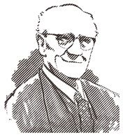
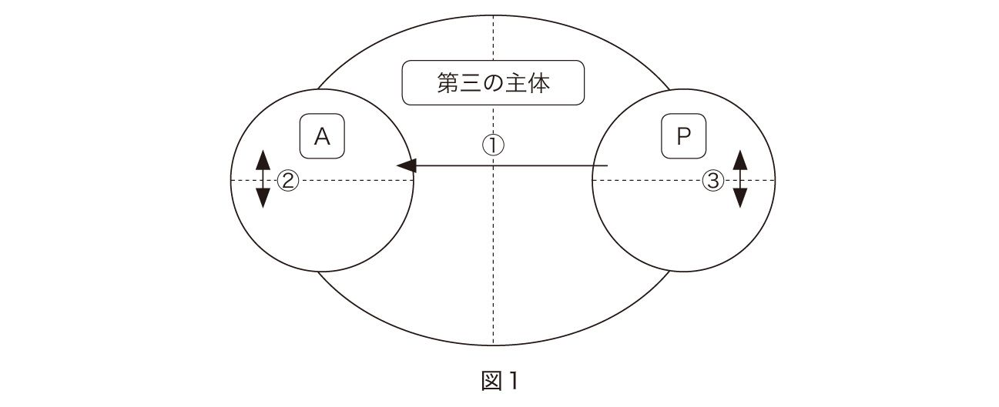

| 生い立ちと業績から学ぶ精神分析入門: 22人のフロイトの後継者たち | |
| 横川 滋章 & 橋爪 龍太郎 & 井上 美鈴 & 加藤 佑昌 & 坂井 俊之 & 下平 憲子 & 古田 雅明 & 馬淵 聖二 & 森本 麻穂 | |
| (2015) | |
この作品は横書きでレイアウトされています。
また、ご覧になる機種により、表示の差異が認められることがあります。
一部の漢字が簡略字で表示されていることがあります。
監修者による序──刊行の目的と編集方針
多摩心理臨床研究室・専修大学名誉教授 乾 吉佑
本書刊行の目的と意義および編集方針について述べておきたい。
1．はじめに──刊行の目的
本書は、10年前から開催されている多摩精神分析セミナー（30名程度のグループ、受講者は臨床心理士）での講義をもとに編集された。精神分析講義は、隔月1回４時間の研修時間のうち、前半の2時間枠をあて、後半は受講者の事例検討が設定された。講義内容は、フロイト（Freud, Sigmund）の技法論をはじめ、フロイト以後の精神分析の流れを、主に自我心理学派・クライン学派・独立（中間）学派を中心に、各学派を1年間ずつかけて講じ、結局フロイトとフロイト以後のアナリスト22名の生い立ちと業績が講義された。
本書では、フロイトの生い立ちや業績は数多くの紹介や解説があるので、フロイト以後のアナリスト22名をまとめて、生い立ちと業績から学ぶフロイト以後の精神分析について刊行することにした。なお、この22人は、フロイト以後の精神分析の各学派のアナリストとして代表的な人物や、近年注目されている人物を各講師の判断で選んだ。
当初の1クール4年間の精神分析講義は、知的理解が優先で難しすぎるとのアンケート評価を受けた。私たち講師は、小此木啓吾先生がその著『精神分析は語る』で指摘する「ともすると精神分析の論議は、難解な概念や錯綜した思考の展開になる。しかし精神分析は本来、治療関係の中で来談者との間でわかりやすく語り合うことができるための理論であり概念である。つまり、普通の話し言葉で平易に話が進められるような理解を共有することが望ましい。」（小此木啓吾著『精神分析は語る』 青土社, 1995, p.9）の助言を参考に、どうすれば精神分析講義に受講者が馴染め、役立つものとなるかを何度も検討した。
その結果、受講者が知的に馴染みやすく、かつ臨床家の自己体験に結びつく工夫として、アナリストの「生い立ち」と、その人物が「精神分析とどのような出会い」をしたかを加え、その上でその臨床家の主だった「業績」を取り上げて紹介してみることにした。また業績の説明では、可能な限り「代表的な事例」を提示し、理論や概念そして技法を解説する枠組みを工夫することが確認された。すると、2クール目の終わる8年目には、以下のようなセミナー受講者の声が寄せられた。少々長いものだが転載することにしたい。
「生い立ちを知って、理論だけとは異なりその臨床家に親しみが湧いた。／理論だけを学んでいると難解で知的に理解しがちだった。生い立ちを学ぶことでその臨床家の人柄が大枠でも掴める。すると難解さの裏側で流れているその臨床家の苦労やモノの見方が透けて見える。以前よりも追体験できる。／代表的なアナリストの方々は、最初から精神分析の考えにどっぷりと浸かっていると思ったが、生い立ちや教育訓練（や個人分析）の遍歴を目にすると、意外と紆余曲折し自分に合った学派の考え方や方法論を探り、自己（教育）分析を受けていても「自分に合わない」と別な学派や立場に移る過程を知り安心した。／精神分析の理論や技法だけから、そのアナリストを眺めると、知性化された臨床家像のみしか思い浮かべられずに、その通り学ばないと駄目だと自分の劣等性に目が向きがちであった。ところが生い立ちに触れると、かなり悲惨な生い立ちや苦難を持つ家庭環境にめげずに、むしろそれをバネにして、クライエント理解や臨床の実際に応用したり生かしたりしている臨床家の逞しさを強く学び、そこから生まれた治療論や理論だと親しみが湧き、難解さに挑戦してみようと思えた。／すんなりと自分の治療理論が作られたのではなく、種々のインスティチュート内での論争など紆余曲折もあり、人生ドラマとしても面白く感じたし、精神分析を学ぶことに興味が倍加した。」
私たちは、本セミナーで工夫したこの講義の方法（理論や技法をその人物の生い立ちと絡めて理解する方法）が精神分析講義の入門講座ではかなり有効な認知的学習になると知った。それとともに、講師間では私たちの実施している入門講座を広く精神分析を学ぶ方々とも共有してはどうかと本書刊行の決意をし、原稿のまとめと編集作業にはいった。（なお、本書の類書には、Janet Sayers（2000）Kleinians: Psychoanalysis inside out. Polity Press.がある。未邦訳。これはクライン派の代表的なアナリスト10名の生い立ちと理論をまとめたものである。本書でも参考にさせて頂いた。）
2．生い立ちと臨床業績をつなげて理解する意義
22名のアナリストの生い立ちや精神分析との出会い、そして臨床的な業績をまとめる編集過程で何度か読み返すにつれて、私は、同上で述べられた受講者の感想を素直に共有しただけでなく、改めて4年間の講義を聴いていたときに感じた幾つかの想いや新たな気づきを経験した。特に私は、アナリストの翻訳論文を読むとき、アナリストの"臨床的業績"にしか関心が向いていなかったなと思い当たった。と同時に、アナリストの生い立ちや精神分析との出会いなどの略歴は"付録"程度にしか関心を払わず、時にはほとんど読まずに閉じていたことにも気づいた。
思い返せば、私が精神分析的心理療法を学び始めた当初から、目の前の重症神経症の方や発達障害・統合失調症、さらにパーソナリティ障害の方の面接を依頼されたとき、その臨床実践に役立つ臨床的経験や事実を収拾するために、アナリストの臨床論文（理論や治療技法）を熟読玩味することが第一義に必須であった。アナリストの精神分析的営為から得られた臨床的成果や結果は、私や仲間の臨床家がそれぞれの臨床実践に援用することで、クライエントの安定を導き、職場環境を信頼のおける治療空間に基礎づける素地となっていた。このアナリストの文献から得られた臨床的認識と私たちの臨床実践を試行錯誤しながら結び付ける作業は、日常臨床には必要不可欠な試みだったし、この繰り返しが、私たちにとって精神分析的な臨床技量を備えるには最も大切な研修や訓練となっていた。そのような精神分析的な心理臨床を30年以上実施してくると、このアナリストの臨床文献から学び、それを現場に応用してゆく方法も十分に役立ち、クライエントの治療や安定に貢献できると確信が得られるようになった。後輩たちにもその方法を伝える学習方法を推奨してきていた。
しかし、この方法について自信と確信をもつ一方で、正直なところ、以下のような怯えや後ろめたさにも付きまとわれていた。アナリストの精神分析的営為を下敷きにして、日常臨床の精神分析的心理療法や実践活動を実施するには、学び始めた当初は特に、大いに後ろめたさが付きまとい続けた。というのは周知のように、アナリストの精神分析実践は、自由連想により週4～5回の治療構造を基に構成された治療理論や技法である。ところが私たちの実践は"精神分析的"と名付けても、たかだか週1～2回50分対面法で、極端な場合は毎週30分、さらには2週に1回30分、などが日常臨床の設定要請だからだ。その構造の違いに精神分析から得られた臨床的経験や認識を援用するのは、常に「純金に銅を混ぜた治療」を提供しているのではないかと自問したり、精神分析原理主義の臨床家の超自我的発言に怯えて、「自分の治療は精神分析的心理療法とは言えない」などの戸惑いもあった。だが、やがて数多くの生きづらい人々と出会っているうちに、アナリストの臨床的事実や成果に依拠しながら、治療構造を工夫し、臨床場面の状況を考慮しながら、どのように生きづらさを支えるかは、精神分析的心理臨床家の使命であるとすら思えたし、同上の自信と確信を得てゆくようになっていった。
ちょうどその頃、今から10年前に多摩精神分析セミナーが開始され、各講義でアナリストの生い立ちや精神分析との出会いとともに、すでに私には馴染みであったいくつもの代表的な臨床的理論や技法が講じられた。講義を傍聴するにつれて、これまで"付録"や付け足しのように思っていた生い立ちや精神分析との出会いの略歴が、実はそのアナリスト自身および臨床的業績を理解してゆく上で大変参考となり必須であると、改めて私自身が気づかされることになった。
何を今さらと思われるかもしれない。もちろん自分の仕事を見直せば、その人の育ちと職業アイデンティティがつながることは、臨床家としてはごくごく当たり前の認識である。常日頃クライエント理解にはその方法を使用しているはずだ。しかし、率直に反省してみると、そのときには、まったくその人の生き方や略歴などは眼中になかった。つまり、臨床論文を対象化した文献としてしか理解せず、生きた臨床論文（一人の臨床家の生きた臨床的実践的営み）として把握していなかったのである。
ところがこの度、本書で取り上げた22名のアナリストについて一章一章と重ねて、生い立ちや精神分析との出会いのあり方に触れ、かつ臨床的な業績の思索をその点と絡めて読み進めてゆくと、同上のような文献読みだけでは済まされず、各アナリストの治療理論や技法が、これまでのように難解でわかりにくい概念や思考の展開の知的作業として映るだけではなかった。読み進めている生きた人間としての私と情緒的に結びあってきて、臨床家として、うまくいかず立ち止まって模索し続けたこれまでの私自身の歩みとも重なり、各アナリストの生い立ちや精神分析との出会いの足跡に親しみをもった題材として、ぐんぐんと私の心に迫ってくるのだった。
あえて言葉にすれば、以下の二つの想いを強く感じていた。一つは、私がどうして臨床家を志すことになったのかという私自身の生い立ちと結びつく想いが常に回想されていた。二つには、私たち臨床家の日々の営みとアナリストの体験が同列につながり、身近な親しみや、時には鋭い警告・叱責をもって入ってくるのだった。そのアナリストが何故、精神分析を志向し、そこでどのように治療対象と出会い、治療経験を重ね業績を積み上げていったのかの過程が、率直に私の日常の臨床の営みとして捉えられた。まさに、同門の学びをするものとして強く共感を覚えたのだった。
人生の悪戦苦闘の中からアナリストに成ること、成るまでの訓練過程での苦労の様子なども描かれていた。また精神分析を通して、広く多角的に自らを捉える視点を得るとともに、個人分析体験がクライエントの改善につながる素朴な驚きも率直に述べられていた。アナリストの人となりが、どうであったかとともに、その生い立ちから生まれた、そのアナリストの個性と思想性がクライエントと絡み合い、そして織りなされる種々の情緒体験を通して理解されてゆく様子、つまり訓練研修の重要性も理解することができた。きっと、私同様、教育訓練途中の読み手の読者は、本書から種々のひらめきやヒントを見出すに違いない。
本書で述べるアナリストの生い立ちは、病蹟学的に検討された厳密なものではない。しかし、各アナリストの生い立ちに含み込められた母子関係の確執、父への憧れと同一化、同胞葛藤、戦争体験、青年期の漂泊と想い描いた体験などの各人の生き様が薄墨のように描かれている。そして、その後どのように精神分析と出会うかの教育訓練過程、またどんな治療対象に臨床家として興味や関心を抱き、臨床上の業績を見出し深めていったかが描かれている。
読み進めると、読み手である私たち臨床家の創造性が立ち働きはじめ、自分自身の生い立ちと精神分析への憧れや学びへの欲求が、何故、自分は臨床家を志したのかなどとも結び合い、深い内省へと進めてゆくことになろう。そして、照り返されて自分自身のコンプレックスや内的葛藤の一つひとつに光が当たることになり、その気づきは臨床家としての認識を深め、人の内奥の闇に光が当たる様子もまた、アナリストたちの臨床業績から見えてくる。フロイトが発見した精神分析の方法論によって、人間精神の種々の側面を見出すとともに、さらに今もまさに同じ精神分析の方法論の手法をもって、私たちも人間探求に進んでいるとの想いを共有することだろう。
以上、私自身は本書を通して"生い立ちと臨床業績をつなげて理解する意義"を再度認識することになった。読者にとっても有意義な臨床家としての自己探求に役立てば幸いである。
3．編集方針
周知のように、S・フロイトに続く精神分析の発展は、大きく二つの流れに大別されている。一つはフロイトの精神分析に基本的な観点から批判と変革を加えて、独自の新しい科学を再構築しようとした流れ（アドラーの個人心理学、ユングの分析心理学、ビンスワンガーの現存在分析）と、もう一つは、精神分析の枠内にあって、批判、修正、新たな観点の導入などを通して、より新しい精神分析をめざそうとした流れ（自我心理学派、ラカン学派、ネオ・フロイト学派、クライン学派、対象関係論、自己心理学）である。本書は後者の流れの中から、フロイト以後の精神分析として、特にクライン学派、独立（中間）学派、自我心理学派（自己心理学を含む）を3部構成に分けて取り上げた。
⑴ アナリストの選択
多摩精神分析セミナーで取り上げたアナリストは、自我心理学派6名に対して、クライン学派10名、独立学派6名とクライン学派がたいへん多く取り上げられている。これは今日のわが国の学会動向とともに、日常の臨床実践においても、つまり困難事例である境界例や精神病圏への精神分析的接近に果敢に挑戦してゆく臨床上の必要性からも、このようなアナリストの選択となった。
なお、アナリストの掲載順は講義の順番とは異なり、読者の便を優先した。各アナリストが分析家を志し個人分析を受ける、あるいは正式に各地の精神分析協会に登録した順に掲載している。ただし、ガントリップを独立派のフェアバーンとつなげたり、タスティンとアルヴァレズは自閉症の治療や研究とつなげておくなど、読者にとって理解しやすいようにと考え並べ換えた。また、現代クラニアンの三傑と言われるブリトン、スタイナー、フェルドマンからは、ブリトンのみを取り上げるなど、アナリストの選択に偏りがあることを予めお断りしておきたい。
⑵ 生い立ちを取り上げることをめぐって
アナリストには、生育史や具体的なエピソード、家族や友人との交流の様子や葛藤など、自らの生い立ちを自覚し、あえて自分の理論とのつながりを公表して取り上げている方と、自らを公表することに関する不安（publication anxiety）という観点から、自分の考えや理論を公表することにかなり慎重で繊細な取り扱いをする方がいることも、セミナーの講義を通して知った。両者の見解があることは当然のことであるが、学ぶ側からは前者のアナリストからは、臨床家としての自分を見直し再吟味する上で有形無形の影響を受けることが多く、また勇気づけられることも多かった。
本書で取り上げる生い立ちは、先にも述べたように病蹟学の手法から綿密にアナリストのパーソナリティ特性やコンプレックスと業績のつながりを吟味するようなものではない。しかし、読者は本書をお読みになると、臨床家としての自分自身の臨床上の問題点と自分の生い立ちとの間に、今さらながら深い結びつきがあることを知ることになると思う。私自身もまた、先述したように自らの生い立ちと業績との不可思議なつながりに想いを馳せるようになった。
⑶ 読書案内と資料解説をつけたこと
各講師の努力で読書案内を付けることができた。資料解説としては、アナリストの出身地を示した欧米の地図、学派的な展開図、所属する精神分析協会および研究所などの情報も載せ、理論や業績が創造されてくるアナリストの立場や個人的な側面から見直す視点を提供している。読書案内や資料は各講師が執筆にあたって、読者の理解を深めるために、再度調べ直す努力によってまとめられたもので、改めて各講師に感謝したい。
講師は担当のアナリストに気持ちを入れて講義にあたっていた。したがって、生い立ちについても、エピソードを種々の文献にあたりながら集める努力をされた。またアナリストの代表的な理論や業績を上手に要約して説明している。本書執筆にあたっては、講義中に受講者から難しいと指摘のあった点については、その質問をもとに、改めて理解を促進しわかりやすくすることから再検討している。さらに、可能な限りアナリストの臨床事例に即しながら理論を語るようにし、原著にあたるなどの努力をお願いした。しかし、理解しやすくなった半面、物足りなさやもっと深めたいと思われる読者もおられると思う。そのときには、各章の最後に、読書案内を準備し、欧文や邦文の文献を数多く挙げているので、興味のある読者は読書案内に挙げられている成書にあたっていただくことをお願いしたいと思う。
⑷ 執筆者紹介
以下の多摩精神分析セミナー講師である新進気鋭の臨床心理士が担当した。
井上美鈴（横浜国立大学男女共同参画推進センター）
加藤佑昌（医療法人社団慶神会武田病院・慶應義塾大学）
坂井俊之（東京医科大学病院）
下平憲子（信州大学総合健康安全センター）
橋爪龍太郎（文京学院大学臨床心理相談センター）
古田雅明（大妻女子大学人間関係学部・メンタルヘルス半蔵門）
馬淵聖二（千歳烏山心理相談室・菱沼メンタルクリニック）
森本麻穂（かながわ臨床心理オフイス）
横川滋章（関西国際大学人間科学部）
執筆者の皆様には、何度も修正および訂正のご依頼を繰り返した。忍耐強く本書作成にご協力いただいたことに感謝申し上げる。また改めて申し上げるまでもないが、本書刊行の影の執筆者である多摩精神分析セミナーの数年間の受講者の皆さんの講義内での応援も、本書に有形無形の力となっている点を記して感謝したい。
なお、本書出版に対して内容、文献など精査して検討してきたが、内容に不備や漏れがある場合には監修者までご指摘をいただきたい。
4．おわりに
本書刊行までにはずいぶんと年月がかかった。アナリストの生い立ちを文献渉猟することが大変難しく、先述したように「自らを公表することに関する不安」を抱かれているアナリストもいたし、現役世代で臨床・研究・著作活動を続けている場合は、わずかな程度の紹介しかなかったからである。それでも各講師は奮闘努力されて講義時に加えて本書刊行のために方々の文献にあたり本書をまとめる努力をされた。
そのため、刊行を決意してから日の目を見るまで数年がかかった。創元社の渡辺明美さんには辛抱強く相談に乗って頂き、かつ見守り激励し続けていただいた。渡辺さんの温かなご支援の甲斐あって、やっと刊行の運びになった。渡辺さんそして内貴麻美さんに改めて感謝申し上げたい。
平成27年3月30日 夜桜の妖しさに誘われながら
乾 吉佑
生い立ちと業績から学ぶ精神分析入門 目次
第Ⅰ部 自我心理学派（自己心理学も含む）
第１章 A・フロイト──父の自我心理学を発展させた秀才
第２章 マーラー──精神分析の仮説の実証に努めた一人
第３章 エリクソン──自らの起源や存在意義の探求者
第４章 カーンバーグ──境界例治療の第一人者
第５章 フォナギー──現代自我心理学の代表的論客
第６章 コフート──ミスター・サイコアナリシスから自己心理学の創始者へ
第Ⅱ部 クライン学派
第７章 クライン──クライン学派の創始者
第８章 アイザックス──無意識の幻想に光を当てたクラインの盟友
第９章 ビック──タビストック方式乳幼児観察の創始者
第10章 ローゼンフェルド──突出した臨床能力とバイタリティの人
第11章 スィーガル──クライン理論の伝道者
第12章 ビオン──思索しつづけた精神分析の巨人
第13章 メルツァー──クライン派の革命児
第14章 タスティン──自閉症児の心の世界に寄り添ったセラピスト
第15章 アルヴァレズ──自閉症児の心の開拓者
第16章 ブリトン──現代クライニアン三傑の一人
第Ⅲ部 独立学派
第17章 フェアバーン──孤高の精神分析家
第18章 ガントリップ──対象関係論を広めた第一人者
第19章 バリント──精神分析を一般医療につなげた臨床家
第20章 ウィニコット──独創的な小児科医
第21章 ボラス──精神分析家という名の詩人
第22章 オグデン──現代精神分析の代表的思索家
巻末資料
挿絵・装画 野津あき
装丁 濱崎実幸
第Ⅰ部
自我心理学派
（自己心理学も含む）
第Ⅰ部の自我心理学派は、フロイト晩年の正常で健康な自我の把握を手がかりとして、現実、超自我、エスに対する自律的な自我機能の研究を進め、精神分析における全体的な自我理論を体系づけた。神経症者における病態心理（深層心理）と健常者の正常心理を統合する全体的な人間心理を科学的に理解しうるような理論を確立しようとした。つまり、フロイトの解明した無意識の心理機制を人格全体の中に位置づけようとしたのである。
本書では、アンナ・フロイトからフォナギーまでの5名と、かつて自我心理学の先頭に立っていたが、その後自己心理学を創生したコフートを取り上げた。
Anna Freud (1895-1982)
第１章
アンナ・フロイト
──父の自我心理学を発展させた秀才
1 はじめに
アンナ･フロイトは、精神分析の創始者ジークムント・フロイトの末っ子で、児童の精神分析の創始者として有名です。また、父の研究を受け継いで精神分析的な自我心理学の基礎をつくりました。
他にも、自我心理学派のハインツ・.ハルトマンやエルンスト・クリスらと年刊誌「子どもの精神分析研究（The Psychoanalytic Study of the Child）」を編集したり、国際精神分析学会の副会長を長年務めたりと、指導者として精神分析の発展に貢献したことでも有名です。
2 生い立ち ※参考文献⑴をもとにまとめています。
精神分析の世界へ
アンナは父フロイト（当時39歳）と母マルタの末っ子（6人目）として、1895年12月3日、オーストリア・ウィーンにて出生しました。父の溺愛を受けていた2歳半上の姉ゾフィの影に隠れて育ち、いたずらっ子として評判の元気な子でした。
アンナの最終学歴は、ウィーンのコッタージ・リセウム（日本でいう中学・高校）です。1912年（17歳）に卒業した後すぐには就職せず、1914年に英語の勉強のため単身イギリスを旅行しました。しかし、同年に第一次世界大戦が勃発し、イギリスは敵国となり、すぐに帰国しなければなりませんでした。帰国してから母校で教師を始めましたが、ある生徒は後に「若いのに年上のおばちゃん先生より厳しかった」と振り返っています。
アンナは15歳頃にはすでに父の論文を読み、教師をしながら父の精神分析講義に出席していました。そして、1918年（23歳）から父フロイトによる分析を受け始め、本格的に精神分析の世界に足を踏み入れます（当然、親から子への分析は後に物議を醸しますが、精神分析の理論や教義が確立していなかった当時は珍しくなかったようです）。その後、オランダ・ハーグでの国際精神分析会議に出席するなど、仕事や友人を父と共有するようなり、27歳で論文「殴る空想と白昼夢」を精神分析協会に発表し、フロイトの子どもたちのなかで唯一、協会の正会員（精神分析家）になりました。
その翌年から児童を対象にした精神分析（児童分析）の実践を始め、2年後にはウィーン精神分析研究所で児童分析のセミナーを開きました。
父の代理と自我心理学の創始
1923年、父フロイトが口蓋ガンを患うと、アンナは付き添いや看病を多く頼られるようになり、さまざまな場所に同行しました。また、そのガンを機に、精神分析の批判勢力に対抗するための「秘密委員会（Secret Committee）」が結成され、アンナも一員になりました。会員たちには信用の証として、インタグリオ（彫り込み宝飾）のはめられた指輪が与えられました。
1927年からの7年間、アンナは国際精神分析学会の事務総長を務め、他にも児童分析の臨床、児童分析セミナーの開催、カンファレンスの企画などをこなしました（セミナー受講者には、後の著名な分析家が多くいました）。その傍ら、家では父の看病を続け、公の場には父の代理人として参加しました。1935年（40歳）にはウィーン精神分析研究所の責任者になり、その後に「自我が不快感や不安感をかわす方法」についての研究を著書『自我と防衛機制』にまとめ、自我心理学のパイオニアの一人としての評価を確立しました。
1937年（42歳）、オーストリアの政治経済状況が悪化するなか、アンナは生涯の友人ドロシー・バーリンガムと貧しい子どものための保育園を開きました。そこでは子どもの自由を尊重し、子どもの行動の観察や研究をする機会も得ました。しかし、ナチスの侵攻により数ヵ月のうちに閉鎖を余儀なくされ、その年の3月にはアンナがゲシュタポに一日連行されたこともあり、フロイト一家はロンドンへ移住しました。その翌年の1939年9月、父フロイトが亡くなりました。
ロンドンでの活躍
移住先のイギリスでは、メラニー・クライン（第7章）が独自の児童分析の理論と技法を発展させていました。すでに1920年代後半から、児童分析をめぐる二人の論争は始まっていましたが、1941～45年にかけて英国精神分析協会の教育訓練や理論をめぐる衝突は激化し、英国の精神分析界が分裂の危機に晒されるほどでした。この衝突は、（協会の）大論争と呼ばれています。紳士淑女協定によって、各派の訓練コースを併設することでひとまず落ち着きました。
第二次世界大戦中、アンナはハムステッド戦争孤児院を開設し、80人以上の片親の乳幼児を収容しました。その子どもたちの愛着形成のために、ヘルパーとの継続的な関わりをもたせ、母親たちには可能な限り施設を訪れさせました。戦時下の子どもや家庭がない子どもとの経験は、バーリンガムとの共著で論文にまとめられています。
1947年（52歳）にはハムステッド児童治療コースを開設し、5年後には小児クリニック（ハムステッド･クリニック）を増設しました。そこでは、発達ライン（参照）や発達診断プロフィールを用いた事例検討会が毎週行われ、実際的で理論的な洞察が得られました。この頃、児童分析家の訓練における彼女の影響力は急速に広まっていきました。
活動の広がりと賞賛
1950年代以降は定期的に渡米し、講義や研究を担当し、仲間を訪問しました。また、1950年のクラーク大学（父フロイトもかつて講義を担当）に始まり、1980年のハーバード大学に至るまで、名誉博士号を授与され続けました。他にも、1967年（72歳）にエリザベス女王2世から大英帝国勲爵士の称号を授与され、1973年には国際精神分析学会の名誉会長になりました。
全8巻からなる『アンナ・フロイト著作集』は1968年に刊行が始まり、1983年に完結しました。それは、アンナが86歳でこの世を去った1年後のことでした。彼女はかつて自分の人生を次のように語っています。「私は伝記にするほど十分に活動していません。私について語るには数行で十分です......『彼女は子どもたちと人生を過ごしました！』と」。
3 理論と実践
アンナの主な理論と実践を、主として参考文献⑵の「フロイト，アンナ」の項をもとにまとめ、おおよその年代順に、（1）児童分析の創始、（2）父フロイトの研究の継承と自我心理学の基礎づくり、（3）子どもの発達の全体像を評価する「発達ライン」概念の提唱、（4）精神分析の国際的発展への貢献について取り上げます。
児童分析の創始
アンナは1920年代頃から、それまで成人が対象だった精神分析を児童へ適用し、児童分析を確立しました。『児童分析入門』では「子どもに関する限りは、分析には一定の修正や調整が必要で、さらに言うならば、特別な注意をしながらしか用いられるべきではない⑶」（p.4）と語っています。さらに、子ども特有の心理を配慮し、以下の点を強調しました。
開始前に準備期間を設けてしっかりした情緒的結びつきを築くこと（後に不要と修正）
自由連想の代わりにプレイセラピーを導入すること
父母（子どもにとっての外界）に対する教育や協力を求めること
さて、児童分析を語るときに欠かせないのが、メラニー・クラインとの児童分析をめぐる論争です。クラインもアンナとほぼ同時期に児童分析を始めていましたが、技法をめぐる両者の主張は大きく対立し、精神分析史上に残る「論争」に発展したのです。この争点を、森⑷をもとにまとめてみます。
■アンナとクラインの共通点と相違点
両者は「言語表現能力がまだ十分でない子どもにプレイを行う」点は共通します。一方、大きな違いは、アンナは子どもの外界や環境を重視して、支持的・教育的な関わりを強調したのに対し、クラインは子どもの精神内界を重視して、解釈を言葉で伝えるなど大人と同様の関わりを強調したことです。
この背景には、エディプス・コンプレックス（oedipus complex）や超自我（つまり罪悪感や良心）に関する考え方の違いがあります。すなわち、アンナは父フロイトに従って「エディプス・コンプレックスが解消して超自我が芽生えるのは5～6歳」とし、一方のクラインは「エディプス・コンプレックスや超自我は原始的な形ながらも0歳から認められる」と主張したのです。簡単に言えば「子どもは何歳から自分の不安（問題）に向き合えるか」という議論です。
以下、論争の五つのポイントを表１にまとめてみました。
■論争の結果
児童分析をめぐる二人の論争は、1920年代後半に始まり1940年代にピークに達しました。そして、次第にお互いの批判を受け止め、修正がなされていきました。結果、アンナは子どもに転移が起こることを認め、クラインは外的な母親の役割や養育環境を重視することを認めました。
なお、この精神分析史上に残る論争を医師ではない分析家（レイ・アナリスト）の二人が行ったことが、その後のレイ・アナリストの立場向上に貢献したと言われます。
自我心理学の基礎づくり
アンナは父フロイトの理論・研究を継承しました。なかでも自我の防衛的な機能の研究は、ハルトマンらの自律的な自我機能の研究と統合され、その成果は精神分析的な自我心理学の基礎となりました。彼女は、フロイトの自我の防衛理論を体系づけ、発展させて『自我と防衛機制』（1937）にまとめ、父の80歳の誕生日にプレゼントしました。この内容を、1966年に改訂された『自我と防衛機制』の訳本⑸をもとに概観します。
アンナは、フロイトが論じてきた自我の防衛機能（内面の苦痛に対する自我の働き）を10種類の防衛機制（defense mechanism）に整理しました。すなわち、抑圧、退行、反動形成、分離、打ち消し、投影、取り入れ、自己自身への向けかえ、逆転、昇華です。
また、防衛機制が、心の成長に伴い発達していくことも明らかにしました。特に、以下に示す幼児期や思春期に特有な防衛機制を論じました。
■幼児期の否認
自我の現実検討機能の力がまだ弱い子どもは、現実の否認によって現実的な不快を克服します。ごく幼いうちは空想に浸ることで、4、5歳では身振りや言葉（嘘をつく、まねをするなど）で現実を否認します。もし、これが成人に日常的にみられれば病的ですが、子どもなら周囲も許容してくれるので正常なやり方になります。
■思春期における防衛機制
衝動が高進する時期は、それを抑えようとする力も強まります。すると、衝動が穏やかな時期には認められなかった自我の働きが現れます。思春期には性衝動の増大に対して、禁欲と知性化という特有の防衛機制がみられます。
（1）禁欲：これは性衝動の禁止に留まらず、生活全般の衝動に対して禁欲的で道徳的にしようと働く防衛です。しかし、度を越すと食事やトイレの我慢など、無害で必要な衝動まで禁止してしまいます。時には、禁止していた衝動に一気に身を委ねる極端さや逸脱行為もみられます。ただ、完全に禁止し続けるよりはマシなので、その意味では正常の範疇とも言えます。
（2）知性化：これは性衝動を知的に熟考する防衛です。これは、性衝動に立ち向かい、知的・言語的に置き換えて統制しようとする意味で、より適切な手段と言えます（「禁欲」は性衝動からの逃避）。ただし、これは単なる知的作業で、実際の行動には結びつかない点が特徴です。例えば、青年が理想の恋愛を知的に力説する場合、それは親密な恋愛関係を結ぶ困難に直面した苦悩の反映でしかなく、その困難の解決にはつながりません。
発達ライン（developmental lines）
アンナはハムステッド・クリニック（Hampstead Child Therapy Clinic）を主な拠点に、児童の自我発達の研究を系統的に行いました。その方法は、経験の蓄積から得られたデータから理論を導き、その理論を治療で実践するものでした。『児童期の正常と異常⑹』の本で彼女は、児童期の正常な発達プロセスについて「退行と進展の波を繰り返し、自我機能と欲動の成熟が相関的に進む」、そして「子どもは環境や対象関係に適応していき、葛藤を統合・組織化していく」としています。
そして、児童の発達の全体像を評価するための発達ラインの概念を提唱しました。これは、欲動・自我・超自我の発達を個別に評価するのでなく、それぞれの相互作用や環境への反応のしかたにも注目するものです。いろいろな発達ラインがありますが、アンナは以下の四つを記載しています。
第１のライン：従来のリビドー発達（口唇期、肛門期など）のライン......新生児の母性への全面的依存から青年の心的・身体的な自立に至る流れ（これが発達ラインの原型）
第２のライン：身体的な機能のライン......母性に完全に依存する状態から身体的な自立へ向かう流れ（摂食や排泄の自律、身体管理ができるようになる）
第３のライン：対象世界のライン......自己中心性の段階から他者を認めて仲間関係をもてるようになる段階までの流れ
第４のライン：リビドーの備給対象のライン......欲動エネルギーの向く先が自分自身から外側へ向かう流れ（自分の体いじり遊びから玩具へ、そして勉強・仕事へ）
これらの概念を基本に、アンナは健康な発達と障害のある発達を連続的に理解する観点も示しました。また、実際の発達評価にあたっては、各発達ライン内の到達度や発達ライン間のバランスをアセスメントします。この概念は、後に発達プロフィールを用いた発達診断法へと発展し、児童精神医学や発達心理学の現場で用いられています。
国際精神分析学会の発展への貢献
アンナは、精神分析の創始者である父フロイトの後継者として、国際精神分析学会の発展に大きく貢献しました。具体的には、精神分析の諸問題の整理、明確化、組織づくりなど、政治的な分野でも指導者的能力を発揮しました。
実に、1934年から約40年間もの長期にわたって国際精神分析学会の副会長を務め、その後も名誉会長として関わり続け、「精神分析の番人」や「超自我的存在」として学会の発展に力を尽くしました。
4 おわりに
アンナの業績は、父が創始した精神分析を厳格に継承したことと、対象を児童に拡大して発展させたことの二つに大きくまとめられると思います。そしてこの二つは、精神分析を超自我的に守り続けた父性的な側面と、児童分析や精神分析的自我心理学を生み育てた母性的な側面と言えそうです。彼女は生涯結婚せず、子どもを授かりませんでしたが、精神分析界の父性と母性を一人二役で担い、精神分析の維持・発展に一生を捧げたのかもしれません。
5 読書案内
日本語で読めるアンナ・フロイトの著作
牧田清志・黒丸正四郎監修（1981-1982）『アンナ・フロイト著作集（全10巻）』岩崎学術出版社
〔引用・参考文献〕
⑴ Freud Museum（2009）Anna Freud: Life and work of Anna Feud. URL：http://www.freud.org.uk/education/topic/40053/anna-freud/
⑵ 小此木啓吾ほか編（2002）『精神分析事典』岩崎学術出版社
⑶ Freud, A.（1974）The writings of Anna Freud. Volume I, Introduction to psychoanalysis: Lectures for child analysts and teachers 1922-1935. New York: International Universities Press. 牧田清志・黒丸正四郎監修（1981）『児童分析入門──児童分析家と教師のための講義1922-1935』アンナ・フロイト著作集 第1巻，岩崎学術出版社
⑷ 森さち子（2005）『症例でたどる子どもの心理療法──情緒的通いあいを求めて』金剛出版
⑸ Freud, A.（1966）The writings of Anna Freud. Volume II, The ego and the mechanisms of defense. New York: International Universities Press. 牧田清志・黒丸正四郎監修（1982）『自我と防衛機制』アンナ・フロイト著作集 第2巻，岩崎学術出版社
⑹ Freud, A.（1965）The writings of Anna Freud. Volume VI, Normality and pathology in childhood: Assessments of development. New York: International Universities Press. 牧田清志・黒丸正四郎監修（1981）『児童期の正常と異常──発達の評価1965』アンナ・フロイト著作集 第9巻，岩崎学術出版社
〔担当 加藤佑昌〕
Margaret Schönberger Mahler (1897-1985)
第２章
マーガレット・S・マーラー
──精神分析の仮説の実証に努めた一人
1 はじめに
小此木⑴は精神分析における自我心理学を四つの流れから整理していますが、本章で取り上げるマーガレット･マーラーはアンナ・フロイト、ジョン・ボウルビィ、ルネ・A・スピッツと共に、この流れの一つ、発生‐発達論的自我心理学に該当します。これはフロイト以後の英米において、ハインツ・ハルトマンらの自我心理学を理論的母体として、臨床的な精神分析研究と発達心理学的な実証的研究を統合する形で発展しました。
マーラーは、共生幼児精神病（symbiotic infantile psychosis）の概念と分離‐個体化（separation-individuation）に関する理論を発表しました。後者の分離‐個体化理論の研究は、成人の分析結果に基づく回顧的・再構成的な研究ではなく、乳幼児と母親を精神分析的な視点で直接観察した結果に基づいています。後に、ダニエル・スターン⑵は成人の心理療法の中で再構成される臨床乳児（clinical infant）と直接観察によって描かれた被観察乳児（observed infant）を区別しましたが、マーラーの研究は後者の被観察乳児へのアプローチと言えます。
2 生い立ち ※参考文献⑶、⑷、⑸をもとにまとめています。
母親から望まれない子どもとして（1897-1910）
マーガレット・マーラーは、1897年5月10日、ハンガリーのショプロンでユダヤ人家庭の長女として生まれました。父親はウィーン大学医学部出身の著名な内科医でした。母親は家事がすべてで、料理上手な主婦を自負していました。母親は19歳で結婚し、すぐにマーガレットを出産しました。しかし、親になるには若すぎると感じ、できるだけマーガレットと関係をもたないようにしたのです。マーガレットが病気や夜眠れないときに面倒をみたのは父親でした。そのためマーガレットは「私の共生期（normal symbiotic phase）はつらいものだった。母が大好きだったが拒否され欲求不満の怒りに満ちていた」と回想しています。
1901年に妹が誕生すると、母親はマーガレットには決してしなかったやり方で妹をかわいがりました。次第に母親には怒りを、妹には競争心を抱くようになり、マーガレットは「母と妹との愛情の相互作用を観察したことが私を小児科学と精神分析、特に、後の母子の二者単一体（dual unity）の研究へと向かわせた」と言っています。
必然的にマーガレットは父親っ子になり、父の知性・科学・医学の世界に目を向けました。父親はマーガレットをまるで息子のように扱い、彼女もまたその役割を進んで受け入れ、父のような内科医になりたいと同一化しました。しかし、母親からも父親からもかわいらしい女の子としては受け入れられなかったため、性同一性の混乱が続きました。
医学の道へ（1911-1923）
1911年（14歳）、6年間の初等教育を終え、ブダペストのギムナジウム（大学進学希望者が入学する学校）に進学しました。最愛の父と同じ医者になるためです。父親は娘の考えを受け入れ、娘の個体化への道を奨励しました。
ギムナジウムでは、後にマイケル・バリント（19章）の妻となるアリスと出会いました。アリスの母親は以前、シャーンドル・フェレンツィから教育分析を受けていました。そのため、アリスの家は一種のサロンのようで、フェレンツィやバリントが集い、マーガレットはそこで暖かく受け入れられました。そして15歳のとき、マーガレットはアリスが母親の所から持ち出したS・フロイトの精神分析の講義録を目にしました。マーガレットが精神分析家になりたいと感じたのはこのときでした。マーガレットが思いきって父親に医学部に入り精神科医になることを相談すると、父親は予想に反してその考えを支持してくれました。そして彼女はブダペスト大学の医学部に入学しました。
第3学年を終えた1919年2学期（22歳）、反ユダヤ政策のためにドイツの大学への転校を余儀なくされます。ミュンヘン大学でははしか予防の血清の培養をする小児科教授の補佐をし、教授の科学的貢献に感銘を受け、将来を研究に捧げることを決めました。一方、イェーナ大学では食べ物を反芻する子どもの治療をしている小児科教授のもとで勉強しました。教授が休日に子どもと一緒に遊ぶ様子を見て、マーガレットは子どもが精神的にも身体的にも健康になるためには遊びと愛が非常に重要だと学んだのです。
小児科学から精神医学へ（1923-1937）
その後、マーガレットはウィーンで小児科医としてスタートを切り、二つの病院で働きました。一つはフォン・ピルケクリニックで、ここでは細菌感染を防ぐため子どもが隔離されていました。一方のモル育児相談所では、病気の赤ちゃんがよくなるには母親的な人が一緒にいる必要があると考え、赤ちゃんに特定の看護学生を割り当て一緒にいさせました。同じ病であってもモル育児相談所のほうが何人もの子どもが生き延びていることを知り衝撃を受けました。
1926年にフェレンツィの紹介でヘレーネ・ドイチュの教育分析を受け始めました。ところが、最終的に分析不可と断られてしまいます。マーガレットの伝記を書いたボンド⑶は「ドイチュはマーガレットから向けられた母親転移や彼女の語りに対して、批判せずに受け止めるという精神分析の基本姿勢を無視した」と批判しています。その後、マーガレットはアウグスト・アイヒホルン、続いて、ウィル・ホッファーの教育分析を受けました。ホッファーとの分析は1935年まで断続的に続き、自身の人格構造、適応能力がよりよい方向に変化したとマーガレットは語っています。
1920年代後半からウィーン精神分析協会の訓練を開始しました。グリート・L・ビブリングはマーガレットの初めての公式のスーパーバイザーでした。ビブリングは、母親が赤ちゃんの不快を理解する第六感のような無意識的コミュニケーションをもっていると考えていました。マーガレットはこの話を聞き、早期の母子が共生関係の状態にあることを知りました。そして、1933年に正式に精神分析の訓練を終え、ウィーン精神分析協会から精神分析家として認められました。
将来の夫となるポール・マーラーと出会ったのは、ホッファーの教育分析を受けながらアンナ・フロイトの児童分析セミナーに参加している時期でした。1936年（39歳）、ポールと結婚しました。
アメリカでの生活（1938-1985）
1938年（41歳）、ナチズムを逃れアメリカへと向かいました。1940年にはニューヨーク州での医師免許を取得し、分析家としての仕事を開始しました。ニューヨーク精神分析協会、コロンビア大学精神科、アルバート・アインシュタイン大学で臨床を行いました。この頃のマーガレットは、子どものチックと精神病に興味がありました。
1948年に、マーガレットは母親がアウシュビッツで殺されたことを知り、ひどい抑うつ状態に陥りました。このとき、彼女の苦痛を和らげたのは同年代の友人イディス・ジェイコブソンの存在でした。この時期ジェイコブソンは、1964年に出版する『自己と対象世界』を執筆中で、これは後にマーガレットの分離‐個体化過程の研究に理論的土台を与えることになります。
1950年からフィラデルフィア精神分析協会で教育を担当することになりました。1950年代から1960年代まで週末にフィラデルフィアで学生を教え、月曜日にニューヨークに戻り実践と研究を行うというかなりハードな生活を送っていました。一方、私生活では1953年に夫ポールと離婚しました。
1956年にマヌエル・フラーと共にニューヨーク市にマスターズ児童センターを開設したことが、決定的な転換点となりました。マーガレットは当初、小児の精神病の病理研究を行っていましたが、徐々に平均的な子どもに現れる正常で普遍的な精神内界の分離‐個体化過程の研究へと視点が移りました。そこで、1959年、同センターで正常な母子を対象とした縦断的観察研究を開始しました。この成果が1975年に出版される『乳幼児の心理的誕生』です。
1969年にはアメリカ精神医学会（APA）から アグネス・パーセル・マクギャヴィン賞（児童青年の精神疾患の予防に重要な貢献をした精神科医に贈られる賞）を、1981年にはAPA功労賞を贈られました。亡くなるまでマーガレットは執筆し、教え、そして、ニューヨークとフィラデルフィアでスーパービジョンを続けました。1985年10月2日（88歳）永眠。死の2、3日前まで起き上がり11月に出席するシンポジウムの計画について考えていたと言います。
3 理論と実践
ここでは共生幼児精神病と分離‐個体化理論を取り上げます。マーラーはレオ・カナーの唱えた早期幼児自閉症に対して、共生幼児精神病の概念を提出しました。その後、子どもが母親から分離‐個体化していく人生早期の正常発達に目を向け、分離‐個体化理論を発表しました。
共生幼児精神病（symbiotic infantile psychosis）
1949年から54年にかけて、マーラーは小児の精神病には、自閉的幼児精神病（autistic infantile psychosis）、共生幼児精神病の2タイプがあることを発表しました。自閉的幼児精神病とはカナーの早期幼児自閉症に該当し、自閉の殻に閉じこもり、母親との養育関係を形成できない障害です。一方、共生幼児精神病とは、母親との共生関係から抜け出せずに、激しい分離不安を示す状態を言います。その後、自閉症の研究が発展するにつれ、疾患ではなく自閉症児の発達過程の病態と理解され、その特殊性は薄れました⑹。
分離‐個体化（separation-individuation）理論 ※参考文献⑺、⑻、⑼をもとにまとめています。
これは1959年から約10年間ニューヨーク市のマスターズ児童センターで、母子の観察を中心とした縦断研究で検討された理論です。子どもが正常な共生状態から抜け出て、どう自己イメージを母親のイメージから切り離し、心の誕生に至るのかについて、分離の流れと個体化の流れから明らかにしています。
コラム マーラーらの研究の方法論
・どうやって観察するか？
精神分析的な目、すなわち、平等に漂う注意（free-floating attention）で観察。精神分析で耳が機能するのと同じように、乳幼児の観察では目がその役割を担う。
・何を観察するか？
乳幼児の運動、模倣、身ぶりを観察。
・観察の結果は何を示すのか？
乳幼児の運動現象は内的な出来事と関連し、運動は乳幼児が利用できる内界の表出手段と考えられる。そのため、観察者は乳児の運動現象から内部状態を推論することができる。マーラーらは、観察から「本質的な公式」を導き出そうとしているので、『乳幼児の心理的誕生』を読む際は、この時期の分離‐個体化状況がどういうものか（本質的な公式は何か）、それはどのような運動現象から説明されているかの2点に注目すると理解しやすい。
分離‐個体化理論では、子どもの発達段階を「分離‐個体化過程以前」と「分離‐個体化過程」そのものから捉えます。「分離‐個体化過程以前」は正常な自閉期（normal autistic phase）と正常な共生期（normal symbiotic phase）の二つの下位段階からなります。一方の「分離‐個体化過程」は、生後4、5ヵ月で始まり3歳まで続き、分化期（differentiation period）、練習期（practicing period）、再接近期（rapprochement period）、個体性の確立と情緒的対象恒常性の始まり（consolidation of individuality and the beginnings of emotional object constancy）の四つの下位段階からなります。以下に各期の特徴を記します。
■分離‐個体化過程以前
正常な自閉期 normal autistic phase（生後1、2ヵ月まで）
自己と他者、自己と対象の区別がなく、内界と外界との区別もない時期です。不快な苦痛を和らげようとする自分自身の試み（排尿、排便、咳、くしゃみ、嘔吐）と母親の世話によるものを区別することができません。
正常な共生期 normal symbiotic phase（生後2ヵ月～4、5ヵ月）
自己と対象・他者への関心や、自己の内界と外界への関心を向け始める時期です。母親と一つの共通した境界を持つ二者単一体であるかのように感じており、自己と対象・他者、内界と外界は融合していて区別が曖昧です。
■分離‐個体化過程
第１下位段階：分化期 differentiation period（生後4、5ヵ月～9、10ヵ月）
自己表象と他者表象の分化が生じる心の孵化の段階です。以下の行動から推測されます。
①手足を伸ばしたり回したりして運動感覚を体得する行動：自分の体の成り立ち、特にその境界を理解したことを表す。
②玩具を自分の口に入れる、近くの物をつかもうとする行動：周囲の人や物に注意を向け、それを持続させる（心の孵化を表す）。
③母親の髪の毛、耳、鼻を引っ張る行動、母親のアクセサリーや眼鏡をいじる行動、受身的イナイナイバー：母親を探索していることを表す。
④抱っこされていると、母親からのけぞって体を離そうとする行動：母親や周囲の探索を表す。
⑤母親と他者を見比べる行動：馴染みのないものとあるものを照合する認知機能の発達を表す。母親の顔を認知できると人知り不安へと発展する。
第２下位段階：練習期 practicing period（生後9、10ヵ月～14、15ヵ月）
身体的に母親から離れる練習をするなかで、母親との特殊な結びつきが確立され、自律的自我機能が成長する段階です。ハイハイの頃の初期練習期と直立歩行ができるようになった頃の本格的練習期の二つに分けられます。以下の行動から推測されます。
初期練習期
①母親から離れて熱中して遊び、時々、母親のもとに戻り身体的接触をして、また遊ぶ行動：母親が自分の緊張を和らげてくれ、慰めてくれると確信していることを表す。一方で母親も情緒的に応答し、基地のように見守ることが重要。母親のもとに戻って親密な接触をすることを情緒的な燃料補給（emotional refueling）と言う。
②母親がいなくなると、馴染みのある人の前でも目を閉じてしまう行動、気分の落ち込み：母親と一心同体であるという理想状態にしがみつき、分離の痛みに耐えていることを表す。
本格的練習期
①自律機能（運動機能、特に歩行）の練習に夢中になる行動：周りの環境の発見に喜び、さらに探索するなかで分離感覚を促進していることを表す。
②母親からわざと逃げて捕まえさせる行動：母親に飲みこまれる恐怖を受動的なものから能動的なものに変化させたことを表す。
③母親が見えなくても練習（遊び）を中断しない行動：母を記憶し始め対処能力が発達したことを表す。
第３下位段階：再接近期 rapprochement period（生後15ヵ月～24ヵ月）
身体的に離れる能力や認知能力の発達によって分離感覚が刺激されるため、母親の不在に無関心でいられなくなり、一緒にいたいという欲求が生じる段階です。この親密さへの欲求は練習期の間は停止しているため、この下位段階を再接近期と名づけています。再接近期は初期再接近期、再接近期危機（rapprochement crisis）、危機を個人的に解決する時期の三つに細分化できます。
初期再接近期（15ヵ月頃）
①子どもが母親のもとにさまざまな物を運んでくる行動：母親と分かち合いたい、一緒にそれらの物を楽しんでもらいたいという気持ちを表す。
②子ども同士で物や縄張りをめぐってけんかする行動：個体化が進み、所有権を侵害する者への抵抗を表す。
③母親の不在に、落ち着きがなくなる行動：苦痛な悲しみの感情の防衛を表す。
再接近期危機（18、20～24ヵ月）
①母親から離れたりくっついたりを繰り返す行動：母親を押しのけたい欲求と母親にしがみつきたい欲求が急速に交替する両価傾向を表す。
②自分の要求を母親に訴え、叶うとまた元に戻させ、これらの一連の動作を繰り返し要求する行動：自己の延長として母親を使い、苦痛な分離の認識の否認を表す。
③母親の不在に抑うつ気分が強くなり、不機嫌になる。観察者に身を寄せ、ひざに乗る行動：傷ついた状況を表す。観察者を共生的な母親の代理や自己の延長として使っていることを表す。
危機を個人的に解決する時期（21ヵ月～）
子どもが母親からの最適な距離を発見する時期。段階の特性はなく、個性が強くなる。
①物に命名する、要求を表現するなど言語発達。
②父母への同一化。
③象徴遊びを通して願望や空想を表現する能力の発達が影響する。同時に、母親の情緒的応答性も大切になる。
第４下位段階：個体性の確立と情緒的対象恒常性の始まり consolidation of individuality and the beginnings of emotional object constancy（生後20、22ヵ月～30、36ヵ月）
複雑な認知機能（言語発達、空想、現実検討）が発達することで、個体化が達成され、対象恒常性がある程度達成される時期です。それは以下の行動から推測されます。
①空想遊び、役割演技などの遊び。遊び仲間や大人への関心が増すこと。時間感覚が発達し、満足が延期できること。大人の要求への反抗。自律することへの願望：個体化が進んでいることを表す。
②母親がいなくても動揺しなくなる様子：対象恒常性の発達を表す。
■分離‐個体化理論のその後の展開
分離‐個体化の概念は、乳幼児の発達だけでなく青年期の発達や成人の精神病理を理解する上でも重要な貢献をしました。青年期を第二の分離‐個体化期と捉えたピーター・ブロス、境界例のクライエントの心性が再接近期への固着と考えたジェームズ・F・マスターソンとオットー・F・カンバーグ（第4章）が、この概念を取り入れています。
また、乳幼児の発達研究の知見から、新生児の生得的な有能さ（これは知覚や認知のみならず愛着の点からも）が強調されるようになり、マーラーの自閉期と共生期への批判があります。例えば、スターン⑵は「乳児は最早期から外界の出来事に反応し、適切な情報処理を対人的に行いうる」（スターンはこの時期の自己感を新生自己感と呼びました）としてマーラーを批判しました。このスターンの説に対してマーラーは、分離‐個体化期以前の観察データが少ないことを認め、「自閉期」を「目覚め（awakening）の時期」と呼んでもよいかもしれないとスターンに語ったと言います⑶。
4 おわりに
乳幼児期の発達研究ではマーラーらの分離‐個体化理論に加えて、ボウルビィのアタッチメント理論も有名です。両者は一見、分離と愛着という反対の概念を示しているように見えます。しかし、本質では同じことを捉えています。つまり個体化のために必要な分離は、安全な愛着の枠組みの中で生じる過程なのです⑽。両者の違いを細かく捉えると、それは論点の置き方で、愛着理論が情緒的絆の形成に重点を置くのに対し、分離‐個体化理論は絆を形成した上で親子が分離していくプロセスに重点を置きます⑾。このように考えると、臨床場面では、親子の関係性がある程度安定している事例では、分離‐個体化理論における分離や個体化の状態を見立てることが有用だと考えられます。一方で、虐待・ネグレクトに代表される親子の関係性を形成するところでの困難さが大きなテーマの事例では、情緒的絆の形成に重点を置くアタッチメント理論が求められていると感じます。乳幼児精神保健の領域ではどちらの理論にも精通することで、よりさまざまな事例に対応できるのではないでしょうか。
5 読書案内
日本語で読めるマーラーの代表的な著書
高橋雅士・織田正美・浜畑紀共訳（2001）『乳幼児の心理的誕生──母子共生と個体化』黎明書房 Mahler, M. S., Pine, F., & Bergman, A.（1975）The psychological birth of the human infant: Symbiosis and individuation. New York: Basic Books.［文献⑺］
〔参考文献〕
⑴ 小此木啓吾（2002）「自我心理学」小此木啓吾ほか編『精神分析事典』岩崎学術出版社，162-164
⑵ Stern, D. N.（1985）The Interpersonal world of the infant: A view from psychoanalysis and developmental psychology. New York: Basic Books.神庭靖子・神庭重信共訳（1989）『乳児の対人世界理論編』岩崎学術出版社
⑶ Bond, A. H.（2008）Margaret Mahler：A biography of the psychoanalyst. Jefferson: McFarland & Company.
⑷ Stepansky, P. E.（1988）The memoirs of Margaret S. Mahler. New York: Free Press.
⑸ Pine, F.（1986） Margaret S. Mahler: 1897-1985.The Psychoanalytic Quarterly, 55（3）, 493-495.
⑹ 中沢たえ子（2002）「共生幼児精神病」小此木啓吾ほか編『精神分析事典』岩崎学術出版社，95
⑺ Mahler, M. S., Pine, F., & Bergman, A.（1975）The psychological birth of the human infant: Symbiosis and individuation. New York: Basic Books.高橋雅士・織田正美・浜畑紀共訳（2001）『乳幼児の心理的誕生──母子共生と個体化』精神医学選書 第3巻，黎明書房
⑻ Mahler, M. S., McDevitt, J., & Bergman, A.（1983）The psychological birth of the human infant: The separation-individuation process. The Margaret S. Mahler Psychiatric Research Foundation.小此木啓吾監修・北山ユリ訳［VHS］『乳幼児の心理的誕生』マーガレット・マーラー財団，慶応心理臨床セミナー制作
⑼ 吉田弘道（2004）「乳幼児期の心理臨床」吉田弘道編著『ライフサイクルと心理臨床』八千代出版，1-21
⑽ Coates, S. W.（2004） John Bowlby and Margaret S. Mahler: Their lives and theories.Journal of the American Psychoanalytic Association, 52（2）, 571-601.
⑾ 吉田弘道（1999）「心の発達」前川喜平・白木和夫・安次嶺馨編『今日の小児診断指針（第3版）』医学書院，10-16
〔担当 井上美鈴〕
Erik Homburger Erikson (1902-1994)
第３章
エリク・H・エリクソン
──自らの起源や存在意義の探求者
1 はじめに
エリク・エリクソンは、主にアメリカで活躍していた非医師の精神分析家で、心理学者でもあります。S・フロイト晩年の弟子で、教育分析をアンナ・フロイトなど著名な精神分析家に受けています。特に、児童分析や青年期を対象とした精神療法に力を注ぎ、「アイデンティティ」や「ライフサイクル論」の概念を提唱したことで有名です。
彼の研究は、教育学・哲学・社会学・人類学などの幅広い分野に影響を与えています。
2 生い立ち 参考文献⑴をもとにまとめています。
出生の秘密
母カーラ・アブラハムセンは、デンマークのユダヤ人社会の名家に生まれ、才気に溢れる美人でした。ユダヤ人社会の女性では珍しく高校進学もしています。カーラは15歳で母を亡くしますが、伯母や父・兄弟にかわいがられて育ちました。そのためか、心の赴くままに行動する面があり「名家の女性らしい振る舞いを身につけなかったのでは」と心配されていました。
カーラは21歳のとき、ユダヤ人の株式仲買人ヴァルデマール・サロモンセンと結婚しましたが、彼は婚礼の夜に姿を消してしまいます（犯罪への関与などさまざまな噂があるようです）。
その数年後の1902年にエリク（まだ「エリクソン」という名ではありません）が誕生します。ここに彼の出生の秘密があります。出生証明書には「父：ヴァルデマール・サロモンセン」とありましたが、数年前に失踪した人物が父のはずがないのです。また、カーラが妊娠に気づいたのは休暇先のドイツでの入浴中で、すでに出産2ヵ月前でした。名家の一族は不名誉とスキャンダルを避けて彼女をドイツに留まらせたので、エリクはフランクフルトで誕生しました。そして、エリクの実父をカーラは生涯明かしませんでした（しかし、エリクの風貌などからデンマーク系北欧人とされています）。いずれにせよ、黒髪で黒い眼の未婚の母が金髪で青い眼の子どもを連れる姿は人目を引き、実家から離されていた孤立も手伝って、二人の絆は特別でした。
新しい父親と進路の迷い
エリクは病弱で胃腸が弱く、ユダヤ人小児科医テオドール・ホンブルガーの診察を受けていました。カーラはこの医師と惹かれ合い、1904年に結婚します。医師との結婚で、カーラは名誉挽回し、実家に歓迎されましたが、エリクにとっては母との間に闖入者が割り入るような体験でした。エリクはテオドールが実父だと教えられましたが、信じられませんでした。なお、その後3人の妹が誕生しています（長女はジフテリアで2歳で他界）。
養父テオドールはユダヤ教会の指導的立場で、子どもたちにはユダヤ教を忠実に教えました。母もその意向に従いましたが、エリクにだけは「一人の人間として神に対峙し、自分なりの目標や信仰を見出して実行すべき」というキルケゴールのキリスト教精神も併せて教えました。
エリクは6歳でフォルシューレ（9年制の小学校。一部の生徒は4年で卒業可）に入学します。しかし、このときつらい体験をします。学校では家柄を「ユダヤ人」といじめられ、ユダヤ教会では外見を「キリスト教徒」といじめられ、自分の存在の落ち着かなさを味わったのです。4年で卒業すると、ギムナジウム（大学進学を目指す中高一貫校）へ進みましたが、学校を好きになれず内にこもりがちでした。そのなか、最終学年の頃から、同級生のピーター・ブロス（青年期研究で有名になる人物）とは親しくなっていました。
1920年（18歳）、ギムナジウム卒業後は大学へ進まず、数ヵ月間ヨーロッパ中を巡り、多くの時間を読書やノートに考えを書きつけることに費やしました（当時のドイツは、青年が放浪の旅をする「ヴァンデルシャフト」に寛容でした）。そして翌年、バーデン州立芸術学校に入学します。これは養父がエリクに望んだ医師の道との訣別でもあり、二人の折り合いは悪くなりました。一方で、その後の人生に影響を与えた芸術家ヴォルフとの出会いもありました。彼からエリクは「外見や形式にとらわれず、芸術を通じて自分自身の魂や本質に近づくこと、また社会と自分とを結びつけることの大切さ」を学びました。
ただし、この頃のエリクは漠然と芸術家を目指しながら将来に不安を抱いており、神経過敏で、旅に出たり読書に耽ったりと情緒不安定でした（後に、この頃を「アイデンティティの危機の重症例」と振り返っています）。
精神分析との出会い
1925年頃には芸術では生計を立てられないと考え、進路に悩み、抑うつ的になり頬も痩せこけました。そんなエリクを救ったのがギムナジウムの同級生ブロスでした。
ブロスはオーストリアのウィーンで、ドロシー・バーリンガムの子どもたちの家庭教師をしていました。ドロシーはアメリカの宝石商ティファニー家の出身で、S・フロイトから分析を受け、子どもたちはアンナ・フロイト（第1章）に分析を受ける富豪でした。ドロシーとアンナは非常に親しい間柄で、二人ともブロスを気に入り、彼を教師にしようとウィーンのヒーツィング（裕福な住宅街）に「ヒーツィング学校」を設立します。このときに、ブロスは学校立ち上げと教師の手伝いにエリクを誘い、エリクは初の定職を得たのです。
そのウィーンでエリクは、子どもを扱う優れた才能をアンナ・フロイトに見出されます。そして、彼女はエリクにモンテッソーリ教師養成コースで教員免許を取得させたり、月7ドルの安さで教育分析を引き受けたりしました。こうして、エリクは教育や子どもの精神分析という天職に出会い、人生が拓けていきました。
また、S・フロイトからも直接の交流や著作を通して学び、尊敬を深めました。さらに、ウィーンの精神分析サークル「水曜会」に参加し、精神分析界で影響力をもつハルトマンらに学び、フロイト正統派の自我心理学的精神分析を継承しました。他にも、アイヒホルンから子ども以外の精神分析の訓練も受けました。1933年（31歳）にはウィーン精神分析協会の正会員（自動的に国際精神分析学会の会員）に認められ、世界中で精神分析の仕事ができるようになりました。
なお、1929年（27歳）、博士号取得のために現代舞踊研究でウィーンを訪れていたジョアン・サーソンと恋に落ちます。彼女は伝統に縛られない自由さと知性を備えた女性で、二人はエリクの教育分析が終了した翌年の1930年に結婚しました（結婚数ヵ月前に長男、3年後に次男が誕生）。エリクにとって、ユダヤ教徒以外との結婚は両親と異なる道を歩む決断でもありましたが、ジョアンは後にソーシャル・ワーカーとして活躍し、エリクが母国語でない英語論文を助け、研究を手伝い、大きな支えとなりました。結婚の頃にはエリクの頬もふっくらしていました。
新しい自分の誕生
1930年頃、ナチスが勢力を強め、フロイト著作の焚書が行われ、ヒーツィング学校も閉鎖されました。エリク一家は1933年、他の分析家たちに先駆けてウィーンを離れますが、ここには自分なりの精神分析を新天地で実践したい思いもあったようです。最初は自分のルーツと考えるデンマークへ渡りましたが、精神分析の開業許可がおりず、その年の秋にアメリカ北東部のボストンへ移住しました。
新しい土地になじむ苦労はありましたが、本場ウィーンからの精神分析家は重宝され、アメリカ最初の児童分析家として活躍しました。そして、個人開業やボストン精神分析協会の活動、ジャッジ・ベーカー・クリニック（情緒障害児に他職種チームで支援する施設）、マサチューセッツ総合病院、ハーバード大学心理学部系列の心理クリニック（所長はTAT研究で有名なヘンリー・マレー）などで臨床と研究に携わりました。
1936年には提唱したコンフィギュレーション（参照）の概念が認められ、イェール大学に多額の報酬で呼ばれました。ここでも臨床とコンフィギュレーション研究を進めますが、子どもの性差への注目（フロイト正統学派的視点）が批判され、またアーノルド・ゲゼル（子どもの発達研究で有名）やクラーク・L・ハル（新行動主義のS-O-R理論で有名）らの心理学者との大規模共同研究もうまくいかないなどの躓きを体験しました。他方、文化人類学者メキールとのインディアンのフィールド研究（参照）では、スー族の伝統的な子育て方法に実際に触れ、文化や社会的慣習が内的世界へ与える影響に関心を深める体験がありました（1938年に生まれた女の子をスーと命名）。このように心理学者や文化人類学者と関わり、精神分析の外にも興味や関心を広げました。
1939年（37歳）はエリクにとって特別な年になります。帰化申請が認められ、アメリカ人となったのです。エリクは申請書の職業欄に精神分析家ではなく「心理学者」、出生地を「ドイツ」、人種を「スカンジナビア人」（いわゆる北欧）と記入し、さらに名前を「エリク・ホンブルガー・エリクソン」と改めました。「エリクソン」は北欧ではありふれた名前ですが、ここには「エリクErikの子どもson」＝「自分が生み出した自分」という意味も込められていました。
研究の広がりと深まり
同じ頃、カリフォルニア大学のバークレー児童福祉研究所から正常児を対象とした研究に誘われ、その際イェール大学を上回る給与や開業の援助、教育活動の自由が保証されて、エリクソンは西部へ引っ越しました。ここでも、先住民ユーロク族の研究を文化人類学者A・クローバーと共に行いました。ただ、エリクソンには一匹狼的な面があったようで、組織的な共同研究プロジェクトには馴染まず、1940年代半ばには独自の臨床や研究に時間を割いていきました。この頃、第二次世界大戦の兵士の事例を「彼らは日常から突然引き離され、見知らぬ土地に送られ、恐ろしい戦争にさらされ、アイデンティティのまとまりを失った人々だ」と検討し、アイデンティティ拡散（参照）の概念をまとめていきました。
そして1950年（48歳）、それまでの業績をまとめた処女作『幼児期と社会』を出版します。この本でエリクソンは、個人理解に必要な観点として、フロイトの生物学的観点に、新たに心理学的観点と社会・文化的観点を加えました。これらの仕事が認められ、同年にサンフランシスコ精神分析協会会長を務め、アメリカの自我心理学の指導者とみなされました。しかし、カリフォルニア大学の反共産主義運動（マッカーシズム）忠誠誓約書への署名を拒否して大学を去りました。
再び北東部に戻り、たくさんの仕事の誘いの中から、オースティン・リッグス・センターの研究員を選び、所長のロバート・ナイトやデヴィッド・ラパポートらと、青年期の精神分析的治療に没頭しました。1960年まで在籍したセンターでの活動は充実し、アイデンティティやライフサイクル（参照）に関する数多くの論文を発表し、後に2冊の論文集『洞察と責任』と『アイデンティティ──青年と危機』にまとめられました。
歴史上の人物との出会い
エリクソンの関心は歴史上の人物に向いていき、アイデンティティやライフサイクルなどの個人的要素に、時代背景などの社会的要素がどう影響を与えたか、マルティン・ルターやマハトマ・ガンディーなどを精神分析的に研究しました。例えば、日常臨床でエリクソンは、宗教や思想の良心の呵責に悩む青年たちに出会いましたが、共通の苦悩をルターの青年期に発見しました。そして、青年ルターのアイデンティティ危機と中世後期ヨーロッパのキリスト教危機などを結びつけ、ルターの思想が「神の声を聞いて応答する」から「心の奥から聞こえる自分の声を聞く」へと変容した過程を論じました（『青年ルター』）。1969年の著書『ガンディーの真理』はピューリッツァー賞とナショナル・ブック・アワードを受賞しました。
1960年からは、ハーバード大学でどの学部にも属さない特別教授職を与えられ、教育に情熱を注ぎ、大きな賞賛や栄誉を受けながら1970年7月（68歳）に教授職を退きました。
しかし、この頃から実証主義や行動主義、フェミニズムの台頭による批判が増し、精神分析界でもフェアバーン（第17章）やウィニコット（第20章）らに代表される英国対象関係論や、コフート（第6章）の自己心理学が注目されるようになりました。エリクソンは気を落とし、健康も悪化していきましたが、研究と執筆は続け、1982年に『ライフサイクル、その完結』を妻ジョアンとの共著で出版しました。
そして、1994年5月、ケープコッドの施設で妻に見守られながら92歳でその生涯を閉じました。
3 理論と実践
エリクソンの理論や業績として、ここではコンフィギュレーション、インディアンのフィールド研究、ライフサイクル論、アイデンティティ拡散の４点を取り上げます。
コンフィギュレーション（configuration）（1930年代の業績）
現代の精神分析では、子どもは遊びでおもちゃを象徴的に使用し、現実で表現できない受動的な経験（つらい出来事、重要な転機など）を能動的に表現すると一般に考えます。エリクソンはさらに、以下のようなコフィギュレーションの概念を提唱しました⑵。
エリクソンは、遊びのおもちゃの配置や構成など（コンフィギュレーション）から、子どもの内的世界や子どもを取り巻く外界の様子（家庭、学校、両親など）を理解できると考えます。また、子どもはおもちゃを用いて内的体験と外的出来事を統合し、自分の中に収めようとすると考えます。アンナ・フロイトも外界の影響力を検討していますが、エリクソンは「内界と同じくらい、もっと外界を観察して検討すべき」と主張するのです。
例えば、子どもの遊びの空間的配置から、性別の意識の片鱗がみられると説明します。具体的には、積み木の配置の観察で、女子は「四角形の小さい物」、男子は「三角形・円柱の大きな物」を好み、また女子は「壁がなく、家具を円形に並べた部屋など」、男子は「建物、塔、街路など」を作る傾向を指摘します。
以下、遊びで表現される「子どもの内的な感情や関心と外的社会との関連」を、ジャッジ・ベーカー・クリニックでの事例で見てみましょう。
【事例】船乗りの息子ジョン
ジョンは情緒発達が止まり、少し非行の傾向をもつ陰うつな6歳児だった。医学的な器質障害は認められないが、よく体の具合が悪くなり、怒りや性的衝動が高まるとズボンの中に排便し、口をきかなくなるという専門家もお手上げの子だった。
ジョンはエリクとの遊びのなかで、三つの積み木で食料雑貨店を作り、粘土の玉をナッツ配達のトラックに載せ、部屋の隅で荷を下ろした。彼は粘土の一つを「お母さんの玉」、同じ色の小さな玉を「赤ん坊の玉」と呼んだ。それから違う色で同じ大きさの玉をいくつか列に並べ「兄弟の玉...お母さんの兄弟」と呼んだ。エリクが「叔父さんのことかい？」と尋ねると、ジョンは青ざめてトイレへ駆け込んだ。戻ると「もらしちゃうときはこんな感じなんだ」と言った。
「お母さんの兄弟の玉」をエリクが「（母の兄弟の）叔父さん」と呼んだときの動揺や、トイレへの駆け込みから、エリクはジョンが耐えがたい秘密をもっている（もっと言えば性的に刺激されている）可能性を考えた。つまり、その「粘土の玉」はジョンの家族を表していると解釈し、「違う色の粘土＝（一般の）おじさんたち」が父の場所を奪っていると推測した。ジョンはナッツ配達人として、そういった家族の秘密、すなわち船乗りの父が家を空ける間に母が別のおじさんたちと情事を重ねているという秘密をエリクに配達していたのであった。この遊びでは、粘土の玉は家庭の力動を伝え、おもらしの代わりになっていた。エリクがジョンの母に確認すると、実は、自分の情事を他人に話さないようジョンに釘をさしていたことがわかった。
［その後］エリクは母親にその強制を止めさせて、その後の治療では、粘土に代わって言葉が使われ、最終的に言葉は詩になった。ジョンは自分の感情が「社会や環境」とどう関連しているかを理解することによって、最終的にしっかりとした自己の感覚を得ていった。
（参考文献⑵より）
インディアンのフィールド研究（1930年代後半の業績）
エリクソンは、スー族とユーロク族という先住民族と実際に関わって生活に触れ、彼らの文化を研究しました。そして、高度に機械化・合理化された近代社会で失われつつあるものを、それまで野蛮で原始的と蔑視されてきた彼らの文化に発見しました。
例えば、欧米では大人の視点で、早い段階から子どもにしつけがなされます（親子別々の寝室で寝る習慣など）。しかし、例えばスー族では、幼い子どものわがままを認め、子どもが成長して強い身体と自信を備えてから、初めて大人の視点で厳しく、しかし見守りながらしつけます。
先住民族の子どもは、このように伝統的な文化と社会の中で、自分の内部から自然に生じる発達のままに育ちます。すると、「心と身体」「自己と社会」「子どもの文化と大人の文化」などを一つの連続体として統合でき、社会に適した大人へと成長していけるのです。
近代社会の機械化に伴い、社会に馴染めず神経症的になる青年が増加する理由や、その解決のヒントが、先住民族のフィールド研究から示唆されたのです。
ライフサイクル論
あるプロセスに沿って少しずつ（＝漸成的に）発達する考えを一般に漸成説（epigenetic theory）と呼びます。精神分析の漸成説は、S・フロイトの心理・性的な発達論に代表されます。
エリクソンは、S・フロイトの理論を非常に大切にし、そこに心理社会的・文化的な視点を加え、ライフサイクル論として展開しました。エリクソンは『幼児期と社会⑵』で、人生を8段階に区分し、以下の漸成的図式（epigenetic chart）を考案しました（図1）。さらに、各段階を心理社会的な危機の状態と考え、その危機を乗り越え、発達課題を達成し自我に統合していくことが、精神的に健康な人生を歩むために必要だと考えました。
アイデンティティ拡散（identity diffusion）
1956年の論文『同一性の問題』でアイデンティティ拡散の概念を、今で言うボーダーライン事例の病態として記述しています。以下、参考文献⑶、⑷をもとに七つの現象を挙げています。
⑴ 「自分は何々である」という社会的な自己選択を回避し、際限なく延期する状態
⑵ 自分の能力の有限性や現実を否認する、同一性意識（自意識）の過剰状態
⑶ 読書などの一面的活動に没入し、勤勉さが失われた状態（労働同一化の障害）
⑷ 飲み込まれる不安から集団などに属せず、何でも暫定的にしか体験できない状態
⑸ 人と人との親密な関わりを極力避ける、拒否と孤立の状態
⑹ 時間的な見通しを失って自分を赤ん坊、あるいは老人のように感じる、時間的展望の拡散状態
⑺ 家族などから望ましいとされる役割に、軽蔑や憎しみを抱いた状態（否定的同一性の選択など）
これらは、今日ではボーダーライン事例のみでなく青年期一般の心理や病態に認められるものとされています。
事例
代表的著作『幼児期と社会⑵』には、その核心を為すいくつかの事例が掲載されています。ここでは、環境が個人に与える影響がわかりやすい事例を紹介します。
【事例】サム
サムは5歳の男児で、心因性のてんかん発作を主訴に小児科医から紹介された。
サムはもともといたずらっ子だったが、あるとき驚かせた祖母が心臓発作を起こし、そのまま亡くなってしまうということがあった。その後、死にまつわる刺激（死んだモグラを見つけるなど）で、心臓発作に似たてんかんが起こるようになった。
このとき、実は環境の変化もサムに影響を与えていた。サムはさまざまな人種が集まる地域で育ち、そこでは我が強く、粗野で乱暴な態度がよしとされた。しかし今は、閑静な町に唯一のユダヤ人一家として移り住み、行儀よくおとなしい態度が求められていたのだった。
そこでエリクソンは、サムが自分の置かれた社会的状況や情緒的な状態を理解するのを手助けし、また、サムが自分の中の乱暴な気持ちや発作の兆しに気づいたら、それを親に伝え、予防薬をもらうことを教えた。すると、大きなてんかん発作は起こらなくなった。
［解説］「粗野で乱暴な態度」がよしとされる自由奔放な社会から「行儀よくおとなしい態度」がよしとされる抑制的な社会への環境変化は、「男らしい自発性」が強まる発達段階にいたサムにとって、特に我慢のできないことであった。さらに、自分のいたずらで祖母を殺したかもしれない不安が重なり、一貫性のある自分らしさの感覚を統合できなくなってしまったと考えられる。
4 おわりに
エリクソンは外的世界が内的世界へ与える影響を見る視点を一貫して強調し、一般にも広く知られる「アイデンティティ」や「ライフサイクル」などの概念を提唱しました。これらの視点や概念は現代でもなお、人間理解の示唆に富みます。このような視点や概念の源泉となったのが、エリクソンが自らの不確かな起源や存在意義にまつわる苦悩や不安感に勇敢に立ち向かい、探求し続けたエネルギーだと考えると、彼の理論にさらに重みを感じます。
5 読書案内
日本語で読めるエリクソンの主な著作
仁科弥生訳（1977/1980）『幼児期と社会1・2』みすず書房［参考文献⑴］
小此木啓吾訳編（1973）『自我同一性──アイデンティティとライフサイクル』誠信書房［参考文献⑸］
〔参考文献〕
⑴ Friedman, L. J.（1999）Identity's architect: A biography of Erik H. Erikson. New York: Scribner. やまだようこ・西平直監訳（2003）『エリクソンの人生（上・下） ──アイデンティティの探求者』新曜社
⑵ Erikson, E. H.（1963）Childhood and society: Second revised and enlarged edition. New York: W. W. Norton & Company. 仁科弥生訳（1977）『幼児期と社会1』みすず書房
⑶ 乾吉佑（2009）『思春期・青年期の精神分析的アプローチ──出会いと心理臨床』遠見書房
⑷ 小此木啓吾・岩崎徹也・橋本雅雄・皆川邦直編（1985）『精神分析セミナーⅤ 発達とライフサイクルの観点』岩崎学術出版社
⑸ Erikson, E. H.（1959）Identity and the life cycle. Psychological issues, monograph 1. New York: International Universities Press. 小此木啓吾訳編（1973）『自我同一性──アイデンティティとライフサイクル』誠信書房
〔担当 加藤佑昌〕
Otto Friedmann Kernberg (1928-)
第４章
オットー・F・カーンバーグ
──境界例治療の第一人者
1 はじめに
オットー･カーンバーグは自我心理学をベースとしながら、対象関係論を統合させた精神分析理論を展開していった人です。主な業績には、パーソナリティ構造モデル理論と、それをもとにした境界例および重症クライエントの治療としての表出的精神療法などがあります。
本書執筆時（2014年）には87歳のカーンバーグですが、多くの論文を発表するなど現役で活躍されているためか、詳細な生い立ちを見つけることはできませんでした。しかし、パーソナリティ構造モデル理論はアセスメントにおいて非常に重要な概念なので、本稿では理論や治療論を中心にご紹介していきます。
2 生い立ち ※参考文献⑴、⑵および⑶の訳者あとがきをもとにまとめています。
カーンバーグは1928年9月10日、オーストリアのウィーンでユダヤ人として出生しました。11歳のときに、両親はナチス政権によるオーストリア併合からの亡命を決意し、チリに移住します。チリ大学で生物学と医学を専攻し、1953年（25歳）に大学を卒業後、チリ精神分析協会で精神分析学を学び始めました。
精神分析医の資格を取得すると、1959年（31歳）に、ジョンズホプキンス病院でジェリー・フランクが取り組んでいた心理療法研究を学ぶために渡米し、1961年にアメリカ国籍を取得します。1965年から3年間は自我心理学のメッカであったメニンガー記念病院附属のトピカ精神分析研究所でも研鑽を積み、このとき、対象関係論学派のラモン・ガンザレインにも教育を受けています。その後、メニンガー記念病院に勤務し、精神療法研究プロジェクトの主幹や院長を歴任。境界例のクライエントの入院治療で大きな実績をあげ、1967年、39歳のときに「境界パーソナリティ構造」についての論文を発表しました。
1973年（45歳）に、ニューヨーク精神医学研究所の臨床部門の責任者となると、コロンビア大学精神科や、コーネル大学医学部精神医学教室の教授も歴任し、精神分析医の教育・指導に携わっていくようになります。
また、1972年にニューヨーク精神分析協会からハインツ・ハルトマン賞、1975年にペンシルベニア病院研究所からエドワード・A・ストリーカー賞など、これまでに多くの賞を授与されています。1995年には児童精神分析家のパウリーナ夫人と共に来日し、日本精神分析学会第41回大会で講演しています。さらに1997～2001年（69～73歳）までは、国際精神分析学会の会長を務め、現代の精神分析の重鎮として活躍しています。
なお、妻パウリーナは2006年4月16日にガンのため71歳で亡くなっています（カーンバーグ77歳）。しかしながら、2008年の資料の中で、カーンバーグが自身の今後の計画について、「コーネル大学における重症の人格障害の治療に基づいた継続研究、クライエントの治療、執筆、そして（私の妻である）ケイとの楽しい生活」と述べていることが記されており、80歳近くになって新たなパートナーを得たようです。
コラム 人となりと位置づけ
生い立ちを補足するものとして、カーンバーグの著書の邦訳者たちが記している人となりや位置づけを引用してみました。
ニューヨーク学派の統帥E・ジェイコブソン、シカゴ学派の大立者H・コフート亡き後の、名実共にアメリカ精神分析学会の第一人者。彼の立場は、「対象関係論的自我心理学」あるいは「自我心理学的対象関係論」と言うことができる〔前田重治⑶〕。
人格障害の研究を精神分析学の立場から一貫して推し進めてきた人。とりわけ〈境界パーソナリティ構造〉と彼自らが名付ける人格障害の研究は、その延長に立つ〈病的ナルシシズム〉の研究と並んで、伝統的精神分析学の可能性を理論と臨床の両面で著しく拡大したものとして、広く精神病理学一般の世界からも大きな注目を集めている〔山口泰司⑷〕。
学問的姿勢を一言でいえば「統合」。WHOの研究に積極的に参加したり、アメリカ精神医学会で境界性障害の薬物療法の討論者を引き受けたり、他の領域の人々との相互理解ができる人である。大戦中ウィーンで育ち、チリに亡命し、アメリカで研究生活をするという彼の人生遍歴が彼の学風を作ったのだろう。岩崎徹也氏がメニンガー財団で、大野裕氏がコーネル大学でそれぞれ師事したこともあり、児童精神分析家であるパウリーナ夫人ともども大変な知日家である〔西園昌久⑸〕。
彼の人生体験がそうさせたのか、物事の関係づけや統合を重視しているように理解される。彼の著作の多くが、二つの独立するテーマをandで結んでいることが示すように、彼の研究も統合を心がけているのであろう〔西園昌久⑹〕。
これらを読むと、カーンバーグは、物事に対して一つの概念や理論にとらわれず、広く柔軟な視点で捉えていこうとする人物であることがうかがえます。
3 理論と実践
カーンバーグの業績として最も重要なものが、パーソナリティ構造（personality organization）モデルです。そして、このモデル概念を拠り所として、境界例および重症クライエントの治療論を展開しています。
パーソナリティ構造モデル
■パーソナリティ構造モデルが作られるまで⑹、⑺
神経症とも精神病とも区別がしがたいクライエント群がいることは古くから指摘されており、フェダーンの「潜伏分裂病」や、ホフとポラティンの「精神分裂病の偽神経症型」など、さまざまな位置づけをしながら、その治療が試みられていました。その中で、1953年にロバート・ナイトが発表した「境界状態」の概念は、境界例という用語を診断として使うべきではなく、自我の防衛と適応機能を評価することが大切という主張であり、多くの賛同を得ました。
カーンバーグもまた、ナイトと同様に、境界状態は症状パターンに特徴を持つ臨床症候群ではなく、一つの安定した人格病理構造の単位として考えられるものとして、クライン（第7章）やフェアバーン（第17章）らの対象関係論と自我心理学の統合を試みました。その結果、産みだされたのが境界パーソナリティ構造（borderline personality organization）という概念です。この概念は、本能の発達・超自我の発達・自我の防衛といった自我心理学的理解に、内的対象関係の変遷という対象関係論的理解を加えた、独自の内的対象関係の発達モデルとなっています（図1）。
■三つのパーソナリティ構造とその鑑別⑶、⑻、⑼
さらにカーンバーグはパーソナリティの統合の水準を、内在化された対象関係の構造化の水準と対応させて、パーソナリティ構造を以下の3水準に分類しました。
①神経症的パーソナリティ構造（neurotic personality organization：NPO）
②境界パーソナリティ構造（borderline personality organization：BPO）
③精神病的パーソナリティ構造（psychotic personality organization：PPO）
これら三つの鑑別は、同一性の統合度・防衛操作・現実検討能力という三つの基準に基づいています（表1）。
それに加えてパーソナリティ構造の鑑別のための構造化面接（structural interview）も作られました。その面接では、あいまいで矛盾する点に対して質問することでクライエントがどの程度理解しているかを明確化し、次にその事実の中から治療的意義があると思われる葛藤や不調和にクライエントが気づくように直面化し、最後に対人関係でみられる判断や感情が面接者にも向けられていないかどうか転移の解釈を行います。それによって、作動している防衛機制や現実検討を確かめていくというものです。
境界例および重症クライエントの治療──表出的精神療法⑸、⑽、⑾、⑿、⒀
カーンバーグは、境界例および重症クライエントの治療法として表出的精神療法（expressive psychotherapy）という治療論を提唱しました。その治療目標は、クライエントが自己と他者を、一貫性のある、統合された、現実的に知覚された個人として経験する能力を高め、反応の仕方を狭めず自我構造を脆弱にしないようにすることにあります。
治療方法は、精神力動的モデル（転移、防衛機制、抵抗、解釈などの技法）に基づく一方で、転移の処理や技法的中立性などが修正され、週2～3回の対面法で実施されます。「心の中に思い浮かんだことはすべて話す」という自由連想法の標準的規則は、「心の中にある事柄を率直に、持続的に話し合う」という指示として修正されます。また、クライエントの内的な対象世界の解離あるいは分裂した構成要素（攻撃性と愛とを完全に分離することで、自己と他者との間にまったく理想的な関係か、まったく迫害的な関係かを作り出すこと）が、治療早期からセラピストに向ける転移の中に現れるのに応じて、そのような分裂した状態を維持している自我の防衛操作を診断し、明確化・解釈することによって、部分自己表象と部分対象表象を統合していきます。従来の精神分析療法では、早期から発生的解釈を導入して、現在の振る舞いを過去の事柄と関連づけますが、表出的精神療法では「今‐ここで（here and now）」を重視し、治療が進んだ段階になって初めて「そのとき‐そこで（there and then）」に対する解釈が導入されるのです。
以上の点を治療経過からまとめると、三つの時期に分けることができ、さらに初期は五つの段階を踏むことになります（表２）。
カーンバーグの著書の中では、さらに表出的精神療法を進めていくために必要な、治療に関するオリエンテーションや構造化の方法、治療契約に対する違反や抵抗への対応なども具体的に記されています。興味をもたれた方は、是非、参考文献の⑸や⑽をご参照いただければと思います。
4 おわりに
カーンバーグがどんな子ども時代を過ごし、どんな家族関係かはわかりませんでしたが、ウィーンから、チリ、アメリカと、言語も文化も違う国を渡り歩いてきたことが、「統合」というスタンスにつながっているのかもしれません。また、カーンバーグの提唱する重症クライエントへの治療論は、古典的な精神分析治療の技法が修正されていますが、その設定はわが国で多く行われている週1回対面法による精神分析的心理療法にもつながるものであると感じます。
5 読書案内
日本語で読めるカーンバーグの主な著作
前田重治監訳（1983）『対象関係論とその臨床』現代精神分析双書II-10，岩崎学術出版社［参考文献⑶］
山口泰司監訳（1992/1993）『内的世界と外的現実──対象関係論の応用（上・下）』文化書房博文社［参考文献⑷］
西園昌久監訳（1996）『重症パーソナリティ障害──精神療法的方略』現代精神分析双書II-19，岩崎学術出版社［参考文献⑸］
松浪克文・福本修訳（1993）『境界例の力動的精神療法』金剛出版［参考文献⑽］
〔参考文献〕
⑴ Arehart-Treichel, J.（2008） Most-cited psychoanalyst: Continues pioneering ways.Psychiatric News, 43（7）, 12-48.
（http://psychnews.psychiatryonline.org/doi/full/10.1176%2Fpn.43.7.0012）
⑵ Palombo, J., Koch, B. J., & Bendicsen, H. K.（2009） Otto F. Kernberg（1928--）Guide to psychoanalytic developmental theories. New York: Springer, 181-196.
⑶ Kernberg, O. F.（1976）Object relations theory and clinical psychoanalysis. New York : Jason Aronson. 前田重治監訳（1983）『対象関係論とその臨床』岩崎学術出版社
⑷ Kernberg, O. F.（1980）Internal world and external reality: Object relations theory applied. New York : Jason Aronson. 山口泰司監訳（1992/1993）『内的世界と外的現実──対象関係論の応用（上・下）』文化書房博文社
⑸ Kernberg, O. F.（1984）Severe personality disorders : Psychotherapeutic strategies. New Haven : Yale University Press. 西園昌久監訳（1996）『重症パーソナリティ障害──精神療法的方略』現代精神分析双書II-19，岩崎学術出版社
⑹ 西園昌久（1989）「境界例をめぐる最近の動向」季刊精神療法, 15（4）, 318-335
⑺ 北田穣之介（1974）「境界例の精神分析的研究の最近の動向（その1）──その人格構造と対象関係の特異性をめぐって」精神分析研究, 18（5）, 163-179
⑻ Kernberg, F. O.（1967） Borderline personality organization.Journal of the American Psychoanalytic Association, 15（3）, 641-85.
⑼ Kernberg, F. O.（1996） A psychoanalytic model for the classification of personality disorders.Implications of Psychopharmacology to Psychiatry, 66-78. 岩崎徹也訳 「人格障害のための精神分析的なモデル」精神分析研究, 40（3）, 155-168
⑽ Kernberg, O. F., Selzer, M. A., Koenigsberg, H.W., Carr, A. C., & Appelbaum, A. H.（1989）Psychodynamic psychotherapy of borderline patients. New York: Basic Books.松浪克文・福本修訳（1993）『境界例の力動的精神療法』金剛出版
⑾ 大野裕（1990）「Kernberg的な境界例治療の技法」季刊精神療法, 16（1）, 2-8
⑿ Kernberg, O. F.（1987） An ego psyochology: Object relations theory approach to the transferrence.The Psychoanalytic quarterly. 56（1） 197-221. 大野裕訳「転移に対する自我心理学──対象関係論的アプローチ」精神分析研究，31，274-286
⒀ 菅野信夫（1982）「カーンバーグにおける境界例治療の転移と逆転移」現代のエスプリ175，至文堂，58-71
〔担当 森本麻穂〕
Peter Fonagy (1952-)
第５章
ピーター・フォナギー
──現代自我心理学の代表的論客
1 はじめに
ピーター・フォナギーは日本でも、メンタライゼーションに基づく心理療法（Mentalization Based Treatment、以下MBT）⑴で知られるようになりました。ロンドンのアンナ・フロイト・センターの所長、ロンドン大学（以下UCL）のフロイト記念・精神分析学教授など数々の重要なポジションについています。その関心領域は主に、境界性の精神病理、暴力、早期愛着関係にあり、精神分析と実証研究を統合する仕事をしています。アンナ・フロイトの後継者と目される現代の自我心理学の代表的論客です。本邦では故・狩野力八郎先生らが精力的に実践と解説・翻訳をしてこられました。詳細については「5 読書案内」を参照していただきたいのですが、本稿ではそれらをもとにして概説を試みています。
2 生い立ち
現役で活躍中なので、詳しい生い立ちは公表されていないようです。フォナギーは1952年にハンガリーのブダペストで出生。父親がパリ医大の医師で、フォナギーは幼少期をパリで過ごし、ロンドンに移住したようです。1971年にUCLに入学し、臨床心理学を学び主席で卒業。1980年、28歳にはUCLのPhD、英国心理学協会の臨床心理学学位を取得。1977年頃から、臨床心理士として働く傍ら、UCLで心理学を教え始めました。
1980年から1985年にかけて、英国精神分析協会の成人部門の訓練を受け、1988年に36歳で分析家になりました。その後、1989年から1995年にかけて、アンナ・フロイト・センターで児童精神分析の訓練を受けています。1992年にUCLのフロイト記念精神分析学教授に就任し、1995年に英国精神分析協会の訓練・監督分析家になっています。
1994年、フォナギーは東京で行われた世界乳幼児精神医学会で、狩野先生の紹介でメニンガー精神医学校校長だったエフレイン・ブライバーグと出会いました。これを契機にフォナギーはメニンガーでMBTについて発表し、以来、ロンドンとメニンガーのあるヒューストンを毎月往復するようになります。2003年にはハウストンのベイラー医科大学の「メニンガー精神医学・行動科学部門」における子どもと家族のためのプログラムのコンサルタントになりました。アンナ・フロイト・センターの所長にもなり、2008年にはUCLの臨床・教育・健康心理学リサーチ部門の長にも就いています。
3 理論と実践
フォナギーは、アンナ・フロイト（第1章）の愛弟子であるジョゼフ・サンドラーのもとで学びました。しかし、やがて自我心理学に疑問を抱き、UCLの初代「フロイト記念・精神分析学」教授であるロイ・シェーファーの影響もあって、それ以降、ビオン（第12章）からウィニコット（第20章）まで全部を吸収したと言います。精神分析は三派分立しましたが、フォナギーは「分割すれども分裂せず」のスタンスで現代精神分析をリードしています。またUCLではボウルビィと直接の交流があり、精神分析と愛着理論との間を橋渡ししようとする面もあります。
臨床の実践ではアンソニー・ベイトマンとの交流から、発達モデルではメアリー・タルジェらとの交流から大きな示唆を得て、共同研究と実践を行っています。ちなみに、ベイトマンはフォナギーと同い年で、ロンドン北部の聖アン病院のハリウィックユニット精神療法部門コンサルタント精神科医です。タルジェは臨床心理士で、UCL教授、アンナ・フロイト・センター専門部長です。
フォナギーには400点以上の学術論文があり、17冊もの本を公表していますが、彼らとの共著が多数あります。2008年3月には小寺記念精神分析研究財団主催のMBT国際セミナーに、ベイトマン、ブライバーグと来日しました。これに合わせ、『メンタライゼーションと境界パーソナリティ障害⑴』、『愛着理論と精神分析⑵』が邦訳されました。その後も次々と翻訳書が出版されています。
メンタライジング（Mentalizing）
フォナギーは1991年の論文「考えることについて考えること⑴」でメンタライズという動詞を用いています。メンタライジング／メンタライゼーションについて、フォナギーとベイトマン⑴は、「黙示的そして明示的に、志向的精神状態（願望、欲求、感情、信念、理由）に基づいて、自分や他者の行為を意味のあるものとしてとらえ、解釈する精神過程」としています。フォナギーらは、これを「自己と他者の精神状態に注意を向けること」とまとめ、さらに簡単に「心で心を思うこと（holding mind in mind）」と説明しています⑶（p.3）。メンタライゼーションという名詞形とメンタライジングの両方が使われていますが、行為を表すメンタライジングのほうを用いることが、むしろ多くなっているようです。
メンタライジングは、私たち自身を外側から、他者を内側から理解することです。そして、理解の失敗（つまり誤解）を理解し、心のうちに心（願望、欲求、感情など）をもち、心の中に過去、現在、未来があることです。また、主観的な自己構造を内省することでもあり、他者が自分を知るように（つまり他者の視点で）自分自身を知り、自分自身の主観的な自己構造を知っていることです。
先ほどの定義のように、メンタライジングは人間の行動に「志向と意味」を、想像力を伴って帰属させる正常な能力です。それは対人行動を形づくり、他者と自分についての理解を形づくるので、対人コミュニケーションの中心となる能力です。つまり、メンタライジングは、臨床的な理解、治療関係、治療的な変化を支えます。
理解の失敗（つまり誤解）を理解することと述べました。私たちの内的状態は不透明なので、私たちはそれを推理しますが、推理は失敗しがちです。そこで「好奇心の強いスタンスを取ること」が重要になります。このスタンスは「他者の心を学ぶことで、人の心は影響され、驚かされ、変えられ、啓発される」との期待を孕んだ対人的な振る舞いです。
精神療法におけるメンタライジングの諸次元
精神療法においてメンタライジングが行われるとき、クライエントは自他の行動を志向的精神状態（願望、欲求、感情、信念、理由）と結びついたものとして、想像的に知覚していくことになります。すると当然ながら、自他の区別が可能になっていきます。そして、自己を捉えるときに他者の観点を採用できるようになります（それは、メンタライジングとは自分の主観的な自己構造を知っていることで、他者が自分を知るように自分自身を知ることができることだからです）。このような考えは、自己に対する他者のインパクトを減少させます。
先ほどのメンタライジングの説明で、「黙示的／明示的」とありましたが、黙示的なメンタライジングとは、意識的ではない、意識的な努力を要さない、自動的なものです。例えば私たちが会話の中で、話し手と聞き手を交代しながら会話を続けられるのは、黙示的なメンタライジングを行っているからだと言われます。それは特に意識されることなく直観的なものです。
それに対して、明示的なメンタライジングは、意識的な努力を要する内省的なものです。例えば、感情を言葉で表すことなどがこれにあたります。精神療法において、黙示的なメンタライジングは自動的に行われ、物事が順調に行っているときには明示的になる必要はありませんが、何かうまくいかないときには明示的なメンタライジングが必要となります。
クライエントが明示的なメンタライジングをコントロールできるようになると、自動的に生じる仮説にチャレンジできるようになります。また、自他の精神状態についての内的表象が精緻化されるので、「見かけ」に基づく迷信的な判断にもチャレンジできるようになります。そして感情を思考と（情緒を認知と）結びつけ、感情を感じること（情緒と認知の分割を克服すること）も可能になってきます。
メンタライジングと心の発達
フォナギーたちの発達理論は愛着理論を基盤としています。フォナギーとタルジェらは、この実証研究においてメンタライジングの代わりにリフレクティヴ機能という用語を用い、成人愛着インタビューの得点に基づいて数量化しています。そして、情緒の調節や注意の制御の機能と同様に、メンタライジングの能力も早期の愛着関係の文脈で獲得されるとしました。親のメンタライジングが安定型の愛着を生み、その安定型の愛着が子どものメンタライジングの発達をもたらすと考えています。
次に、フォナギーらはミラーリングにも着目しました。簡略な説明になりますが、幼い子どもの感情状態や志向的状態に、形と意味を与えられる親というのは、表情や声によってミラーリングし、自分の内的状態を分化させ、その表象をプレイフルな相互作用で子どもに提供できます。子どもの正常な発達のためには、このようにして心の中に自分の心を経験する必要があるのです。その結果、子どもは自分の気持ちや志向を正確に、しかも自分を圧倒しないやり方で映し出すことができるようになるのです。この辺りは、ビオンのα機能やコンテインメント、もの想いと似た印象があります。
自分の心の中の情緒を理解し、調節する能力が発達するために、ミラーリングの二つの条件を挙げています。一つ目は、ミラーリングの「高いけれど完全と言えない付随性（high-but-imperfect contingencies）」です。これは適正量のフラストレーションという考えにも似ていますが、このためには、親が正確に子どもと一致しつつ、なおかつズレることが必要とされます。二つ目に「有標性（markedness）」、つまりミラーリングしているものが誰に帰属するものか明確に示すことです。親は、子どもに示しているものが本当ではないこと、親のものではなくミラーリングであることを示さないといけません。親が、子どもと一致できていても有標性を欠いて伝えてしまうと、子どもは自分の経験が感染性のある危険なものと体験し、むしろトラウマをもたらすと言われます。
境界性パーソナリティ障害（BPD）のメンタライジングに基づく理解
BPDにおいては、通常の発達であれば愛着関係の文脈で獲得される、情緒調節や注意の制御、メンタライジングの能力が、欠如あるいは損傷しているとフォナギーは考えています。そして、その欠如や喪失は、以下の早期の心理的モード（前メンタライジング・モード）につながるとしています。
■心的等価（psychic equivalence）
これは、心的現実＝外的現実、つまり心の中に存在するものは外的世界にも存在しなくてはならない、というモードです。すると、考えたことや感じたこと、想像したことが本当に存在するように見えてしまいます。このように外界への空想の投影が、いやがおうにも現実であると感じられるとき、それは多大な苦痛の原因になり得ます。このモードでは、代替的な視点や他の視点があることを認めることができません。物事は自分が見たようにあり、それが唯一の現実となります。つまり、この心的等価は現実的過ぎるモードです。
■ふりをするモード（pretended mode）
このモードは、心的現実と外的現実の間の橋渡しがない状態です。つまり、心的等価からは解放され、内的状態は外的・物理的現実から分離されています。しかし今度は、内的状態と外界の間に一切影響がありません。内的なものと外的なものは分離されたままなのです。この「ふりをするモード」は非現実的過ぎるのです。例えばこのモードでは、「内的状態について言及したセラピストの言葉は、クライエントに理解はされるかもしれないが、内的状態には影響を与えない」といったことが起きます。そうすると延々と、時には複雑な、しかし空疎なやりとりが続き、治療は進展しないといったことが生じるかもしれません。
正常発達においては、この現実的過ぎる心的等価と、非現実的過ぎるふりをするモードの二つが統合され、メンタライジング・モードに至ります。
■目的論的姿勢（teleological stance）
これも前メンタライジング・モードの一つです。行動主体（agency）としての自己、他者が経験されています。この行動主体は目的論的で、物理的世界に制限されています。つまり、行為はあくまで目標を達成するための手段と考えられ、最も効果的な手段が取られると考えられます。そのため、心的表象より具体的な現実が優位になるモードなので、自己や他者の行為は、精神状態や精神的な結果ではなく、物理的な結果という観点から理解されます。
物理的なあり様が、複雑な対人判断の基盤となるので、当然、自身の主体性や日常出くわす対人状況についての理解は不十分となってしまいます。そして物理的領域における修正以外は、他者の志向の指標として受け入れることができません。欲求や情動のような精神状態は行為という形で表出されます。行為とその目に見える効果だけが重要とされます（言葉も重要とされません）。
対して志向的姿勢（intentional stance）では、自己や他者の行為が、両者の情緒や欲望、信念に関する想定によって生じ、導かれると理解しています。ですから期待に反することがあっても、他者には他者の理由があるとわかります。
■よそ者的自己（alien self）
ミラーリングの失敗は、自己の中のよそ者的経験（alien experience within the self）を生じさせるとフォナギーらは言います。適度に付随的なミラーリングを通せば、自分の気持ちや志向を知ることができます。しかしミラーリングに失敗すると、自分の観念や気持ちは自己に属しているとは思えず、一方で、対象の非付随的な精神状態が自己の部分として内在化されます。
このよそ者的自己は、自己の一貫性や同一性の感覚を崩壊させてしまいます。そして、自己経験の連続性を回復させるため、恒常的によそ者的自己は投影され、愛着対象に外在化されます。そうすることで、ある程度首尾一貫した自己表象を作り出すことができますが、外部に迫害者が生み出されることにもなってしまいます。
MBTについて
■ハリウィックユニット
MBTは、BPDを治療するために考案されました。その後、他のタイプのクライエントにも有効であるとわかってきています。フォナギーらのMBTの実践は、聖アン病院のハリウィックユニットで行われ、ロンドン北部の3区の精神科医療を担う独立行政法人の最も大規模な病院です。それはイギリスの国民保健サービス（National Health Services：NHS）の中で、原則無料で行われています。
フォナギーらは、重症パーソナリティ障害のクライエントに対して、単一チームモデル（one-team model）を推奨しています。個人精神療法家と集団精神療法家を含むチームです。集中的外来プログラムは、機能はよいが集中的な治療を必要とするクライエントを対象とするもので、週1回、50分の個人セッションと週1回、90分の小集団セッションで構成されています。デイ・ホスピタルは、濃厚な援助がないと入院も必要となる地域生活が困難なクライエントを対象としています。週1回、50分の個人セッションと90分の小集団セッションに加えて、大集団セッションと表出的グループが行われます。いずれも集団精神療法と個人精神療法の組み合わせであって、集団における「私」が、個人セッションにおける「私」によって検討されるといったことが可能になり、メンタライジングを促進させます。
BPDの治療ではスタッフがバラバラになることがしばしばありますが、MBTでは、話し合いの重視と、セラピストの間で意見を一致させること、セラピストたちの統合が最も重要な原則です。すべての構成要素はリンクされ、クライエントについての理解は一つの定式化へと統合されます。そのためスタッフ・ミーティングやケース・カンファレンス、グループ・スーパービジョンなどが重視されます。
■セラピストのスタンス
MBTの狙いは、自分自身や他者、関係性についてのメンタライジングの機能を強化することにあります。MBTは、特定の内容よりもプロセスに焦点化しています。つまり、洞察を得てもらうのが目的ではなく、洞察を生み出すクライエントの能力の強化に特化されています。
メンタライジングを促進するためにセラピストは、無知の姿勢（not-knowing stance）を取ります。根拠のない想定や解釈を行うような、セラピストのすべて知っているという姿勢は、クライエントが考える機会を奪ってしまいますのでこれを避けます。セラピストもクライエントの知っている以上のことは何も知らないというスタンスです。わからなくても、よいメンタライジングはできます。セラピストのメンタライジングな姿勢によって、クライエントのメンタライジングを刺激するのが大事で、自分や他者の心について、他の代替的な選択肢がないか、それぞれどうなのか、クライエントに考えてもらう、解釈の内容よりプロセスが中心の治療です。そういった観点から転移解釈については慎重になるようです。
4 おわりに
人となりという観点では情報不足で十分に述べられませんでしたが、理論と実践について概説することを試みました。メンタライジングあるいはメンタライゼーションという言葉は、耳慣れず、和訳するのも難しいものです。それだけにどんなに新奇なものかと思わせる一方で、ウィニコットやビオンなどが提示した概念と相通じるものがかなりあります。フォナギーの同僚であるベイトマンは、メンタライジングは古い概念のための新しい言葉であり、MBTについて考えられる限り最も新しくないアプローチと呼んでいます。フロイト以降の精神分析各学派の知見を、現代的・実証的に自我心理学へと統合しようとするフォナギーらの仕事はこれからも注目されることと思われます。
5 読書案内
日本語で読めるフォナギーの論文・著作
遠藤利彦・北山修監訳（2008）『愛着理論と精神分析』誠信書房 Fonagy, P.（2004）Attachment theory and psychoanalysis. London: Karnac.［文献⑵］
馬場禮子・青木紀久代監訳（2013）『発達精神病理学からみた精神分析理論』岩崎学術出版社 Fonagy, P. & Target, M.（2003）Psychoanalytic theories: Perspectives from developmental psychology. London: Whurr Publishers.
狩野力八郎・白波瀬丈一郎監訳（2008）『メンタライゼーションと境界パーソナリティ障害──MBTが拓く精神分析的精神療法の新たな展開』
岩崎学術出版社 Bateman, A. & Fonagy, P.（2004）Psychotherapy for borderline personality disorder: Mentalization-based treatment. New York: Oxford University Press.［文献⑴］
狩野力八郎監修、池田暁史訳（2011）『メンタライゼーション・ハンドブック──MBTの基礎と臨床』岩崎学術出版社 Allen, J. G. & Fonagy, P.（eds.）（2006）Handbook of mentalization-based treatment. West Sussex: John Wlley & Sons.
狩野力八郎監修、上地雄一郎・林創・大澤多美子・鈴木康之訳（2014）『メンタライジングの理論と臨床──精神分析・愛着理論・発達精神病理学の統合』北大路書房 Fonagy, P., Allen, J. G., & Bateman, A.（2008）Mentalizing in clinical practice. Washington: American Psychiatric Publishing.［文献⑶］
〔引用・参考文献〕
⑴ Bateman, A. & Fonagy, P.（2004）Psychotherapy for borderline personality disorder: Mentalization-based treatment. New York: Oxford University Press. 狩野力八郎・白波瀬丈一郎監訳（2008）『メンタライゼーションと境界パーソナリティ障害──MBTが拓く精神分析的精神療法の新たな展開』岩崎学術出版社
⑵ Fonagy, P.（2004）Attachment theory and psychoanalysis. London: Karnac. 遠藤利彦・北山修監訳（2008）『愛着理論と精神分析』誠信書房
⑶ Fonagy, P., Allen, J. G., & Bateman, A.（2008）Mentalizing in clinical practice. Washington: American Psychiatric Publishing. 狩野力八郎監修（2014）『メンタライジングの理論と臨床──精神分析・愛着理論・発達精神病理学の統合』北大路書房
⑷ Fonagy, P.（1991） Thinking about thinking: Some clinical and theoretical considerations in the treatment of a borderline patient.International Journal of Psychoanalysis, 72（4）, 639-656.
⑸ 池田暁史（2010）「フォナギーとメンタライゼーション」妙木浩之編著『自我心理学の新展開──フロイト以後、米国の精神分析』ぎょうせい，83-96
⑹ 池田暁史（2013）「メンタライゼーション・ベースド精神療法」精神療法，39（1）, 100-103
〔担当 横川滋章〕
Heinz Kohut (1938-1981)
第６章
ハインツ・コフート
──ミスター・サイコアナリシスから自己心理学の創始者へ
1 はじめに
1938年6月、ロンドンへ脱出するフロイトはパリ行きのオリエント急行の車中にあった。「まもなく汽笛が鳴り、全員乗車すると、列車はゆっくりと駅から動き始めた。その場まで戻ったコフートは、フロイトのコンパートメントへ歩み寄り、彼の目を見て、帽子を軽く持ち上げた。フロイトは優雅に旅行帽を脱ぎ、コフートに振り返した⑴」（p.92）。後年、コフートはこのエピソードを口癖のように語りました。
医学生のコフートはその後、フロイトのあとを追うかのように精神分析に関わり、アメリカ精神分析学会会長、国際精神分析学会の副会長を務めるに至ります。正統派、自我心理学的な立場を徹底した彼は、自らをミスター・サイコアナリシスだったと（半分冗談で）振り返りました。そのコフートは、自己愛性パーソナリティ障害の研究から始まり、やがてオリジナルの自己心理学（self psychology）を創始します。自己愛というテーマは彼自身の人となりと無縁ではなく、彼はとても自己愛的でそのために、しばしば人々を激怒させ傷つけたそうです。その一方で、人々を魅了する面も持ち合わせていました。
2 生い立ち ※参考文献⑴をもとにまとめています。
1979年に「Z氏の二つの分析」を発表していますが、このZ氏が実はコフート本人という説があります。ストロージャーはこの自伝的なZ氏の分析も踏まえて、コフートの生涯を記しています。
ウィーン時代
ハインツ・コフートは1913年5月13日にウィーンで出生。両親ともに才能に恵まれ、経済的にも豊かなユダヤ人富裕層の一員でした。父はコンサート・ピアニストを目指す有望な音楽家で、母も歌手として一緒に夜会に出演していたそうです。両親の仲はよく、コフートの人生の最初の1年は幸せであったようです。Z氏の分析によれば、当時22歳であった母の人生の喜びはコフートとの関係にも持ち込まれていたようです。
しかし1914年に状況は一変。第一次世界大戦に父が出征し、コフートは突然父を失ってしまいました（帰国は1918年のこと）。戦争の間、物理的には安全で生活難もなかったそうですが、かなり母と密着した時期を過ごしたようです。Z氏の母は、相当に侵入的かつ支配的で、6歳まで排泄物を調べることに異常な関心を示し、その後は彼の顔の皮膚を徹底的に調べたようです。それは毎週土曜日の午後の儀式として行われ、思春期になると先の黒いにきびを見つけては除去したそうです。彼は母から離れることを許されませんでした。コフートは後に「クレイジー・マザー」と呼び、ストロージャーは彼女の病理が息子との関係に現れ始めたのはこの戦争の間と推察しています。
5歳時、戦争から戻った父はもはや別人で、老人のような抑うつ的でよそよそしい、引きこもった父でした。父には愛人がいたらしく、両親の仲は戻りませんでした。情緒的によそよそしかった父子ですが、コフートは父を理想化し、徐々に親しくなっていきます。母がいないところでは明るく活力のある父を見ることもあったようです。音楽を断念して始めた彼の事業は順調で、後に富裕層が住む地区に転居し、芸術と音楽の中で育ったとコフートは述懐しています。コフートは楽器の演奏はしませんでしたが、たいへんな音楽的才能の持ち主で、それは芸術家である父の影響と思われます。
一方で母の影響も大きく、母はどこに行くにも一緒で、10歳まで家庭教師たちを雇い、初等教育を自宅で受けさせました。一人で学校に行くようになる頃には、両親はそれぞれ他の異性と親密な関係をもつようになり、母は店も開き、コフートもいくぶん彼女から解放されたものの、今度は家族がバラバラになりました。この間、大学生の青年家庭教師が代わりに支えになりました。1932年にコフートはウィーン大学医学部に入学。自宅から通学していたようですから母の影響は相変わらずですが、この頃になると少しは反撃もしていたようです。
1937年に父が急性白血病で亡くなり、彼は翌年からアウグスト・アイヒホルンの分析を受けています。この分析は古典的でしたが、かなり共感的だったそうです。この時期、ナチスが台頭し、同年3月にオーストリアは併合されました。そうしたなか、6月にロンドンへと脱出するジークムント・フロイトをコフートは見送ります。フロイトの列車は、アイヒホルンが教えてくれました。同年11月3日に医学学位を授与されたものの、ナチスに家を売ることを強制され母の店は没収。いよいよ移住せざるを得なくなり、1939年3月にウィーンを離れました。
シカゴへ
脱出後、1940年にようやくアメリカに上陸し、徴兵と戦争を逃れたコフートは1941年にはインターンを終えて、シカゴ大学ビリングス病院神経科に入ります。とんとん拍子で出世し、助手、専任講師となり、45年には市民権を取得しています。神経学から精神医学、精神医学から精神分析は、フロイトの職歴と重なるものでした。
1942年11月、シカゴ精神分析研究所に出願するも落ちています。研究所から、まず自身が治療的分析を受けること、訓練への応募資格の決定はその分析終了まで延期されることを告げられ、翌年3月から同研究所の訓練分析家・スーパーバイザーであるルース・アイスラーの分析を受け始めます。彼女はかなり権威的で、この分析はZ氏の事例によれば、かなり気の重い退屈なもので、共感の失敗も多々あり、コフートは怒りをもって反応し、抑うつ的になり、自殺さえも考えました。しかしアイスラーの「自分が受け取るはずだと思っているものが得られなければ傷つくのは当然だ」とする共感的な解釈が重要な転換点となりました。
1946年9月にシカゴ研究所に再度出願し、研究所の入学とコース受講を認められました。1947年にはシカゴ大学精神科の准教授となり、翌年には結婚しています。そして1950年、シカゴ精神分析研究で精神分析家になりました。
ミスター・サイコアナリシス
1950年代から60年代前半までの自分を、コフートは「ミスター・サイコアナリシス」と振り返っています。アメリカ精神分析の本流にあって、重要な役割を担うようになります。フロイトの後継者としての自負や使命感があったのかもしれません。1953年には、シカゴ精神分析研究所の訓練分析家・スーパーバイザーとなり、その死までここを拠点としました。研究所のカリキュラムを改変して、訓練生の2年間の理論コースを10年にわたり担当します。その博識ぶりと講義のうまさのために注目されました。
この時期、コフートは教育に特に力を入れていたとされ、オリジナル論文をそれほど多くは書いていませんが、1957年に書いた2本の論文は、彼の音楽的才能を反映するものでした。そして1959年の論文でコフートは共感に関する考えを述べています。
1960年代後半の論文もアメリカ精神分析の本流としてのものでした。特に1963年の論文「精神分析の概念と理論」は、シカゴ研究所で彼が10年間行った2年コースの講義をもとに古典的精神分析を包括的にまとめ上げたものです（これら、1950年代後半から1960年代にかけて執筆された論文は、いずれも章末に挙げた『コフート入門』に収められています）。
そしてこの63年に、コフートはシカゴ精神分析協会の会長になり、64年から65年にかけてアメリカ精神分析学会の会長を務めました。アンナ・フロイト（第1章）とも1963年には文通を始め、翌年初めて直接会っています。アンナはコフートを高く評価していました。また自我心理学の中心的人物であるハインツ・ハルトマンともつながりをもつようになりました。1965年に国際精神分析学会の副会長となり、68年にはアンナから会長選に立候補するよう勧められています。
新たな展望と呪縛からの解放
1965年以降、コフートは自己愛性パーソナリティ障害に関する精神分析理論を展開します。それは、自我心理学の延長線上にある一方で、コフートの理論のかなり重要な部分を含んでいました。
1971年春に出版された最初の本『自己の分析』は、1969年4月に卒後10年未満の若手を集めて、この本の最終稿にコメントを求めています。そこには、後に「コフート七聖」と仇名をつけられるアーノルド・ゴールドバーグ、マイケル・フランツ・バッシュ、ポール・オーンスタインとアンナ・オーンスタイン、ポール・トルピンとマリアン・トルピン、アーネスト・ウルフの姿がありました。
このような動きのなか、コフートの母がパラノイア症状を示し始め、1970年には老人ホームに入ることになります。コフートは、1960年代後半から自己分析を続けていたと言われ、71年までには終了したようですが、母の病理の確認＝母の精神的な死が、コフートの創造性を解き放つことにつながったのではないか、とストロージャーは述べています。
1969年2月にアンナ・フロイトから、国際精神分析学会の会長選挙に勝ち目がないという手紙が届き、立候補を断念しました。彼はひどく傷つき、怒り、打撃を受けました。アンナからの手紙はめっきりと減り、『自己の分析』が出版された1971年以降、彼女はコフートの貢献について一度も言及していません。このアンナとの関係は、母との関係の再演であったかもしれません。
そして1971年にコフートは、リンパ腫（リンパ節ガン）と診断され、免疫機能が弱ってきました。その一方、「1 はじめに」で述べた、彼の強い自己愛ゆえに、コフートは周囲から敬遠され、攻撃をされるようになります。シカゴでも追放運動があり、理事会からも委員会からもコフートの名前は消されてしまいました。
自己心理学の成立と自我心理学との訣別
コフートは、1969年に集ったグループの復活を考え、1976年には「七聖」とシカゴ研究所で自己心理学のワークショップを開催し、1978年には「第1回自己心理学会」を開きました。そして、コフートは2冊目の本『自己の修復』を1977年に発表します。コフートは、欲動論的用語や精神分析的メタ心理学用語の使用を本格的にやめ、一般読者に向けて執筆しています。この本は最もよく読まれているコフート最良の本となりました。
コフートは、心理的世界の中心であり、本質的に不可知なものである「広義の自己」の概念を提唱し、この自己に関する心理学を「自己心理学」と呼びました。自己愛の傷つきを、自己愛性パーソナリティ障害の病理としてだけでなく、基本的な病理として、あらゆる心理的問題に適用できるものと強調しました。また共感、内省を自己心理学の方法論の絶対的な中心として強調しています。『自己の分析』『自己の修復』に続くコフート三部作の最後、『自己の治癒』（1984）は、彼が死の直前まで書いていた草稿を編集したもので、自己心理学の考えをさらに推し進め、完全に独自の理論として成立させています。
1977年に、コフートは「Z氏の二つの分析」を執筆します。事例は、コフート自身ではないかとされ、5年半の中断を含めてZ氏は計13年半に及ぶ2回の分析を受けています。1回目の分析はアイスラーの分析と考えられています。そしてZ氏は母が年老いてパラノイア性の精神障害を発症したことを契機に、2回目の分析として自己心理学の分析を受けていますが、この2回目の分析は、コフートの自己分析ではないかと言われています。
1977年以降、コフートの病状は悪化し、放射線治療などの積極的な治療が必要となりました。最晩年には自己中心性が相当に強く出ていたようです。それでもコフートは、1981年10月上旬、カリフォルニアで開かれた第4回自己心理学会の最終日に、相当に健康状態が悪かったにもかかわらず登壇し、共感についての彼の最後の講演を行いました。講演を終えたコフートはシカゴに戻り、10月8日、68歳で亡くなりました。
3 理論と実践 ※参考文献⑵、⑶などをもとにまとめています。
自己対象転移（self object transference）
自己対象は、客観的には一つの独立した客体ですが、主観的には自己と不可分な自分自身の延長として感じられる対象です。自己愛性パーソナリティ障害のクライエントには、幼児期に形成された早期の、太古的な誇大自己か、または太古的な理想化対象のどちらか、あるいはその両方への固着がみられます。
治療場面における自己対象転移ではこの太古的な構造が再活性化されています。当初、自己対象転移は、理想化転移と鏡転移の二つに大別されました。
■理想化転移（idealizing transference）
幼児は一次的な自己愛の平衡が崩れて、その自己愛的な完全性が失われようとしたときに、その一部だけでも救おうとして、その完全性を理想化された万能的な親イマーゴに託そうとします。これが「理想化転移」ですが、これ自体は健全な発育と言えます。
幼児は現実の体験を通して、理想化された自己対象の評価を妥当なものへと修正してゆきます。このプロセスをコフートは、変容性内在化（transmuting internalization）と呼びました。適度のフラストレーションで、リビドーの撤収が部分的に徐々に起こる場合に、このプロセスは進みやすくなります。それに対して、変容性内在化が十分に進まないことがあります。その際は、あくことのない太古的な自己対象の希求が生じます。この心的構造の欠損が治療場面において理想化転移として再活性化され、クライエントはセラピストを万能的な対象として希求します。
治療においては、自己対象であるセラピストの避けがたく生じる共感不全を通じて、変容性内在化のプロセスが進むと、理想化された親のイマーゴは人生の理想や目標の中核になり、クライエントによって緊張緩和および自己評価調整の機能が徐々に獲得されてゆきます。
■鏡転移（mirror transference）
これは誇大自己の治療場面における再活性化です。自己愛を何とか救済しようとする小児の試みの治療的な復活です。誇大自己は、セラピストの選択的に共感的な対応を通じて、向上心へと変わってゆきます。広義の鏡転移は、融合転移、双子転移、狭義の鏡転移の三つに大きく分けられます。
⑴ 融合転移（merger transference）
これは鏡転移の中で最も太古的なタイプです。セラピストはクライエントの一部として体験されます。クライエントは自分の心や身体をコントロールできるのを当然のこととして期待するように、セラピストに対しても、その完全な従属を要求します。
⑵ 双子転移（twinship transference）
これは誇大自己の活性化が融合転移ほど太古的ではない場合です。自己対象は誇大自己のようなもの、あるいはよく似たものとして体験されます。セラピストはそうした対等なものを求める欲求を満たす者となります。対象は自分自身の完全性の、別個の担い手という位置づけにあります。
⑶ 狭義の鏡転移
これは誇大自己の治療的活性化の最も成熟した場合です。セラピストは別個の人物としてはっきり体験されます。しかし、対象がクライエントにとって重要になるのは、誇大自己の生み出す欲求の枠組みの中のみで、自身の偉大さへの反響や追認、自己顕示を肯定するような反応を要求します。
■自己対象転移についての補足
コフートは、誇大自己と理想化された自己対象の問題は、発達的にほぼ同時期の二つの側面としていて、ほぼ同時に進行すると考えています。「自体愛－自己愛－対象愛」という従来考えられてきた発達ラインのほかに、独立したもう一つの発達ライン、「自体愛－自己愛－成熟した自己愛」を想定しています。コフートは自己愛を健全なものとして重視し、成熟後も人は自己愛的な対象関係を必要とすると主張しています。
自己対象転移は鏡転移、理想化転移、双子転移の三つに大別されるようになりますが、これは双子転移がほかの二つと同じくらいの頻度で治療場面にみられることによります。
自己の起源と変遷
■実質上の自己（virtual self）
コフートは新生児の自己を、環境との相関においてのみ捉え得るものと考えています。母親との関係性の中で始まる自己を、実質上の自己と呼び、これを自己の起源と考えます。実質上の自己は、日々繰り返される母親との交流を通じて、徐々に自己を確立して、中核自己へと展開していきます。コフートは新生児をアサーティヴ（自己主張的）な存在、自分らしさを表現する存在と主張します。そして身体的な生存のために必要な酸素を当然のごとくあてにするように、心理的生存のために必要な自己対象からの共感的対応を当然のようにあてにすると言います。
■中核自己（nuclear self）
中核自己は生後2年目前後に構築され、自己自身を体験する基礎となります。この中核自己の構成要素には、①自己対象に映し出される誇大自己、②自己対象の理想化による理想化された親のイマーゴ、③大志（ambition）や理想（ideal）を実現するのに必要な能力、才能、技能といった執行機能があります。①は、自己対象による選択的な共感的対応を通して、大志の中核となります。②は、変容性内在化を通して、人生の理想や目標の中核となります。
発達初期の自己対象の役割は、①発達段階相応の誇大感を映し出し、自分らしさが現れるのを促進することです。健全な自己対象の鏡機能で、誇大自己はより現実的な向上心をもつようになります。そして、②理想化の対象となり、失われかけた完全性・万能感を引き受けられる対象であることです。理想化された自己対象との一体感の中で、より現実的な理想が確立されます。
■融和した自己（cohesive self）
「融和した」というのは、まとまりがあるということです。自己対象との交流の中で、変容性内在化を通して、緊張緩和作用や自己評価調節機能を獲得し、融和性を中核自己は増してゆきます。そして、自己が断片化する危険がないところまで到着した段階を、融和した自己と呼びます。およそ生後18～30ヵ月にあたります。コフートは自己愛性パーソナリティ障害を、環境による外傷的な共感不全による、この段階への固着あるいは発達停止と考えていて、融和した自己と融和した対象が確立しているため、精神病や境界例とは異なり、分割、分断、断片化の危険なしに、転移様の自己愛転移を展開でき、精神分析治療が可能であると主張しました。
理論的な修正について
コフートは、従来のフロイトの精神分析の考え方に対して、理論的な修正を試みました。その代表的なものを以下に取り上げます。
■攻撃性理論の見直し
コフートは、フロイトの死の本能との関連よりも、むしろアサーティブネスの成分として攻撃性を考える立場をとっています。共感的対応を初めから受けている限り、新生児にはもともと攻撃性はないとコフートは主張します。クライエントがセラピストに向ける攻撃性も、死の本能との関連よりむしろ、セラピストの共感不全や自己愛的憤怒と関連づけて、共感的に対応するスタンスをとります。
■変化を起こす要因と治療機序の見直し
従来の認知的洞察から、共感的セラピストとの関係の中で生じる変容性内在化によって補正構造が促進されることによる、機能する自己の確立が問題となります。
■共感の強調
コフートは観察者と観察される者を、それ以上分割できないユニットと考えました。被観察者は観察者に影響を与え、観察者もまた影響を与える。客観的な観察はできず、被観察者に対する評価は、常に主観的になるため、コフートは理解の方法として、共感的－内省的姿勢を強調しました。クライエントの体験を、クライエントの内側から、クライエントの主観的な立場から理解しようとする立場です。
おわりに
ミスター・サイコアナリシスであったコフートは、50代後半になってその主な理論を展開し、創造性を発揮しました。その理論が環境を重視して、悪い母親や、父親による補正構造に言及しているのも、そのライフヒストリーと密接に結びついてのことと思われます。死の本能起源の攻撃性に目を向けるメラニー・クラインらの研究に、コフートは通暁していましたが、基本的に間違ったものとして軽蔑していました。同じく環境を重視したドナルド・ウィニコット（第20章）については、コフートは基本的には無視をしています。同じ時期にシカゴ大学に在籍し、やはり共感を重視したカール・ロジャーズについても、まったく記憶しておらず、一切言及していません。そして、1971年以降、その死までの10年の間、他の理論家たちの文献にあたることはなくなったようです。彼の自己心理学は、ゴールドバーグ、オーンスティン、バッシュらに引き継がれ、今日のロバート・ストロロウらの間主観的アプローチへとつながっていきます。
5 読書案内
日本語で読めるコフートの論文・著作
水野信義・笠原嘉監訳（1994）『自己の分析』みすず書房 Kohut, H.（1971）The analysis of the self：A systematic approach to the psychoanalytic treatment of narcissistic personality disorders. New York: International Universities Press.
本城秀次・笠原嘉監訳（1995）『自己の修復』みすず書房 Kohut, H.（1977）The restoration of the self. New York: International Universities Press.
本城秀次・笠原嘉監訳（1995）『自己の治癒』みすず書房 Kohut, H.（1984）How does analysis cure? New York: International Universities Press.
伊藤洸監訳（1987）『コフート入門──自己の探求』岩崎学術出版社 Ornstein, P.（ed.）（1978）The search for the self──Selected writings of Heinz Kohut: 1950-1978 Volume 1. New York: International Universities Press.［文献⑵］
〔引用・参考文献〕
⑴ Strozier, C.B.（2001）Heinz Kohut: The making of a psychoanalyst. New York: Farrar, Straus and Giroux. 羽下大信・富樫公一・富樫真子訳（2011）『ハインツ・コフート──その生涯と自己心理学』金剛出版，92
⑵ Ornstein, P.（ed.）（1978）The search for the self - Selected writings of Heinz Kohut: 1950-1978 Volume 1. New York: International Universities Press. 伊藤洸監訳（1987）『コフート入門──自己の探求』岩崎学術出版社
⑶ 丸田俊彦（1992）『コフート理論とその周辺──自己心理学をめぐって』岩崎学術出版社
⑷ Kohut, H.（1979）The two analyses of Mr. Z.International Journal of Psychoanalysis, 60, 3-27.福岡コフート研究会訳（1993）「症例Z──二つの分析」イマーゴ, 第4巻7号，青土社，173-201
〔担当 横川滋章〕
第Ⅱ部
クライン学派
第Ⅱ部はクライン学派を取り上げる。自我心理学派、ネオ・フロイト学派と並ぶフロイト以後の精神分析理論の主流をなす学派である。クラインから後継者であるクライン学派第三世代と呼ばれるブリトンまでの10名を挙げた。
クライン学派の特徴は、無意識の世界を探求するフロイトの精神内界主義をさらに徹底させ純粋化している点である。すなわち、発達する乳幼児の主観的世界をそのまま表現し、発達早期に乳幼児が抱く無意識的幻想や自己像や対象像との関係、さらにそこで働いている原始的な防衛機制の解明などが主題となっている。クライン学派の研究は統合失調症や重症パーソナリティ障害に多くの貢献をしている。
Melanie Klein (1882-1960)
第７章
メラニー・クライン
──クライン学派の創始者
1 はじめに
メラニー・クラインは1925年7月、初めて訪れたロンドンで、3週間6回の連続講義（ロンドン・レクチャー）を行い、大成功をおさめました。その後、彼女は英国精神分析協会で揺ぎない位置を占め、英国対象関係論の基礎を築くことになります。
クラインは未完成の自伝を残しています。これは2013年にジャネット・セイヤーズらによって公刊されました⑴。伝記としては参考文献⑵、⑶が知られています。解説書としては、参考文献⑷、⑸、⑹、⑺、⑻、⑼、⑽など多く出版され、邦訳もされています。また日本人の手による解説も読むことができ⑾、⑿、⒀ます。それらの多くは、グロスカースやスィーガルに準拠しています。筆者もこれらを参考にしたいと思います。
2 生い立ち
精神分析以前
メラニー・クラインは1882年3月30日にウィーンで、ユダヤ人医師の家庭に出生。父親は伝統的なユダヤ家系の出で、聖職者になることを期待されていましたが、医学を志しました。クラインが生まれた当時、経済的には少々困窮していたそうです。24歳年下の母親はなかなかパワフルで、生活のためにお店を始め、家計を支えていました。そのため、クラインは4人きょうだいの末っ子でしたが、他の姉兄とは違って、しばしば乳母に預けられました。大人になってからクラインは、母に自分の誕生が予定外だったと知らされます。しかし愛情不足を感じたことはなく、彼女が感じていたのは気配りの足りなさだったと振り返っています。
父は長姉を溺愛・偏愛していました。クラインは3歳のとき父の膝によじ登ろうとして払いのけられたと述べています。しかし、10ヵ国語を話す博識な父を尊敬していて、彼女もまた医学を志すことになります。
クラインは生涯で多くの喪失を経験します。4歳のときに、次姉が結核の一種で、8歳で亡くなりました。長姉や兄はクラインをいじめましたが、美しくて優しい次姉は読み書きや算数を教えてくれました。この姉への感謝と愛着は、生涯を通じて続いていたようです。
次姉の死後は、5歳上の兄が最も近しい存在となります。彼は医学を学び、芸術家肌で教養豊かで文化的な人物でした。詩を褒めたり直したりし、ラテン語やギリシャ語も教えてくれました。相談相手であり、友人、先生でもあった彼は、クラインが将来大事を成し遂げると期待していました。その影響もあって、クラインは生き生きとした学生時代を過ごし、やがて医学、特に精神医学を学ぼうと考えるようになりました。
しかし1901年19歳のとき、化学工学の学生のアーサー・クラインと婚約をします。母と、特に兄の勧めもありましたが、この婚約の背景には経済的な理由があったようです。その前年の1900年に、認知症状態の父が72歳で肺炎で亡くなります。父の跡を継ぐべき姉の夫も、アルコール依存の博打打ちで問題を抱えていました。そして兄も1902年心臓発作で亡くなります。クラインも母もその死に大打撃を受け、兄の死から立ち直れないまま3ヵ月後に結婚をします。
この結婚でクラインは学業を、医師になることを断念しました。彼女は終生学位を取得していません。これはアンナ・フロイトと共通していて、クラインは「Mrs.メラニー・クライン」、未婚のアンナは「Miss.アンナ・フロイト」と呼ばれています。
クラインは、早くから婚約が失敗だと気づいていましたが、それを言い出せませんでした。夫は結婚当初から浮気をし、母もあれこれと干渉してきました。結婚後は、エンジニアである夫の仕事の都合で、旅から旅への生活を送ります。不幸で出口がみつからないと感じ、彼女の抑うつ感はひどくなるばかりでした。1904年に長女、後のメリッタ・シュミデバーグが誕生しますが、ひどい結婚生活はますますひどくなり、7ヵ月で母と乳母に長女を預けることになります。さらに1907年、長男を妊娠した際にも抑うつ状態になり、その出産後、夫や母に転地療養を勧められ、2年半家を離れます。
クラインはこの困難を書くことで乗り越えようとしました。ものを書くことは、次姉が教えてくれました。父とは知的な関心でつながっていましたし、兄ともそうでした。人生を通じて執筆は、喪失の痛みを克服する上で大切だったようです。
クライン不在の間、クライン家の家事や子どもの世話を仕切ったのは母でした。母とは、父、兄、夫そして子どもたちを巡ってのライバルでした。クラインの理論では、フロイトと異なり父親の役割はむしろ二次的で、母親が重要な役割を果たしますが、クライン自身にとっても母は大きな影響を与えたと言えるでしょう。
クライン一家は1910年には、ブダペストに移住しています。そして1914年、7月に次男が生まれ、11月に母が亡くなります。夫との関係は悪化の一途を辿り、第一次世界大戦が勃発して夫が出征したことが夫婦生活にとって致命的なものになりました。
精神分析との出会いと児童分析
ブダペストに移住したクラインは、ジークムント・フロイトの「夢解釈」に感銘を受けて、精神分析へ傾倒していきます。そして、シャーンドル・フェレンツィの分析を受けます。クラインが子どもの心に高い感受性をもっていることを知って、フェレンツィは自分の子どもを分析的に観察するように示唆し、彼女を児童研究協会の助手に抜擢し、クラインは患者から分析運動の中へと移行していきます。1919年に「誕生の状態におけるファミリーロマンス（Der Familienroman in statu nascendi）」をハンガリー精神分析協会で発表し、分析家になりました。この中の「事例フリッツ」は次男だと言われています。
その後、ハンガリーでは反ユダヤ主義が強まり移住をせざるを得なくなり、1921年に夫はスウェーデンへ、クラインはベルリンへ移住します。彼女はこの後に離婚しますがクライン姓を名乗り続けました。
ベルリンには、カール・アブラハムがいました。彼もまた初期の精神分析の最も重要な人物の一人でした。そして、クラインが発展させる対象関係論の、フェレンツィと並ぶ先駆者でした。クラインはアブラハムの勧めと庇護のもとで、児童分析の研究を進めました。この時期の「事例フェリックス」は長男、「事例リサ」は長女だろうと言われています。そして1922年にはベルリン精神分析協会の準会員に、1923年に正会員になっています。
当時の児童分析ですが、S・フロイトとフェレンツィが間接的に得られた子どもの事例を報告しています。そしてヘルミーネ・フーク－ヘルムートが1920年に、より直接的な仕事を出版していました。彼女の分析は、教育的教示と解釈を混合し、6歳以上を適応としていました。これはクラインの立場とは異なるものでした。
1924年のクラインの「事例ルース」は4歳であり、陽性転移を作る以前に行った解釈が有効でした。クラインは大人の精神分析の構造をそのまま子どもに適用しようとしたのです。一定の品揃えの遊び道具が与えられ、子どもの遊びは大人の自由連想と同様に扱われ、クラインは不安を解釈で扱いました。そして、その不安、恐怖の対象もそれまでの去勢ではなく、母親の身体でした。こうした点で技法的にも理論的にも革命的でした。
先駆的な仕事をしていたヘルムートですが、1924年に自分が分析した甥に殺害されてしまいます。フロイトは娘アンナの分析をし、クライン自身も子どもたちの分析をしていたのですが、この事件は子ども、特に親が自分の子どもを分析することへの警鐘となりました。クラインはその後も児童分析はやめませんでしたが、1925年を最後に自分の子どもの分析の出版を止めています。そして弟子たちには自分の子どもを分析しないように警告し続けました。
フェレンツィの分析に満足していなかったクラインは、1924年にアブラハムの分析を受け始めます。この頃、夫と和解をして同居しましたが、1923年に正式に離婚しています。その後、9歳年下の妻子ある記者クローツェルと愛人関係になりますが、彼は兄に似ていたようです。それは激しいしかし短い関係でしたが、彼はクラインのロンドン移住後もしばらく定期的に訪れていたそうです。
そして、1924年に、同じアブラハムの被分析者だったアリックス・ストレイチーと出会います。アリックスは、「事例ピーター」の報告を聞きました。抑制されて反復的であったピーターの遊びは、クラインの解釈によって、より想像的なものへと変化しました。ストレイチーらからクラインの噂を聞いたアーネスト・ジョーンズは、クラインを1925年にロンドンに招聘します。この講義は、1932年に出版される『児童の精神分析』のベースとなりました。
ところがロンドンから帰国した直後、クリスマスの日にアブラハムが急死し彼女の分析は中断となり、クラインは庇護者を失いました。ベルリン協会の新しい幹事となったシャンドア・ラドらの攻撃を受け、論文の出版を妨害され、会議では口汚く罵られ、彼女は孤立してしまいました。
ロンドンへの移住と受容
クラインはジョーンズの招きで1926年、44歳のときにロンドンへ移住します。ベルリンにはもはや留まる理由ありませんでした。ジョーンズは自分の妻と3歳の息子、5歳の娘の分析をクラインに求めました。英国精神分析協会でクラインは地歩を築き始め、スーザン・アイザックス（第8章）やジョアン・リヴィエール、後にはポーラ・ハイマンら第一世代の弟子たちの支持と友情を得ます。そして、クリフォード・スコット、ハーバート・ローゼンフェルド（第10章）、ロジャー・マネー－カイル、ドナルド・ウィニコット（20章）、分析家となった娘のメリッタといった面々が集い、クラインから分析やスーパービジョンを受けました。
ロンドンで名声を高めたクラインと後に大論争をくり広げることになるのが、フロイトの娘であるアンナでした。1920年代に始まった二人の児童分析をめぐる論争（第1章参照）は、1940年代に入ると英国協会全体を巻き込んで「大論争」となりました（第8章参照）。
クラインは非常にフロイト的であろうとしながら、独創的な理論を展開していきます。1928年には「エディプス葛藤の早期段階」（著作集第1巻）を発表し、フロイトが想定していたよりも早期にエディプス・コンプレックスが始まるとの認識を示しました。また1930年の「自我の発達における象徴形成の重要性」（著作集第1巻）の「事例ディック」などを通じて、象徴形成や無意識的幻想について論じています。ディックはそれまで精神分析の対象とならなかった精神病的な子どもで、これは精神病の大人の分析にもつながる新しい研究の幕開けとなるものでした。
喪と抑うつポジション
やがてクラインは、英国内外から攻撃を受け始めます。1933年10月頃から娘メリッタが、分析家であるエドワード・グローヴァーと結託して、クラインを国内から攻撃し始めました。たまたま1934年4月に長男ハンスが山を散策中に事故で亡くなりましたが、メリッタはそれを自殺と考えて、周囲に言いふらし、子どもたちの生活に干渉しすぎる母を批判しました。幼い頃の母の不在、両親の離婚による傷つき、分析の材料にされたことなどを理由に、かつてクラインが母と戦ったように、今度は同じ道に進む娘がクラインに戦いを挑んだのです。内的現実を重視して外的現実を軽視していること、（あなたの仕事で）父親はどこにいるのかと公の場で怒鳴り、荒々しく退席したりもしました。こうした娘に対して、クラインは抑うつ状態に陥りましたが、表立っては一度も報復しませんでした。
クラインは1935年に「躁うつ状態の心因論に関する寄与」（著作集第3巻）を発表します。この頃からクラインは大人の分析を始めるのですが、この中で抑うつポジション（depressive position）の概念を導入しました。これはアブラハムのうつ病研究をさらに推し進めた独創的なものでした。1940年の「喪とその躁うつ状態との関係」（著作集第3巻）とこのテーマが続きます。クラインは喪失に対する償いとして創造性や芸術を論じ、実際、対象喪失のたびにそれを埋めるように物を書き、分析に打ち込んで、それを乗り越えてきました。ウィニコットは、丁度この時期にクラインのスーパービジョンを受けており、この抑うつポジションを高く評価して「思いやりの段階」と呼んでいます。
投影同一化、羨望そして愛
クラインはその後、統合失調症の心性へと視野を拡大していきます。1946年には「分裂的機制についての覚書」（著作集第4巻）を発表していますが、これは独立学派のロナルド・フェアバーン（第17章）の統合失調症に関する論文に刺激を受けたとも言われています。スコットや、第二世代のローゼンフェルド（第10章）、スィーガル（第11章）、そしてウィルフレッド・ビオン（第12章）ら、医師の弟子たちが精神病者の治療を可能にし、さらに研究を推し進めました。
クラインは1945年「早期不安に照らしてみたエディプス・コンプレックス」（著作集第3巻）、1955年に「同一視について」（著作集第4巻）といった論文を発表し、部分対象（part object）、妄想分裂ポジション（paranoid-schizoid position）、投影同一化（projective identification）といった重要な概念が洗練されていきました。
ウィニコット（第20章）などは、この妄想分裂ポジションは環境の失敗によるものとして、認めませんでした。またクラインのほうも、ウィニコットが彼女の70歳記念論文集に載せることを希望した論文「移行対象と移行現象」における、移行対象を拒絶しました。こうしてウィニコットは独立学派へと移ることになります。またハイマンとも、1950年の論文「逆転移について」を巡って対立し、遂には訣別してしまいます。
最後の主要な業績として羨望（envy）と孤独感の研究があります。1957年に『羨望と感謝』（著作集第5巻）を発表。1963年の未完の論文「孤独感について」（著作集第5巻）では、孤独感の新しい展開がみられます。孤独感の解消は、よいものや愛を体験する妨げとなる、羨望や貪欲、そしてその他の妄想分裂的、抑うつ的障害を克服できるかどうかにかかっていて、感謝の念をもてるようになると、他者のうちにまた自分自身の喜びを享受できるようになると述べています。そして最後の数年間、10歳の「事例リチャード」との毎日分析を詳細に記した『児童分析の記録』（著作集第6・7巻）に時間を費やしました。
1960年夏、スイスでの休暇中に具合が悪くなり、エスター・ビック（第9章）がロンドンに連れ帰り、大腸ガンの手術を受けます。その後、帰宅時にベッドから転落して腰の骨を折り、合併症を起して、9月22日、クラインは78歳で亡くなりました。
3 理論と実践
ここまで、生い立ちの中で主要なクラインの研究についても触れてきました。その流れは、おおよそ以下の四つの時期に分けて考えると整理しやすいかもしれません。
①児童分析、象徴形成、無意識的幻想、知識欲本能の研究
②抑うつポジションの研究
③分裂的機制、妄想分裂ポジション、投影同一化、部分対象の研究
④羨望の研究
クライン自身のと言うよりも、クライン学派の特徴ということになりますが、いくつかの観点からその特徴を述べていこうと思います。
本能について
クラインは、フロイトの後期の二大本能論を受け入れて、死の本能を二次的なものでなく一次的なものとしました。人のもつ攻撃性や破壊性の源は、本能に直接起因するという立場であって、そういう意味でクライン派は性善説ではありませんし、人の破壊的・攻撃的側面をより積極的に扱う傾向があるようです。
クラインは晩年、この死の本能が羨望に最も純粋な形で現れる、と述べています。羨望は簡単に言いますと、相手がよいものを持っていて、自分がそれを持っていないという状況で、よいものをそれがよいものだからこそ壊したくなる、というものです。陰性治療反応も、治療者に対するこの羨望に起因すると考えることができます。
クラインの本能論のもう一つの特徴が、知識欲本能です。1920年代から30年代にかけてクラインが提唱したものですが、人は真実を知りたがるもので、真理を知ることが心の栄養となるとする、ビオンの見解へとこの考えは引き継がれていきます。
幻想と対象関係について
本能は出生直後から乳児の中で働いていますから、乳児は本能に由来する心的活動としての幻想を営んでいて、その幻想を外界に投影します。最早期では、「乳児はまるごと幻想的」な世界に住んでいて、つまり現実世界はあまり関係なく、内的な幻想世界の中で満ち足りていて、外的世界は修正されていると考えられます。
クラインの考える内的対象は、本能に由来する幻想が現実の対象に投影されて、それが取り入れられることによって生まれるというものでした。それらを構成する心的技術として、投影同一化・取り入れ同一化（introjective identification）が用いられます。
ポジション概念について
クライン以前、フロイトの精神分析では幼児、そしてエディプス期の三者関係に焦点が当てられがちでしたが、クラインは乳児、早期エディプスの 二者関係に注目しました。フロイトのエディプス・コンプレックスはペニス中心でしたが、クラインは母親の乳房やお腹の中に注目しました。クラインは子どもの心のあり方を二つのポジションとして定式化しています。それらは不安、防衛の様式、対象関係、主体性のあり方、歴史性において違いがあります。ポジションは単に通過される発達段階ではなく、体験を組織化する様式と考えることができます。一生を通じて、成人になってもこの二つの様式は用いられます。
妄想分裂ポジションは、生後まもなくから生後4～6ヵ月の乳児によく用いられる様式です。部分対象関係であり、自己・対象群のスプリッティング（splitting）・断片化（fragmentation）、分裂機制（schizoid mechanism）といったものが認められます。主要な不安には、迫害不安（persecutory anxiety）、絶滅不安（annihilation anxiety）、破滅不安（catastrophic anxiety）があります。防衛としては、スプリッティングを中心とした、投影同一化、取り入れ同一化、否認（denial）、万能（omnipotent）、原始的理想化（primitive idealization）といった原始的防衛機制が用いられ、羨望の感情も特徴的にみられます。
抑うつポジションは、クラインによれば生後4～6ヵ月から乳児によって体験され始めます。全体対象関係への移行がみられ、象徴（抽象思索）が活用されるようになり、歴史性が獲得されます。より成熟した心的機制が用いられるようになり、分裂機制は減少・緩和され、過度の投影同一化もみられなくなります。主要な不安は抑うつ不安で、罪、悲哀、悔い、喪失、絶望、思い焦がれなどが体験されます。こうした心の痛みに耐えられないとき、抑うつ不安に対して妄想分裂的な防衛、つまり躁的防衛（manic defense）が用いられることもあります。不安に圧倒されない場合、償い（reparation）や感謝（gratitude）、傷つけない配慮・思いやり、修復や再建が体験されます。
技法について
クラインは子どもの分析について、潜伏期以前の子どもが分析の対象になり得ることを示しました。クラインが用意したのは、自分を自由に表現できる部屋と、想像的に用いることの一揃えの小さな玩具、紙やはさみ、鉛筆、水、容器といったものでした。そして、子どもの遊びを大人の自由連想と同じように解釈しました。
クラインは、子どもに限らず大人の面接においても、信頼を築き、不安を緩和する最も有効な手段は解釈であることを示しました。治療的変化は主に解釈によって生じるとクラインは考え、退行は促しませんでした。転移解釈を中心として、陽性と陰性両方の転移を積極的に取り扱うこと、切迫していて最も深い不安を取り上げること、無意識の幻想を解釈することを重視しています。クライン自身は器官部分対象言語（「ペニス」など）を用いた解釈をしていましたが、今日のクライン派は機能言語（「取り入れる」など）を代わりに用いるようになっています。
4 おわりに
クラインは、その晩年、「クライニアン」と呼ばれたくないと述べましたが、ジョゼフは「遅すぎました。もはや好もうと好むまいと、あなたはクライニアンなのです⑶」と答えたと言います。スィーガルは、フロイトは大人の内なる子どもについて教え、クラインは子どもと大人の内なる乳児について教えてくれたとも述べています⑸。フロイトに忠実であろうとし、フロイトよりも精神分析的であったとも言われるクラインの後継者（クライニアン）たちは、世界の精神分析において主流の一つとなり、今日、重要な位置を占めています。
5 読書案内
日本語で読めるクラインの論文・著作
小此木啓吾ほか監修（1983～1997）『メラニー・クライン著作集（全7巻）』誠信書房
〔参考文献〕
⑴ Sayers, J. V. & Forrester, J.（2013）The autobiography of Melanie Klein,Psychoanalysis and History, 15（2）, 127-163.
⑵ Segal, H.（1979）Klein. UK Fontana Modern Masters, Republished London: Karnac Books and the Institute of Psychoanalysis, 1989.
⑶ Grosskurth, P.（1986）Melanie Klein: Her world and her work. London: Hodder & Stoughton; Cambridge, Mass: Harvard University Press（1985）.
⑷ Segal, H.（1964,1973）Introduction to the work of Melanie Klein. London: Karnac Books. 岩崎徹也訳（1977）『メラニー・クライン入門』現代精神分析双書II-1， 岩崎学術出版社
⑸ Sayers, J.（1991）Mothering psychoanalysis: Helene Deutsch, Karen Horney, Anna Freud, and Melanie Klein. London: Hamish Hamilton. 大島かおり訳（1993）『20世紀の女性精神分析家たち』晶文社，346
⑹ Sayers, J.（2000）Kleinians: Psychoanalysis inside out. Cambridge, UK: Malden, MA : Polity Press.
⑺ Hinshelwood, R. D.（1994）Clinical Klein: From theory to practice. London: Free Association Books. 福本修・木部則雄・平井正三訳（1999）『クリニカル・クライン──クライン派の源泉から現代的展開まで』誠信書房
⑻ Kristeva, J.（2000）Le génie féminin: Mélanie Klein. Paris: Fayard. 松葉祥一・井形美代子・植本雅治訳（2013）『メラニー・クライン──苦痛と創造性の母親殺し』作品社
⑼ Likierman, M.（2001）Melanie Klein: Her work in context. London; New York: Continuum.飛谷渉訳（2014）『新釈 メラニー・クライン』岩崎学術出版社
⑽ Segal, J.（2004）Melanie Klein: Key fcgures in counselling and psychothe erapy （2nd ed）. London: Sage Publications. 祖父江典人訳（2007）『メラニー・クライン──その生涯と精神分析臨床』誠信書房
⑾ 松木邦裕（1996）『対象関係論を学ぶ──クライン派精神分析入門』岩崎学術出版社
⑿ 松木邦裕編（2004）『オールアバウト「メラニー・クライン」』現代のエスプリ別冊,至文堂
⒀ 藤山直樹（2010）『集中講義・精神分析（下） フロイト以後』岩崎学術出版社
⒁ 松木邦裕・椋田容世「プロローグ／精神分析家クライン──そのプロフィールと業績」松木邦裕編（2004）『オールアバウト「メラニー・クライン」』現代のエスプリ別冊, 至文堂, 12
⒂ Miller, J.（1983）States of mind：Conversations with psychological investigators, London: BBC.
〔担当 横川滋章〕
Susan Isaacs (1885-1948)
第８章
スーザン・アイザックス
──無意識の幻想に光を当てたクラインの盟友

1 はじめに
スーザン・アイザックスは、メラニー・クライン（第7章）にとって盟友であり、ポーラ・ハイマンやジョアン・リヴィエールと共にクライン派第一世代と言われる女性の一人です。また、第二次世界大戦下に多くの分析家がイギリスへと亡命・移住したことに端を発し、英国精神分析協会で繰り広げられたアンナ・フロイト−クライン論争（1941-1945）においては、クライン派にとって重要なテーマである無意識の幻想についての論文（1943）を発表し、クラインの考えを立証する重要な役割を担ったと言われています。
その人となりは、精神分析家ジョン・リックマンによると、背は低いが体格よく太っており、意欲的で親しみがあり、啞然とさせられるところがあるが、辛抱強い人と称される一方で、ジェームズ・ストレイチーには、筆舌に尽くしがたいうぬぼれやと酷評されています⑴。しかしながら、クライン派の臨床家の中でのアイザックスの位置づけとしては、偏りの少ない存在自体が、クライン・グループを孤立に追い込まなかった大きな要因であるとも言われています。
2 生い立ち ※参考文献⑴、⑵、⑶をもとにまとめています。
不幸な子ども時代（1885-1911）
スーザンは、1885年3月24日にイギリスのランカシャー地方で出生しました。8人の兄姉がいましたが、乳児期に、兄の肺炎で突然離乳させられる体験をします。兄が亡くなったことで、母親の関心は自分に戻りましたが、4歳のときに妹が誕生したことで、再び母の関心を失うことになります。さらに、スーザンが6歳のときに母も病死してしまい、その後すぐに父親は母の看護師だった女性と再婚したのです。スーザンは後に、幼少期には惨めさや罪悪感をもっていたと回想しています。また、著作『幼い子どもの社会的発達』（1933）に、アーシュラという少女を登場させていますが、これはスーザン自身のことであると言われています。そこでは、4歳のときに母が妊娠し妹を出産したという外的な事実を、内的な幻想としてアーシュラが体験していることが論じられています。以上のことから、スーザンにとって母の関心を手に入れたことは、兄の早すぎる死を意味しており、さらに妹への嫉妬は、それに続く母の病死や家族の混乱・不幸をもたらしたという罪悪感につながっていたことが推測されます。
思春期時代は、父にかなり反抗的であったようです。それに対して父は、学校を退学させることで彼女を罰し、スーザンは家族への失望感がさらに増したことで、自滅的傾向が顕著になっていきました。退学後は、婦人参政権論を支持するようになり、コルセット着用を拒否し、社会主義者を自認するようになります。その一方で、虚弱児の家庭教師を始めたことをきっかけに、教員養成学校に通い始め、ついには父を説得してマンチェスター大学に入学し、進歩的な教育理念をかかげた幼稚園教諭のためのコースを主席で卒業しました。
精神分析家になるまで（1912-1923）
大学卒業後も研究を続けたスーザンは、1912年、27歳のときに「子どもの書字困難」の題目で学位を取得します。その後、教職につくと、大学や教育機関で幼稚園教育・論理学・心理学を教えるようになります。29歳のときに、同僚の植物学講師ウィリアム・ブリアリーと結婚し、ロンドンへ転居します。1921年、36歳のときに最初の著作『心理学入門』を発表しますが、精神分析にも興味をもつようになり、J・C・フリューゲルとの長期の分析を開始しています。
この頃、講師として勤務していた成人のための教育機関で、ネイサン・アイザックスという生徒と出会います。ネイサンは10歳年下のロシア系ユダヤ人で、スーザンに傾倒していきました。最終的に二人はオーストラリアへ駆け落ちし、スーザンは夫と離婚しましたが、この事件は大変なスキャンダルだったため、スーザンは講師の職を解雇されてしまいました。この時期に彼女はオットー・ランクに短期の分析を受けていましたが、もしかしたら分析での体験がこのような人生の選択に関係していたのかもしれません。
37歳でネイサンと再婚したスーザンでしたが、生涯子どもを持つことはありませんでした。そこには妹の誕生と、母親の病気や死を背景とする出産への恐れがあり、この恐れを克服したときには、すでに子どもを産めない年齢になっていたのでした。しかしながら、スーザンは、子どもたちに一身を捧げることをこの時期に決心していたようです。同時に、医学的な資格をもつ精神分析家を目指そうとしたのですが、経済的な問題によりそれを諦めざるを得なかったため、代わりにレイ・アナリスト（非医師の精神分析家）としての訓練を受け、1923年、38歳で英国精神分析協会の正会員となりました。
モルティング・ハウス学校での校長時代（1924-1927）
1924年にモルティング・ハウス学校が開校します。この学校は、子どもたちが好むどんな興味でも自由に実行できるという、児童教育に革命を起こすような学校でした。新聞の求人広告を見たスーザンは、ネイサンの後押しを受けて応募し、校長に就任します。この時期にはすでに、自身の体験を通じて子どもの幻想を綴ることを始めていたスーザンでしたが、学校の生徒たちの言動や、生物学的な興味、幻想を日記として記録していきました。そのため、2年後には記録管理のための秘書として夫のネイサンも雇用され、この記録は後に『幼い子どもの知性の成長』（1930）『幼い子どもの社会的発達』（1933）という2冊の著作としてまとめられています。1925年にはクラインも学校を訪問しており、この活動を評価していたことが推測されます。
しかしながら、ストレイチーはS・フロイトとの往復書簡の中でこの学校について、以前には決してみられなかった人を脅かしたり怖がらせたりすることが日常的にみられるようになった、と批判しています。アイザックス夫妻も、当初は任されるはずだった学校経営を任せてもらえないことに不満を感じ、校長就任から3年後には学校を辞職しました。なお、モルティング・ハウス学校自体も、その2年後の1929年に資金難で閉校となりました。
英国精神分析協会での大論争（1927-1948）
学校を辞職した1927年から、スーザンはリヴィエールによる分析を開始し、英国精神分析協会ではクラインを擁護する公開講演をしています。また、大衆向けの育児雑誌で赤ちゃんの外的体験に与えている内的意味について連載したり、読者からの手紙相談に答えたりすることで、クラインの理論を大衆にも広めていきました。クライン派の第二世代と言われているローゼンフェルド（第10章）やスィーガル（第11章）のスーパーバイザーになり、後進の指導にも携わっています。このように精力的に活動する一方で、1935年、50歳のときにガンに罹患し、放射線治療を受けましたが、肋膜炎のような症状に襲われるなど、健康を害してしまいます。しかし、彼女はそれにもひるまず、海外での講演や著作集の編纂、児童分析家としての仕事など、大変な激務を続けていきました。
さらにこの時期は、第二次世界大戦勃発を前に、多くの分析家がヨーロッパ大陸からイギリスへと亡命・移住してきた時期でした。クラインとアンナ・フロイト（第1章）もその一人であり、1938年頃になると、英国精神分析協会では子どもの分析のあり方や、どのような理論が教えられるべきか、クラインの理論がS・フロイトの理論を踏襲しているかといったテーマが議論されるようになり、1941年より大論争が開始されます。この大論争は、対立軸にあった二つのグループのリーダーの名を冠して、アンナ・フロイト−クライン論争とも呼ばれています。58歳のスーザンは、1943年の最初の議論の場で、クライン派の先鋒として「幻想の性質と機能」という論文を発表しました。そのときの討論者には、ジョーンズ、A・フロイト、バリント（第19章）、フェアバーン（第17章）などがおり、さまざまな観点から議論されました。その後のハイマンとの共著で発表した「退行」（1943）という論文ともあわせて、クライン派の理論が認められるようになっていき、クライン自身も、論文を生み出したことで論争が実りのあるものであったことを評価しています。この大論争によって、英国精神分析協会が分裂の危機に見舞われたのですが、最終的には1945年に「紳士淑女協定」が結ばれ、これをきっかけに協会は三派（自我心理学派・クライン学派・独立学派）に分立されました。
その後のスーザン自身については、協定が結ばれた年に夫妻の住むアパートが爆撃されるなど、戦争に巻き込まれていきます。その中で、戦争のために疎開させられた子どもたちや、父親を亡くした子どもたちについての研究を進め、政府の児童養護政策に対する提言もしています。その覚え書きは1945年に出版されますが、その直後に肺炎を患い、潰瘍摘出の手術も受けるなど、体調は悪化していきました。しかし、病床の中でも著作活動は続けており、1948年に最後の著作『子どもの悩み』を書き上げた後、10月12日に63歳で息をひきとったのでした。
3 理論と実践
アイザックスの代表的な業績は、クライン派にとって重要なテーマである無意識の幻想（phantasy）について、子どもの治療場面だけでなく日常場面での観察を記述することでその概念を拡げ、大論争においてはクラインの考えを立証する重要な役割を担ったことでした。また観察という手法は、クライン派においては、後のエスター・ビックの乳幼児観察の実践につながっていったと言えます（第9章参照）。
phantasyとfantasy
S・フロイトは空想（fantasy）を、覚醒時に個人が生みだす白昼夢・空想的光景・想像上のロマンスのようなものであり、主体にとっては現実原則と切り離された心的現実として扱われると考えていました。そして、外界が不満を与えるときに願望充足的な思考活動として生み出され、もし意識されがたい場合には無意識へと抑圧され夢の内容に侵入すると考えたのです。アイザックスは、意識的な空想（白昼夢類似の体験）をfantasy、無意識的な空想をphantasyと分けて表現しています。日本語では、「空想」「幻想」「ファンタジー」などと訳されていますが、確立したものはないようです。本章では、意識的なfantasyを「空想」、アイザックスの言う無意識的なphantasyを「幻想」と表現することにします。
アイザックスの幻想概念
アイザックスの幻想概念は、クラインの知見をもとに論じられています。クラインは、乳幼児の早期分析から、遊びが成人の自由連想に匹敵し、その遊びによって展開される乳幼児の無意識の世界、すなわち無意識的幻想が存在することを発見しました。アイザックスは、さらに乳幼児の幻想を、身体的な衝動や感情に精神的な息吹を与え、その方向性や目的を表すものであると整理しました。また、親の現実の行動と、子どもの両親に対する内的イメージとの間の早期の分裂が神経症を引き起こすというクラインの理論も、幻想の観点から支持しています。例えば、離乳やトイレットトレーニングも、子どもの内的な幻想の中では喪失として体験されているのだとアイザックスは考えています。そして分析家は、このような子どもたちの幻想を言語化することによって、子どもの内的現実と外的現実との厳しい関係を修復することを手助けするのだと、幻想の重要性を強調しています。
アイザックス自身の生い立ちからも、精神分析についての初めての論文「性差に関する覚書」（1923）の中で、その例が示されています。例えば、4歳半のときに兄に頼んで髪の毛を切ってもらい自分も少年になるのだと宣言したことや、兄の笛を飲み込み、騒がしいのは嫌いだから自分の中に隠したと言った、などのエピソードです。後に精神分析家となったアイザックスは、これらのエピソードは兄の少年としての特権を自分自身の中に取り入れるという幻想を演じていたのだと振り返っています。おそらく、アイザックス自身が、子ども時代にこのように内的現実を理解され手助けしてほしかったのではないでしょうか。
さらにアイザックスは、モルティング・ハウス学校での観察をもとに、子どもの思考力や理解力の鋭敏さ、象徴使用や性への関心などを例に挙げ、幻想を理解することが子どもの学習にも寄与することも論じています。例えば、ある観察記録には、ネズミの解剖後にある子どもが、水の中に入れたら生き返るかもしれないと言うので、実際にやらせてみたというエピソードが記されています。ネズミは水面をグルグルと動いていたため、別の子どもが、動いているから生きていると主張しました。しかし、そこに棒を入れてみると同じように動いたことから、子どもたちは棒が生きていないことは知っていたため、ネズミは死んでいることを理解したのでした。
このような観察記録をもとにアイザックスは、無意識的幻想から生じている創造的な遊びによって、外的な事実の現実的な発見や、言語的判断・論理的思考などをもたらすと主張しています。ネズミの例で言うと、水に入れると生き返るという幻想を遊びとしてやってみることで、それは単なる水の流れによる循環運動であり、ネズミは死んでいるという現実的な発見をしたということになるでしょう。
アンナ・フロイト－クライン論争での幻想概念
アイザックスの幻想についての知見は、アンナ・フロイト−クライン論争においてさまざまな観点から議論されました。A・フロイトたちは、S・フロイトの幻想概念は乳幼児後期の現象を念頭に構築された理論であるという理解の上で、両親を表象する内的幻想はエディプス葛藤とともに始まる超自我像に限定されるのだと主張しました。
それに対してクライン理論での幻想は、最早期からみられると考えられており、この概念こそがS・フロイトを継承していると主張したのです。アイザックスは、S・フロイトが「快感原則の彼岸」（1920）の中で、生後1歳6ヵ月の孫エルンスト坊やの糸巻き遊びを取り上げ、最早期にも母親に対する内的幻想をすでにもっていると記していることを指摘しています（コラム参照）。
さらに、S・フロイトは先述した幻想概念とは別の着想もしていました。それは、多くの個人に共通してみられる幻想であり、現実の体験とは関係なく共通している根拠として太古からの遺伝を示唆し、原幻想と名付けています。具体的には、誕生・妊娠・原光景・去勢などにまつわる幻想です。遺伝という生物学的なものを想定しているところが、クライン派の幻想概念につながるところであり、論争の際にアイザックスはS・フロイトのさまざまな見解との一致する点を引用しながらクライン理論を論証しようとしたのでした。概念の整理をするという意味でも、アイザックスの「幻想の性質と機能」の論文が重要な役割を果たしていたと考えられています。
コラム エルンスト坊やの糸巻き遊び
エルンスト坊やは、糸巻きのひもの端を持って、ベッドの向こうに投げ込み、糸巻きが姿を消すと「オーオーオーオ」と満足げな叫び声をあげます。そして、ひもを引っ張って糸巻きを再びベッドから出すと、うれしげに「ダァ」という言葉で迎えます。また、母親が外出から帰ったときにも「坊や、オーオーオーオ！」と言ったり、ひとりぼっちのときに鏡に映る自分の姿を低くかがみ込むことで消しては喜んだりもしていました。
フロイトはこれらの詳細な観察から、坊やの行動が「フォルト・ダァ（いないいないばあ）」すなわち消滅と再現を意味するゲームであり、そうすることで母親の行き来を自分がコントロールしているという空想的な満足を楽しんでいると考えました。さらには、だからこそ実際に母親が自分から離れることにも耐えることができるとも考えたのです。
（参考文献⑵より要約）
4 おわりに
アイザックスが子どもの内的世界に関心をもった背景には、自分自身が子ども時代に大人に理解してほしいと思った願望や、兄や母の死に対する罪悪感という幻想がありました。このような生い立ちをもつアイザックスにとって、外的現実と子どもの内的現実の早期の分裂が神経症を引き起こすというクラインの理論は、まさに自分自身の体験を代弁してくれたように感じたのかもしれません。
クライン派第一世代で、大論争を共に闘ったハイマンは、その後はクラインと意見を異にしたことから、独立学派へと去っていきました。またリヴィエールも、後年はクラインと疎遠になっていったようです。アイザックスは、クラインの理論を引用するという形で関係が始まりましたが、大論争後の二人の関係について書かれている文献は見つけることができませんでした。もしかしたらアイザックスが唯一、終生までクラインの盟友として、関係が続いていたのかもしれません。
5 読書案内
日本語で読めるアイザックスの主な論文
一木仁美訳（2003）「空想の性質と機能」松木邦裕編・監訳『対象関係論の基礎──クライニアン・クラシックス』新曜社, 95-172［文献⑵］
北山修訳（1995）「幻想の性質と機能」小此木啓吾・ 妙木浩之編『精神分析の現在』現代のエスプリ別冊, 至文堂, 101-114
（いずれも、Isaacs, S.（1948） The nature and function of phantasy.International Journal of Psycho-Analysis, 29, 73-97.の邦訳）
〔参考文献〕
⑴ Sayers, J.（2000）Kleinians: Psychoanalysis inside out. Cambridge: Polity Press.
⑵ 松木邦裕編/監訳（2003）『対象関係論の基礎──クライニアン・クラシックス』新曜社
⑶ 松木邦裕編（2004）『オールアバウト「メラニー・クライン」』現代のエスプリ別冊，至文堂
⑷ Hishelwood, R. D.（1994）Clinical Klein: From theory to practice. London: Free Association Books. 福本修・木部則雄・平井正三訳（1999）『クリニカル・クライン──クライン派の源泉から現代的展開まで』誠信書房
⑸ 木部則雄（1996）「英国の児童精神分析の理論と実際──クライン派の児童分析を中心にして」精神分析研究，40（5）, 419-434
⑹ 小松貴弘（1999）「A・フロイトからウィニコットまで──精神分析における遊戯療法」弘中正美編『遊戯療法』現代のエスプリ389, 至文堂，26-36
⑺ Segal, H.（1981）The work of Hanna Segal: A Kleinian approach to clinical practice. New York: Jason Aronson. London: Free Associations Books（1986）.松木邦裕訳（1988）『クライン派の臨床──ハンナ・スィーガル論文集』 現代精神分析双書Ⅱ−15, 岩崎学術出版社
〔担当 森本麻穂〕
Esther Bick (1902-1983)
第９章
エスター・ビック
──タビストック方式乳幼児観察の創始者
1 はじめに
エスター･ビックは、クライン派第二世代の一人に位置づけられます。公私にわたりメラニー・クラインに最後まで誠実であり続けました。ビックが創案したタビストック方式乳幼児観察（infant observation）は学派や対象の違いを超えた共通の訓練方法として高く評価されています⑴。また、第二の皮膚（second skin）の理論は自閉症などの重篤な児童の分析で有用です。このような大きな功績にもかかわらず、ビックはわずかに5編の論文しか残していません。その理由をビックの後継者のマーサ・ハリスは、自分に非常に厳しく執筆内容に満足しなかったためだと述べています⑵。
2 生い立ち 参考文献⑶、⑷をもとにまとめています。
愛に満ちた5年間とその後の不幸
エスターは、現ポーランドのプシェミシルで、1902年7月4日に非常に貧しいユダヤ人家庭に長女として生まれました。母親は15歳で、父親はさらに若く12、3歳であったようです。このような若年結婚は当時のポーランドのユダヤ人社会では一般的なことでした。母親はエスターを出産した際に体調を崩したため、エスターは祖父母に養育されました。エスターはこの祖父母が大好きで、特に、祖母を強く慕っていました。
エスターが5歳の頃、祖母の妊娠で母親のもとに戻ることになりますが、その母親もまた、同じ頃弟を出産しました。6歳でエスターは初等学校に入学し、2年目に転校します。この頃から病気で休むようになり、4年生の頃までには良かった成績も悪化してしまいました。10歳で初等学校を卒業し、次の学校に進学しましたが、勉強熱心でなく休みがちになり3年生への進級ができませんでした。さらにこの頃、エスターは夜尿症も抱えていました。この夜尿症や学校生活が困難になったのは、エスター10歳のときの妹の誕生も大きく影響していると言われています。
ポーランド難民として
1914年（12歳）にロシアがユダヤ人を追放したため、エスターの家族はプシェミシルを離れなければなりませんでした。その後、1916年に戻ってくると、初等学校の次に進学した学校の2年生を、3年遅れでもう一度やり直しました。すると、これまでとは違い非常に優秀な生徒になります。戦争や経済状態の悪化といった困難さがエスターを柔軟にして成熟させたのだろうと言われています⑷。その後、エスターは大学入学を希望しますが、ユダヤ人のために叶えられませんでした。
1922年（20歳）に父親が結核のため亡くなると、戦争孤児にヘブライ語を教える仕事で家族を支えました。エスターは自分自身の幸せな乳幼児期を思い出し、幼い少女たちを観察できるこの仕事を非常に楽しみました。この経験からエスターは児童心理学を学ぶことを決意し、児童心理学者のジャン・ピアジェのいるスイスで学ぼうとしました。ところが、移民・雇用制限のために実現しませんでした。しかし、子どもを世話する仕事につくと進学ができると知り、ウィーンで生活することを決めたのです。
1930年（28歳）、大学に合格すると同時に、高い学費を稼ぐために養護施設で働きました。この頃、医学生だったフィリップ・ビックと出会い結婚しました。1934年頃には児童心理学者シャルロッテ・ビューラーのアシスタントになり、ビューラーの下で1936年（34歳）に博士号を取得しました。しかし、ストップウォッチを使った分刻みの観察に疑問を覚えます。家庭の中で赤ちゃんの日常生活を研究したくなったのがこの頃だったとエスターは振り返っています。その後、1938年にナチズムから逃れてスイス経由でロンドンに移りますが、夫とはすでにうまくいかなくなっており、一人で向かうことになりました。ロンドンでも家事労働の仕事を見つけお金を稼ぎました。このとき、仲間の推薦するアンナ・フロイディアンの教育分析を受けましたが、ずるく嫌な女性のため2、3ヵ月でやめてしまいました。さらに、エスターは仲間の分析家に教育分析を求めましたが精神的に不安定だという理由で断られてしまいます。この後、エスターは自分がまるで赤ちゃんになったかのように感じさせる祖母的な人物、バイオレット・オーツによって救われました。バイオレットはエスターを友好的に迎え入れてくれ、エスターは1939年6月からの半年間をバイオレットの家で過ごしました。
その後、マンチェスターにある避難民の子どもの面倒をみる家政婦の仕事やサルフォードの保育園の仕事につきました。この頃、子どもの動揺と混乱が落ち着くためには子どもがコンテイン（contain）される必要があると気づきました。サルフォードの保育園の仕事によって保育園の指導や児童相談所での子どもの心理療法を頼まれるまでになりました。子どもの心理療法を行うにあたって、アンナ・フロイト（1927）とメラニー・クライン（1932）が著した本を読み準備をしました。エスターはクラインを好み、自分がクライニアンになったのはこの時だと言っています。
この時期、マイケル・バリント（第19章）の教育分析を受け始めました。バリントは1939年にブダペストからイギリスに渡り、マンチェスター郊外の自宅で開業していました。
1945年に終戦となり、バリントとバリントに教育分析を受けていたベティ・ジョゼフと共にロンドンに拠点を移しました。バリントの勧めで英国精神分析協会の候補生になり、ジェームズ・ストレイチーとクラインのスーパービジョンを受け始めました。また、バリントの賛成もあって彼との教育分析は終了となり、その後クラインの教育分析を開始しました。エスターはクラインの教えや講義に非常に強く印象づけられました。なお、ロンドンに戻ったばかりの頃は経済的な困窮から、児童相談の仕事やジョゼフが紹介してくれた心理検査の仕事をしていました。クラインにスーパービジョンを受けた初めての子どものケース（9歳男児）もこの児童相談の仕事でした。エスターはこの児童相談の仕事を非常に好み楽しみました。
タビストック・クリニックでの乳幼児観察の開始
1946年（44歳）、バリントの薦めによってタビストック・クリニックで働き始めました。1948年4月（46歳）には英国精神分析協会に臨床論文を提出し、同じ年、精神分析家としての資格を取得しました。さらに、ジョン・ボウルビィによってタビストック児童養育者部門の責任者に推薦され、子どもの精神分析コースを初めて開設しました。このとき、乳幼児観察を子どもの精神分析家の教育方法として初めて導入します。エスターの乳幼児観察の資料は乳幼児期早期の対象関係に注目したクラインにとっても重要なものでした。しかし、エスターはタビストックの同僚の技術や知識に触れることが少ない上に人づきあいもうまくなかったために、徐々にクライン派の狭い見解しかもっていないと批判を受けるようになります。ついに、ボウルビィの判断で1960年に運営から退くことになりました。
1960年（58歳）、ジョゼフやハンナ・スィーガル（第11章）らと共にクラインの最後を看取りました。同じ年、乳幼児観察が英国精神分析協会の成人の分析家の訓練プログラムに採用されました。しかし、エスターが広く知られるようになったのは1964年（62歳）の乳幼児観察のエッセイ「精神分析訓練における乳幼児観察についての覚え書き」です。
タビストック・クリニックを去った後、エスターは子どもの精神分析家への個人セミナーや乳幼児観察セミナーを開いたり、国内外のスーパービジョンを引き受けたりしました。さらに、諸外国にも足を運び教えるようになりました。
70歳代後半になると記憶力が低下し、健康も害してしまいました。腎臓疾患で短期入院した後には、ベティ・ジョゼフが見つけたロンドン郊外の高齢者福祉施設に移りましたが精神的にも徐々に衰えていきました。1983年7月20日、81歳で永眠しました。
3 理論と実践
ここでは、子どもの心理療法家の訓練方法としてビックが創始したタビストック方式乳幼児観察と、乳幼児観察から理解された第二の皮膚の理論を取り上げます。
タビストック方式乳幼児観察 ※参考文献⑴、⑸、⑹、⑺、⑻をもとにまとめています。
タビストック方式乳幼児観察（以下、乳幼児観察）とは、ビックによって創案され、1948年からタビストック・クリニックで始められた子どもの心理療法家の訓練方法のことです。乳幼児観察は人間の早期の情緒発達に触れることができる点、乳幼児や家族の情緒状態の観察ができる点、そのような場面における観察者自身の反応が分かる点で臨床家の訓練に最適だと言われています。
以下に、乳幼児観察の方法、乳幼児観察やセミナーを通して学ぶこと、乳幼児観察のその後の展開の3点を順に説明します。
■乳幼児観察の方法
観察者はセミナー・グループ（1人のリーダーと観察者4、5名で構成）に所属し、観察対象となる母子を探します。観察者は出産直前の母親に観察の承諾を得て、出産直後から観察を開始するのが理想的です。知り合いの紹介、産科や新生児病棟で探すことが一般的です。
母親には観察の目的を伝え、毎週1回1時間の観察を2年間ボランティアとして協力してもらいたいことを伝えます。説明は父親にも行います。承諾を得られたら、赤ちゃんが生まれた直後から2年間、決められた時間に定期的に家庭訪問し、乳幼児が母親と関わる自然な姿と普段の生活を観察します。観察者は行動観察をする科学者としてではなく、友好的に参与する立場で情緒的雰囲気に触れながら観察をしていきます。観察中はメモを取らず、訪問終了後に詳細に記録をします。記録は感想などを一切つけず事実のみを記載し、約4000字にまとめます。
そして、所属するセミナー・グループが開く毎週90分のスーパービジョンに参加し、自分が観察したことを持ち回りで発表します。
■乳幼児観察やセミナーを通して学ぶこと
観察者の課題は（1）家族内で観察者自身をどう位置づけるか、（2）家族の成員にどう同一化するか、（3）不安、曖昧さ、無力な状況に自分がどう反応するか、（4）情緒的なインパクトといった自分の個人的な問題とどう向き合うかの4点です。そのため、臨床実践に入る前の候補生の心理療法家としての潜在的適性についてアセスメントする基盤を与えてくれます。
セミナー・グループは三つの重要な役割を果たします。第一に赤ちゃんと他者がどう関係を築いていくのかと、赤ちゃんの行動の無意識的な側面やコミュニケーションのスタイルを検討します。第二に観察場面で生じている転移と逆転移の要素について検討します。例えば、観察者をどういう人として家族が認識しているかですが、育児の専門家とみなす家族から赤ちゃんの世話の基本を学びに来ている人とみなす家族までさまざまです。セミナーでのお互いの体験を交換することは家族にどう位置づけられているかに気づくために有用です。第三に観察者自身の無自覚な不安を検討します。観察という課題に初めて取り組むがゆえの不安を、出産後早期の母親と赤ちゃんに出会ったことによる不安から区別しようと取り組むことが重要です。
■乳幼児観察のその後の展開
生い立ちで述べたように、ビックの創始したタビストック方式乳幼児観察は1960年には英国精神分析協会の成人の分析家の訓練プログラムに導入されました。これによって、アンナ・フロイト・センターやユング派の訓練にも取り入れられるなど、学派や対象の違いを超えた共通の訓練となりました⑴。また、当初は精神分析訓練生のためのものでしたが、今では、心理学者、看護師、保健師なども参加しています⑸、⑹。
現在、タビストック方式の乳幼児観察は、イギリスのみならず、南アフリカ、アメリカ、イタリア、ロシアなど世界各地で行われています⑺。本邦においても、タビストック方式の乳幼児観察を経験した臨床家の報告が認められ、その重要性が認識されつつあります。
第二の皮膚（second skin）の理論 ※参考文献⑶、⑹、⑺、⑼、⑽、⑾をもとにまとめています。
乳幼児観察を通して理解された理論で、1968年の国際精神分析学会誌に「早期対象関係における皮膚の体験」として発表されました。妄想分裂ポジション（paranoid-schizoid position）さえ働いていない乳児期最早期に焦点を当て、乳児が内的・外的世界を作り上げるときに働く母親の皮膚の「器」（skin-container）としての機能について論じています。
最早期の乳児は心と身体が未分化な状態です。また、心もまとまらずばらばらな状態です。このとき乳児の心にまとまりを与えるのが母親の皮膚の「器」としての機能です。乳児は母親とのやり取りから、口に含まれた乳首の感覚、抱かれていること、母親の声、香りなどの外的対象を、自己をまとめるものとして必死に取り入れます。このような外的対象が皮膚に同一化され、皮膚の包み込む機能が確かなものになっていきます。つまり、皮膚は、身体の中身を一つにまとめあげる働きをしながら、母親とのやり取りを通して、心の中身を束ねるもの（皮膚の「器」）としても機能します。この皮膚の「器」が形成されることが心の発達の第一段階です。この段階が達成されると、自己の内側の空間と外側の空間という認識が生まれてきます。乳児にはここで初めて、自己と対象との間で、クラインの述べたスプリッティング（splitting）、投影同一化（projective identification）、理想化（idealization）といった、妄想分裂ポジションの機制が作動します。
しかし、ビックは乳幼児観察から皮膚の「器」の発達に失敗する乳児がいることに気がつきました。このとき、乳児が直面するのは自分がばらばらになったり、溶けてなくなったりする恐怖です。そして、この恐怖に対抗して自分で第二の皮膚を形成します。この第二の皮膚には自己をまとめる包容機能はなく、外部からの侵入を防衛する機能のみが働きます。ビックは第二の皮膚の例として早熟な筋肉運動発達と早熟な言語発達とを挙げました。
コラム 第二の皮膚の例
ビックはこの理論の実証として、ある未熟な若い母親とアリスという女の赤ちゃんの観察を挙げています。母親がアリスと親密なことに徐々に耐えられるようになった頃、家族は転居しました。この転居で母親はアリスと距離を取り、テレビを見ながら、また、夜には暗やみの中で授乳しました。さらに、夫が病気になると母親は職を得るのに必死となり、アリスに独立心を求めてアリスの夜泣きに決して応じませんでした。アリスは母親に抱かれることを望んでいましたが、叶えられないために、以前は不安定ながらもあったはずの統合される感覚を失ってしまいました。6ヵ月半時点でアリスは多動的で攻撃的でした。母親はアリスを人の顔をげんこつで叩く癖があることからボクサーと呼んでいました。ビックはアリスに筋骨たくましいタイプ（早熟な筋肉運動発達）の自己の包みこみ、つまり、適切な皮膚の器に代わり第二の皮膚が形成されたと考えました。
このようなクライエントへの分析では、分析状況の包み込む側面、つまり、面接構造における安定した堅固な設定が大切だと強調しています。
さらに、ビックは子どもや大人の事例と乳幼児観察から内的空間の形成に支障が生じるとクライエントは分析者の表面にくっついて不安に対処していることを見出し、これを附着同一化（adhesive identification）と名づけました。投影同一化が作動する前の最早期の原始的防衛機制です。
第二の皮膚や附着同一化の概念は、ドナルド・メルツァー（第13章）によって自閉症の精神病理の理解に導入され、フランセス・タスティン（第14章）の自閉症児のアプローチへとつながりました。
4 おわりに
実際にタビストックで乳幼児観察の訓練を受けた先生方が本邦でもセミナーを主催しています。筆者も国内で2年間の乳幼児観察を経験しました。協力してくださるご家族を自分で探すことや、2年間も協力家庭を訪問し続けることなど、気力とともに体力も時間も遣う大変な作業でしたが、筆者にとって非常に貴重な体験となったと感じます。読者の皆さんも機会がありましたら、ぜひ経験なさることをお勧めします。
5 読書案内
日本語で読めるビックの主な著作・論文
古賀靖彦訳（1993）「早期対象関係における皮膚の体験」松木邦裕監訳『メラニー・クライントゥデイ②──思索と人格病理』岩崎学術出版社 Bick, E.（1968） The experience of the skin in early object-relation.International Journal of Psychoanalysis, 49（2）, 484-486.［文献⑼］
〔参考文献〕
⑴ 平井正三（2000）「クライン派対象関係論入門」日本心理臨床学会ワークショップ配布資料
⑵ Harris, M.（1983） Esther Bick（1901-1983）.Journal of Child Psychotherapy, 9, 101-102.
⑶ Sayers, J.（2000）Kleinians: Psychoanalysis inside out. Cambridge: Polity Press.
⑷ Gardziel, A.（2002） A history of the early years of Esther Bick.Infant Observation, 5（2）, 10-15. 134-146.
⑸ 木部則雄（2001）「乳幼児観察──幼児が語ること」白百合女子大学発達臨床センター紀要，5，28-36.
⑹ 木部則雄（2006）『こどもの精神分析──クライン派・対象関係論からのアプローチ』岩崎学術出版社
⑺ 古賀直子（2004）「エスター・ビックと乳幼児観察の広がり」松木邦裕編『オールアバウト「メラニー・クライン」』現代のエスプリ別冊，至文堂，213-221
⑻ Miller, L., Rustin, M., Rustin, M., & Shuttleworth, J.（eds.）（1989）Closely observed infants. London: Duckworth.
⑼ Bick, E.（1968） The experience of the skin in early object-relation.International Journal of Psychoanalysis, 49, 484-486. 古賀靖彦訳（1993）「早期対象関係における皮膚の体験」松木邦裕監訳『メラニー・クライントゥディ②──思索と人格病理』岩崎学術出版社, 45-49
⑽ 平井正三（2004）「自閉症への精神分析的アプローチの現在──アルヴァレズまで」松木邦裕編『オールアバウト「メラニー・クライン」』現代のエスプリ別冊，至文堂，241-255
⑾ 平井正三（1996）「自閉症の心理療法──ポスト・クライン派の実践」岡本由希子編『イマーゴ』第7巻11号，60-71
〔担当 井上美鈴〕
Herbert Alexander Rosenfeld (1910-1986)
第10章
ハーバート・A・ローゼンフェルド
──突出した臨床能力とバイタリティの人
1 はじめに
ハーバート・ローゼンフェルドは、クライン理論の解説者であったスィーガルや、難解であるが多くの分析家を惹きつけたビオンと共に、クライン派第二世代（クラインやその同僚に分析を受けた人たち）の分析家です。彼の業績では、精神病患者に対する無修正の分析（病態ごとに変更を加えないオーソドックスな方法）と、そこから得られた投影同一化のさまざまなタイプ、破壊的なナルシシズムなどの知見は現在でも有用で、自己愛の病理に関する論文では必ずと言っていいほど引用されます。
ローゼンフェルドは、精神分析家としても、教師としても、とてもバイタリティ溢れる人でした。患者とは週６日、場合によっては週７日の毎日分析をしていたそうです。また後進の指導にも積極的で、自宅でセミナーを開き、招聘されると外国まで講演や指導に出かけるなど、公私のほとんどを精神分析の実践と教育に捧げました。
2 生い立ち ※参考文献⑴、⑵をもとにまとめています。
ドイツ時代
ローゼンフェルドは、1910年7月2日、ドイツ・ニュルンベルクのユダヤ人家庭に出生。父親はホップの卸売業者、母親はとても温かい心の女性だったようです。ハーバートは4人同胞の2番目で、2歳上の姉、4歳下と8歳下の妹がいました。
母が神秘主義に傾倒していた反動か、彼自身は科学的な見方に惹かれていきました。父の理解もあって、家業を継がずにミュンヘン大学医学部に進学。そこでは心理学にも反フロイト派の教授にも失望します。その当時から、ローゼンフェルドの関心は、外的な行動よりも内的に起こっていることにあったようです⑴。
英国へ
1934年、24歳で大学を卒業。翌1935年9月にナチ党の「ニュルンベルク法」が制定されるとユダヤ人は専門職から締め出されてしまいます。医師免許を取ったばかりのローゼンフェルドは、ドイツ国内では医者として働けないため、英国へ渡ることにしました。
1935年から、ロンドンのガイズ病院で働き始め、その翌年1月にはエジンバラへ移りますが、秋には再びロンドンへ戻り、ハマースミス病院で働き始めました。この頃、後に生涯の伴侶となる、ロッティ・クプファーと出会います。19歳のロッティはドイツのフランクフルト生まれで、彼と出会った頃は精神療法家として訓練中でした。
ところが、英国の法律により、外国人でかつ医者になって日の浅い彼は、滞在許可を取り消されてしまいます。恋人もいたため、なんとか英国に残りたかった彼は、タビストック・クリニックで精神療法のコースに登録すれば、滞在許可がおりることを知ります。1937年秋から2年間の訓練コースを取ることに決めたローゼンフェルドは、コース開始までの9ヵ月間を、精神病院の臨時代理医師として働きました。最初の2、3ヵ月はリトルモアの精神病院で、次の6ヵ月はモーズレイ病院で働きます。そこで出会った患者たちが、ローゼンフェルドの熱い想いに火をつけました。最初の病院で出会った患者は「エドガー」として、モーズレイで出会った患者は「イライザ」と「エドワード」として、彼の著作にも登場します⑵。当時は向精神薬が開発される15年も前のことです（電気ショック療法が始められたのは、1938年のイタリアからです）。精神病者の治療と言えば、精神療法、水治療法、温熱療法などが一般的でした。ローゼンフェルドは精神療法に興味をもち、臨時代理医師として働いた数ヵ月間に出会った患者たちとの経験によって、統合失調症患者の治療に可能性を見出しました。
トレーニング
いよいよ1937年の秋から、タビストック・クリニックでのトレーニングが始まりました。そこで患者「トーマス」と出会いますが、タビストックの先輩たちからは統合失調症だから精神分析はするなと忠告され、しぶしぶ諦めます。ローゼンフェルドに説得されて精神病院に入院したトーマスからの手紙には、どれほど見捨てられたと感じたかが書かれていました。その手紙を読んで反省したローゼンフェルドは、今後は治療を求めてきた患者は引き受け諦めないことを固く心に誓いました⑵。1938年秋に個人開業医の資格を得た後も、ローゼンフェルドは精神病圏の患者と数多く会います。
訓練終了後も、彼は精神療法家としてタビストック・クリニックに残りました。また、すでに2人の分析家から教育分析を受けていましたが、十分満足できるものではありませんでした。付き合っていたロッティとは、1941年2月に結婚します。プライベートは充実していましたが、自分の精神療法家としての技能が、病態が重い人には十分に効かないことに不満を感じていました。
メラニー・クラインとの出会い
ローゼンフェルドが結婚した頃、妻のロッティは、ポーラ・ハイマンの分析を受けていました。ハイマンはその当時はまだクライン派の分析家でした（逆転移に関する意見の相違から、後にクライン・グループから離れていきます）。ロッティから彼女の分析の話を聞き、それが自分の患者を治療する際にも役立つことを知ります。同じ頃、メラニー・クライン本人は、スコットランドのピトロクリーに疎開中で、その疎開先で『児童分析の記録』に書かれている「リチャード」の治療をしていました。ローゼンフェルドは、クラインが疎開先からロンドンに戻ってくることをハイマンから聞き、自分の分析をクラインに依頼します。1942年7月から、クラインとの分析が始まりました。ローゼンフェルド32歳、クラインはすでに60歳です。クラインは彼の不安や問題をすぐに理解し、直接的に解釈したそうです⑵。
事例ミルドレッド
1944年には、クラインの分析と並行して、トレーニング事例を2例引き受けます。1人目の事例はスーザン・アイザックス（第8章）のスーパービジョンを、2例目はシルヴィア・ペイン（独立学派の分析家）のスーパービジョン受けます。このペインの指導のもとで分析していたのが、「ミルドレッド」という女性です。分析開始後、統合失調症が顕在化したため、ペインは分析を中止するように言います。しかしローゼンフェルドは、かつてタビストックでの訓練中にトーマスを「見捨てた」反省から、ミルドレッドを途中で投げ出すつもりはありませんでした。ペインを説得し、分析を続けます。このとき、治療の助けになったのが、クライン理論でした。全ての苦しみを分割‐排除（split-off）して、「何の恐怖も不安もない」と外界からひきこもっていたミルドレッドは、ローゼンフェルドの分析によって、自分の感情を統合していき、最終的には結婚するくらいまで改善しました。ミルドレッドについては、1947年の論文「離人をともなったある統合失調症状態の分析」で発表されました⑶。前年の1946年に、クラインが有名な論文「分裂的機制についての覚書」を発表しており、そこに投影同一化の記述が初めて出てきますが、翌年のローゼンフェルドのこの論文は、いわばその実践編になります。
1950年代に入ると、精神病患者に対する無修正の分析をさらに研究していきます。同時期、スィーガル（第11章）やビオン（第12章）も精神病患者の治療に取組んでいましたが、当初は相互の交流はあまりなかったようです。
教師ローゼンフェルド
ローゼンフェルドは、後進の指導にも時間を惜しみませんでした。自宅でセミナーを開くこともあったようです。1960年代には、レスリー・ソーンやドナルド・メルツァー（第13章）のアナリストでした。またジョン・スタイナーのスーパーバイザーでした。
1970年代後半から1980年代前半の間には、招聘されると、イタリアなど各地に出向いてセミナーを開催していました。イタリアでのセミナーは、Herbert Rosenfeld At Work⑷という本になって、彼の没後に出版されています。
晩年
長年の仕事への没頭と、年齢的なものも影響してか、最後の数年はいくつかの病気に苦しみます。まず胸にメラノーマ（皮膚などにできる悪性腫瘍）を患い、1981年には皮膚移植を受けています。また、肺塞栓症の後の肺炎にかかり4ヵ月間入院しますが、回復するとすぐに仕事と教えることに復帰しました。
ローゼンフェルドの手による著作は2冊しかなく（1冊目は論文集）、その2冊目の『治療の行き詰まりと解釈』は晩年にまとめられたものでした。1986年にはほぼ完成していました。しかし、11月のある日、朝から晩まで一日中患者と会った後に、自宅の書斎で卒中で倒れました。ローゼンフェルドはひと言も喋ることができなくなってしまいます。そして、そのわずか10日後の1986年11月29日、76歳で亡くなりました。
3 理論と実践
ローゼンフェルドの理論的貢献は、大きく三つあります。一つは、精神病患者への転移解釈を中心とした無修正の精神分析の適用です。二つ目は、投影同一化の機能を整理したこと。そして三つ目が、彼の最大の貢献ですが、ナルシシズムの研究です。ここでは、精神病の精神分析と、ナルシシズムの研究について解説していきます⑵、⑸、⑹。
精神病の精神分析
ローゼンフェルドの精神分析家としての仕事は、当初から統合失調症者や境界例など、精神病圏の人たちを対象にしていました。もちろん、ローゼンフェルド以前にも（そして以後にも）、精神病患者を治療する精神分析家は数多くいました。しかしその多くは、S・フロイトの方法を修正したものでした（例えばパウル・フェダーンやハリー・S・サリヴァンなど⑵）。また、S・フロイト自身も、統合失調症や妄想症の患者は治療者と転移関係をもてないので、精神分析を使えないと明言しているのです。そうした患者は、自分自身に自己愛的にとらわれ、ひきこもっているという意味で、S・フロイトは「自己愛神経症」と言いました。しかしローゼンフェルドは、そうした患者も、神経症者とは異なった形ではあるが、強力な転移（精神病性転移とか転移精神病と呼びます）を形成するのだと考え、無修正の精神分析を適用しました。そうした精神病性の転移を引き起こす患者の幻想は、患者自身には非常に具体的に体験されているもののようです。例えば、自分と相手（分析家）を混同する、自分を相手の中に具体的に押し込む、あるいは逆に相手が自分の中に侵入してくる、などです。
先ほどのミルドレッドは、母親の内側で居心地よく暮らしている、という幻想にふけっていました。そのため、外界と交流する必要がなく、自分の内的世界にひきこもっていたのです。現実世界と接していれば必ず生じるはずのさまざまな感情・不安を体験しなければなりません。それを避けるために、その不安体験は自分のものではなく相手のものだとして（無意識的幻想の中で）周囲に押しつけ、それらを体験しないようにして（否認して）いたからでした。ローゼンフェルドは、ミルドレッドとの分析で、彼女の幻想を理解し解釈していきます。するとミルドレッドは、自分の中のさまざまな感情に気づき始め、それらを統合し、自分自身を全体として体験できるように変化していったのです。分析中、ミルドレッドは二言三言しか喋らないこともしばしばあったようで、少ない素材から解釈しなければならず、そうした場合、患者の態度や行動も解釈の助けとなりました。ローゼンフェルドは、患者が発している微妙なコミュニケーションを受けとることが大事だとも言っています。
彼の精神分析が「無修正」であると言っても、寝椅子に横になることは必須ではないようです。彼の事例を読むと、いろいろな場所（患者の家、病院にある講義室など）で患者と会っていたことがわかります。また、患者の態度や行動を手がかりに解釈するあたりは、子どものプレイセラピーに近いでしょう。そしてローゼンフェルドは、精神病者の分析にあたっては、患者の生活史を十分に調べる必要性も強調しています。
破壊的な自己愛
彼の精神分析的貢献のもう一つは、破壊的自己愛（destructive narcissism）に関するものです。これによって、精神病とその周辺の病理（境界例や重症の人格障害など）に対する分析の有効性が高まるようになったと、ローゼンフェルドは考えました。
まずローゼンフェルドは、精神病者が対象に対してとる特別な関係として、自己愛的で万能感的な対象関係⑵というものを想定しました。患者は、自己愛的・万能的なやり方でのみ相手との関係をとれるのです。あるいは相手が自分とは別個の独立した存在だとの認識が非常に苦痛な場合には、それを否認し、自分と相手との境界がないほどに相手が自分の一部に感じられたり、自分が相手を万能的にコントロールできるものと感じられたりします。これは自己の過大評価を維持するためのやり方ですが、ローゼンフェルドはこれを、ナルシシズムのリビドー的な側面と考えました（パーソナリティの幼児的部分と呼んだりします）。
ナルシシズムにはもう一つ、破壊的な側面があることを、ローゼンフェルドは強調しました。これは、自己の破壊的な側面が理想化され、自己の残りの部分が服従させられている状態として説明しています。また、このような破壊的な側面を、自己愛構造体（narcissistic organization）とか、市民を恐怖で支配するマフィア（犯罪組織）になぞらえて内的ギャングマフィアと呼びます。この自己の破壊的な部分はパーソナリティの一部ですが、まるで存在しないかのように隠されています（もちろん当の本人も意識していません）。しかし、パーソナリティの残りの部分が、相手に依存したり愛情をもとうとすると、この内的マフィアが陰から強力に支配力を行使し、罠にはめて捕らえ、依存感情や愛情を感じないように仕向けるのです。
ローゼンフェルドは、『治療の行き詰まりと解釈』の中で、「サイモン」という自己愛患者を例に説明しています。サイモンは対象と関係をもとうとする自分の中の部分を殺し続け、外界対象との関係を死んだもの・空虚なものにしようとします。そして分析経過の中ではこの心の動きが夢によって明らかになります。
夢：毒物で死にかけ、昏睡状態の少年が、炎天下の中庭のベッドに寝かされており、傍らに立つサイモンは何もせず、ただ、治療している医者に対して批判的で自分のほうが優れているという気持ちを抱くのみでした。
ここで「死につつある少年」は、サイモンの依存的でリビドー的な自己であり、分析家／医者に勝つために、患者の破壊的側面は、自身の幼児的・依存的な自己を殺し続けていたのです⑵。
最後に、この自己愛構造体の概念を、精神分析理論の流れの中に位置づけてみましょう。S・フロイトは、1923年の『自我とエス』で「陰性治療反応（negative therapeutic reaction）」という語を導入しました。治療が順調に進んでいるかに見えて、実は何も進展していないことを指します。その原因を、フロイトは無意識的な罪悪感にあるとしました。ローゼンフェルドのスーパーバイザーだったジョアン・リヴィエールは、「陰性治療反応の分析への貢献」という論文⑺で、罪悪感にもとづく抑うつに耐えられないために躁的に防衛するパーソナリティの一部というものを想定しました。そしてクラインは羨望を陰性治療反応の原因と考えました。その後、ローゼンフェルドが上記の自己愛構造体を想定し、弟子のジョン・スタイナーは後にそれを発展させた病理的組織化（pathological organization）概念⑻を提出することになります。
4 おわりに
ローゼンフェルドは、ナチス・ドイツから逃れて英国へ渡り、その地で精神分析家として大成した人です。月曜日から土曜日までの毎日、朝の8時から夕方まで患者に会い続け、夜は自宅で学生相手のセミナーを開いたり、あちこちの会合にも出席していました。家庭では、3人の子どもに恵まれました。また、忙しい仕事の合間をぬって、テニスやバレエ鑑賞を楽しむこともあったようです。彼のバイタリティ、患者たちへの真摯な態度、精神病的世界を探求することへの情熱など、それらの源泉がどこにあるのか、まだわかりません。ローゼンフェルドの生育史はあまり公にはなっていないので、詳しい伝記が出るのを待つしかなさそうです⑴、⑸。
ローゼンフェルドの事例はどれも印象的です。論文には、患者／被分析者を絶対に見捨てない、何とか理解したい、という熱い想いに溢れています。次項に日本語で読める論文や著作を挙げましたので、ぜひ読んでみてください。
5 読書案内
日本語で読めるローゼンフェルドの論文・著作
神田橋條治監訳（2001）『治療の行き詰まりと解釈──精神分析療法における治療的／反治療的要因』誠信書房 Rosenfeld, H. A.（1987）Impasse and interpretation: Therapeutic and anti-therapeutic factors in the psychoanalytic treatment of psychotic, borderline and neurotic patients. London: Routledge.［参考文献⑵］
古賀靖彦訳（1993）「急性精神分裂病の超自我葛藤の精神分析」松木邦裕監訳『メラニー・クライントゥデイ①──精神病者の分析と投影同一化』岩崎学術出版社 Rosenfeld, H. A.（1952） Notes on the psychoanalysis of the superego conflict of an acute schizophrenic patient. In E. B. Spillius（ed.）（1988）Melanie Klein today 1: Mainly theory. New Library of Psychoanalysis, 7, Routledge.
松木邦裕訳（1993）「生と死の本能についての精神分析理論への臨床からの接近」松木邦裕監訳『メラニー・クライントゥデイ②』岩崎学術出版社Rosenfeld, H. A.（1971） A clinical approach to the psychoanalytic theory of the life and death instincts: An investigation into the aggressive aspects of narcissism. In E. B. Spillius（ed.）（1988）Melanie Klein today 1: Mainly theory. New Library of Psychoanalysis, Routledge.
〔参考文献〕
⑴ Sayers, J.（2000）Kleinians: Psychoanalysis inside out. Cambridge: Polity Press.
⑵ Rosenfeld, H. A.（1987）Impasse and iterpretation: Therapeutic and anti-therapeutic factors in the psychoanalytic treatment of psychotic, borderline and neurotic patients. London: Routledge. 神田橋條治監訳（2001）『治療の行き詰まりと解釈──精神分析療法における治療的／反治療的要因』誠信書房
⑶ Rosenfeld, H. A.（1965）Psychotic states. London: Hogarth Press.
⑷ De Masi, F.（ed.）（2001）Rosenfeld at work: The Italian seminars. London: Karnac.
⑸ Segal, H. & Steiner, R.（1987）Obituary: H. A. Rosenfeld（1910-1986）.International Journal of Psycho-Analysis, 68.
⑹ 衣笠隆幸（1995）「現代クライニアンの動向」小此木啓吾・妙木浩之編『精神分析の現在』現代のエスプリ別冊，至文堂
⑺ Riviere, J.（1991）The inner world and Joan Riviere. London: Karnac.
⑻ Steiner, J.（1993）Psychic retreats: Pathological organizations in psychotic, neurotic and borderline patients. London: Tavistock Clinic. 衣笠隆幸監訳（1997）『こころの退避──精神病・神経症・境界例患者の病理的組織化』岩崎学術出版社
〔担当 橋爪龍太郎〕
Hanna Segal (1918-2011)
第11章
ハンナ・スィーガル
──クライン理論の伝道者
1 はじめに
ハンナ・スィーガルは、クライン派の純血種と言われるほどメラニー・クラインからの直接的な教えを受けてクライン的臨床を展開し、難解なクライン理論をわかりやすく「翻訳」して世界へと「発信」した人物です。
スィーガルはローゼンフェルドやビオンと並び、クラインの後継者「三傑⑴」と言われたことからもわかるように、クラインの理論を学び、クラインからの指導を受け、クライン派の臨床を実践し、その展開に貢献してきました。スィーガルの臨床は、クラインの理論を基に、統合失調症者に対して本格的な精神療法を試み、象徴形成について論じ、実践を通してクライン理論をより堅固なものにしました。
また、精神分析の治療のみにとどまらず、精神分析家として社会にどう意見を申し述べるか、また内的世界だけでなく実生活においても精神分析家は何ができるかを常に考え、発信し続けました。
2 生い立ち ※参考文献⑵、⑶をもとにまとめています。
少女時代
ハンナ は1918年8月20日にポーランド・ワルシャワのユダヤ人家庭に生まれました。父親は、法定弁護士、国際誌の編集者、フランス彫刻に関する著作者などを務め、多くの言語に堪能な人でした。母親は美しく虚栄心のない典型的なブルジョワ女性でした。ハンナ には2歳年上の姉がいましたが、ハンナが2歳のとき、猩紅熱で亡くなっています。
ハンナは10歳で学校に通い始めましたが、12歳のときに父が法律の仕事を辞めて国際新聞の編集者となったため、ジュネーブに転居しました。そこで進歩的なインターナショナル・スクールに入学し、ヨーロッパ文化について学んでいます。ハンナの興味関心は幅広く、10代のはじめには、母の友人でパリ在住の初期の精神分析家の一人であったウジェニー・ソコルニッカと精神分析について話す機会がありました。また、上級学校最後の2年間は、愛国心が強かったため、父に頼み込んでワルシャワに戻り、フランス哲学（学位論文はパスカルについて）、ドイツ哲学を学んでいます。そしてこの時期にS・フロイトの著作も読んでいるようです。また、違法行為ではありましたが、ポーランド社会党の学生セクションに参加するなど、学問だけにとどまらず政治にも興味をもつ少女だったようです。
ハンナは尊敬できる父と優しい理想化できる母のもとで育ち、早くからさまざまな文化や価値観に触れて育ってきた人のようです。
医学の道へ、そして精神分析の道へ
ハンナは進学に際して最初は芸術か文学を考えていましたが、それらは学問的で抽象的すぎるように思えたため、社会に役立ちそうな社会学や心理学に注目するようになりました。ハンナは刑務所の行政機関で働くことを考えていましたが、父親から、もし何かを改革したいのならば完全に独立できるような専門性を見つけなさいと助言もあり、最終的に医学を選びました。
こうした経緯を経て、1936年に将来精神分析家になることを志してワルシャワ大学の医学校に入学し、翌年19歳時に当時の数少ないポーランドの精神分析家バイコウスキィに出会いました。
第二次世界大戦の勃発（1939）とドイツ軍のポーランド侵攻のため、両親の住むパリを訪れていたハンナは帰国できず、そのままパリの医学校で1年を過ごしました。この頃から、後に夫となる物理学を専攻していた従兄弟のポール・スィーガルと付き合い始めました。
1940年、ドイツ軍によるフランス占領でハンナと両親はロンドンに移り、エジンバラで医学部を卒業することができました。そのエジンバラでの医学生時代にW・ロナルド・D・フェアバーン（第17章）との運命的な出会いがありました。フェアバーンはハンナにアンナ・フロイト（第1章）の『自我と防衛機制』とクラインの『児童の精神分析』の２冊を紹介したところ、ハンナはクラインの著作に興味を抱きました。この頃ハンナはフェアバーンの分析を受けることも考えたのですが、分析料が1セッション1ポンド（当時ハンナの奨学金は週に2ポンド）と高価だったため断念し、フェアバーンの紹介で、クラインの分析を受けた後にスコットランドに移ってきていたディビッド・マッシュウの分析を受けました。
クラインとの出会い
その後、ハンナは「精神分析を学ぶにはロンドンに行かねば」と認識を新たにし、医学校卒業の1943年にロンドンに移り、ドナルド・W・ウィニコット（第20章）が長年働いていたパディントン・グリーン子ども病院に勤務するようになりました。ハンナはウィニコットとは違う診療科で働いていたので一緒に仕事をすることはなかったのですが、ウィニコットの紹介でクラインに分析を受けることになりました。クラインはハンナが週10ポンドしか収入がないことを知り、分析料金を通常の5分の1くらいにおまけしてくれたようです。
クラインの分析を受けたハンナはその後、後にクラインと袂を分かつポーラ・ハイマンとジョアン・リヴィエールから、それぞれスーパービジョンを受けました。ハンナはこの二人を非常に尊敬していますが、特にリヴィエールの影響で、イギリス文学や芸術に関心をもつようになりました。1945年にハンナは分析家としてのトレーニングを終えましたが、その年に母（享年54歳）を亡くしています。その後、父と二人暮らしをしていたアパートに数学者となったポール・スィーガルが引っ越してきて、翌年28歳でポールと結婚、クィーンズ・ゲートに移り住みました。ここからハンナ・スィーガル となります。
その後、1947年には29歳で、（のちに数学者となる）第1子のダニエルを妊娠しながら、最初の論文「美学に対する精神分析の寄与」を発表しました。その後、クラインとハイマン、エスター・ビック（第9章）のスーパービジョンを受けながら児童分析の訓練を始めました。
1947年には英国精神分析協会から精神分析家の資格を授与され、1954年（36歳）には協会の教育分析家にも指名されています。その後も精神分析家として積極的に取り組みながら、1950年（32歳）には（のちに科学者となる）第2子マイケル、1960年（42歳時）に（のちに哲学者となる）第3子のガブリエルを出産し、子育てにも取り組んできました。
ハンナ・スィーガルはクライン派の中で同期と言える英才ビオン（第12章）、ローゼンフェルド（第10章）たちと切磋琢磨しあって研究を重ねてきました。ほぼ同時期に同一人物から指導を受けていたこの三者からは、それぞれ独自の理論が生まれていきました。
このようなスィーガルの分析家としての経歴から、現代のアンナ・フロイトの流れをくむグループの代表人物であるロンドン大学教授ジョゼフ・サンドラーは、スィーガルを「クライン派の純血種」と評しています⑶。
晩年
その後、スィーガルは主に個人開業で臨床活動を続けるとともに、英国精神分析協会では訓練分析家として活躍し、いくつかの役職や会長を歴任し、国際精神分析学会の副会長も経験しています。スィーガルは専門医試験に合格した精神科専門医であり、王立精神医学会の会員でもありました。また、クラインの著作集などを管理している「メラニー・クライン・トラスト」の委員長も務め、例えば、メラニー・クライン著作集（1975）の編集に携わったり、国際精神分析雑誌のメラニー・クライン生誕百年記念号（1983）にはローゼンフェルドと共に論文を寄せるなど、活発にクラインの業績を広める活動を続けました。
このほかに、1982年には精神分析家モーゼス・ロウファーと共に「核戦争防止のための英国精神分析家連盟」を設立しました。1992年には精神分析に対する顕著な貢献により、シガニー賞を受賞しています。
1993年（75歳）には再び転居し、次男マイケルの家族とノース・ロンドンの家で同居し始めましたが、3年後の1996年（78歳）に夫ポールが亡くなりました。同じクラインの後継者「三傑」のビオンが1979年、ローゼンフェルドが1986年に死去した後も、現役で活躍していたスィーガルでしたが、2011年7月5日に92歳で亡くなりました。
3 理論と実践
次に、ハンナ・スィーガルの臨床家としての業績を見ていきます⑸、⑹、⑺、⑻。
スィーガルはクライン理論の翻訳者と言われますが、クラインの精神分析をわかりやすい文章に「翻訳」し、世界に「発信」した人です。1964年（クラインの死の4年後）に出版された『メラニー・クライン入門⑸』は、クライン理解の必読書であり、必携テキスト的な存在でした。また、理論面ではクラインの教えを忠実に継承する弟子でもありました。
ここではスィーガルの業績として主に、（1）統合失調症者への精神分析療法の試み、（2）象徴形成、の二点について取り上げます。
統合失調症者への精神分析療法の試み
スィーガルはローゼンフェルド、ビオンと並んで、統合失調症者に無修正の精神分析療法を適用した開拓者の一人です。彼らはクラインの1964年の論文「分裂的機制についての覚書」で示されたクラインの理論をもとに、独自の理論を展開させました。ローゼンフェルドの「離人をともなったある統合失調症状態の分析」（1947）とスィーガルの「精神分裂病者の分析のある局面」（1950）は精神分析協会会員資格論文で、いずれも統合失調症者の分析に基づくものです。
スィーガルはその論文の中で急性統合失調症者の分析報告を行っています。そこには治療者の中立性があくまで堅持されていることが見て取れます。治療者が患者に同情や保障を与えることは、スプリッティング（splitting）を強化し、洞察を妨げる、との信念が貫かれています。これはパウル・フェダーンらの変法に対する批判でもありました。当時から精神病者に対する精神分析は試みられていましたが、特にフェダーンら自我心理学派は、患者の自我を支えることを主眼として、陽性転移の確立とその維持を治療目標とし、陰性感情は扱わないことが大原則でした。それに対してスィーガルは、治癒因子としての洞察を尊重するゆえに陰性感情は扱うべきものであり、そのためにも治療者が中立性を堅持することが必要だと力説しています。
次に紹介する「事例エドワード」では、「私は転移を重要視しながら防衛と素材を、陽性と陰性のどちらも解釈した⑹」（p.148）と述べており、こうしたスィーガルの見解はクライン派の立場を代表するものと言えます。
コラム 象徴等価物の例
エドワードは、統合失調症患者の治療にクラインの考えを用いた最初の事例で、のちに象徴等価物（symbol equation）として知られる理論について初めて述べたもの。
エドワードは戦争のためにインドに赴いたがそこで発病し、帰国した後、スィーガルに週5日の分析を受け始めた（1940年代初め頃）。彼は20歳であるにもかかわらず、まるで内的現実と外的現実が同じものであるかのように扱っていた。内と外を区別することに失敗していることが、彼の病気の大きな特徴だった。彼はスィーガルの別の有名な患者に似ていた。その患者はどうしてバイオリンを弾かなくなったのかと聞かれて、「人前でマスターベーションできない」と、まるでバイオリンとペニスが同じであるかのように言い返したのである。治療を始めて1年のうちにエドワードの外的現実と（彼の妄想である）内的現実の等置はなくなった。
（参考文献⑹より）
象徴形成についての考察
1957年の論文「象徴形成について⑹」でスィーガルは、妄想分裂ポジションから抑うつポジションへと至る中で、象徴性がいかに発達してくるかを検討し、この過程が障害された結果として精神病者に特徴的な具象思考（concrete thinking）が生じてくることを説明しています。
精神病においては患者が彼ら自身を投影したり、他者や物と象徴化したものとを等しくしたり、他者や物を同一視したりするせいで象徴化は妨げられると論じています。先にも出てきたエドワードは彼が作業療法で作った麻布の椅子（stool）と、彼が象徴化した大便（stool）を同じものとしていました。また、論文「精神分裂病者での抑うつ⑹」で取り上げられたある少女は、幻覚を体験していた子どもの頃に作った魔女の話の中で、彼女と母親がお互いをむさぼり食ったり、父親をむさぼり食ったりという幼い頃の空想を象徴化していました。しかしながら、のちに不安がどうにもならなくなり、一度は象徴化していたものを再び具象的に感じ始め、魔女は現実だと想像しました。彼女はそれらをスィーガルに投影し、同一視しました。彼女は何も話さなくてもスィーガルは知っていると考えていましたし、スィーガルのことを魔女の一人だと思っていました。彼女は魔女と彼女が象徴化した人々（彼女自身、彼女の母親、スィーガル）を同じものと見なしていたのでした。
4 おわりに
クラインの愛弟子スィーガルの人生は、次のようにまとめることができます。
まず、スィーガルは尊敬する父とやさしい母に囲まれた家庭に育ち、夫ポールとも円満な関係で3人の子を育てあげています。これは恵まれなかった幼年時代を過し、子どもたちを事故や離反で失っていったクラインとは対照的です。
また、父親は多言語を話しさまざまな国の文化に造詣が深く、情報発信する立場でしたが、その父の影響もあってかスィーガルはクライン理論をわかりやすく翻訳し、クライン理論を広めていく立場になっていきました。
スィーガルとクラインとは親子ほどの年の差（36歳差）のある師弟関係でしたが、クラインの実の娘メリッタ・シュミデバーグが母親であるクラインを痛烈に批判する一方、弟子のスィーガルはクラインの理論に惹かれ、学び始めました。クラインにとっては学問を引き継ぐ娘のような存在であったかもしれません。さらに、レイ・アナリスト（非医師の分析家）だったクラインにとって、医師の資格をもつスィーガルは、クライン理論を実践し、広めていくスポークスマンとしても大事な存在であったと思います。
さらに、第一次世界大戦の終戦間際に生まれ、多感な時期に第二次世界大戦を体験したスィーガルは精神分析家の立場から戦争に対する発言も行うなど、精神分析のみにとどまらないエネルギッシュな活動家でもありました。
5 読書案内
日本語で読めるスィーガルの主な著書
岩崎徹也訳（1977）『メラニー・クライン入門』現代精神分析双書II-1，岩崎学術出版社 Segal, H.（1973）Introduction to the work of Melanie Klein （new ed.）. London: Hogarth Press.
松木邦裕訳（1988）『クライン派の臨床──ハンナ・スィーガル論文集』現代精神分析双書II-15，岩崎学術出版社 Segal, H.（1981）The work of Hanna Segal: A Kleinian approach to clinical practice. New York: Jason Aronson. London: Free Associations Books（1986）.
新宮一也ほか訳（1994）『夢・幻想・芸術──象徴作用の精神分析理論』金剛出版 Segal, S.（1991）Dream, phantasy and art, New Library of Psychoanalysis 12. London: Routledge.
〔引用・参考文献〕
⑴ 松木邦裕編（2004）『オールアバウト「メラニー・クライン」』現代のエスプリ別冊，至文堂
⑵ Sayers, J.（2000）Kleinians : Psychoanalysis inside out. Cambridge: Polity Press．
⑶ 松木邦裕（1988）「訳者解題」松木邦裕訳『クライン派の臨床──ハンナ・スィーガル論文集』現代精神分析双書II-15，岩崎学術出版社
⑷ Sayers, J.（1991）Mothering psychoanalysis: Helene Deutsch, Karen Horney, Anna Freud, and Melanie Klein. London: Hamish Hamilton Ltd. 大島かおり訳（1993）『20世紀の女性精神分析家たち』晶文社
⑸ Segal, H.（1973）Introduction to the work of Melanie Klein（new ed.）. London: Hogarth Press.岩崎徹也訳（1977）『メラニー・クライン入門』現代精神分析双書II-1，岩崎学術出版社
⑹ Segal, H.（1981）The work of Hanna Segal: A Kleinian approach to clinical practice. New York: Jason Aronson. London: Free Associations Books（1986）.松木邦裕訳（1988）『クライン派の臨床──ハンナ・スィーガル論文集』現代精神分析双書II-15，岩崎学術出版社
⑺ Hinshelwood, R. D.（1994）Clinical Klein: From theory to practice. London: Free Association Books.福本修・木部則雄・平井正三共訳（1999）『クリニカル・クライン──クライン派の源泉から現代的展開まで』誠信書房
⑻ Shafer, R.（ed.）（1997）The contemporary Kleinians of London. Madison, Conn: International Universities Press.福本修訳（2004）『現代クライン派の展開』誠信書房
⑼ 氏原寛・亀口憲治・成田善弘・東山紘久・山中康裕共編（2004）『心理臨床大事典（改訂版）』培風館
⑽ Pick, D. & Roper, L.（1999） Psychoanalysis, Dreams, History. The British psychoanalytical society（http://www.psychoanalysis.org.uk/segalhwj.htm）（2015年3月16日）
〔担当 下平憲子〕
Wilfred Ruprecht Bion (1897-1979)
第12章
ウィルフレッド・R・ビオン
──思索しつづけた精神分析の巨人
1 はじめに
ウィルフレッド・ビオンは、英国の精神分析家です。スィーガル、ローゼンフェルドと共に「クライン学派の三傑」と並び称されますが、分析家としては遅咲きの人で、年齢は他の二人よりもずっと年上でした。この三人の違いについて、松木は、秀才のスィーガル、努力家のローゼンフェルドに対して、天才のビオンと評しています⑴が、確かにビオンの述べていることは難解です。その難しさは、彼の著作に具体的な事例の記述がほとんどなく、概念的・抽象的なものが多いからかもしれません。あるいは、ビオン自身「精神分析を実践している者以外が理解できるかどうか、疑わしく思っている⑵」（p.195）と述べているように、精神分析を実践している人たちだけが実感できるものだからかもしれません。とはいえ、ビオンの概念には、コンテイナー／コンテインド（container / contained）やアルファ機能（alpha function）など、日常の臨床でとても役に立つ、わかりやすいものもあり、そこからビオンの世界に入っていくとよいでしょう。
先ほど遅咲きの人と言いましたが、二度の世界大戦に従軍し、戦友を目の前で亡くしたり、あるいは最初の妻を亡くしたりと、多くの辛い体験を重ねてきた苦労人でもありました。彼の写真を見れば想像できるかと思いますが、ビオンはごつい体格といかつい風貌をしていました。その無骨な印象は、初対面の相手には、不安と威圧感を与えたことでしょう。しかしその外見とは裏腹に、内面はとても傷つきやすい人だったようです。そうした外面にとらわれず、内面にまで到達してくれたのが、メラニー・クラインによる分析でした。ビオンの業績をひと言でまとめるならば、クライン理論をさらに推し進めて、学派の枠を越えて参照される精神分析理論を提示したこと、と言えるでしょう。
2 生い立ち ※参考文献⑶、⑷、⑸をもとにまとめています。
インドから英国へ
ビオンは、1897年9月8日、インド北部のマトゥラーに出生。両親は英国人ですが、土木技師だった父親の仕事の関係でインドに住んでいました。父は愛国心が強く、神経質で厳格な人でした。猛獣狩りを楽しむハンターでもあり、教育方針としてよく体罰を加えたこともあったそうです。母親は専業主婦でしたが、気難しく、温かいと思われた次の瞬間には冷たくなるような人でした。また、泣いたり笑ったりといった情緒表現に乏しい母親でもあったようです。3歳下の妹とウィルフレッドは、母よりもインド人乳母を慕っていたといいます。こうした両親でしたので、幼少期のビオンは温かく安心で情緒的な関係をもちにくかったのかもしれません。
8歳のとき、ビオンは英国の全寮制寄宿学校に送られます。当然、ホームシックにかかるのですが、その淋しさや不安を慰めてくれたのは、実は自慰行為であったと彼自身、後に述べています。一方で、ビオンは体格がよいせいかスポーツが得意で、水球とサッカーでは主将を務めたこともあり、友人に支えられリーダーシップを発揮する一面もありました。
戦争体験
17歳になる直前、第一次世界大戦が始まります。翌年の夏には、ビオンも入隊を決意し、1916年1月、18歳で陸軍に入隊。その後、第5戦車大隊の将校に任命されます。1917年11月、フランス北東部での戦闘で大隊は壊滅。ビオンの戦車も爆破されましたが、敵陣でビオンは機関銃を撃ち続け、後に殊勲賞に推されることになります。
1818年8月、フランス北部アミアン近郊での戦闘中、20歳直前のビオン大尉は、戦車大隊の分隊を率いていました。その戦いで、同僚の少年兵が目の前で胸を吹き飛ばされたり、ビオンの副官が敵に抵抗して殺されたりしました。生き残ったビオンは数々の勲章を贈られますが、ビオン自身は、それをまやかしと感じて、自己嫌悪から立ち直れなかったといいます⑷。ビオンにとって、この戦争体験はとても外傷的だったと思われます。
医学、そして精神分析へ
戦争から戻ると、1919年初頭より、オックスフォードのクイーンズ・カレッジで歴史を学び、21年に卒業（24歳）。ビオンは、指導教授が期待した最優秀の成績が取れなかったため、挫折感を抱いての卒業でした。その後、フランスのポワティエ大学で1年を過ごした後、かつて通った寄宿学校に、教師として赴任。25歳のビオンは、体が大きく、戦争の英雄でもあった上に、無表情な顔つきとぶっきらぼうな話し方をするため、最初は生徒たちを怖がらせたようです。しかし、すぐに生徒たちの尊敬を集める存在になりました。
この教師時代、ある生徒の母親から「息子を性的に誘惑した」と訴えられて解雇されたり、婚約者が彼を捨てて他の男性のもとへと去ってしまう、というエピソードがあり、ビオンはなお挫折感をもっていました。セラピーを受けましたが、うまくいかなかったようです。
その後、医学校に入り、優秀な成績で卒業します。1930年、33歳で医師資格を取りました。空軍に勤務後、タビストック・クリニックに入り、すぐに上級スタッフに昇格しました。
メラニー・クラインとの出会い
1937年（40歳）から、ジョン・リックマンに訓練分析を受け始めますが、第二次世界大戦で中断。1939年には、休暇先で女優のベティ・ジャーディンと出逢い、翌年に結婚。ところが1945年2月、ビオンがフランス進軍中に娘が生まれたのですが、妻は出産直後に亡くなってしまいました。ビオンは悲しみに打ちひしがれます。
1945年、いよいよメラニー・クラインとの分析を開始します。ビオン48歳、クラインは63歳でした。クラインがビオンの分析を引き受けた背景には、英国精神分析協会内の政治的な思惑があったと言われています。1945年当時、20代後半のスィーガルや、30代半ばのローゼンフェルドも、すでにクライン門下として活動していましたが、二人とも外国からの移民でしたので、クラインは自らの理論を実践するメンバーが十分であるとは感じていませんでした。彼女は、自分の理論を用いて精神病患者への分析を実践してくれる分析家を、しかも英国人で、医師としての経歴のある人を欲していたのです。その10年ほど前には、ウィニコット（20章）という適役がいましたが、1945年頃にはウィニコットはクラインから距離を置き始めていました。そこへ、英国人で医師としての経歴も長く、タビストック・クリニックの所長をしているビオンのほうから、分析を志願してきたのです。クラインにしてみれば、願ったり叶ったりの状況でした。しかし、クラインの政治的思惑とは別に、クラインはビオンのいかつい外見に惑わされることなく、きちんと内面で生じていることに目を向けたと言います。この分析は1953年まで続きます。後にビオンは、リックマンとクラインからとても多くのことを学んだと、二人に感謝しています。
1950年に会員論文である「想像上の双子」を提出します。このとき、ビオンは53歳ですので、精神分析家としてのスタートは非常に遅かったと言えます。また私生活では、1951年3月にタビストックの食堂で見かけた28歳の女性フランセスカに恋し、4ヵ月後には結婚。54歳直前の、二度目の春でした（52年と55年に一男一女を授かりました）。また、53年には、クラインとの分析を、ビオンのほうから申し出て終了しました。
最後の20年間
1960年代に入ると、ビオンは独自の考えを次々と出版していきます。『経験から学ぶこと』（1962年）、『精神分析の要素』（1963年）、『変形』（1965年）といった代表的な著作がこの時期に出版されます。
また1960年代は、英国精神分析協会会長やメラニー・クライン・トラストの委員長などの重要ポストについていましたが、これはビオンの望むところではなく、祭り上げられることに、むしろ息苦しさを感じていたほどでした。そこで、ロンドンを離れ、遠くアメリカの地で自由に活動することを考えます。
1968年1月、71歳のビオンとフランセスカは、アメリカ・カリフォルニア州のブレントウッド（サンタモニカ近郊）に移り住みました（当時15歳と12歳の二人の子どもたちは、英国の学校に残りました）。プライベートオフィスを開き、そこでビオンは患者を診たり、訓練分析を引き受けたりしています。休日には絵を描いたりもしたそうです。また1970年代は、ロサンゼルスを拠点に、北米、南米、ヨーロッパの各地でセミナーや講演を行いました。そうしたセミナーの記録が何冊か本になって出版されています。
1979年7月末、ビオン夫妻はブレントウッドを離れ、ロサンゼルスにアパートを購入すると、今後は１年の半分を米国で、残りの半分を英国オックスフォード近郊のアビンドンで過ごそうと考えます。しかし、この考えは実現することはありませんでした。同年10月初旬にアビンドンへ移りましたが、そのひと月後の1979年11月1日、ビオンは急性の骨髄性白血病と診断され、入院しました。7日後の11月8日、ウィルフレッド・R・ビオンは82歳で亡くなりました。
3 理論と実践
ビオンは何冊も本を書き、精神分析理論にいくつもの新しい用語を加えました。一方で、同時代の他の分析家たちとは対称的に、論文や著作に自分のケースを例示することはほとんどありませんでした。そのためビオンの著作を読もうとする人は、その理論的で抽象的な内容に挑戦しなければなりません。皆さんのなかにも、ビオンの難解さに最初から挫折してしまった方がいらっしゃることでしょう。しかし、ビオンの考えは、いまなお多くの精神分析家や精神療法家たちを惹きつけています。ちょうど、彼の外見がいかつく、一見、関わりにくく感じさせるものの、その内面に触れると、彼の繊細さや深さに魅せられていくことに通じるものがありそうです。
ビオンの関心は年代ごとに変化していきますが、その研究テーマはおよそ10年ごとに区切られます。グループの研究（1940年代）、精神病の研究（50年代）、メタサイコロジーの研究（60年代）、そしてその後ビオンが亡くなるまでの4期に分けるのが一般的のようですので、ここでもそれに従ってお話ししていきます。
グループの研究（1940年代）
軍医として従軍していた1940年代前半、ビオンはノースフィールド実験に参加します。これは、戦争神経症にかかった兵士たちの士気を上げるためのリハビリとして、作業や運動などのグループに参加させるというものでした。そうした兵士集団の観察を通して、集団力動の理解を深めていきました。それ以前に、師匠のリックマン（この人も軍医です）から精神分析を受けていましたので、その理解は精神分析的ではありましたが、1945年にクラインとの個人分析が始まると、クライン理論の視点が加わります。さらに、48年からはタビストック・クリニックでグループ療法を開始しました。ビオンは、クライン理論を集団理解に応用しますが、クラインはグループの意義を感じていなかったようです。ビオンがこの研究成果を『グループの経験』にまとめて出版したのは、クライン没後の1961年になってからでした。
ビオンは、集団にはワークグループ（work group）と基底的想定グループ（basic assumption group）の二側面があると考えました。ここで言う「グループ」とは集団成員や集団そのものではなく、集団の心的状態のことを意味します。ワークグループとは、いわば自我機能として働く意識的状態で、成員と集団は心的成熟・成長に向かいます。一方の基底的想定グループは、その集団の無意識幻想に支配されている状態で、欲求充足的に動こうとします。前者は抑うつポジションと、後者は妄想分裂ポジションと関連づけられています。例えば、ある集団というのはそのリーダーの資質や能力だけで動くだけではなく、集団全体を支配するファンタジー（無意識的幻想）にリーダーも引っ張られる、ということです。ビオンのグループ理論は、精神分析に馴染みのないグループ療法家たちにも知れ渡っています。
精神病の研究（1950年代）
1950年前後から、クラインの弟子であるスィーガル、ローゼンフェルド、そしてビオンの三人は、精神病者の精神分析に取り組みます。それは、非医師であったクラインが踏み込めなかった領域でした。彼女は、医師である弟子たちに、クライン理論に基づいた精神分析を精神病患者にも応用してもらいたかったのです。それまでにも精神分析を精神病の治療に応用する分析家たちはいましたが、それらはフロイトの方法を修正したものがほとんどでした。クラインの弟子たちは、無修正の精神分析を行ったという点で、非常にチャレンジングでした。
ビオンは、人は誰でもその人格（personality）に精神病部分（psychotic part）と非精神病部分（non-psychotic part）とがあると考えました。そして、前者が優勢であるほど精神病的であり、後者が優勢であるほど神経症的（精神分析では正常も神経症の範疇にあります）であると考えたのです。一見、非常に重篤に見える精神病患者の中にも非精神病部分があるし、私たちのように一見健康そうに生活している人たちの中にも精神病部分が隠れているのだ、ということですね。ちなみに、精神病部分はスプリッティングと投影同一化の機制を主に用い、非精神病部分は抑圧の機制を用いるようです。
この時期に出された諸論文は、1967年に『再考』という本にまとめられました。
メタサイコロジー（1960年代）
先ほども述べましたが、60年代前半に『経験から学ぶこと』、『精神分析の要素』、『変形』を出版し、1970年に出版された『注意と解釈』を入れた4冊は、後に『精神分析の方法』として1冊の本にまとめられました。その中でビオンは、コンテイナー／コンテインド、奇怪な対象（bizarre object）、K結合（K link）、－Kなどの独自の概念を提出したり、グリッドを用いて思考の発達を説明したり、あるいはそもそもこの世の現実は不可知であるとして究極の現実（O）ということを言ったりしています。内容はとても概念的・抽象的で、なかなかとっつきにくい本ではあります。ビオンのこうした考え方は、カント哲学をベースにしていると言われています。この時期のビオンの理論は、認識論的精神分析と評されています⑹。
ここではコンテインメント理論について簡単に触れておきましょう。クライン派分析家のルース・リーゼンバーグ－マルコムは、コンテインメントを「相手から投影されたものを自分自身の内部に受けとめる個人（あるいは対象）の能力であり、そこでその個人は、コミュニケーションとしてそれを感じたり用いたりすることが可能で、それを変形し、最終的に修正された形でもとの主体へと与え返す（あるいは戻す）ことである⑺」（p.190）と定義しています。例えば、空腹な赤ん坊は、体の中に何か悪いもの・いやな感覚を感じて、それを排出しようとぐずったり大声で泣いたりするでしょう。目の前の母親は、赤ん坊の空腹を感じ取り、赤ん坊が受け取りやすいもの・必要としているもの（ミルク、優しい声かけ、抱っこ、眼差し、など）へと変換して赤ん坊へ与えることができます。このとき、もともとの生の感覚をベータ要素（beta element）、赤ん坊が受け取りやすいものをアルファ要素（alpha element）、ベータ要素からアルファ要素へ変換する母親の機能をアルファ機能とかもの想い（reverie）（「夢想」とも訳されます）とビオンは名づけました。もちろんこの機能は、精神分析や心理療法においてアナリスト／セラピストが用いる機能と同等のものです。
ちなみに、この「もの想い」に似た概念で、独立学派のウィニコットが「抱える機能（holding function）」ということを言っています。この二つは違うのだと厳密に区別する人たちもいます。ですが、今回ビオンに初めて出会った方は、まずは似たようなものだという認識でよいでしょう。
その後（1970年代）
1968年に英国を脱出したビオンは、妻フランセスカと共に、アメリカ西海岸ロサンゼルス近郊の町に住み始めました。英国精神分析界のしがらみから離れたビオンは、より自由に思索していきます。この頃のビオンはセミナーや講義に呼ばれ、参加者との対話を重ねていきました。そうしたセミナーでの記録が、後に本になっています。また、他にも小説や自伝を書いていますが、いずれも未邦訳です。
4 おわりに
近年、私たちのような初学者でも、ビオンに近づきやすくなってきています。松木邦裕先生や祖父江典人先生といった先達が、ビオンの著作を訳してくださり、難解な理論を咀嚼して解説してくれています。また、ビオン関連のセミナーも時々開催されます。まずはそうした口当たりのよいもの（アルファ要素）から取り入れていき、いずれは咀嚼する力（アルファ機能）をも取り入れていきたいものです。
5 読書案内
日本語で読めるビオンの主な著作
松木邦裕監訳、中川慎一郎訳（2007/新装版2013）『再考──精神病の精神分析論』金剛出版 Bion, W. R.（1967）Second thoughts: selected papers on psycho-analysis. London: Heinemann/ Karnac（1987）.
福本修・平井正三（Ⅱのみ）訳（1999/2002）『精神分析の方法Ⅰ──セブン・サーヴァンツ』『同 Ⅱ』法政大学出版局 Bion, W. R.（1977）Seven servants: Four works. New York: Jason Aronson.
福本修訳（2014）『タヴィストック・セミナー』岩崎学術出版社 Bion, W. R., Bion Francesca. & Tavistock Clinic.（2005）The Tavistock seminar. London: Karnac Books.
〔引用・参考文献〕
⑴ 松木邦裕（1992）「ビオンの精神分析と精神分裂病」西口徹編『イマーゴ』第3巻11号，青土社, 106-114
⑵ Bion, W. R.（1970）Attention and interpretation. London: Tavistock Publications.松木邦裕・平井正三共訳（2002）「注意と解釈」ビオン, W. R.『精神分析の方法Ⅱ──セブン・サーヴァンツ』法政大学出版局
⑶ Sayers, J.（2000）Kleinians: Psychoanalysis inside out. Cambridge: Polity Press.
⑷ 福本修（2007）「外傷を巡る言葉：「その戦いからの放免は存在しない」──ビオンの人生とその精神分析理論」福本修ホームページ
（URL：http://home.u02.itscom.net/fukumoto/hp/shyohyo/ronkou/12gaishou.html）
⑸ Bion, W. R.（1997）War memoirs 1917-19. London: Karnac Books.
⑹ 祖父江典人（2010）『ビオンと不在の乳房』誠信書房
⑺ Riesenberg-Malcolm, R.（2001） Bion's Theory of Containment. In C. Bronstein (ed.)（2001）Kleinian theory: A contemporary perspective. London: Whurr Publishers.堀恵子訳「ビオンの包容理論」ブロンスタイン, C.編，福本修・平井正三監訳（2005）『現代クライン派入門──基本概念の臨床的理解』岩崎学術出版社
〔担当 橋爪龍太郎〕
Donald Meltzer (1922-2004)
第13章
ドナルド・メルツァー
──クライン派の革命児
1 はじめに
ドナルド・メルツァーは、イギリスの精神分析家で、クライン派の流れにいる人物です。その仕事は大きく分けて、二つの領域に分けることができます。一つはメラニー・クラインによる児童分析の流れを引き継いで、子どもの臨床の中で得られた知見を発展させていったことです。その中から、自閉症研究や精神分析過程への考察が生まれました。もう一つはウィルフレッド・ビオンの業績を土台にした、精神分析のメタ心理学的深化です。メルツァーの位置は、理論的にも、そして政治的にもその革新性により理解の難しさがともなうものでしたが、その徹底した思索の跡は、私たちの臨床に少なからぬ示唆を与えてくれるでしょう。
2 生い立ち ※お悔やみ記事⑴、⑵、⑶やインターネットサイト⑷をもとにまとめています。
アメリカ時代
メルツァーは1922年にアメリカのニュージャージー州で出生。アメリカ移民で、ユダヤ人の家系でした。父親は自ら起業した実業家でした。父はメルツァーが興味をもったことを後押ししてくれる、そんな父親だったそうです。父のことをとても尊敬していました。母親はあまり詳しいことは知られていません。メルツァーは3人兄弟の末っ子で、上には姉2人がいます。こうした愛情に溢れ、安定した環境が、医学への志と、精神分析への興味を育みました。
小さい頃のメルツァーは、あまり勉強熱心ではなく、10代前半まで本をまったく読みませんでした。その代わりに、彼は仲間内で戦士として自分を確立していきました。小さい頃の写真を見ると、少し体格がよい感じの彼でしたが、その体格と名前と喧嘩っ早い性格で、学校の中では「ふとっちょベル」として名が通っていました。幼少期に大きな影響を与えた経験は、8歳時、両親がヨーロッパに連れていってくれたことで、6ヵ月かけてヨーロッパ各地を回った経験を契機として、メルツァーの芸術と建築に対する情熱が生まれました。
大学生になり、メルツァーはイェール大学とアルバート・アインシュタイン医学校で医学を学びます。そして卒業後、ニューヨークにあるベルビュー病院の、ロレッタ・ベンダー（ベンダー・ゲシュタルト・テストの開発者）の病棟での研修を選択しました。当時、そこは精神病の子どもに対する治療の草分け的存在でした。その後のメルツァーの人生を大きく方向づけるメラニー・クライン（第7章）の存在を知ったのも、ここで過ごした頃のことでした。
その後、メルツァーはミズーリ州セントルイス市のワシントン大学で精神科医の実践を開始します。この頃、メルツァーは最初の分析を自我心理学派の分析家に受けています。この中でメルツァーは児童精神医学へ進むことを決意し、クライン自身に分析を受けるためロンドンへの道を模索するようになりました。この当時のクラインへの思いについて、メルツァーは「（クラインの著作によって）私は自分自身の人生経験について考えるようになった。そして自分で気づいていた能力の背後にあるもの、つまり夢を読み解く能力について考えるようになった。そしてクラインに恋をし、弓から放たれた矢の如くに彼女へと近づいていくことによって、そうした考えが引き起こされたことが、彼女との分析を受けるということを決定づけた。それは、欲望の問題ではなく、生死の問題だった⑷」と語っています。クラインに強烈に惹きつけられていたことがよくわかる言葉ですね。
そして、メルツァーはクラインに向けて行動を開始します。まず、1952年に30歳で米国空軍に入隊し、軍関係者の家族に対する児童精神科医として働き始めます。そして1954年、32歳のときにロンドン配置を願い出て受理されます。その際、メルツァーは当局に、「もしイギリスへ行けないならば、誰かを殺してしまうだろう⑸」と訴えたそうです。そしてついに、クラインに分析を受けることとなります。まもなく、英国精神分析協会でのトレーニングも開始し、ここから完全に精神分析の世界に足を踏み入れました。この辺りのメルツァーの実行力、行動力はすごいですね。ただ、かなり強引で、米国空軍への義務である児童相談所での勤務は放棄してしまったようです。
クラインへの思い
メルツァーはまさにクラインに恋して、クラインに分析を受けることを実現させました。クラインとの分析を振り返り、メルツァーは息もつけない危険な乗馬だったが、「素晴らしかった⑶」と述べています。
メルツァーはクラインの末っ子と呼ばれます。それはメルツァーが、クラインが1960年に死んだときに、彼女に分析を受けていた人の一人であるからです。クラインが死んだとき、周りの人たちから他の分析家と分析を続けることを勧められましたが、メルツァーは頑なにそれを拒みました。また、クラインの伝記を書くためにグロスカースがメルツァーとその妻であるマーサ・ハリスにインタビューを申し込んだとき、クラインとの経験はプライベートな問題だからと断ったそうです。メルツァーにとってのクライン体験がどういうものだったのか、断片的な発言から推し量るしかありませんが、それがメルツァーにとって大きな意味をもつものだったことは確かでしょう。なお、クラインが使用していたカウチや椅子や子どもの玩具は、メルツァーとハリスの所有となっています。
イギリス時代と英国精神分析協会会員資格剥奪問題、そして世界へ
クラインとの分析を開始し、分析協会でのトレーニングも開始したメルツァーは、同時期にロンドンで開業します。大人のケースに関しては、スィーガル（第11章）、ローゼンフェルド（第10章）にスーパービジョンを受け、子どものケースに関しては、ジョゼフ、ビック（第9章）、スィーガルにスーパービジョンを受けました。なんだかクライン派の大スターたちが勢ぞろいという感じですね。そしてトレーニングの後、国際精神分析家資格を取得し、英国精神分析協会のメンバーとなり、その後、教育分析家の資格を取得します。その時期にメルツァーはイギリス国籍を取得しました。
1960年代に入ってからはタビストック・クリニックと英国精神分析協会で教鞭をとるようになり、また海外にも、講演や講義、そしてスーパービジョンに出かけました。そして1970年代から、オックスフォードでの開業を始め、数多くの著作を書くなかで、理論家としても頭角を現していきます。
こうした一見、順調とも思えるメルツァーの歩みを考えた場合、1985年、彼が63歳のときに英国精神分析協会を退会したことは、メルツァーという人を知る上で重要な別の視点を与えてくれるのかもしれません。これは英国精神分析協会会員資格剥奪問題と呼ばれ、協会側と熾烈な争いを演じました。両者の争いの火種は、主に三つの点にありました。まず、（1）トレーニングの問題です。メルツァーは既存のトレーニングシステムが権威主義的であり、候補生の自由な向上心そして創造性を窒息させるものと批判し、改革を提案しました。またメルツァーが提案していた、（2）伝統的な精神分析の技法の枠組みを超えた直観的解釈や、（3）精神分析の行き詰まりのときに分析回数を減らす、といった技法的な問題でもメルツァーは協会側と対立を深めていました（MeltzerのSincerity and Other Work ［文献⑺］参照）。
こうしたなかで、まず、納得のいく説明も話し合いもないままに、メルツァーは訓練分析家の資格を剥奪されてしまいます。そのことを発端として協会内での争いが起きました。メルツァーは年会費不払いで不満を示し、服従によって妥協はしないと表明しました。それはメルツァーとしては、民主的な話し合いができるような世論を作ろうと期待してのことだったようです。しかしこのメルツァーの行動が協会側の反発を買い、結果的にメルツァーは英国精神分析協会の会員資格を剥奪されてしまいます。
この一連の事態の原因については、さまざまな解釈があります。メルツァー側の視点をいつくか紹介しましょう。「精神分析的な思考の境界を破壊してしまうほどのメルツァーの創造性を、協会側がもちこたえられなかった」「メルツァーの個人的な性格が協会側から破壊的とみなされた」「メルツァーはそもそも本当の組織の人であったことがなかった」「メルツァーは、クライニアン・グループの中の政治性や、英国精神分析協会の階級性が、精神分析や、とりわけそのトレーニングのもつ創造的試みを損なうものと感じていた」「メルツァーはそもそも、1950年代に彼のことをクライニアン・グループが温かく迎えてくれたときでさえ、その政治性に幻滅していた」等々⑴。いずれにせよ、その日以来、メルツァーの仕事は、英国精神分析協会のカリキュラムとして教えられることがなくなり、結果的にメルツァーの革新的な貢献に触れずに分析家となっていく英国人の世代が出てくることになりました。
こうしたなかで、メルツァーの仕事は英国ではなく他のヨーロッパ諸国や、南米などで受け入れられましたが、現在では、メルツァーの出版物が精神分析関連の書籍を扱うロンドンのカルナックブックス社から再版されるなど、改めてその仕事を評価する機運が高まってきています。
家族と人となり
最後にメルツァー自身の家庭や人となりにも触れておきます。3回結婚していて、2番目の結婚のときに3人の子どもをもうけ、加えて3人の継子がいます。3番目の妻がマーサ・ハリスで、この人はクラインやビオンにスーパービジョンを受け、そしてビックと共にタビストック・クリニックで乳幼児観察の技法を確立していった人です。メルツァーの著書『精神分析と美』の共著者であるメグ・ハリス・ウィリアムスはこのマーサ・ハリスの娘で、メルツァーの義理の娘になります。マーサ・ハリスは事故でメルツァーよりも先に亡くなり（1986）、メルツァーは晩年の数年を、キャサリン・マック・スミスという女性と共に過ごしていました。この人は『入門 メルツァーの精神分析論考⑻』という本の巻末で、メルツァーにインタビューしている人ですね。そして、メルツァーは2004年に82歳で亡くなりました。
メルツァーはとても趣味、特に自然と触れ合うような趣味を大切にした人のようで、養蜂、森林の管理、家畜、特に馬の飼育に熱心だったそうです。おそらくそうした自然に対するメルツァーのあり方は、彼の精神分析家としてのあり方とも呼応したものだったようです。先述のキャセッセ⑻の邦訳版にメルツァーのもとで学ばれた山上千鶴子先生の文章が載っていますが、そこからメルツァーの言葉を引用させていただきます。メルツァーはこう言っていたといいます。「精神分析家の中でも、譬えていうならば、縺れた糸を一つずつ解きほぐすように謎解きをすることを分析と心得ている人達がいる。片やその一方では、草花を育てるように、光を当てたり、水を遣ったり、枯れた葉や花びらを摘み取ってやったり、時としては肥料をあげたりしながら育てていく。それを分析と心得る人達がいる。自分は後者だ......⑻」（p.133）。心に接するメルツァーの姿がよく伝わってくる言葉です。
3 理論と実践
ここからメルツァーの主要テーマを取り上げます。大きくは、精神分析過程、自閉症研究、美的葛藤について述べていきます。
精神分析過程の「自然史（natural history）⑼」
まず、最初の著作『精神分析過程』についてです。この著作には、その後のメルツァーが示すことになるアイディアがたくさん含まれており、その意味でも大事な著作です。精神分析過程の自然史ですが、そもそも自然史というのは医学用語で、例えば、「がんの自然史」という用い方をするようです。がん細胞に対して医学的処置を加えない状態で、その細胞なり疾病がどのように発展していくかということが自然史ということになります。つまり、メルツァーが考えたのは、そこに適切な精神分析の設定があり、適切なスキルをもった精神分析家、そして患者がいた場合、精神分析は自然にどのように展開していくのか、それを描いたのがこの著作です。簡単に、その精神分析過程の各段階に触れると、以下のようになります。
①転移の収束（the gathering of the transference）
分析家はまず一つの対象となって、子どもの世界に参入しなくてはいけません。その上で子どもはだんだんと投影を始めて、世界を探り出すので、分析家は解釈を与えて、深いレベルでの不安を和らげていきます。すると週末の分離の経験に焦点が当たり、遅刻であったり、時間前に出ていったりといった設定への攻撃が出てきます。それを扱うことで、設定の中に転移が収まるようになっていきます。
Key Word：精神分析の設定
②地理的混乱の分類（the sorting of geographical confusions）
分離不安の高まりの中で、子どもは大量投影同一化（massive projective identification）を生じさせます。分析家の身体を自己の部分として使用したり、大人と子どもの関係を逆転させたりと、主体と対象を混乱させることで、それらの分離や自分の乳児的部分を否認するわけです。そのためこの時点では、分析家はトイレット・ブレストと呼ばれる完全に悪いものになり、分析の外に良いものがあるという子どもの態度を引き受け、良いと悪いの分割を確立していくことが必要となります。
Key Word：大量投影同一化、トイレット・ブレスト、正常と狂気の境目
③領域的混乱の分類（the sorting of zonal confusions）
分析家がトイレット・ブレストという悪いものとして確立し、投げ込んでいた自分の乳児的部分の同一性が内在化されていくと、今度はこの乳児的部分の理想化が生じてきます。乳児的無力さを逆転させて、それを理想的なものとするわけです。表れとしては、排泄物を理想化したり、例えば、お尻をくすぐることに官能的な興奮を覚えて、お尻の部分を理想化したりなどがあります。悪いもの（糞便やお尻）をまるで良いもの（おっぱいや乳房）であるかのように取り扱うことで、身体のあらゆる領域の混乱を生じさせるわけです。分析家はこの混乱を解釈し、良いものは母親の上部の乳房、そして悪いものは母親の下部であるお尻に仕分ける（水平スプリッティング）ことで、授乳する乳房を確立することが必要となります。
Key Word：水平スプリッティング
④抑うつポジションへの入り口（the threshold of the depressive position）
ある種のウェル・ビーイングが達成され、調和のとれた内的・外的関係性が出てくると、分析が必要という感覚が減少し、初期の惨めさや混乱が忘れられ、素材が知らぬ間に貧困化していったり、終結を待ち望む無言の態度が出現したりします。そして、分析家のもつ授乳する乳房の強さと適切さに対する不信が出てきて、真実への冷笑的な攻撃や抑うつ不安への苛立ちが生じてきます。そのため分析家はこの時期には、分析によって安心が与えられる機会を繰り返し生じさせることで、授乳する乳房への信頼を確立することが課題となります。
Key Word：行き詰まり
⑤離乳の過程（the weaning process）
授乳する乳房への信頼が確立されると終結が水平線上に現れ、終了への恐怖が現れます。それは、母親が分析に連れてくるのを遅刻すると失望を示したり、兄弟へとこの場を譲らなければならないというプレッシャーを感じたりするなどの振る舞いに現れます。こうした中で、全体対象としての両親へのエディプス・コンプレックスが出現して性交の生産性への関心が高まり、また嫉妬深い所有の問題がワークされると、良い対象を攻撃していた自分を許せるようになり、自己の統合が確立されていきます。そして、兄弟や親を次に分析してほしいという思いや、分析家が自分との分析から何か新しいことを学んでいてくれればいいという思いなどを通して、終結を引き受けていきます。
Key Word：直感的解釈
メルツァーは、この著作によってもたらされるのは、戦術的なものではなく、戦略的なものだと言っています。つまり大局的に精神分析という過程を見渡した場合、どのような方向に向かっていくのかを分析者に意識させてくれるものだということです。だからこの本を読んでも、分析場面のその瞬間その瞬間にどうしたらいいかという戦術が分かるわけではありません。でも、大局的に自分のいる段階、いる位置について把握することで、分析者は分析に向かうバイタリティを維持できるようになるのです。
自閉症研究──心的次元性と附着同一化
では、次にメルツァーの自閉症研究について触れていきます⑽。
■心的次元性：経験の次元
メルツァーは自閉症の子どもたちとの分析の経験を通して、対象の心を子どもたちがどのように経験するかの新しい捉え方を提示します。それが心的次元性という概念です。以下に各次元における経験について触れます。
①１次元的経験
対象に近づくか、遠ざかるかするだけの、きわめて限定された心的活動しかみられない状態。
［例］重度の自閉症
②２次元的経験
対象は表層しかもたないため、その関わりはくっつくことしかありえず、対象との分離は、皮膚の器をもたないゆえに破局を意味する。
［例］高機能自閉症、アスペルガー症候群
③３次元的経験
対象は空間、つまり内部をもつものとして経験され、投影同一化のプロセスが活性化される。
［例］妄想分裂ポジション
④４次元的経験
対象の存在と自律性が認められ、時間が非可逆であり、喪失した対象は戻ってこないことが理解される。
［例］抑うつポジション
1次元的経験については、S・フロイトがアメーバのような原始生命体をモデルにして描いた心のあり方を想定しています。アメーバのような原始生命体は、強い刺激がもたらされると、そこから離れたり、それに向かっていったりの動きをします。その離れたり近づいたりの直線運動しかもたないような心の状態を、メルツァーは1次元的経験と考えました。
メルツァーは、部屋中を行ったり来たりしていた自閉症児が、突然治療者に向かってきて、足にもたれかかったりする様子を描いています。そこで治療者は「無視されてはいないが存在していない」ものとして自分を感じています。このようにただ刺激へ向かい、離れる、その世界に終始しているのが１次元的経験です。
2次元的経験と3次元的経験については、まず3次元的に対象を経験することについて説明したほうがわかりやすいでしょう。3次元的経験では、相手の心を空間的に、つまり、内部をもつものとして捉えます。内部があるということは、表面に見えているものと、それに隠れた裏があると捉えることが可能になるということです。「あいつは口ではいいこと言っているけれど、心の中では絶対に俺のことを嫌っている」といった場合の、この「心の中」という考え方は、相手の心を3次元的に捉えていなければ経験できない感じ方です。もし相手の心に裏はない、見えているだけのものが相手の心だと捉える、つまり2次元的に捉えるのであれば、このように感じることはありません。つまり3次元的に相手の心を捉えることで迫害不安という妄想分裂ポジションの不安が出てくるということになります。
では、2次元的に対象の心を経験するとはどういうことかと言うと、表面しかないわけですね。裏がない。だからそこには迫害不安、さっきの例で言えば、「あいつは口ではいいこと言っているけれど、心の中では絶対に俺のことを嫌っている」といった不安はありえません。2次元的な心と言う場合、アスペルガーの子どもたちなどがその例として挙げられますが、彼らがよく起こすパニックは、妄想分裂ポジションでみられる迫害感と言うよりは、もう「訳がわかんない」という感じです。そしてこの「訳」とは、一つの意味的なまとまりです。妄想分裂ポジションでは、この「訳」、つまり意味が沢山ですね。「訳が分からない」と言うよりも「訳だらけ」なわけです。つまり「あいつは、○○だから私のことを嫉妬しているんだ」など、この「○○」に溢れているわけです。一方の2次元的な世界では、この「○○」はないわけです。
4次元には、時間性が入ってきます。3次元までは時間がなかった、つまりいつでも時間を遡ることもできるし、時間は不可逆的なものとしては理解されていませんでした。それは喪失の否認があるということを意味します。時間を巻き戻せるなら、失った悲しみに耐えるなんて辛いことしなくてもいいですからね。でも、それでは実際はどうにもなりません。現実は否応なく喪失を押しつけてきます。だからその喪失を認め、時間は不可逆なものと認めること、失ったことを悲しむことができること、これが4次元的な経験ということであり、抑うつポジションにおける経験ということになります。
■附着同一化
この次元性の話でよく出てくる用語に附着同一化があります（第9章参照）。これは投影同一化が作動する以前の最早期の原始的防衛と考えられています。乳児はお母さんに抱えられ、その腕や胸にぴったりとくっついているわけですが、その皮膚との接触によって対象の皮膚の感覚が内在化されることにより、自己のまとまりを経験することになります。そしてこうした自己のまとまりが出来上がると、そのまとまりの内側、つまり心の内的空間が形成されると言います。しかし、この自己のまとまりがうまく形成されないと、附着同一化がメインとなってしまい、相手にぴったりとくっつくこと、行動的には相手を模倣することが主なものなってしまいます。例えば、大人で言えば、権威だからという理由で相手を重視したり、映画を見るにしても、感動ではなく、見たという事実が重要だったりする振る舞いに現れます。自閉症児であれば、クレーン現象のように相手の気持ちを考慮することなく、相手の手を利用する振る舞いに、それが現れています。
美的葛藤（aesthetic conflict）⑾
精神分析のメタ心理学的観点でみると、まずS・フロイトが力動的・発生的・構造的・経済的観点を提出し、クラインはそれに地理的観点（［例］心の内容が私のものか他者のものか）を付け加えたと言えるでしょう。さらにビオンは認識論的観点（知るということ）を追加しました。これらはすべて心を捉えるその捉え方の根本です。そしてメルツァーはこうした先人たちに続いて、美的観点を付け加えたのです。
そのことを端的に表すのが、美的葛藤というメルツァーの概念でしょう。乳児は生まれて初めて世界と対峙するときに、乳房の美しさに打ちのめされるのだとメルツァーは考えます。乳房、そして母親は乳児にとって非常に美しいものとして経験されます。しかし、それは表面的な美しさです。それに対し、例えば乳房は時に豊かにおっぱいを与えてくれるかと思えば、ある時にはこちらの望むようにはおっぱいが出てこないなど、その乳房の内部は乳児にとって謎に包まれています。この外面の美しさと内部の謎の対比、ここに乳児は葛藤を経験するとメルツァーは考えました。そして、この経験が対象の内部を知りたいという認識本能を刺激し、心の発達や創造性の源となるというわけです。
これは、抑うつポジションを人生の最初の情緒的経験とする、ということにつながります。つまり、まず美的対象がもつ謎に乳児は葛藤し、その葛藤に耐えられない場合に妄想分裂ポジションでみられるような、その対象を迫害対象として捉えるような世界が出現すると考えます。このように考えると、ビオンがPs↔Dという記号で表したように、両ポジションの間で揺れ動きが生じていると捉える見方のほうが、生の過程を正しく捉えていると考えることになります。
美的葛藤はさらに、芸術についての従来の精神分析的な考えにも変更を迫ります。従来はスィーガルに代表されるように芸術行為を失われた対象の修復として捉えるものが主でしたが、それでは芸術が過去にあったものの再建にとどまり、創造性の意味合いが希薄になるとメルツァーは考えました。メルツァーは芸術とは、美的葛藤の中でその謎めいた内部を探求し、そこに新たな知を見出す動きとして捉えることで、新たなものを生み出す創造性の意味合いをより明瞭に描き出したと言えるでしょう。
4 おわりに
メルツァーの著作は一見すると難しいものに映るかもしれません。それはメルツァーの抽象的な書き方ゆえだと思います。私が仲間たちとメルツァーの著作を読んでいた際も、何度もその抽象性に立ち止まらざるを得なかったのを思い出します。しかし読み進めていくと、不思議なほどに皆の連想が豊かになっていくことがありました。自らが出会った患者の身振りや雰囲気が、なぜか唐突に溢れるように思い出されてくるのです。それはおそらくメルツァーの文章のもつ強い喚起力を表しているのであり、メルツァーが患者を見るその目が、恐ろしいほどに細やかで繊細であることが、それを裏付けているのだと思います。メルツァーの著作に触れることで、私たちはそうしたメルツァーの目を一時的にでも体験し、そしてこれまでに経験したことのない次元で患者を見ることができる、そんな可能性を提供してくれるのではないかと思います。
5 読書案内
日本語で読めるメルツァーの著作
松木邦裕監訳、飛谷渉訳（2010）『精神分析過程』金剛出版 Meltzer, D.（1967）The psycho-analytical pocess. Perthshire/Scotland: Clunie Press.［文献⑼］
松木邦裕・古賀靖彦監訳（2012）『こころの性愛状態』金剛出版 Meltzer, D.（1973）Sexual states of mind. Perthshire/Scotland: Clunie Press.
平井正三監訳、賀来博光・西見奈子ほか訳（2014）『自閉症世界の探求──精神分析的研究より』金剛出版 Meltzer, D.et al. （1975）Explorations in autism: A psychoanalytic study. Perthshire/Scotland: Clunie Press.［文献⑽］
新宮一成・福本修・平井正三訳（2004）『夢生活──精神分析理論と技法の再検討』金剛出版 Meltzer, D.（1984）Dream-life. Perthshire/Scotland: Clunie Press.
細澤仁監訳・上田勝久・西坂恵理子・関真粧美訳（2010）『精神分析と美』みずず書房 Meltzer, D.（1988）The apprehension of beauty. Perthshire/Scotland: Clunie Press.［文献⑾］
〔引用・参考文献〕
⑴ Hahn, A.（2005） Obituary -- Donald Meltzer（1922-2004）. International Journal of Psychoanalysis, 86 : 175-178.
⑵ Wilson, S.（2005） My Donald Meltzer．British J Psychotherapy, 21（3）, 447-449.
⑶ Williams, M. H.（2005） Obituary -- Donald Meltzer．British Journal of Psychotherapy, 21（2）, 329-330.
⑷ Psychoanalytic Atelier（URL：http://www.psa-atelier.org/）
⑸ The Harris Meltzer Trust（URL：http://myweb.tiscali.co.uk/meghwilliams/hmt/Index.htm）
⑹ Hahn, A.（ed.）（1994）Sincerity and other works: The collected papers of Donald Meltzer. London: Karnac Books.
⑺ artlit.info Writings and artwork by Meg Harris Williams（URL：http://www.artlit.info/）
⑻ Cassese, S. F.（2002）Introduction to the work of Donald Meltzer. London: Karnac Books. 木部則雄・脇谷順子・山上千鶴子訳（2005）『入門メルツァーの精神分析論考──フロイト・クライン・ビオンからの系譜』岩崎学術出版社
⑼ Meltzer, D.（1967）The psycho-analytical process. Perthshire/Scotland: Clunie Press.松木邦裕監訳、飛谷渉訳（2010）『精神分析過程』金剛出版
⑽ Meltzer, D.et al.（1975）Explorations in autism: A psychoanalytic study. Perthshire/Scotland: Clunie Press.平井正三監訳、賀来博光・西見奈子ほか訳（2014）『自閉症世界の探求──精神分析的研究より』金剛出版
⑾ Meltzer, D.（1988）The aprehension of beauty. Perthshire/Scotland: Clunie Press. 細澤仁監訳、上田勝久・西坂恵理子・関真粧美訳（2010）『精神分析と美』みずず書房
⑿ 山上千鶴子（1995）「メルツァーの児童分析理論の精髄」小此木啓吾・妙木浩之編『精神分析の現在』現代のエスプリ別冊，至文堂，63-81
⒀ 福本修（1995）「メルツァーの発展」小此木啓吾・妙木浩之編『精神分析の現在』現代のエスプリ別冊，至文堂，82-100
⒁ 飛谷渉（2004）「メルツァーの急進的展開」松木邦裕編『オールアバウト「メラニー・クライン」』現代のエスブリ別冊，至文堂，198-212
⒂ 平井正三（2004）「自閉症への精神分析的アプローチの現在」松木邦裕編『オールアバウト「メラニー・クライン」』現代のエスブリ別冊，至文堂，241-255
〔担当 坂井俊之〕
Frances Tustin (1913-1994)
第14章
フランセス・タスティン
──自閉症児の心の世界に寄り添ったセラピスト
1 はじめに
現在、日本では自閉症児に精神分析的アプローチを適用するのではなく、行動学的なアプローチを取る臨床家がほとんどでしょう。
しかしフランセス・タスティンは、長年にわたる自閉症児への精神分析的アプローチにより、近年、精神分析ワールドだけでなく、他の領域からも注目されている心理臨床家です。タスティンは自閉症児たちが語ってくれたこと、彼女自身の母子関係から学んだことなどをベースに、生涯をかけて自閉症児の心の世界に寄り添いました。ビオンの妻が語るには、タスティンは色々な意味で「特別な存在」でした⑴。
タスティンは、タビストック二期生であり、ビックやローゼンフェルド、メルツァーといったクライン派の錚々たるメンバーのスーパーバイジーにあたりますが、正式なクライン派の一員ではありません。彼女は当時のクライン派の教条主義に反発し、ウィニコットやマーラーの考えを自身の自閉症理論に取り入れました。また、晩年にはユング派とも交流していましたが、精神分析ワールドから離脱したり排除されたりすることもなく、不思議とクライン派の一員として認められているのです。というのも彼女が臨床実践から理論を導くやり方が、典型的なクライン派の方法であったことや、ビオンから受けていた14年間の個人分析の強い影響がみられるからです。
本章では彼女の生い立ちを振り返りながら、主に自閉症児へのアプローチと自閉対象というキー概念を取り上げます。
2 生い立ち ※参考文献⑴、⑵、⑶、⑷、⑸をもとにまとめています。
密着した母娘関係
フランセス・デイジー・ヴィーカス（以下、フランセス）は1913年10月13日に北イングランドのダーリントンで出生。母親はロンドンの名門チェルシー・カレッジでシスターの教育を受けた人で、とても信心深い人でした。母が慈善事業の会員として働いていたときに、救世教会の牧師ジョージ・ヴィーカスと出会い結婚しました。父親のヴィーカスは、母よりも14歳年下で、愉快でユーモアの感性が豊かなとても魅力的な人だったそうです。
しかし、両親の結婚生活はすぐに危機を迎えました。フランセスがわずか1歳のときに第一次世界大戦が勃発。父はフランスに従軍牧師として出征しましたが捕虜となったため、フランセスが5歳になるまで家に帰れませんでした。
父不在の間、母娘は非常に密着した関係で過ごし、母は教会を夫の代わりとしていて、教会への献身はあったものの、満足のいく母親機能は果たしていなかったと言われています。フランセスは、服従的なよい女の子として育ち、母の信念をすべて受け入れ、期待される以上の満足を母に与えたと言われています。幼いフランセスは、「キリストのための太陽光線」であるという自信をもつとともに、母のために自分が親代わりをしなくてはならないと信じていたそうです。その一方で、母が宗教にすがって世界を照らし出す存在になろうとする背後に、恐怖があったことをフランセスは見抜いていたようです。
両親の不仲
父は戦争から戻ると信仰を失い、社会主義者となっていました。その後、父は教師になるために大学に通うなど、大戦後の多くの若者と同じくアイデンティティの混乱に直面していました。以後10年間、両親は不仲で価値観も大きくすれ違っており、フランセスはその影響の下で成長しました。
こうした両親の葛藤に巻き込まれた少女時代のフランセスは、寂しい生活だったように思われますが、彼女自身は生き生きとした思い出ばかりの生活であったと感じていました。彼女は明朗で知的で親切だったので、周りの人から好かれ、いつでも自分が注目の的でしたし、その状況を楽しんでいると感じていました。この時期は、父の転勤が多かったために引越しの連続でしたが、フランセスはどこへ行っても友達づくりに苦労しませんでした。
両親の別居
13歳のとき、母は父の革新的な「罪深い」見解からフランセスを守らなければならないと確信し、彼女を連れて別居。この別居はフランセスにとって壮絶なショックだったのですが、彼女はこのショックを否認して母をサポートしました。この時期の彼女の真のショックは、「自閉的」と言えるような状態で心の「カプセル」にしまい込まれ、後年のビオンとの14年間にわたる個人分析まで隠蔽され続けることになります。
結局、思春期の彼女は1年間にわたり母と共にイギリス中の知人宅を転々と泊まり歩くことになりました。その後、母の勧めもあって教師になるために、英国国教会の影響が強い大学へと進学。大学でも彼女は有望な学生で、父に似て教育に天性の才能をもっていました。彼女は本心では生物学に関心をもっていたのですが、教師になるコースを専攻し、卒業すると体調を崩していた母の近くに戻り、子どもの教育に携わることになりました。一方で、母の反対を押し切って父と同様に労働党に入党し、最初の夫となるジョン・テイラーと出会っています。
最初の結婚とアーノルド・タスティンとの出会い
彼女は1938年に20代半ばで結婚しましたが、1939年に第二次世界大戦勃発のため夫は徴兵され、その後、約5年間の別居生活を余儀なくされたのです。
1942年に母が亡くなり精神的に自由になった彼女は、ロンドンで教師の職を得て、夜はロンドン大学のスーザン・アイザックス（第8章）の児童発達コースに参加しました。また、革新的なキリスト教団体のメンバーにもなり、そこで二番目の夫となるアーノルド・タスティンと出会いました。アーノルドはフランセスより14歳年上で人工頭脳学のパイオニアの一人であり、サイバネティックスを研究していました。1945年、最初の夫ジョンが戦争から戻りますが、両親の体験と同じように、二人の心はすれ違い、別居から離婚へと至り、1948年にアーノルドと再婚しました。
この頃、フランセス・タスティン（以下 タスティン）は幸運にも父が新聞The Times紙に書いた投書を偶然見つけ、父と再会します。以後、父の死まで二人は親密な関係を維持したそうです。とはいえ、再会した父は愛人との不仲や、カソリックへの回帰など、もはやタスティンの理想化を維持する対象ではなくなっていました。
喪失体験と精神分析との出会い
彼女は子どもを望みますが、30代半ばに妊娠中毒で最初の赤ん坊を失いました。失意と悲嘆の中、彼女は独立学派の精神分析家で画家でもあったマリオン・ミルナーの本を読んで精神分析に興味を抱き、タビストック・クリニックで児童心理療法家としてトレーニングを受けました。
タビストックの訓練はジョン・ボウルビィとビック（第9章）が担当し、ビックは乳幼児の空想という内的世界を優先しており、一方のボウルビィは愛着の特質に関する外的な証拠を研究していました。タスティンは、ボウルビィに「最高の英国紳士」であるとの印象をもった反面、情熱的でクラインに熱狂的な信頼を寄せるビックには不安を抱いていました。
ビオンの個人分析
1950年に、ビックの紹介でビオン（第12章）との個人分析がスタートします。当初、タスティンは自分がバランスのとれた洞察力のある女性だと思っていて、分析の必要があるとは考えていませんでした。ビオンの名前も知らなかったと言います。子どもに興味があるだけで、自分への関心はありませんでしたが、訓練に必要なために仕方なく受けたようです。そしてビオンに会ったタスティンは恐怖を感じ、かつて感じたことのない不快感を覚え、寝椅子に抵抗したそうです。
ところが、ビオンの分析はその後14年間も続くことになりました。後年タスティンは、ビオンがいかに彼女を生き返らせたか、いかに刺激を与え、彼女自身について考えるように促したかを記しています。それまでタスティンは、過剰適応の子どものように母親の信仰に唱導されて言いなりになってきたのですが、ビオンは彼女を促し、自分自身の心をもたせるようにし、思慮なく他人に応じることを止めさせました。ビオンとの個人分析は、自閉的に「カプセル化」された彼女の迎合性から抜け出す手助けをしたのでした。このビオンとの体験からタスティンは、自閉症だけでなく「自閉スペクトラム」のように、神経症者の防衛としての自閉を論じるなど、自閉の概念を広げていくことになります。
このようにビオンとの個人分析の影響は大きく、個人分析が終了した後、彼女はぶり返しに苦しんだために、スタンリー・リーから短期間の分析を受けることになったほどでした。しかし、他の人ならば、難解なビオンの著作を何回も読むことで、ようやくビオンの本質に近づこうとするところを、タスティンは分析を通じて自然と身につけていったと言われています。
転勤の繰り返しと自閉症治療
少し話が前後しますが、1954年に夫がマサチューセッツ工科大学に1年間の客員教授として招かれたことから、タスティンは近所のボストン・パットナム・センターでセラピストとして働くことになり、ビオンの個人分析は一時中断します。
当時のパットナム・センターでは、アンナ・フロイト派の理論と行動療法的方法を修正したものを組み合わせたプログラムで自閉症児を教育していました。センターでは両親のために子どもの一時預かりをし、自閉症児の反応のなさに直面することで、タスティンは直接、両親の窮状を学んでいくことになりました。彼女のセンターでの仕事は、マーラーの理論を熟知することでした。当時、ブルーノ・ベッテルハイムの「冷蔵庫のように冷たい母親」という用語すら生み出した自閉症の問題について、タスティンは直接母親たちと接するなかから、母親たちに支援や共感が必須であると確信していきました。
42歳のときに再び妊娠中毒で子どもを失ったタスティンは、出産の可能性がなくなり苦痛と絶望に苛まれました。そして、夫がロンドン王立大学の主任教授になったため、再びイギリスに戻りビオンとの分析を再開します。
喪失と創造
この妊娠中毒以後、彼女はアイディアに溢れるようになり、その後の業績が非常に有名となりました。タスティンは書くことで満足と安堵を無理してでも見出そうと感じていた、と言います。1958年の拒食症に関する論文をその嚆矢とし、1994年までに27の学術論文、6冊の著作を産み出し、そして教育・講演を行うなど非常に活発に活動をしています。1984年には彼女の実績が承認され、名誉職である英国精神分析協会の特別メンバーに選ばれました。そして1994年1月に94歳で他界した夫を追いかけるように同年11月11日に81歳で亡くなりました。
3 理論と実践
治療構造
タスティンの精神分析的アプローチの治療構造は、基本的にクライン派の設定であり、週1回から週5回の遊戯療法のセッションですが、親を共同治療者と考えて親面接も行っています。そして自信を失った親のサポートもしています。親面接は通常クライン派ではあまり行われないことですが、親面接についてタスティンは行動療法家から学ぶべきだと述べています。一方、子どもに対しては、クライン派の技法と同様の転移解釈が用いられています⑹。準備したおもちゃは、野生動物、家畜、家族を表す人形、車、絵具など簡素なものです。また、子ども一人ひとりに鍵のかかる引き出しを用意し専用の玩具がありました。基本的にかなり厳密な治療構造でセッションが行われており、自閉の程度が重篤であるほどより厳密で細心の注意が払われていました⑷、⑺、⑻。
タスティンの自閉症児へのアプローチ
タスティンの自閉症理論の特徴は対象喪失の視点から検討したことです。具体的には、授乳時に乳首を離す瞬間に、乳児が乳首の喪失と同時に自らの口もなくなってしまうと感じるような対象喪失体験です。
タスティンは、マーラー（第2章）の影響も受けており、人生最早期における母子の一体化と正常な一次性自閉段階を仮定していました（晩年にこの仮定は間違いだと論じています⑼）。そして、母子一体化の後に現れる母子の「身体的分離性」への気づきが、外傷的となってしまう状況を自閉症児の表現を借りて「ブラックホール」と名づけました。
これらの理解のもととなったジョンの事例をご紹介します。メルツァー（第13章）のスーパービジョンを受けながら、タスティンが初めて担当した3歳の自閉症児とのセッションです（参考文献⑴、⑹、⑼をもとに筆者が抜粋）。
【事例】ジョン
ジョンは人に反応せず、他の子とも遊ぼうとしませんし、変な手の動かし方をする（こわばったやり方で顔の前で手を動かす）のです。両親は心配して2歳時に受診させました。後に精神科医が自閉症の可能性はあるが治療効果が期待できると3歳半で治療開始。最初は週１回でしたが、結局、週5回となりました。
初回、彼はタスティンをまるで存在しないかのように扱いました。タスティンの横を通り過ぎ、彼女の手をひっぱりコマを回させますが、それ以外は無視しました。コマを回すと彼は興奮し、コマを見るために体を前に曲げズボンからペニスを出して回しました。同時に片方の手を自分の口の周りでぐるぐる回しました。
同じ遊びが繰り返されてからタスティンは次のようにコメントします。彼が手を使うのは「タスティンゴマ」を回すためなのだ。そうすることで、彼は二人が一緒、つまり彼はタスティンで、タスティンが彼と感じられ、二人がいつも一緒になるのだ、と。するとジョンは、母さん人形を手に取り、人形の手に握られたハンドバッグのビーズ飾りを回しました。彼はそれから母さん人形を軽く叩いて、下に投げ「行っちゃった」と初めて言葉を言いました。
母さんが行っちゃうことへの彼の恐れを言語化したことから、多くの進展がみられました。ジョンは、異なることと、分離に対する恐れに直面し始めたのです。物が壊れたり、どこかへ行ってしまうという考えは、開始から1年後に、ジョンがついに「僕（I）」と言えることにつながりました。1952年の［＃130］に父親が彼を連れてきました。しかし、相談室の階段で父は躓いて転げ落ちそうになったのです。直後のセッションで彼は「お父さん治った」と繰り返しながら、ジャンプしてカウチを登り降りしました。終了後、父でなく母が迎えに来ると、ジョンは慌てふためき「父さん！ 父さん行っちゃった！ 父さん壊れちゃった！」と叫んだのです。その日、彼は夜驚発作を起こしました。そのとき彼は初めて、一人称代名詞の「僕（I）」を使い「僕はやだ。落っこちた。ボタンが壊れた。ボタンを噛まないで！ ボタンをぶつけないで！」と叫んだのでした。
治療が進むにつれ、彼は次第に物がなくなることに直面できるようになり、治療でも自身の恐怖を話すようになっていきました。1954年の［＃360］に、数本の鉛筆を彼が言うところの「おっぱい」の形に作り、［＃153］でしたように自分の口を触りながら、「ボタン、真ん中」と言いました。それから彼は、一本の鉛筆を真ん中に立てて「ロケット」と言います。彼は鉛筆を真ん中に立てて「花火のおっぱい」と呼んだのです。（以前に描いた茶色と赤の「臭いもの」（うんち）が出てくるドーム型の物体と関連があり、それを「花火」と呼んでいました。これは、彼がタスティンの手を物のように使用するのを、タスティンが拒絶した後に描かれたものです。）そのとき彼は、まるで痛むかのように口を押さえて「口にとげ（Prick 隠語でペニスの意）」と言ってから「落っこちる、ボタン壊れた！ 僕の口の汚いブラックホール！」と言い、警戒的なやり方でペニスを押さえて彼は「おしっこ、まだここ？」とおしっこが出て行ってしまったかのように言いました。
これをタスティンは次のように理解しました。彼は、ボタン（つまりおっぱい）が彼の口の一部だと感じていたが、二つが別々だと発見したとき激怒した。花火やロケットや口中のとげのように、急に沸き起こった自らの激怒を彼は非常に心配している。その彼の猛烈な怒りが、ブラックホールを作ったのだろうと。
タスティンが、彼の激しい怒りを取り上げ、理解し、彼がそれに伴う恐怖を言葉にできるよう助けるなかで、ジョンは分離を徐々に受け入れられるようになりました。6歳半になる頃、治療を受けずとも普通級に通えるようになりました。彼は理解が早く後に大学へも進学し、優秀な成績の音楽好きな学生になったそうです。
この事例からタスティンは、自閉症児は母親が自分と異なる身体をもつことに耐えられず、少しでもそれに気がつくと、ブラックホールが生じると感じ必死にそれを塞ごうとする、と理解します⑴、⑹。この穴を塞ぐときに子どもが使うものが自閉対象（autistic object）で、分離を否認するために用いられます。自閉対象は、通常ミニカーや鍵など固いものが選ばれますが、ウィニコットの移行対象とは対照的に、象徴的な意味はありません。自閉症児は、対象との分離が認められないので、対象が心をもつことも認められない、よって物的に相手を扱う、また自分自身の心の存在をも認められない状態になる、と彼女は理解します。タスティンの考えでは、自閉症児への精神分析的アプローチにおいては、児がブラックホールに気づくことで生じる心の痛み、つまり自閉対象がなくなることで噴出する怒りや悲嘆をセラピストが受け止め、消化していくことが決定的に重要となります。
精神分析では、フロイトの夢、クラインの遊びの理解など、象徴の理解が重視されていましたので、象徴的意義がない自閉対象という概念は画期的なもので、平井が精神分析の理論史上大きな発見と評しているほどです⑻。ビオンの精神病的部分／非精神病的部分の概念（12章参照）と類似しているのですが、子どもの心の象徴的領域だけでなく、非象徴的領域にまで理解する道筋を作ったことが大きな発見と言われるゆえんです。
タスティンは、英国の自閉症専門家の間では、専門家として認められていないとも言われていますが、言葉にしにくく、理解しがたい自閉症児の心の世界に共感的にアプローチし、その世界を代弁しようとする姿勢に臨床家として学ぶべきところは大きいと思います。
4 おわりに
本章では、彼女の生い立ちと自閉症児へのアプローチと若干の理論を紹介しました。タスティンは、さまざまな場面で出会った自閉症児に寄り添い、クライン派の理論にこだわらずに、さまざまな臨床家・理論家から柔軟にその考えを取り入れて臨床を行う人でした。この取り入れ能力の高さは、ちょうど子ども時代に両親の都合で過剰適応的に生きざるを得なかったことからきているのかもしれません。また、平井⑽が指摘するように、ビオンの個人分析を経て教条的な母親（≒クライン）から自立して、自由な父親（≒ビオン）のように自分らしい心をもつに至ったことなども関係しているようです。さらに妊娠中毒で子どもを持てませんでしたが、自閉症児と出会い、自分らしい理論を産み生み出していったことなど、自分の体験した多くの喪失と、新たな出会いによる創造の繰り返しの人生と言えるようです。後年、タスティンの自閉症理論は神経症者に潜む自閉症部分への考察など、その適用範囲を広げていきますが、詳しく知りたい方は、以下の文献を参照して下さい。
5 読書案内
日本語で読めるタスティンの主な著作・論文
齋藤久美子監修、平井正三監訳（2005）『自閉症と小児精神病』創元社 Tustin, F（1972）Autism and childhood psychosis. London: Hogarth.［文献⑹］
木部則雄訳（1996）「誤謬の永続化」岡本由希子編『イマーゴ』第7巻11号，41-59 Tustin, F（1994） The perpetuation of an error.The Journal of Child Psychotherapy, 20（1）, 3-23.［参考文献⑼］
〔引用・参考文献〕
⑴ Sayers, J.（2000）Kleinians: Psychoanalysis inside out, 148-170. Cambridge: Polity Press.
⑵ Spensley, S.（1995）Frances Tustin by Shelia Spensley. London: Routledge. 井原成男ほか訳『タスティン入門──自閉症の精神分析的探究』岩崎学術出版社
⑶ 福本修（1996）「フランセス・タスティン──その生涯と仕事１」岡本由希子編『イマーゴ』第7巻11号，72-76
⑷ 木部則雄（2003）「『タスティン入門』解題」S・スペンスリー著、井原成男ほか訳（2003）『タスティン入門』岩崎学術出版社，147-176
⑸ The FRANCES TUSTIN Memorial Trust（2014） About Frances Tustin. The FRANCES TUSTIN Memorial Trust 〈http://www.frances-tustin-autism.org/eng/main.php〉（2014/08/28）
⑹ Tustin, F.（1972）Autism and childhood psychosis. London: Hogarth Press. 齋藤久美子監修、平井正三監訳（2005）『自閉症と小児精神病』創元社
⑺ 木部則雄（2009）「監訳者序文 自閉症へのクライン派・タスティンの精神分析アプローチ──自閉症の発達精神病理」D・アウゼル& M・ロード編／木部則雄・脇谷順子監訳（2009）『自閉症の精神病への展開──精神分析アプローチの再見』明石書店，v-xxii
⑻ 平井正三（2007）「タスティンの視点から軽度発達障害を考える」現代のエスプリ476，至文堂，100-105
⑼ Tustin, F.（1994） The perpetuation of an error.The Journal of Child Psychotherapy, 20（1）, 3-23.木部則雄訳（1996）「誤謬の永続化」岡本由希子編『イマーゴ』第7巻11号，41-59
⑽ 平井正三（2004）海外文献紹介（20）「Frances Tustin "Autistic States in Children（revised edition）"（改訂版 子どもの自閉状態）」臨床心理学，4（3）, 431-435
〔担当 古田雅明〕
Anne Alvarez (1936-)
第15章
アン・アルヴァレズ
──自閉症児の心の開拓者
1 はじめに
アン・アルヴァレズはクライン派の精神分析的心理療法家で、特に自閉症を中心とした発達障害の子どもに対するアプローチが注目されています。彼女は、自閉症の病因より、自閉症の心の状態がどのようであるかに注目し、彼らと関わることにエネルギーを注いでいます。特に「リクラメーション（reclamation）」と呼ばれる、より重度の自閉症の子どもたちへの積極的技法（関わり）が有名です。
2 生い立ち
アルヴァレズは現役で活躍中のため（2015年5月現在）、生活史は略歴程度しか明らかにされていません。以下は、児童青年期心理療法雑誌であるMellanrummet（スウェーデン語：the room in betweenの意）誌のホームページ⑴をもとにまとめています。
彼女は1936年にカナダで出生しました。その後の詳細は不明ですが、トロント大学で臨床心理学を学び、カナダとアメリカで臨床心理学者としてのトレーニングを積みます。その後、イギリスに渡り「妄想性分裂病とうつ病との相違に関する研究」を行うなか、クラインの抑うつポジションに関する著作に出会ったことがきっかけで、タビストック・クリニックで児童青年期心理療法のトレーニングを受けました。
彼女はタビストックで活動を続け、後に同僚のスーザン・リードと共にタビストック・クリニック内の「子ども家庭局」における自閉症研究ワークショップや「自閉症治療部門」の共同主催者になりました。この頃に博士号も取得しています。
現在はその役職を退き、児童青年期の心理療法家の名誉コンサルタントになりました。なお、退職の際には、ジュディス・エドワーズがアルヴァレズの論文集Being Alive : Building on the Work of Anne Alvarez（2002）（2015年現在未邦訳）を出版しています。
その他、2005年11月にはサンフランシスコ精神分析協会の客員教授を務め、他にもイタリアのピサ大学で広汎性発達障害の子どもと親の心理療法の研究プロジェクトのコンサルタントをしたり、各地で特任教師やスーパーバイザーなどを担当したり講演を行ったりと、イギリス国内にとどまることなく活躍しています。
3 理論と実践
自閉症の捉え方は時代の流れとともに変化し、現在でもさまざまな立場や見解があります。アルヴァレズは、自閉症者に欠けているものは「世界の中に興味深い他者が存在するという感覚⑵」（p.74）と捉え、他者との関係を重視する二者心理学（two-person psychology）の視点を強調します。そして、セラピストは自閉症者に解釈する以上の存在となり、人間的な感情やコミュニケーションがある世界に彼らを引き出す・再生させる（リクレイム reclaim）必要があると主張します。こういったアルヴァレズの理論や実践を詳しく見る前に、まずはその源流、すなわちクライン派の自閉症アプローチや理論の歴史を、参考文献⑶をもとに概観してみましょう。
クライン派の自閉症へのアプローチ・理論
■クラインとビオン
クライン（第7章）は「自我の発達における象徴形成の重要性」（1930）の論文で、現代では自閉症とみなせる男児ディックとの分析を記述しています（カナーの自閉症論文の発表前なので、まだ自閉症の診断名はありませんでした）。そして、象徴形成の障害と対象関係の障害との関連を例証しました。
ビオン（第12章）はクラインの象徴に関する理論を、非象徴の領域（身体的・感覚的な領域）にまで拡張しました。例えば、クラインの投影同一化の概念を、乳児の健常な心の発達に不可欠な母親との相互関係に拡張しました。つまり、乳児は明確な感情や思考にならない漠然とした感覚や考え（あるいはそれよりもっと萌芽的なもの）を母親に投げ入れ（つまり、母親の中に同じような考えや感覚を喚起し）、それを母親は乳児が受け入れやすい形に変えて返すという相互関係です。ビオンは、このときの乳児にとっての母親を、萌芽的な考えや感情を投げ入れることのできるコンテイナーと呼んでいます。
■1960年代以降
その後、子どもの精神分析の仕事は、タビストック・クリニックに児童心理療法コースをボウルビィ（愛着理論で有名）と設立したビックや、メルツァーに引き継がれていきました。ビックは乳児と母親とのやり取りを微細に観察する乳幼児観察法を考案し、クラインやビオンの理論の実証に貢献しました。この乳幼児観察で、乳児の心と体にまとまりの感覚を与える母親機能（皮膚の器）を発見し、その後の自閉症理解を発展させました（第9章参照）。また、メルツァーは自閉症児との臨床研究を通じて次元性の観点を示唆し、自閉症児が他者の心をどう経験するか提示しました（第13章参照）。
その後、ビックやメルツァーの教え子のタスティンが、クライン派ではないマーラーやウィニコットを引用しつつ自閉症に関する独自の理論を展開しました（第14章参照）。これは現在のタビストックの臨床へ受け継がれ、変化・発展しています。
近年では、「自閉症スペクトラム障害」との診断名が新設されるなど、自閉症の捉え方も変化し続けています。実際、タスティンの理論では対応しきれない自閉症児がタビストックを訪れるようです。そこでの自閉症治療に大きな貢献を果たしたのがアルヴァレズです。以下、彼女の臨床や理論を、参考文献⑵をもとに見ていきます。
タビストックでのアルヴァレズの臨床や理論
■自閉症の捉え方
タビストックでアルヴァレズらが強調するのは、自閉症をもつ人たちは一人ずつ異なり、それぞれが独自のパーソナリティ、好み、意思や要求をもっているということです。心の状態も刻一刻と変化していると考えます。これは自閉症児の記述にも表れ、'autistic children'ではなく、「たまたま自閉症をもった子ども」とのニュアンスで'children with autism'と記述されます。
自閉症の捉え方には多くの見解がありますが、彼女らは自閉症を「正常の「人間関係についての情緒的基盤をもった関心ないし願望」における障害である⑵」（p.6）と定式化しています。そのため、自閉症の子どもと関わるときでも、健常な子どもと同様、セラピストとの対人関係の側面への注意が不可欠だと強調します。
■心の理論と人の理論
自閉症に共通するとされる三つの症状群、すなわち「社会性の欠如」「コミュニケーションの困難さ」「想像力の欠如と反復的な行動」について、近年は認知的な障害と捉える研究者が多いようです。そして、彼らの多くは「自閉症の子どもに欠けているのは心の理論（theory of mind）」だと主張します。
それに対して、アルヴァレズらは、「心の理論」は他者の心に対する認知や合理的な推論だけを問題にしているという点で不足があると指摘します。そして、自閉症児には「世界には興味深い他者が存在する」との認識や感覚、すなわち「人の理論（theory of person）」も欠けていると考えます。つまり、自閉症の三つの症状群を、内的対象の欠如とも捉えているのです。
■タビストックの自閉症者への心理療法の概要
［患者］2歳児から若い成人期に至るまで多様で、自閉症の重さもさまざま。
［構造］1回50分の心理療法を週1～5回、たいていは週3回施行（この集中的心理療法の適否判断のため、アセスメントに何ヵ月もかけることが多い）。公立の治療機関なので料金は無料。
［目的］自閉症者と家族の生活の質（QOL）の改善。自閉症という診断が親に与えた外傷体験も配慮し、親面接や親グループを行い、学校・他の援助機関との連携も重視。
［来談前後］大半は、他機関で「自閉症」と診断されて来談。心理療法への反応性は一人ずつ異なり、改善がみられる程度もさまざま。
■心理療法に大切な三つの要素
アルヴァレズらの自閉症者への心理療法では重要な三つの要素を設定しています。それは、（1）精神分析的治療、（2）乳幼児観察、（3）乳幼児の発達研究です。
⑴ 精神分析的治療
⒜ 治療構造の規則性と恒常性
精神分析的治療では、規則的な頻度や決められた時間、一定の場所などの設定がすべての患者の回復のために重要です。とりわけ、自閉症者には、安全で予測可能な設定が、最初に彼らの関心を引くことになると考えます。アルヴァレズはこれを「植物が'植えられる'必要があるように、彼らも最初は根づいて、そこから成長し始めるのだろう⑵」（p.11）と表現しています。
⒝ 転移の利用
精神分析的治療では、患者がセラピストに向ける感情・態度や関係の取り方（転移）の検討が重要とされます。もし自閉症者のセラピストへの態度・関係がよい方向に変化し、愛着が形成されてきたら、それは情緒的コミュニケーション能力が心の深層で身についてきているからだと考えます。たまに「自閉症者が社会生活技能訓練（SST）で身につけた能力は般化しにくい」と言われますが、これも、般化のためには心のより深層での構造変化が必要なためだと言います。つまり、セラピストとの転移関係を通し、対人接触における情緒性が身につくことによって、社会関係やコミュニケーションの改善も促されていくのです。これは、より情緒的な親子関係をつくることにもつながるとされます。
⒞ 逆転移の利用
逆転移は患者との関係でセラピストに喚起される反応です。しかし、多くの自閉症者には感情や感情表出に問題があるため、関係におけるお互いへの興味・関心が失われやすい傾向にあります。それでも、自閉症者との関わりで、セラピストが自分のごく小さな心の変化（逆転移）に気づくと、それが彼らの変化を引き起こすこともあるようです。例えば、自閉症者が自閉的な心理状態から抜け出るときには、不安、絶望、退屈さなどの強い原初的感情を抱きやすいと考えられます。しかし、彼らはそういった感情がわかりません。つまり、セラピストが彼らとの関わりで抱く不安、絶望、退屈さなどの逆転移は、彼らの代わりに感じている彼らの感情かもしれないのです。そこで、セラピストがその感情状態に耐え、それを彼らに伝え返すことが、彼らの手助けになる可能性が考えられます。このように、セラピストが彼らを人間的な感情やコミュニケーションの世界にリクレイム（引き出す・再生させる）することを重視します。
また、自閉症者が最初に関心を抱くのはセラピストではなく、彼らの傍らでこのような濃やかな注意を向けているセラピストの関心に対して関心を抱くのだと言います。
⑵ 乳幼児観察
乳幼児観察は、乳児の誕生直後から養育者との相互交流を観察する訓練です。これによって最早期の前言語的なコミュニケーションへの感受性が鍛えられるので、児童青年を対象とするセラピストの訓練に大いに役立ち、イギリスでは精神療法の訓練の基本カリキュラムになっています。
この観察の視点が、言語能力やコミュニケーション能力を大きく欠き、内界表出のサインもごくわずかな自閉症者との治療的関わりに非常に役立つと考えます。
⑶ 乳幼児の発達研究
発達研究で示される知見は、健常な養育者と乳幼児との相互交流や、乳幼児が情緒的な人間世界へ入っていく能力を育む方法などで、これも自閉症者との関わりに応用できると考えます。また、自閉症者がどの発達レベルで機能しているのかを把握することにも役立つと言います。
例えば、出生直後の母子交流の研究からは、母親機能には赤ちゃんの注意を喚起し、呼び起こす側面（赤ちゃんへの要求 claiming）があることがわかります。このclaiming機能を注意や関心が閉じこもったように見える自閉症者に再び行う（re-claiming）のがリクラメーションです。なお、赤ちゃんを呼び起こす母親のような存在を、コールウィン・トレヴァーセンの言葉を借りて「生きている仲間（live company）」と呼んでいます。こういった発達研究に基づいたアプローチも、アルヴァレズらの特徴です。
重度の自閉症の子どもたちへの関わり
■既存のサブグループの細分化
多くの自閉症者はいくつかのサブグループに分類できます。ローナ・ウィング（自閉症スペクトラム概念の提唱で有名）らが主張する「疎遠」「受動的」「能動的だが奇妙」という3分類がありますが、これは処遇や教育などを計画する上で特に役立つようです。
一方、アルヴァレズらは関わりや心理療法の観点から、ウィングらの分類をさらに細分化しています。例えば、「受動的」に分類される子どものなかに、自分から「ひきこもっている（withdrawn）子ども」と、そもそも「他者に関心を引かれない（undrawn）子ども」がいると主張します。このように、観察される症状や状態に基づく分類に加え、その背景の心理的な側面に注目した分類を試みているのです。
■欠損・欠陥という考え方
アルヴァレズらは、「他者に関心を引かれない」分類に属するような重度の自閉症者への治療に積極的に取り組みました。彼らが社会に対して「受動的」で反応が乏しいのは、そもそも欠損・欠陥（deficit）という要素によって冷淡で無関心という特徴をもっているのだと考えました。
もしそのような欠損による無関心が、かなり早期から長期にわたって起こったら、さまざまな機能に深刻な発達の遅れや欠損をもたらすと考えられます。例えば、言葉がまったく出なくなるかもしれず、より重度では遊びの要素を含んだ喃語さえ出ないかもしれないのです。
■欠損を意識した技法・技術
言葉をもたない子どものような、「欠損」をもつ子どもに関わるときは、セラピストの技術的な問題が重要になると言います。例えば、社会的・認知的な機能の欠陥がある場合、一度に二つの考えを保持する複線的（two-tracked）思考ができません。すると、ごく一般的な「怒っているみたいだけど、～だからかな」のような説明的な言葉かけすら複雑すぎるのです。このような子どもには、単線的（one-tracked）な言葉かけが必要です。ただし、単線的であっても「君はとても怒っているみたいだね」のような共感的な語りかけさえ複雑すぎる場合があります。なぜなら、自閉症児の多くは、私（I）とあなた（You） の区別ができないからです。つまり、誰の感情かを伝えるより、「こういうときはイライラするね」など感情を単純かつ明確にするほうがよい場合が多いのです。このように伝えることで、感情がその子どもから少し外に出て、安全な場所（面接室）で心地よい距離感をもって捉えられると言います。このように、より重度の自閉症児と精神分析的に関わる際には、葛藤の解決よりも欠損部分を育てる視点を重視しています。
アルヴァレズは自閉症の重症度に応じて、精神分析の技法が以下の順序で進展したと説明します。
⑴ フロイトの解釈技法：原因や動機の説明が中心
⑵ クラインの技法：自己と対象に関する空想の解釈が中心
⑶ ビオンの技法：患者の不安や恐怖を名づけることで包容する（contain）
⑷ アルヴァレズの技法：積極的に回復を促すリクラメーション
事例
1992年の著書『こころの再生を求めて⑸』には、アルヴァレズが最初に治療的に関わった自閉症児のロビーとの20年以上にわたる記録が掲載されています。ここでは参考文献⑵より、ロビーの治療初期の概要を紹介します。アルヴァレズが彼の心を豊かな人間世界に呼び戻す関わりが描かれています。
【事例】ロビー
ロビーは、タスティンが記述するような、自ら「殻」にひきこもるタイプの自閉症より、はるかに無気力で弱い心をもち、まるでアメーバのようにしまりのない男児だった。
彼が7歳のときに始まった治療は、13歳のときに月1回から週5回に増えた。その直後、それまでは虚ろで生命感のなかった彼が、劇的に興奮気味になり「長い間いた闇の底に、長いストッキングが投げ入れられた」と語った。このことは、ロビーの社会性の障害が殻にひきこもることによるものではなく、深い闇の中で迷子になっていた可能性を思わせた。そして、このように深刻なレベルの心的空虚感には、侵入的な関わり、すなわちロビーを人間世界にリクレイムする（呼び戻す）声を聞かせる必要があると考えた。
ロビーは自閉症の素因に加え、早期のトラウマ（生後18ヵ月で、母の都合で見ず知らずの知人宅に3日間預けられたこと）が重なり、内的対象像が深刻に空虚となり、他者への興味が失われていったと推測された。「飢餓状態と空腹とはまったく別物」であるように、アルヴァレズはロビーの心の空虚さが、心の死に近い状態のものだと感じ、パニックに近い焦燥感を体験する自分を見つけた。そして、その激しい気持ちを、安定し規則的で用心深く、どう彼に伝えるか考えた。
彼女は、彼の視野に入るように自分の頭を動かしたり、彼の名前を呼んだりすることで、暗い闇の底にいるロビーを見つけ出し、絶え間ない注意を注ぎ、彼の見つけ出される必要性に応じようと考えた。このときのセラピストに大切なのは、（ウィニコットの原初の母性的没頭のような）必要な強さの注意のレベルの応答であり、感情をもった生き生きとした対象であり続け、here and nowの生きた関係に注意を向けることである。これによって自閉症児は、自己と内的対象の両方の欠損を修正していけるのである。
4 おわりに
自閉症へのアプローチは、近年、客観的科学に基づいた脳科学的な理解や認知機能障害の訓練などに関心が集まっています。一方、アルヴァレズらは一貫して自閉症児の主観的な心の状態や、彼らとの関わりにエネルギーを注いでいます。そして、一般に器質的な障害とされている自閉症の特徴にも、関わりを通して対象関係や情緒の問題を見出そうとします。特に、彼らと関わることでセラピスト自身に生じる逆転移を詳細に吟味して、より重度の自閉症児が抱える心を発見し、新たな関わりの技法を考案しました。このような「人としての自閉症」を大切にする関わり方のますますの広がりが、いまだ謎の多い自閉症についての新たな理解をもたらすかもしれません。
5 読書案内
日本語で読めるアルヴァレズの著書
倉光修監訳（2006）『自閉症とパーソナリティ』創元社 Alvarez, A. & Reid, S.（eds.）（1999）Autism and personality. London: Routledge.［文献⑵］
千原雅代・中川純子・平井正三訳（2002）『こころの再生を求めて──ポスト・クライン派による子どもの心理療法』岩崎学術出版社 Alvarez, A.（1992）Live company: Psychoanalytic psychotherapy with autistic, borderline, deprived and abused children. London: Routledge.［文献⑸］
〔引用・参考文献〕
⑴ Mellanrummet誌ホームページ（URL：http://www.mellanrummet.net/nr18-2008/18-08-19.htm）
⑵ Alvarez, A. & Reid, S.（eds.）（1999）Autism and personality. London: Routledge. 倉光修監訳（2006）『自閉症とパーソナリティ』創元社
⑶ 平井正三（2004）「自閉症への精神分析的アプローチの現在──アルヴァレズまで」松木邦裕編『オールアバウト「メラニー・クライン」』現代のエスプリ別冊，至文堂
⑷ 平井正三（1996）「自閉症の心理療法──ポスト・クライン派の実践」岡本由希子編『イマーゴ』第7巻11号，青土社
⑸ Alvarez, A.（1992）Live company: Psychoanalytic psychotherapy with autistic, borderline, deprived and abused children. London: Routledge.千原雅代・中川純子・平井正三訳（2002）『こころの再生を求めて──ポスト・クライン派による子どもの心理療法』岩崎学術出版社
〔担当 加藤佑昌〕
Ronald Britton (1932-)
第16章
ロナルド・ブリトン
──現代クライニアン三傑の一人
1 はじめに
ロナルド･ブリトンは、ジョン・スタイナーやマイケル・フェルドマンと共に、「現代クライニアンの三傑」と言われています。クライン派第三世代の中心的な存在として、2014年現在も活躍中であり、英国精神分析協会の会長も務め、国際的に名前がよく知られた存在です。
彼は精神分析の諸概念について、より精緻に考察を進めた人で、例えば、早期エディプス・コンプレックスを二者関係ではなく三者関係として捉えようとする視点⑴や、妄想分裂ポジションから抑うつポジションへ、というポジション概念を、直線的なモデルではなく、より実際的なPs（n）→D（n）→Ps（n+1）→......D（n+1）という螺旋的なモデルとして改訂したことで有名です。またワーズワースやリルケ、ミルトン、ブレイクといった数多くの詩人に関しても造詣が深く、精神分析理論と詩とを結びつけることで、より深い理解をもたらしてくれています⑵。
彼は自身のことについて詳細には語っていませんので、生育史や人柄に関してはあまり情報がありません。これは彼が今も現役であるということと、また「公表に関する不安（publication anxiety）」という彼自身が発展させた観点から、自分の考えや理論を公表することについて、非常に繊細に取り扱っていることが関係しているかもしれません。ここでは、いくつかの理論的視点を含めて、簡単に紹介したいと思います。
2 生い立ち ※参考文献⑶をもとにまとめています。
1932年6月3日、ブリトンはイギリスの中部にあるランカスターで出生。ランカスターという土地は、彼が強く影響を受けた詩人ワーズワースの出生地コッカマスのすぐ南に位置しています。
この頃の時代背景は、1929年に世界恐慌が起き、彼が7歳のときに第二次世界大戦が開戦し、13歳のときに終戦を迎えています。世界が混沌とした状況で、彼も家族もその影響を受けています。彼の家族は、父方・母方双方の祖母がパワフルな人だったそうで、特に父方祖母は小さな商店を営み、家族を貧窮から救った苦労人だったようです。父親は独学でありながら、非常に博識ですぐれた音楽家だったといいます。両親は事業を開いていたようですが、父が戦争によって軍に服役したときに廃業したようです。
ブリトンは一人っ子で、「ロン」と呼ばれていたそうです。模範的な優等生だったようで、「私はいつもノロかったので、試験があって助かった」と言っています。実際、11歳のときからランカスターのロイヤルグラマースクールという、とても高いレベルの進学校の奨学金を取って、19歳まで通っています。ちょうどこの頃は終戦にあたり、親が廃業したことを考えると、経済的にはそれほど安定していなかったのかもしれません。その後は、ユニバーシティー・カレッジ・ロンドンで医学のトレーニングを開始し、1956年、24歳で医師免許を取得しました。
1957年（25歳）にはアメリカ人であるリタクレア・ガーリックと結婚しました。彼女はアメリカで心理学の研究をしていた人ですが、ロンドンには俳優の勉強に来ていたそうです。この頃からブリトンの文学や演劇への興味は相当なものだったようで、その頃の友人は「（ブリトンは）文学の中か劇の中にいる人」だったと言うそうです。彼が著作の中で詩と精神分析を有機的に結びつけて論じているところには、こういう背景があると思われます。
1957年の8月には、国の保健機関に呼び出され軍医となりました。大学院で非常に優秀だったため、軍のほうから自由に研究・研修してよいという立場を得られたので、彼は精神医学、特に薬学の領域を選びました。当初はまだ精神分析的な志向が前面にあったと言うよりは、器質的なアプローチから入っていったようです。
1960年代（28歳～）に入ってからは、ロンドンの国立病院をはじめとするさまざまな診療所を経て、ロンドンのモーズレイ病院で児童精神科のトレーニングを受けるようになりました。やがて子どもの心理に強く興味を抱くようになり、心理療法を学びにタビストック・クリニックへ行きました。そこでマーサ・ハリス、ヘンリー・イズリエル、ピエール・ターケットのスーパーバイズを受けています。
彼はタビストックでの体験を通して、患者が精神分析理論をありありと体現しているのを目の当たりにし、精神分析から改めて感銘を受け、それによって自分自身も癒されたと言っています。そしてその経験から、さらに精神分析的な道を掘り下げるようにと強く方向づけられ、その努力をしていくなかで、クライニアンの思考へ開かれていった、と語っています。子どもの心の世界を入口にして、30代から精神分析の世界に、そしてクライニアンの世界にのめり込むように入っていったということでしょう。
そして1970年（38歳）から4年間、クライニアンであるクロード・ウェデレスのもとで自身の分析を始めました。1974年（42歳）からはタビストックの児童・家族部門でコンサルタントとして働き始め、1976年（44歳）には責任者となり、1983年（51歳）まで働きました。ここでずっと親子を対象に臨床活動を行っていたということになります。1974年からはルース・リーゼンバーグ－マルコムとの間で10年間にわたる訓練分析を行い、ベティ・ジョゼフやハンナ・スィーガル（第11章）のスーパービジョンを受け、1981年（49歳）に 英国精神分析協会の正会員となりました。ちょうどこの年に発表した「アズイフ人格（as if personality）」という論文が、学界から高い評価を得ました。この頃より彼独自の発想に基づく発表がなされるようになります。50歳を超えた頃からオリジナルな論考を外に向けて発信し始めたということになります。1984年（52歳）からは個人開業をしつつ教育訓練・研究活動を行っています。また、2002年（70歳）より英国精神分析協会の会長を務め、クラインの業績を広く伝えるために立ち上げられた機関である、メラニー・クライン・トラストの理事にもなっています。現在は3人の子どもと5人の孫がいるようです。
共に現代クライニアンの三傑に数えられるスタイナーとフェルドマンとは親交があつく、松木邦裕先生によると、特にスタイナーとは、週末に一緒にジョギングをしながら精神分析について語り合うほどの仲だそうです（参考文献⑴の監訳者による紹介より）。
3 理論と実践
ブリトンはS・フロイト、クライン（第7章）、ビオン（第12章）、ウィニコット（第20章）など、これまでの精神分析の歴史的な概念の流れを解説しつつ、その異同について整理しています。また、エディプス・コンプレックスやポジション概念の発展を通して、以下に触れるように、それまでクライン派にみられていた病理と発達の混同を整理し、より包括的で実際的な理論化に成功していると言えるでしょう。ここでは主にエディプス・コンプレックスと、ポジション概念の精緻化に貢献した、ブリトンの考察を簡単にご紹介したいと思います。
エディプス・コンプレックスと抑うつポジション
精神分析が生まれてから、エディプス・コンプレックス（oedipus complex）という概念は常に中心的な位置を占めてきました。ブリトンは、フロイトのエディプス・コンプレックス概念（4歳から始まる）に匹敵するものとしてクラインの早期エディプス概念（生後4～6ヵ月から始まる）を挙げて、これが抑うつポジションと不可分な関係にあると述べています。そして原光景（primal scene、子どもが両親のセックスを目撃するという心的体験）という概念をこの中心に据えています。
ブリトンの解説によると、自分が母親を独占していて、父親とのことは見て見ないふりをしているのがエディプス幻想と言えるわけですが、これは母親が育ててくれたという知識を、父親とセックスをしているという知識から離しておくことで、抑うつになるのを避けようとするということです。この状況ではエディプス三角（両親ペアと自分）を発見することは大変な災いをもたらすものに感じられます。それまでは両親の性的な関わりから、親と子がお互いに排除されていたわけです。しかし原光景を体験することで、その理想的な至福の世界と、恐怖と迫害の世界とに分離して捉えていたものを、いまや一つの源泉から生じていると知覚しなければならなくなるのです。そこでは愛する対象をずっと自分のものにしておくことを諦めねばならず、同時に、自分がもう無知ではなく、罪悪感をもつことができ、無垢ではいられない存在であることを意味します。彼がこの考え方を提出し始めた1980年代前半においては、早期エディプス・コンプレックス（early oedipus complex）は「母親と子」の間の交流から捉えるのが一般的だったなかで、ブリトンはそこに第三の存在である父親の重要性を示したと言えるでしょう。これはセラピストとクライエントの関係も、二者関係ではなく三者関係であるという考え方につながっていきます。
ブリトンは、エディプス関係を、対象関係としてだけではなく、思考のあり方に拡張して捉えています。精神分析の場において、セラピストはクライエントと関わっているときに、同時にセラピスト自身の中にある内的対象や、精神分析という理論とも関わっています。クライエントのことしか考えてはいけない状況は、自由のない、窒息した関係になりますので、セラピストが自由にものを考えたり言ったりすることができるためには、セラピスト自身の内的世界、第三の位置（the third position）が確保されていなければならないということです。しかしクライエントはしばしば、セラピストに自分の思い及ばぬ部分があるということに対して強く不安を感じます。自分とセラピストだけという理想的で融合的な関係が崩壊してしまうと感じるからです。それでもこの第三の位置を獲得することは、セラピストにとってもそうですが、クライエントにとってこそ非常に大切なことで、それによって自分と対象との間で起きていることを「観察」できる視点を得て、心的な空間が現われると説明されています。
彼が強調しているのは、この第三の位置が達成されることによって、自分が愛している人は実は憎んでいる人でもあったことを認めると、そこに自分自身の真実性や、関係についての実感が得られるということです。この感覚が本当に心的現実を手に入れるということを意味しています。
このようにブリトンがエディプス状況と「第三の位置」を強調するようになったのは、彼自身の父親としての体験、また「子どもと両親」を対象に長く仕事をしてきたことが関わっているのかもしれません。
ポジション概念の発展
クラインは、乳幼児の体験様式として、まず未熟な自我を守るための、スプリッティングや取り入れ、投影同一化といった原始的な防衛機制を中心とした妄想分裂（Ps）ポジションが優勢となり、そして次第に、分裂させていた部分対象を全体対象として認識できるようになる、抑うつ（D）ポジションが優勢になっていく、という発達的な図式を示しました。これは誰もがこの二つのポジションを行ったり来たりするということなのですが、しかしこのクラインの説明は、一見するとPs→Dへ直線的な発達を遂げるものだと誤って捉えられることもありました。また一方では、クラインは統合失調症の病理がPSポジションに端を発するものと説明していましたので、そこには若干の病理的側面と発達的側面の混乱が生じました。ビオンは、クラインのポジション論を発展させ、人生を通じて、PSポジションとDポジションを常に行き来するPs←→Dという図式を示し、そして病的な投影同一化と正常な投影同一化があると捉えることで、病理と発達の問題を解決しました。そしてブリトンはこのビオンの図式に対して、病的なPs←→Dの移行と、正常なPs←→Dの移行がある、という概念化を加えています。抑うつポジションは決して最後の休息地ではなく、安全なまとまりのある抑うつポジションを去り、迫害的で断片化された不確かなものへの新たなラウンドに向かうこと（D→新しいPs）が、発達には必要だと主張しているのです。
さらに、この点について以下に説明してみます。
■ブリトンのモデル：Ps（n）→D（n）→Ps（n+1）→......D（n+1）
ブリトンは、一度D（n）に至ったとしても、人間はそこで完結するものではなく、さらにPs（n+1）という新たな危機的な状況に陥り、そしてD（n+1）という自分自身の未来の可能性につながっていくというふうに捉えています。つまり、人生は常に安定とその崩壊が繰り返されることによって、新たな心的世界が発達するという考え方です。D（n）→Ps（n+1）の動きの中では、それまで持っていたまとまりのある認知や自信を放棄し、新たな不安定な世界へ入っていくことになります。そしてD（n+1）が達成されたとき、それは新たなD（n）となり、一生を通じて絶えず進展を続けます。
■ブリトンの病理モデル：Ps（n+1）→D（n）
しかしこのPs（n+1）において、不安や、不快感、プライド、羨望が強く働く場合、Ps（n+1）から先に進展することができなくなり、その前の状態D（n）に戻ってしまいます。これがブリトンの病理モデルです。このパターンの場合、D（n）＝D（病理）と表し、このDは全能性を孕んでいます。この捉え方は、ローゼンフェルド（第10章）の破壊的自己愛概念や、ジョン・スタイナーの病理的組織化概念をポジション概念のモデルに組み入れたものと言えるでしょう。
ここでこのポジションの移り変わりを示す一つの事例をご紹介します。これは参考文献⑴から抜粋・要約したものです。
【事例】若い女性のソーシャルワーカー
前回のセッションでは洞察的で内省的で悲しい雰囲気で終わった彼女は、次のセッションに5分遅れてやってきて、同僚に対する怒りを表現した。同僚は共有している部屋をお構いなしにいじり、彼女にとって耐えられないものにしている怒りだった。「（...略...）私は彼女のものを見なければならない！ それで私の心がいっぱいになるのです！」と言い、彼女はその女性を追い払う以外、解決できる方法がわからなかった。
→前回の抑うつポジションから、迫害感に満ちた妄想分裂ポジションへの退行として考えることができる。D（n）→Ps（n）
ブリトンは、自分が彼女の同意なしに新たなものを持ち込み、彼女の見方を台無しにしてしまったかのように感じられているのだろう、と転移解釈をした。彼女はそれを認め、沈黙の後、「ブリトン先生、私はどうすれば変わるでしょうか」「（...）私は狭量で、たいていあなたの言うことを聴きたくありません。（...）そんな人間が、どうして他の人を助けることを考えられるようになれるでしょう」と語った。
→これは抑うつポジションへの動きとみることができる。Ps（n）→D（n）
ブリトンは続けて、彼女が変わる必要があるとわかっていても、それを諦めてしまい、自分を責めるが、それは同時に分析自体に対しても、何かをできると思えていないということでもあると指摘した。長い沈黙の後、彼女は「それは本当ですね。（...）それには気がつきませんでしたが、考えてみると、あなたが何か変化をもたらすなんてまったく考えもしません。だって、誰も私を助けられないのはみんな私のせいだと本当に思いますから。（...）驚きです。（...）今まで一度も気がつきませんでした。どうしてあなたは私がそう思っていることがわかったのですか。知りませんでした。（...）よくはわかりませんが、それは本当です」それから考えを見失ったかのように間をおいた。
→これは一度辿り着いた抑うつポジションから、新たな妄想分裂ポジションへの動きとして捉えられる。D（n）→Ps（n+1）
その後彼女は、劣等感、将来への悲観、自分の能力の過小評価と治療者の能力の過大評価という、これまでもよく出てきた馴染みのある主張へと戻った。決然とした声で「もうすっかりくじけてしまって。......私はこれからもずっとできません！ ......ずっとどうすればいいかわからないままです！」
→お馴染みの、いくらかマゾヒスティックな心的退避と見なされる。Ps（n+1）→D（病理）
その後彼女は、ブリトンの解釈によりD（n）へと再び戻り、次のセッションからは再びマゾヒスティックなD（病理）と正常のD（n）を行き来した。
このように、心がさらに発達するには、一度到達したまとまりのあるD（n）から、新たに不確かなものに直面する必要があるといいます。これは従来「ワーキング・スルー」と呼ばれているものと言えるでしょう。
なお、ブリトンは、ポジション概念の実例として、ワーズワース、リルケ、ミルトン、ブレイクの詩を取り上げています。著作『信念と想像』を見ると、詩を精神分析的に読むことで、われわれにとって理解しやすいとは言えない概念について、より生き生きとした理解をもたらしてくれるということがよくわかります。
4 おわりに
ブリトンの著作を読むと、幅広い知識と教養、臨床に裏打ちされた理論構築、詩や創作への感性など、とてもスマートな人だろうというイメージを抱きます。ポジション概念をはじめ、少しとっつきにくい印象を与えがちなクライン理論を、臨床家にとって身につけやすい形に咀嚼してくれていると言えるのではないでしょうか。言われてみるとその通りだな、と思わされる所が多く、読んだ後にはブリトンが言っていることがそれほど新しいことだとは思わないほど、自然に自分の中に入ってきているのを発見しました。邦訳されている資料はそれほど多いとは言えませんが、彼の著作はクライン理論を消化する際にとても役に立つのではないかと思います。
5 読書案内
日本語で読めるブリトンの著作・論文
松木邦裕監訳、古賀靖彦訳（2002）『信念と想像──精神分析のこころの探求』金剛出版［文献⑴］
豊原利樹訳（2012）『性、死、超自我──精神分析における経験』誠信書房
福本修訳（2004）「失われた結合──エディプス・コンプレックスにおける親のセクシュアリティ」R・シェーファー著『現代クライン派の展開』誠信書房
〔参考・引用文献〕
⑴ Britton, R.（1998）Belief and imagination: explorations in psychoanalysis. London: Routledge.松木邦裕監訳、古賀靖彦訳（2002）『信念と想像──精神分析のこころの探求』金剛出版
⑵ Britton, R., Feldman, M., & O'Shaughnessy, E.（1989）The Oedipus complex today: clinical implications. London: Karnac books.
⑶ Sayers, J.（2000）Kleinians: Psychoanalysis inside out. Cambridge: Polity Press.
⑷ 福本修「書評：ロナルド・ブリトン著『信念と想像：精神分析のこころの探求』」福本修のホームページ（URL：http://home.u02.itscom.net/fukumoto/hp/shyohyo/02britton.html）（2015年3月16日）
⑸ Shafer, R.（ed.）（1997）The contemporary Kleinians of London. New York: International Universities Press.福本修訳（2004）『現代クライン派の展開』誠信書房
⑹ 小此木啓吾ほか編（2002）『精神分析事典』岩崎学術出版社
〔担当 馬淵聖二〕
第Ⅲ部
独立学派
第Ⅲ部の独立学派（中間学派ともいう）は、クライン学派と同様に、発達する乳幼児の主観的世界に注目し、発達早期に乳幼児が抱く無意識的幻想や自己像や対象像との関係、つまり対象関係理論の展開を重視する。クライン学派との相違は、死の本能論の否定や、乳幼児側の主観とともに外的現実として対象の役割を重視するところである。また、独立学派は人間を対象希求的な存在と捉え、外的現実としての対象（親）と乳幼児との相互関係をその理論の枠組みに入れている。
本書では、対象関係論の幕開けとなるフェアバーンから現代精神分析の中で注目されている思索家であるオグデンまでの6名を取り上げ、対象関係論の基本的な立場とその展開について取り上げた。
William Ronald Dodds Fairbairn (1889-1964)
第17章
W・ロナルド・D・フェアバーン
──孤高の精神分析家
1 はじめに
ロナルド・フェアバーンは、独創的かつ重要な貢献をしたイギリスの精神分析家で、対象関係論の基礎づけを行った人物です。特にスキゾイドの研究は重要であり、メラニー・クラインの抑うつポジションよりも発達的に早期の、より原始的な対象関係を検討しました。クラインが自身のパラノイド・ポジションの考えにフェアバーンの見解を取り入れて、パラノイド‐スキゾイド・ポジション（妄想分裂ポジション）と改称しているほど、フェアバーンの理論の影響は大きかったのです。
本章では彼の生い立ちを振り返りながら、主にスキゾイド研究を紹介します。
2 生い立ち ※参考文献⑴、⑵、⑶、⑷、⑸、⑹、⑺をもとにまとめています。
フェアバーンは1889年8月11日、スコットランドのエジンバラの厳格なプロテスタントの家庭で出生。初等から高等教育まで一貫して、私立のマーチストン・キャッスル・スクールで教育を受け、エジンバラ大学へと進みました。当初、弁護士を目指し、大学ではヘーゲル哲学を修め、1911年に哲学の学位を取得しています。熱心なキリスト教者でもありました。さらに学習を進めたいと、ドイツのキール大学や、フランスのストラスブール大学、イギリスのマンチェスター大学などに留学。神学やギリシャ語を学ぶなど、思索を中心とする学生生活を送っていました。
第一次世界大戦（1914-1918）が勃発すると、フェアバーンは一転して学問を止め、国防義勇軍士官として参戦。自ら国外兵役を志願し、パレスチナで数年を過ごし、エルサレム占領にも参加しました。彼の戦争体験の詳細は知られていませんが、フェアバーン研究者は、彼が兵士のヒステリー症状や戦争神経症などを見たことで強烈な印象を受け、学問的モラトリアムから脱して、精神療法家を志したと考えています。
復員後にエジンバラ大学医学部に入り、1921年には個人分析をE・H・コンネルから受け始めます。コンネルは、もともとビジネスマンでしたが、精神分析に興味をもってエジンバラ大学で学び精神科医になった人でした。コンネル自身はアーネスト・ジョーンズの教育分析を受けましたが、精神分析家ではなかったようです。フェアバーンは1923年、30代半ばで卒業し医師の資格を得ました。その後、王立エジンバラ精神病院で1年間精神医学の経験を積み、翌1924年には精神分析の開業もして、これは以後40年間続くことになります。
さらに1927年にはエジンバラ大学で精神医学の学位を取得して、心理学と哲学の講師の仕事にも就きました。1929年から6年間、彼はエジンバラ大学の児童心理クリニックに週1回関わることになります。このクリニックで非行や虐待などの問題をもつ子どもやその親たちとの出会いを通して、フェアバーンは、子どもはどんな苛酷な親であっても、まさにその親にしがみつこうとする、といった親子関係を観察しました。この経験が、彼の理論構成に大きな影響を与えたと言われています。
エジンバラ大学にいた間に、フェアバーンはいくつか精神分析の論文を発表し、さらに1931年には精神医学講師に任ぜられています。しかし、当時の大学の雰囲気は精神分析的見解や洞察を受け入れるものではなかったようです。この体験は、ちょうどフロイトが通り抜けてきた外的状況に類似していたと言われています。結局、1935年にエジンバラ大学を退職します。山口⑹は、この経緯について「周囲の無理解から強いられた孤独が、かえってフェアベーンの独創性を育むところとなった」と評しています⑹（p.446）。
大学を離れた後は、気軽に討論し合える親しい同僚もなく、孤立しがちな状況にありました。そして、独力で学び続けたため、厳密な意味での精神分析的訓練の機会を得られなかったのですが、英国精神分析協会は彼の業績を認め、1939年に協会の正会員としました。
このようにフェアバーンは、精神分析の正規の教育訓練を受けることなく精神分析の営みを独自に展開していったのですが、にもかかわらず精神分析に大きな影響を与えたことは驚くべきことです。フェアバーンの論文集『人格の精神分析学』のまえがきを、ジョーンズが書いていますが、それを読むとフェアバーンが英国精神分析ワールドにおいて、どのような位置にあったかがわかります。「精神分析学の分野においてフェアベーン博士の占めている位置は、一風独特のものであって、そこにはきわめて興味深いものがある。最も身近な仲間たち──と言っても博士はかれらにめったに会うことはないのであるが──から何百マイルも離れたところに暮らしていることには、大きな強みと若干の不都合がある。最も都合がよいのは、気を散らす人もいなければ、仕事の邪魔をする人もいないので、博士は、日々の研究的経験から生まれる独自の観念に、完全に集中・没頭することができたという点である。こういう状況は、独創性を生むのには都合がよく、事実フェアベーン博士の独創性について誰一人疑う者はいないのである⑻」（p.3）。
1939年に第二次世界大戦が勃発してから、彼は救急医療施設の精神神経科に1年間招聘され、1941年には恩給年金局の顧問精神科医をしています。戦時下にあっても、彼は独創性と生産性を発揮し、代表的な論文を発表していきました。
1949年からはハリー・ガントリップが、フェアバーンの教育分析を受け始めます⑼。そのセッションは1959年まで実に1000回以上になりました（ガントリップのフェアバーンへの見解は、18章参照）。
1952年には論文集『人格の精神分析学⑹』が刊行されますが、同年、突然妻に先立たれ、3人の子ども（息子2人と娘）と共に残されてしまいます。フェアバーンは同時に悪性のインフルエンザに罹ってしまい、健康状態が徐々に悪化していきました。1954年になると、仕事を開業のみに絞りますが、1958年には再び悪性のインフルエンザで瀕死の状態にまで陥りました。妻との別れが、彼の心身に大きな痛みを残したのではないでしょうか。その後、何とかもち直し、1959年に再婚しますが詳細は不明です。同年の英国精神分析協会主催の70歳記念パーティーに出席しています。晩年の1961年には2、3人の古くからのクライエントの分析を除いて、ほぼ引退しました。この頃も、彼の健康状態は非常に悪かったらしいのですが、エジンバラにあった古い家屋群を取り壊して大学の建物を建設する計画への反対運動には、積極的に参加したと言われています。2回の世界大戦に積極的に参加した彼を彷彿とさせる晩年のエピソードです。そして1964年の大晦日に、75歳で生涯を終えました。
3 理論と実践
フェアバーンの位置づけ
1940～50年代初頭にかけて発表した先の論文の中で、フェアバーンは自らの理論を「対象関係論」と呼びました。この中でフェアバーンは、フロイト理論の基本的な仮定や原則に対して根本的な修正を試みました。主な理論的展開として、次の3点が挙げられます。
第一に、リビドーを快感希求的なものとするフロイトの考えを修正し、リビドーを対象希求的なものとして捉えました。第二に、フロイトとアブラハムの口唇期、肛門期といったリビドー発達理論に対して、リビドーが対象希求的であるという理論に基づき、対象関係の視点から修正しています。第三に、フロイトのエス・自我・超自我という心的構造論についても修正をして、独自の力動的構造を発表しています⑺、⑽。そのため、フェアバーンの主張は、当時、フロイトへの挑戦として受け止められ、ウィニコットらに代表される厳しい批判が生じました。ウィニコットら⑾は、『人格の精神分析学』の書評に「彼の主張とは、自分の理論はフロイトの理論に取ってかわるものであるということである。もし、フェアバーンが正しければ、私たちは学生にフロイトではなく、フェアバーンを教えることになる。...（中略）... 付言すると、フェアバーンは、フロイト、アブラハム、クライン以外には精神分析の理論家がほとんど存在しないかのように書いている⑾」（p.190）と厳しく書いています。
グリーンバーグとミッチェル⑿は、フェアバーンの研究が臨床分析家の間で比較的知られておらず、彼の概念が精神分析の論文の中であまり直接参照されなかったのは、彼の地理的孤立に加え、リビドー理論を否定したことに由来する精神分析界内の政治的思惑もあったのではと指摘しています。
しかし、フェアバーンはガントリップによる熱心な紹介、あるいはカーンバーグ（第4章）が境界パーソナリティ構造論の理論的基礎としてフェアバーンの力動的構造論を位置づけたことなどもあり、精神分析の動向がフロイトの欲動論から今日の関係理論へと変化する過程で重要な位置を占めている人物として、現在では評価されています。
本項では、彼の独創的な論文の中でも評価の高い「人格における分裂的要因」のスキゾイド研究を主に取り上げます。
スキゾイド・ポジション（schizoid position）
フェアバーンは、人間発達におけるあらゆる精神病理学的な状態の内で最も基本的な精神過程の研究に注目し、発達的に早期口唇期にあたるスキゾイド状態のケースに注目しました。そして、スキゾイドの特徴をもつ人は、心理的洞察力に優れていると考えました。それは、彼らがきわめて内向的であり、自分自身の比較的深いレベルの心理過程によく通じているからです。しかもフェアバーンは、このスキゾイド状態をスペクトラム的に理解しており、病理から正常に至る広汎なものと述べています。すなわち、最も重篤な（1）統合失調症（スキゾフレニー）から、（2）スキゾイド的なパーソナリティ障害といった人にとどまらず、（3）スキゾイド性格、（4）スキゾイド状態ないしは一過性のスキゾイド的エピソード、と分類しています。フェアバーンは一見「健康な人」も、一定の条件下では自分を傍観している感じやデジャブ体験をするなどのスキゾイド状態を経験すると主張し、夢の中では、夢見る人自身が複数のそれぞれ別個の人物として現れてくることからも、健康な人でもスキゾイド状態が生じると考えています。さらにここで言う「スキゾイド」の人たちは次のような共通の特徴をもっています。それは、（1）万能的態度、（2）孤立し、また感情離脱して距離をおいた態度、（3）内的現実へのとらわれ、といった特徴です。
しかし、上記の理解だとスキゾイドがすべての面を包括してしまうのですが、フェアバーンは、むしろそれを当然と考えていて、あらゆる事柄の基礎としてスキゾイドを位置づけていました。つまり自我そのものが分裂していると考えていたのです。そして、クラインを拝借すれば「精神の基本的なポジションはスキゾイド・ポジション（分裂ポジション）」であると述べています。この考えから、後に、独自に中心的自我、リビドー的自我、反リビドー的自我という自我分裂を基礎とする力動的構造を発表することになります（詳細は、参考文献⑹の第4章「対象関係から見た内的精神構造」を参照）。
早期口唇期
次にフェアバーンは自我分裂が始まる時期として、人生最早期の早期口唇期に注目します。そして早期口唇期に固有な子どものリビドー態度の特徴を、母と子の関係から次のように要約しています。
⑴ この時期、子どものリビドー的関心は、母親の乳房に集中している。しかし母子関係に障害が生じると乳房そのものが次第にリビドー対象の役割を果たす。言い換えると、リビドー対象は身体器官や部分対象となりやすい。
⑵ このリビドー的態度においては、「受け取る」側面（taking）のほうが「与える」側面（giving）より優勢である。
⑶ 態度の特徴は、単に受け取ることだけでなく、「体内化」と「内在化」のうちにもある。
⑷ このリビドー状況では、「イッパイ」と「カラッポ」（満足と空腹）の上に、驚くべき重要な意味合いが与えられる。
以上から、フェアバーンはさらに、子どもが空腹のとき、子どもは事実「カラッポ」であり、おそらく自分でもそう感じていて、授乳されて満足しているときは、子どもは事実「イッパイ」なのであり、自分でもそう感じているに違いないと述べます。それに対して対象となる乳房は、授乳前は「イッパイ」であり、授乳後は「カラッポ」ということになります。
ところが、子どもが母親を喪失した場合には、この「カラッポ」が子どもにとって特別な意味をもちます。子どもは単に「自分がカラッポ」と感じるだけでなく、「自分が母親をカラッポにしてしまった」と理解してしまうのです。すなわち、「カラッポ」になったのは乳房の中身だけでなく、乳房そのものも喪失しており、さらには、母親の存在そのものを喪失したという理解にまで及ぶのです。
子どもが母親の乳房を「カラッポ」にしているときに経験する不安は、自分のリビドー対象を破壊してしまうのではないかという不安を生み出すことになります。授乳が済んで、子どもから母親が離れることは、子ども自身の目からみると、自分のリビドー対象の消滅と破壊という意味をもつことになります。
読者の皆さんは、この早期口唇期の精神過程を、イメージによって追体験することはなかなか難しいと思います。フェアバーンはわかりやすい例を挙げていますので、それを筆者が少し整理してみましょう。
例えば、子どもがケーキを「好きだ（愛している）」と言い、それを食べればケーキはやがてなくなります。つまり、まさにケーキは、「好き（愛）」という事実によって破壊されたこになります。それと同時に、ケーキの破壊は子どもの「愛（好き）」の目的ではありません。子どもから見れば、ケーキの消滅は自らのケーキに対する「愛」の最も嘆かわしい結果、つまり自分の愛は破壊的という意味になります。子どもが本当に望んでいるのは、そのケーキを食べること、しかもそのケーキを失わずに所有することの両方です。少しは追体験ができたでしょうか。
さて、このような早期口唇期の情緒的葛藤とは、乳房に「吸いつくべきか、吸いつかざるべきか」というものです。これはすなわち「愛すべきか、愛さざるべきか」という形をとることになり、したがって、「愛によって破壊することなしに、いかにして対象を愛するか」という葛藤が、スキゾイド・ポジションの背後にある心性になります。
この早期口唇期の葛藤から、スキゾイド的な人は、先に述べた通り受け取る側面（taking）のほうが与える側面（giving）よりも優勢な態度をとることになります。彼らは、心の中身と体の中身が情緒的に等価と感じているために、何かを与えること（giving）がすなわち「カラッポ」になることを意味するのです。
【事例】フェアバーンによるスキゾイドの例
あるスキゾイドの女性は妊娠した後に、自分の中身を手放すことに大きなためらいがあったためにひどい難産になりました。赤ちゃんが生まれると今度は、まったく関心を示さなくなりました。しかし、同じようなスキゾイドの女性でもまったく対照的な防衛手段をとることがあります。つまり、喪失感から自己を防衛しようとして、自分の生み出したものが、まだ自分の中身の一部をなしているかのように振る舞うのです。子どもをいつまでも自分の中身とみなして、独占的な態度をとるばかりか、子ども自身の人間としての独自の立場を認めてあげることもできないので、子どもたちの身には嘆かわしい結果が降りかかることになるのです⑻。
以上のことから、スキゾイド的な人がなぜ愛することにも愛されることにも、大きな不安を覚えるのかを理解することができます。愛情はあまりに貴重なため「惜しくて手放せない」のであり、一方であまりに破壊的なために「恐ろしくて手放せない」という葛藤になるのです。したがってスキゾイド傾向の際立った人たちは、情緒的喪失に対する防衛から、感情を抑えたり、ひきこもりがちな態度をとったりするので、他人からよそよそしい冷たい人と見られてしまうのです。このようなスキゾイドの理解について、相田⒀は、近年の幼児虐待に伴う外傷後精神障害の諸臨床症状を理解する上で、精神分析的な文脈を提供していると評しています。
フェアバーンの理論は、クライン学派とは異なり、外的に存在する現実の母親を重視していることから、ウィニコットも含めた独立学派の特徴をもっています。また、先に述べたように、カーンバーグへの影響も含め、他の学派にも大きな影響を及ぼしています。
4 おわりに
英国精神分析の中心ロンドンから遠く離れたエジンバラで、ほぼ独学で精神分析の実践と理論化をしてきたフェアバーンは、精神分析の表舞台の歴史からすると、やや埋もれがちな感もありました。それはもしかすると彼自身のスキゾイド的なパーソナリティの影響もあったかもしれません。しかし、人生最早期の精神過程の理解に歩を進めたフェアバーン理論は、改めて注目すべきだと思います。
5 読書案内
日本語で読めるフェアバーンの著作
山口泰司訳（1995）『人格の精神分析学』講談社学術文庫 Fairbairn, W. R. D.（1952）Psychoanalytic studies of the personality. London: Routledge & Kegan Paul.［文献⑻］
〔引用・参考文献〕
⑴ 相田信男・栗原和彦（1983）「フェアバーン」保崎秀夫・高橋徹編『近代精神病理学の思想』金剛出版，147-180
⑵ Fairbairn, W. R. D.（1963） Autobiographical note.British Journal of Medical Psychology, 36, 107.
⑶ Sutherland, J.（1965） Ronald Fairbairn obituary.International Journal of Psychoanalysis, 46, 245-247.
⑷ Maurice Whelan（2003） Lecture 1: Fairbairn and the schizoid condition.http://www.psychoanalysisdownunder.com.au/downunder/backissues/issue3/343/345
The Australian Psychoanalytical Society Inc.（2014/08/21）
⑸ 相田信男（1995）「フェアベーンの考え方とその影響」小此木啓吾・妙木浩之編『精神分析の現在』現代のエスプリ別冊，至文堂，154-166
⑹ 山口泰司（1995）「訳者あとがき」R・フェアベーン著，山口泰司訳『人格の精神分析学』講談社学術文庫，442-452
⑺ 北山修（2004）「二人の息子──ウィニコットとフェアバーン」松木邦裕編『オールアバウト「メラニー・クライン」』現代のエスプリ別冊，至文堂，139-150
⑻ Fairbairn, W. R. D.（1952）Psychoanalytic studies of the personality. London: Routledge & Kegan Paul. 山口泰司訳（1995）『人格の精神分析学』講談社学術文庫
⑼ Guntrip, H.（1975） My experience of analysis with Fairbairn and Winnicott. International Review of Psycho-Analysis, 2, 145-156.
⑽ 山口泰司（1990）『心の探求──自覚の階梯』文化書房博文社，55-129
⑾ Winnicott, C., Shepherd, R., & Davis, M. (eds.) (1989)Psycho-analytic explorations by D. W. Winnicott. London: Karnac Books.館直彦ほか訳（2001）『精神分析的探求1 精神と身体』ウィニコット著作集6，岩崎学術出版社，190-201
⑿ Greenberg, J. R. & Mitchell, S. A.（1983）Object relations in psychoanalytic theory. Cambridge, Mass.: Harvard University Press.横井公一監訳（2001）『精神分析理論の展開──〈欲動〉から〈関係〉へ』ミネルヴァ書房，202-250
⒀ 相田信男（1998）「ドナルド・フェアベーン」小此木啓吾編『現代の精神分析』こころの科学セレクション，日本評論社，32-36
〔担当 古田雅明〕
Harry J. S. Guntrip (1901-1975)
第18章
ハリー・J・S・ガントリップ
──対象関係論を広めた第一人者

1 はじめに
ハリー・ガントリップは、フェアバーンやウィニコット、バリントらと共に、自我心理学派とクライン学派（英国対象関係論学派）の中間に位置する独立学派とみなされている人物です。この分類はあくまで理論上のことで、彼自身はいかなる学派にも属さず独自の活動を続けていました。というのも、彼は医師でも心理学者でもなく精神分析家資格ももたず、哲学的素養の高い牧師だったからです。
彼の主な業績は、フロイトとその後の精神分析のさまざまな流れについて、歴史的・系統的な説明や解説を加え総括したことで、難解な対象関係論を広めた第一人者と言われています。
2 生い立ち ※参考文献⑴、⑵をもとにまとめています。
ガントリップは1901年5月29日、ロンドンに出生しました。父は石炭問屋の元帳係で、余暇は素人の牧師として過ごし、母は服地屋を営んでいました。その母は、自身の母親から母性的な世話を受けられず、弟や妹の世話をして育ちました。そのため、ガントリップの養育にも義務感と根深い恨みの感覚であたっていたと、彼は振り返っています。
母はガントリップのあとに子どもをもうけるつもりはありませんでしたが、男の子が誕生します。すると、母はその子の育児を放棄して仕事に没頭し、ついにその子は亡くなってしまいました。母の説明では、当時3歳半のガントリップは母の部屋に立ち入って、母の膝の上で亡くなっている弟を見たということです。
ガントリップはその後から「奇妙な病気」にかかりました。そして、母のもとから離されて叔母に預けられ、少しずつ回復しました。しかし、その後もしばらく病気がちで気難しいままでした。しかも、ガントリップは弟の死にまつわる記憶を完全に失くしていました。その代わりに、兄弟のような近しい人物との別れを体験すると、完全な心身虚脱状態に陥るという「奇妙な病気」が残りました（弟の死の記憶は長年の教育分析でも蘇らず、退職後の母に関する一連の夢で出現しました。夢の中の母は「硬く静止した、手の届かない、凍りついたような母親イメージであり、遂には、死んだ赤ん坊の弟を膝に抱いている顔も腕も乳房もない姿として現われた⑵」（p.290）のです。ガントリップがこの夢を、スキゾイド的な母にまつわる抑圧された記憶と理解すると、その後は虚脱状態の病は影を潜めていったのです）。
成長したガントリップは、ロンドン大学で訓練を受けて牧師になりました。その後、リーズ大学で心理学講師をしながら、牧師を対象にしたカウンセリングを行い、牧師としての教育・社会活動を精力的に続けていました（27歳で看護師のバーサ・カインドと結婚し、一人娘をもうけました）。
しかし、1938年（37歳）、彼を補佐していた年下の同僚が彼のもとを去ったとき、あの心身虚脱状態に陥りました。これを機に以前から関心のあった精神分析の道に入ります。そして、1949年からの約10年間、1000回を超えるフェアバーン（第17章）の教育分析（フェアバーンの病気の末期のため終結）を受け、続いて1962年からは約6年間、150回のウィニコット（第20章）の教育分析を受けました。しかし、正規の精神分析家になる訓練は受けませんでした。つまり、医師でも心理学者でもなく、牧師であり続けたのです。高い臨床経験をもち、精神分析に深く触れながら、精神分析協会の分析家資格をもたないというユニークな存在でした。
二大巨匠による教育分析の経験を経て、ガントリップの理論は形成されていきました。特に、理論はフェアバーンの、治療はウィニコットの影響を大きく受けました（自らも「フェアバーンは内的な父親、ウィニコットは内的な母親」や「フェアバーンは理論で、ウィニコットは治療でフロイトを超えた」と言っています）。
そして、1975年2月18日（享年73歳）、ガンのためにこの世を去りました。
3 理論と実践 ※参考文献⑶をもとにまとめています。
優れた歴史的系統的な解説能力
ガントリップの主な業績には、著書『パーソナリティ構造と人間の相互作用（Personality Structure and Human Interaction）』（1961年、未邦訳）で、フロイトとフロイト以後の精神分析の流れを総括し、優れた解説をしたことが挙げられます。特に、天才的な直観と洞察ゆえに難解と評されることもある、メラニー・クライン（第7章）、フェアバーン、ウィニコットらの研究を歴史的に編纂・統合し、それらの著作の中の対象関係の概念を一般に広め、高く評価されるまでに至らせた立役者でもあります。ガントリップの概説がそれほどに効果的となった要因には、（1）ガントリップの文体が他の英国理論家と比較して流暢で明晰だったこと、（2）フェアバーンとウィニコットの両者に分析を受けた特別な立場だったことが考えられます。
ガントリップの著作・論文はあまり邦訳されませんでしたが、彼が解説する対象関係論は、日本では身近なものだと小此木⑶は言います。それは日本に対象関係論を紹介したと言える著作は、どれも1971年の著書『精神分析の理論と治療と自己（邦題：対象関係論の展開──精神分析・フロイト以后）』⑷にその多くを負っているからです。
対象関係論派（独立学派）の立場
初学者にとっては「対象関係論すなわちクライン」とイメージされやすいかもしれません。しかし、対象関係論は理論的にクラインの考えをそのまま継承する「クライン学派」と、それを一部批判するフェアバーンやウィニコット、バリントらの見解からなる狭義の「対象関係論派（独立学派）」に細分化できます。そして、ガントリップの立場を理解する上では、その細分化が役に立ちます⑸。では、両者の違いはどこにあるのか、フロイト理論からの流れを簡単に追ってみましょう。
⑴ フロイト理論は、エディプス・コンプレックスなど「父親」優位
⑵ クライン理論は赤ん坊の心の世界の「母親」をテーマにした点が画期的。また、クラインはフロイトの本能論（生の本能や死の本能など）を積極的に支持し、生まれつきの本能や欲動こそが幼児の心の成長を促すと考えた。そして、外的現実としての母親でなく「内的対象としての母親像」を重視（幼児の心の世界だけを扱う一者心理学）。
⑶ 独立学派はクライン理論から出発しながら「外的現実としての母親を前提にした上で主観的世界を扱うべき」と主張。そして、外的世界の存在を理論に組み入れ、1940～50年代初頭にかけてフェアバーンが自らの研究を「対象関係論（Object Relationship Theory）」と呼んだ（ウィニコットのgood-enough motheringなど、母子交流を重視する二者心理学）。
この外界の扱いが両者の主張の違いで、ガントリップは（3）の立場です。
ガントリップの理論
ガントリップは先人たちの研究を総合し、概説しただけではありません。自分自身の観点から理論を展開させました。特に、フェアバーンの自我の分裂や対象関係の理論（スキゾイド論）を修正・拡張した見解を導入しました。このガントリップの理論的な特徴を理解するため、まずフロイト（古典的な精神分析理論）への批判から整理してみます。
■フロイトの二つの側面
ガントリップは、フロイトに二つの側面を見出します。それを小此木⑹は「生物学者フロイト」と「治療者フロイト」に整理しています。
⑴ 生物学者フロイト：自然科学、エネルギー経済論、生物学などを前提に立つ側面（これらの学問機構から心的現象を描出；生物心理学的）
［例］口唇期や肛門期など先天的にプログラムされた生物学的欲動が発現していくリビドー発達図式、自我・エス・超自我という機械論的な心的装置など。
⑵ 治療者フロイト：物的・外的な現実性より、心的な現実性が重要な意味をもつとする側面
［例］クライエントとの転移関係を「そのもの」として理解し、クライエントの空想、願望、葛藤などを大切にする。
■ガントリップの観点
ガントリップが批判するのは「生物学者フロイト」と、これを継承する伝統的な自我心理学派に一貫する自然科学主義・生物学主義です。この視点は、人間を科学的研究の対象として扱い、心を十分に扱っていない意味で個人のリアリティを見失ってしまうと指摘します。これに対して、「治療者フロイト」が重視する個人のリアリティは、パーソン（person）と定義して評価します。
また、ガントリップは現実的環境因子と対人相互関係を重視します。そのため「人間が対象を求める心理」を、フロイトが生物学的なエネルギー（リビドー／エス）の目標物として説明することを全面的に批判します。そして、フェアバーンが「自我はそもそも対象希求的（リビドー自我；全体的な自己として対象を求める）」とした対象関係論的な立場こそ、精神分析を本来あるべき心理学的でパーソナルな関係の基盤へ転換させると主張しました。
以上の観点から、フロイトやハルトマンらの生物心理学的モデルで理論化・体系化された自我（欲動コントロール装置としての自我）をシステム自我（system ego）と呼び、対象関係論（独立学派）が対象関係の主体として明確化した自我（それ自体が対象を求めている自我）をパーソン自我（person ego）と呼びました。
スキゾイド論
■「抑うつ問題」から「スキゾイド問題」への展開
ガントリップがフェアバーンの自我の分裂や対象関係の理論（スキゾイド論）を修正・拡張する以前に、それまでの精神分析の基本的問題であった「抑うつ問題」を、独立学派が「スキゾイド問題」に深めた経緯があります。まず、その流れを大まかに振り返ってみましょう。
⑴ フロイトの抑うつ論：フロイトは20年にわたり父の死と向き合った末に、父への愛と憎しみのアンビバレンス（エディプス・コンプレックスと、それにまつわる父への罪悪感）や対象喪失の現実を受容。そして「愛する対象を外的現実として失っても、内的対象として保たれる。その内的対象にリビドーが注がれ続けると外界への関心が失われる」との「抑うつ論」を考案。
⑵ クラインの抑うつ論：フロイトの弟子アブラハムは、対象への「愛と憎しみのアンビバレンス」を「一つの対象に愛と破壊衝動（噛み砕きたい衝動など）を同時に向ける苦悩。すなわち、愛しているのに破壊してしまう恐怖を抱くアンビバレンス」とした。そして、失った対象にこのアンビバレンスを向けるのが「抑うつ状態」とした。さらに、アブラハムの弟子クラインは「噛み砕きたい衝動は生まれつきのもの。乳児は幻想の世界で母（乳房）を破壊し、母からも同じように攻撃・迫害される恐怖を感じている（投影同一視）」と考えを深め、「抑うつポジション」などの研究を発展させた。
⑶ 対象関係論派（独立学派）のスキゾイド論：フェアバーンは抑うつ論をスキゾイド論に深化させた。つまり、抑うつ論の主題が「愛の対象を自分の憎しみが破壊する恐怖と罪悪感」（愛と憎しみのアンビバレンス）であったのに対し、スキゾイド論の主題を「愛の対象を愛そのものが破壊してしまう恐怖」とした。これはアンビバレンス以前の状態で、抑うつ状態よりも深い不安や恐怖を体験すると考えた（寄る辺ない不安［insecurity］や幼児期的な恐怖［infantile fear］）。
このように、「抑うつ問題」が「スキゾイド問題」へと展開していきました。
■ガントリップのスキゾイド論
フェアバーンの「愛そのものが愛する対象を破壊する恐怖」とのスキゾイドの認識を、ガントリップは以下の流れでさらに拡張しました⑷。
⑴ 対象を失う恐怖とひきこもり：フェアバーンの「愛そのものが愛する対象を破壊する恐怖」は、言い換えれば「愛する対象への貪欲な渇望が、その対象を食べ尽くし、飲み込む結果、対象を失う恐怖」。その恐怖によって対象からひきこもるのがスキゾイド状態。
［例］（ごく単純化すると...）Aさんを大好きすぎて「Aさんのすべてが欲しい、私の思い通りになってほしい」と貪欲になる。しかし、それが叶うと大好きなAさんらしさは失われてしまう。だから会わない。（ような状態）
⑵ 自分を失う恐怖：ガントリップは（1）を拡張し、「愛するあまり、相手を貪欲に飲み込んでしまいたい衝動」を相手に投影すると、「相手が自分を飲み込んでしまう恐怖」が並行的に生まれると考えた（「相互的な飲み込み［mutual devouring］」と呼ぶ）。つまり、（1）の「愛する対象を飲み込んで失う恐怖」と同時に「その愛する対象に飲み込まれて自分を失う恐怖」にも襲われると考え、これを自己喪失（ego loss）の恐怖と呼んだ。
［例］自分の衝動をAさんに投影し「Aさんは私のすべてが欲しい、思い通りになってほしいと望んでいる」と思う。しかし、それを叶えると自分らしさが消えてしまう恐怖を抱く。
⑶ あらゆるものからのひきこもり：自己喪失の恐怖がスキゾイドの究極課題であり、この恐怖のためにあらゆるものから（外的対象からも内的対象からも）ひきこもる。この点について、ガントリップは「対象なしには自己も存在できない」と考え、このひきこもり自体が問題だとした（フェアバーンは、ひきこもりは防衛だと考えた）。そして、このひきこもり状態を退行した自我（regressed ego）と呼んだ。
⑷ イン・アンド・アウト・プログラム（in and out program）：ガントリップは、スキゾイドについて「相手との関係に入ること（in）にも、関係から出ること（out）にも、自分と相手の双方を失う恐れや危険が伴う」との慢性的なジレンマを考えた。そして、この背景にスキゾイドの人の乳児期的な依存のあり方を考えた。つまり「自己を対象に同一化させる」か「対象を自己に体内化させる」かしかないというのである。そのため、次のような関係が起こる⑺。
⒜ 愛や安心を求めて関係に突入（in）すると、自分と相手は一体になっていると感じる。
⒝ 一体化は相手に飲み込まれることでもあるので、自分が失われる体験を生む（同時に、相手を飲み込んで失ってしまう体験も生む）。
⒞ 自由や自立を求めて関係から脱出する（out）。
⒟ いざ相手と分離する（out）と、ひどい不安感や喪失感を味わう。
⒠ 一体化を求めて関係へ突入する（in）。
以上のような「入る・出る」「維持・放棄」といった「in and out」を繰り返し、スキゾイドの人は安定した関係を維持できず、人生における連続性を深刻に脅かされている。そして、連続性が維持できなくなると、対象関係から完全に退却し、物事をこなすだけの機械のようなロボット・パーソナリティが起こると考えた。
コラム 山あらしのジレンマ⑶
有名な「山あらしのジレンマ」の寓話もイン・アンド・アウト・プログラムから理解できます。
ある寒い冬の日、山あらしたちは寄り添い暖め合おうとしましたが、お互いのトゲで刺してしまいます。刺すから離れては、暖を求めてまた近づきます。何度も試みますが、やはりだめでした。このジレンマの繰り返しに疲れ果て、一人でひきこもるようになりました。しかし、その近づきと隔たりを繰り返すうちに、山あらしたちはやがて、適度に暖め、適度にトゲの痛みを我慢できる距離を見つけました。
以上の寓話から、イン･アンド･アウト・プログラムに似た葛藤が読み取れると思います。また、現代社会での暮らしでは、山あらしのジレンマの傷つきが生じやすいようです。そのため、たとえ循環性格的な人でも、深い関わりを避け、感情の希薄になったスキゾイド的な適応様式を身につけないとやっていけない面があるといいます（［例］互いに距離を置いて深く干渉しない都会的な人間関係、インターネット上だけの関係など）。
ガントリップの臨床
ガントリップは、スキゾイドの究極的な問題として自己喪失の恐怖を挙げ、あらゆる対象からひきこもった退行した自我の状態を論じています。しかし、この重いスキゾイドの状態は精神病的な体験でもあり、一般的にはイメージしにくいかもしれません。そこで、ガントリップが経験した重いスキゾイド事例を、カッコ内で補足を加えながらご紹介します。
【事例】重いスキゾイドの事例Ａ⑷
Aは外面的には常に冷静で穏やかなおばあさんだった。彼女は危機的な状況に置かれてもパニックに陥らないので、誰もが彼女を褒め称えていた。ところが、こうしたAの感情の表れは、恐怖によって麻痺させられていたものであり、一個の自動機械（ロボット）のように反応しているだけだった（スキゾイドのひきこもり状態は「感情に惑わされず物事を冷静にこなせる人」として見過ごされる場合があるようです）。Aは長年にわたり心身症や転換症状に苦しめられていたが、長期にわたる分析治療で、ようやく身体症状を消失させることができた。
しかしそうなると、Aは面接の開始時に、いつも「あなた（ガントリップ）は私から、はるか遠くに離れて行ってしまいました」と訴えるようになった（防衛としての身体症状が取り除かれ、スキゾイドの問題が現れたと考えられます）。それに対してガントリップは「あなたが私から、精神的にひきこもっているのです」といつも返した。
ある朝、Aは深夜に目覚め、真っ暗な中でパニックに陥った。そして、自分が盲目で聾唖で完全に世界との接触を失っていると感じた（あらゆるものからひきこもった恐怖の体験と言えます）。それから間もなくのある面接でAは「私はあなたに触れることができません。もしあなたが私に触れることができないなら、私は失われてしまいます」と話した（これはスキゾイドの自己喪失の恐怖です。Ａの言葉を言い換えれば、「自分を失う恐怖があるから私はあなたに関われない。かといって、あなたに関わってもらえなくても私は失われる。しかし、もしあなたに関わってもらえても私は失われてしまう」となると考えられます）。Aはそれから一つの夢を見た。それは究極的なスキゾイド問題の完璧な描写と言えるものだった。「私は鍵をかけた鉄製の引き出しを開けました。その中には、大きく見開かれてはいるが表情のない何にも注目していない眼をもった、ごく小さな裸の赤ん坊がいました」（この赤ん坊は、退行した自我の状態を表していると考えられます）。
ガントリップは、Ａのような基本的に脆弱なスキゾイド事例に対しては「治療的な支持」が必要だと主張します。例えばウィニコットは、ほどよい母親的な養育を受けなかった人々に対する世話（management）を重視し、古典的な精神分析治療と区別していますが、この方針をガントリップは支持しています。
一方で、クライン学派はこのような関わりを認めず、あくまで言葉による解釈を推奨します。
4 おわりに
ガントリップの生い立ちから、彼が自身の「病気」の原因をスキゾイド的な母親（外的対象）に求めている側面がうかがえます。しかし、クライン学派なら、ガントリップ自身がそもそももっていた内的なスキゾイド的世界を検討するかもしれません。
どちらにしても、いかなる学派にも属さずに独自の活動を続けたことや、精神分析に深く触れながらも牧師であり続けたことから、ガントリップのスキゾイド的な側面（愛する精神分析に飲み込まれる不安）をうかがい知ることができる気がします。そして、このように精神分析と適度に距離が取れていたからこそ、精神分析理論を客観的に総括し、一般に広めることができたのだとも考えられます。
5 読書案内
日本語で読めるガントリップの著作・論文
小此木啓吾・柏瀬宏隆訳（1981）『対象関係論の展開──精神分析・フロイト以后』誠信書房
狩野力八郎訳（1979）「分裂的パーソナリティと外的世界」小此木啓吾編『精神分析・フロイト以後──対象関係論をめぐって』 現代のエスプリ148，至文堂，129-148
〔参考・引用文献〕
⑴ Arieti, S.（1976） Harry Guntrip.Journal of American Academy of Psychoanalysis, 4, 127-128.
⑵ Greenberg, J. R. & Mitchell, S. A.（1983）Object relations in psychoanalytic theory. Cambridge, Mass.: Harvard University Press. 横井公一監訳（2001）『精神分析理論の展開──〈欲動〉から〈関係〉へ』ミネルヴァ書房，251-308
⑶ 小此木啓吾「解題」H・ガントリップ著、小此木啓吾・柏瀬宏隆訳（1981）『対象関係論の展開──精神分析・フロイト以后』誠信書房，235-304
⑷ Guntrip, H. J. S.（1971）Psychoanalytic theory, therapy and the self. New York: Basic Books. 小此木啓吾・柏瀬宏隆訳（1981）『対象関係論の展開──精神分析・フロイト以后』誠信書房
⑸ 松木邦裕・椋田容世（2004）「プロローグ／精神分析家クライン──そのプロフィールと業績」松木邦裕編『オールアバウト「メラニー・クライン」』現代のエスプリ別冊，至文堂，9-21
⑹ 小此木啓吾（1979）「対象関係論の展開」小此木啓吾編『精神分析・フロイト以後Ⅰ──対象関係論をめぐって』現代のエスプリ148，至文堂
⑺ 小此木啓吾（1980）『シゾイド人間──内なる母子関係をさぐる』朝日出版社
〔担当 加藤佑昌〕
Michael Balint (1896-1970)
第19章
マイケル・バリント
──精神分析を一般医療につなげた臨床家
1 はじめに
ユダヤ系ハンガリー人であるマイケル・バリントは、ユダヤをめぐる世界情勢の中で、移住と使用言語の変更を余儀なくされながら臨床を続けてきた人でした。バリントの著書を邦訳した中井久夫によると、バリント自身がその生き方を、ハンガリー語で育ち、ドイツ語で学び、英語で臨床実践したと評していたそうです。困難な状況の中で培われてきたバリントの業績は、初期の精神分析理論の基礎研究と後期の一般実地医家精神療法の研究の二つに大別することができますが、精神分析を一般医療につなげ、どちらの研究・実践においても、まずクライエントの話すところに耳を傾けるという治療態度を一貫して持ち続けていた臨床家でした。
2 生い立ち ※参考文献⑴、⑵、⑶、⑷のあとがき、および参考文献⑸、⑹をもとにまとめています。
精神分析と出会うまで（1896-1919）
ユダヤ系ハンガリー人であるバリントは、1896年12月3日にハンガリーのブダペストに二人兄妹の長男として出生しました。幼少期のバリントは開業医の父の往診に好んでついていき、その仕事を観察するなかで、医者と患者の関係に興味をもつようになりました。しかし青年期になると、ハンガリーのドイツからの独立化の流れに影響され、親ドイツ派の父とは葛藤が生じます。父と同じ道であるブタペスト大学医学部へ入学しましたが、父の希望に渋々従った進路選択だったようです。大学在学中の1914年に、第一次世界大戦で軍隊に招集されましたが、2年後に負傷のため帰郷。その後は、父の反対を押し切りドイツ風の名前Mihály Maurice Bergmannをハンガリー風のMihály Balintに変え、アイデンティティをめぐる父との葛藤がさらに深まっていきました。
大学では生化学に興味をもつ一方で、1919年にブタペスト大学に開設された世界最初の精神分析学講座を聴講したことから、精神分析にも興味をもつようになります。この講座に教授として就任したのが、後に師事したシャーンドル・フェレンツィでした。しかし、精神分析を知る最初のきっかけは、妹の同級生であり後に妻となるアリスが1917年にバリントに紹介したS・フロイトの「トーテムとタブー」（1912）であり、共に感動したというアリスとの出会いが、バリントにとって一つの転機となったのでした。アリスの両親は、自宅を学者や芸術家が集うサロンとしていましたが、フェレンツィやマーラー（第2章）もその一員でした。
精神分析への傾倒──一人目の妻アリスとの共同作業（1920-1938）
1920年に大学を卒業し、医師資格を得ると同時に、24歳で21歳のアリスと結婚します。翌年にはハンガリーのユダヤ人排除の動きを逃れてドイツのベルリンに移住し、1922年から2年間、アリスと共にハンス・ザックスの教育分析を受け、メラニー・クラインとも出会うことで、さらに精神分析に傾倒していきます。しかし、ザックスとの分析は、後に著書の序文で「二人ともフェレンツィに乗り換え......」と記されており、満足のいくものではなかったことがうかがえます。
28歳でブダペストに戻り、フェレンツィによる教育分析を受け始めます。フェレンツィは、セラピストとクライエントの相互性を重視し、バリントにも多大な影響を与えた分析家です。バリントは口癖のように「私はこよなくフロイトを評価するが、好きなのはフェレンツィだ」と言っていたそうです。2年間の教育分析を終了すると、教育分析家の資格を与えられ、フェレンツィを代表とするブダペスト精神分析研究所を中心に、ブダペスト学派として活動し始めます。しかし、バリントもフェレンツィもユダヤ系ということで、刑事や政府関係者がセミナーに同席して発言のメモをとるなど、当時の政治情勢が精神分析の実践を許さないようになりつつあり、1927年からは一般開業医のためのセミナーも開始しています。1933年にフェレンツィが亡くなると、忠実な弟子であったバリントが著作権管理者になり、その後はアリスと共にフェレンツィの理論を発展させる作業に取り組んでいきます。同時に、精神病的な症状を呈しているクライエントとの出会いから、彼らの心の動きや治療に関心を抱き、研究を続けていきます。
イギリスへの亡命と不遇時代（1939-1946）
1939年、第二次世界大戦の開戦により、43歳のバリントは妻と息子と共にイギリスのマンチェスターに亡命しました。しかし、亡命からたった7ヵ月で、妻アリスに先立たれてしまいます。死の2日前には一緒に散策し将来の仕事について語り合ったアリスでしたが、動脈瘤破裂による40歳という若さでの急死でした。
悲運の中でバリントは、英国医師資格を取得し、それと同時に児童心理学にも携わりマンチェスター大学で「幼児期初期の個人差」という論文で心理学学位も取得します。また、48歳のときに、以前バリントが分析し分析家となったエドナ・オークショットと再婚しますが、結婚生活はわずか3年で破綻してしまったようです。
1945年、49歳のバリントは、今度はロンドンに転居します。しかし、当時のロンドンには多くの亡命分析家がいたため、バリントは医師の仕事を得られず、英国精神分析協会の事務という地味な仕事に甘んじていたようです。また、アーネスト・ジョーンズを筆頭とした、師フェレンツィに対する厳しい評価を目の当たりにすることになります。ジョーンズは晩年のフェレンツィを偏執病（パラノイア）であると診断・公言していました。バリントは師の名誉を回復したいという敬愛の気持ちで、反論の手紙をジョーンズに書いています。一方でその手紙は、自分の精神分析協会における自由や生活基盤が脅かされることがないように、当時の権力者であったジョーンズに対して細心の配慮と敬意を払った内容でもあったようです。さらに、このような状況に追い打ちをかけるように、両親がナチスに捕らえられることを恐れて自決する衝撃的な出来事も重なり、イギリス亡命後はバリントにとっては不遇の辛い時代が続いていました。
タビストック時代──三人目の妻イーニッドとの共同作業（1947-1970）
1947年、51歳のときにイギリス国籍を得ると、その翌年から対象関係論のメッカと言われていたタビストック・クリニックのスタッフとなります。さらに、家庭裁判所の夫婦問題相談にも関わるようになり、そこのソーシャルワーカーでスコットランド出身のイーニッドと出会い、バリントの離婚が正式に成立した翌年の1953年に二人は結婚します。バリント 57歳、イーニッド49歳での結婚でした。イーニッドは一人目の妻アリスと同様に、バリントの討論相手かつ共同研究者となりますが、彼女との出会いがバリントにとっては積極的な生き方の転機となり、社会的現実と医師のあり方に目を向けるようになったと言われています。またイーニッドは、ドイツ語よりも上達しないバリントの英語の助言者でもありました。
その後、1949年に亡命後初めて精神分析学会に姿を現し、解釈のいかんよりもクライエントがどのような充足を求めているかを認識することの大切さを訴えました。また1950年には、タビストック初の一般開業医向けの精神療法セミナーを開始し、世界中を妻イーニッドと共に講演してまわり、一般実地医家精神療法として患者中心の医学を啓蒙したのでした。論文や著作の執筆にも力を入れ、1950年代から60年代にかけて多くの著書を出版してい⑴、⑵、⑶、⑷、⑺ます。
1961年に65歳でタビストック・クリニックを引退しますが、その後も精力的に講演活動や出版を続けていました。72歳からは英国精神分析協会の会長に就任しましたが、その2年後の1970年12月31日、心筋梗塞により74歳でその生涯を閉じました。その後、妻イーニッドは、一般実地医家精神療法の研究を受け継ぎ、1994年に90歳で亡くなるまで、バリントと共に作り上げてきた理論を広めています⑻。
バリントは、著書の序文で、いつも妻たち（アリスとイーニッド）への感謝を記しており、彼の研究はまさに、二人の妻との二人三脚によって生み出されてきたものでもあったのです。
3 理論と実践
バリントの業績は、初期の精神分析理論の基礎研究と、後期の一般実地医家精神療法の研究の二つに大別することができます。ここでは年代順に従ってご紹介していきます。
精神分析理論⑴、⑵、⑶、⑹
バリントは、言語的解釈を主とする従来の精神分析治療がうまくいかないクライエントの心的世界を説明する概念を、独自の用語を用いて提唱しています。また、治療実践としては、師フェレンツィのセラピスト−クライエント関係の相互性を重視する姿勢や、形式にとらわれない柔軟性に大きな影響を受けています。
■基底欠損と一次愛
バリントは、精神分析治療の根底で起きている対象関係的な心の動きには、（1）エディプス領域、（2）基底欠損領域、（3）創造領域という三つの領域があると考えました。（1）のエディプス領域は、三者関係における葛藤が問題となり、セラピストの解釈がクライエントの洞察を導くことが可能です。
しかし、エディプス水準（三者関係）に達していないクライエントは、二者関係の心的世界に生きています。バリントはこの二者関係の心的世界を、個体と環境との間の境界が不鮮明で相互に浸透し合う調和的（相互浸透的）渾然体（a harmonious mix-up）の世界であると考え、それを一次愛（primary love）と名づけました。この世界にはまだ対象（object）というものは存在せず、はっきりした境界をもたない無限に広がる物質（substance/matter）の中に浮かび上がっています。バリントはそれを説明する例として、水中に住む魚の口の中の海水や、人間の肺の中の空気をあげ、それらが魚や人間の一部かどうかは区別できないのと同じであると述べています。
そして基底欠損（basic fault）とは、このような一次愛的な調和関係、すなわち無限の広がりとの調和・一体感が破綻してしまい、対象が分離して出現するときに生じてくる状態のことを示しています。バリントがこの用語を発想したきっかけは、あるクライエントの「自分の内部に欠損が一つある気がする。この欠損を修繕する必要がある⑶」（p.39）という言葉からでした。基底欠損は、発達早期の子どもとその環境を代表する人々（主には母親）との相性の合わなさによって生じるものと説明されています。つまり患者は、コンプレックスや葛藤ではなく一つの欠損と感じており、この欠損の原因は、誰か知らないが自分を作り損なったため、あるいは誰かがするべきことを自分にしてくれなかったためと感じている、とバリントは考えたのでした。
なお、（3）の創造領域とは、創造行為や疾病のごく初期の状態で、自分の内部から何かを算出することのみに関心があり、対象関係も転移も起こらない一者関係の心的世界と規定されています。
■オクノフィリアとフィロバティズム
基底欠損の領域に入ること、すなわち調和的な一次愛の世界が失われ、対象の存在に気づいてしまうことは、非常に外傷的で耐えがたい体験となります。そうならないようにするための退行的な防衛として、バリントはオクノフィリア（ocnophilia）とフィロバティズム（philobatism）という2種類の方略を規定しています。これらはバリントの造語で、ocnophiliaの語源はギリシャ語の「尻込みする」「ためらう」「しがみつく」「ひるむ」、philobatismの語源は「つま先立ちで歩く人（acrobat）」であり、どちらも愛を意味するphilという語根を含むように意図して作られています（表1）。
オクノフィリアは対象へのしがみつき、フィロバティズムは対象から距離をとるという特徴がありますが、どちらも対象の存在に気づくことを避け、渾然一体とした一次愛の世界にいようとする防衛のあり方であることは変わりません。そして、この二つは同じ人の中に存在するものであり、どちらかのあり方が優勢となることによって、表れ方が変わってくるとされています。
■バリントの治療論：基底欠損への対応
バリントは、治療論についても二者関係の世界すなわち基底欠損領域への対応を多く論じています。古典的フロイト派に対しては「患者がʻ重篤すぎるʼとしてすぐに分析を終わらせてしまう」と、そしてクライン派には「解釈しすぎて患者に成長のための十分な情緒的空間や場所を与えない」といった批判をしています⑼。（p.283-284）その上で、基底欠損領域のクライエントに対して治療力をもつものは、解釈よりも対象関係であり、まずは押しつけがましくないセラピストとして適切な距離をとってクライエントの側にいることが必要であると考えました。
そして退行を、要求充足を目的として際限なくねだる悪性退行と、認識されることを目的とする良性退行とに分け、後者を治療的退行として許容し、「患者を積極的に荷おうとはせずに、水が泳ぐ人を支え、大地が歩む人を支える具合に荷い支えるべきであるということ、すなわち、患者のために存在し、またそうされることにあまり抵抗を感じないで患者に使用される⑶」（p.218）ことによって、新規まき直し（new beginning）に至ると論じています。新規まき直しとは、これまで知らなかった新しい対象関係がありうることを発見し、それを展開できるようになっていくことです。
ここで、バリントの治療的態度が表されている事例を紹介します。
【事例】
長期にわたる治療の中で起こった一つのエピソードとして紹介されている事例です。ある患者がバリントの言動を無効にする言動をし続け、退出時に「土曜か日曜にいつでもいいから一度番外面接をして自分が立ち直るのを助けてほしい」と頼んできました。それに対してバリントは、分析家が側に立っていることを患者が感じることができるように、患者の困惑を受容した上でこう応答しました。「どうも、私がしてあげられる番外面接一回には、今君が期待している、いや君はたぶん期待でなく必要としているのだろうが、とにかく、そういうものを君にあげるほどの力がある気はしないのだよ。さらにね、それを私が承諾すると、君はちっぽけで弱く、君の分析者の私が大きく力のある人間ということになりそうで、それはよいこととは思えないね。まあそういった理由を全部ひっくるめて結局君の求めに応じないことにするよ」。それを聞いて患者は不満足のまま去りましたが、その夜の8時過ぎに電話をかけてきて「あーうー」とへどもどした挙げ句、「先生に電話をかけないではいられなかったんです......先生に何かをしてもらおうというのじゃありません.........番外の面接とか...でも電話はしないではいられなかった......私の気持ちを知っていてくださるために......」と語ったのでした。この出来事によって、患者は前よりも心地よく週末を過ごし、その後の治療はかなり大幅に進展することができたと記されています。
バリントの応答には以下の二つの狙いがありました。⑴望ましくない関係の発生展開を予防する［例］親切な支持を必要としている弱い人間と、穏やかで寛大な権威など。⑵双方のどちらもが全能的協力性をもたず、それぞれの限界を認める関係を作る。
また、バリントはこの出来事を、当初は満足を悪性退行の形で「ねだりとる」方向に進み出した過程が、分析者の応答によって、良性退行の形すなわち「認識されるための退行」に転化することを示した例と考えています。つまり、分析者は、一片の全知全能性をも見せないようにしつつ、一方で、患者を認め患者と共にあるという対象の役割を引き受ける用意が、いつでもあることを明らかにしたのでした。
（参考文献⑶ p.222～224より要約）
一般実地医家精神療法⑷、⑺、⑻
ソーシャルワーカーだった妻イーニッドの影響を受け、バリントは社会的現実や医師のあり方に目を向けるようになりました。しかし、一般医による実地医療の世界では、フロイトがセラピストに求めた「医師としての分別」や「治療の中立性」を守ることはかなり困難です。そこでバリントは、一般医が置かれている診療状況を率直に受け入れ、その状況でいかに精神療法理論に立脚した一般実地医家の精神療法技法を構築していくかに、イギリス亡命後30余年の研究生活を捧げたのでした。
伝統的な精神療法では、日常的な接触は精神療法上有害とも言われ、セラピストの「隠れ身」が重視されます。一方、一般医療においては、セラピストと患者は長期間の顔なじみ、あるいは何世代にもわたる日常の付き合いがあり、治療場面に医者と患者以外に第三者が同席することもしばしばあり、「隠れ身」を守るのは困難です。また、10～15分という診療時間の短さも一般医療の特徴です。人格の変化や統合を目標に据えた伝統的精神療法と、日常生活への適応を最優先目標に据えている一般医療の精神療法には、基本的な相違があり、バリント夫妻は一般医療のもつ診療特性を踏まえた精神療法、言い換えれば、患者の情緒面をも考慮した総合診療の必要性を痛感し、研究に取り組んでいきます。
彼らはまず、一般医療で最も頻繁に使用されている医師という薬（doctor as a drug）の使用方法、治療中の医師自身の感情（逆転移）や使途的機能などの洞察の重要性を研究していきます。医師という薬というのは、医師の患者に対する受容と患者の医師に対する全幅の信頼から成り立つ良好な人間関係のことであり、患者は医師が出す薬によってよくなるだけではなく、このような関係そのものが薬となっているという考え方です。この時期は、医師の傾聴能力を養うことを大切に考えて訓練していましたが、技法はまだ伝統的精神療法を手本として作られた長時間面接技法でした。
そこで、一般医療の現状に合わせるために短期間精神療法の研究に取り組み、焦点療法を検討しました。限られた回数内に面接治療を可能にするために、選択的注意（selective attention）と選択的無視（selective neglect）という技法、すなわち可能な限り患者の連想が焦点領域に向かうよう解釈を選択し、焦点領域から離れるような連想は無視するという技法を編み出しました。しかしこれはまだ、一般医療の実態にはそぐわないものでした。そのため、この状況を打破しさらなる進展を求め、一般医療に即応した6～10分で実施可能な精神療法の開発を目指してひらめき技法（flash technique）を開発しました。詳しくは、参考文献⑷、⑺、⑻をご参照下さい。
4 おわりに
バリントは、一人目の妻アリスに触発されて精神分析の世界に足を踏み入れ、師フェレンツィの影響や精神病領域のクライエントとの出会いから、セラピスト−クライエントの相互性や二者関係の世界への関心を深めていきます。その後の不遇な時代を経て、ソーシャルワーカーであった三人目の妻イーニッドとの出会いによって、より社会的な現実とのつながりに関心が広がっていきます。一般実地医家精神療法の開発は、二者関係の世界を受容して引き受けるという精神分析的な理解をベースにし、それを現実の医療にどうつなげていくかという、まさに二人の妻との出会いから端を発したバリントの研究の集大成だったのではないかと思われます。
また、著書『スリルと退行』で論じたオクノフィリアとフィロバティズムですが、どちらかというとフィロバティズムを論じるところが多いようでした。訳者の中井⑵はこの点について、移住を繰り返した後に、還暦近くして英国国籍を取得してホームレス状態から脱し、その後世界を講演して回ったというバリント自身のフィロバティックな生活に重なると解説しています。このようなところにも、バリントの生い立ちが関係しているのかもしれません。
「まず、患者の話すところに耳を傾けよ⑶」（p.250）というのが、精神療法的態度に関するバリントの口癖だったそうです。また、『医療における精神療法の技法⑷』の序文では、医師である分析者と非医師の分析者との精神分析上の平等性を主張し続けたと記されています。医師と非医師、精神分析と一般実地医療、どちらの立場でどちらから学ぶとしても、このようなバリントの姿勢は、臨床に携わる者にとって、とても勉強になるのではないでしょうか。
5 読書案内
日本語で読めるバリントの主な著作
森茂起・枡矢和子・中井久夫共訳（1999）『一次愛と精神分析技法』みすず書房 Balint, M.（1952）Primary love and psycho-analytic technique. London: Tavistock Publications.［文献⑴］
中井久夫・滝野功・森茂起訳（1991）『スリルと退行』岩崎学術出版 Balint, M.（1959）Thrills and regressions. London : Tavistock Publications.［文献⑵］
小此木啓吾監修、山本喜三郎訳（2000）『医療における精神療法の技法──精神分析をどう生かすか』誠信書房 Balint, M. & Balint, E.（1961）Psychotherapeutic techniques in medicine. London : Tavistock Publications.［文献⑷］
中井久夫訳（1978）『治療論から見た退行──基底欠損の精神分析』金剛出版 Balint, M.（1968）The basic fault: Therapeutic aspect of regression. London: Tavistock Publications.［文献⑶］
〔引用・参考文献〕
⑴ Balint, M.（1952）Primary love and psycho-analytic technique. London: Tavistock Publications.森茂起・枡矢和子・中井久夫共訳（1999）『一次愛と精神分析技法』みすず書房
⑵ Balint, M.（1959）Thrills and regressions. London: Tavistock Publications.中井久夫・滝野功・森茂起共訳（1991）『スリルと退行』岩崎学術出版
⑶ Balint, M.（1968）The basic fault: Therapeutic aspect of regression. London: Tavistock Publications.中井久夫訳（1978）『治療論から見た退行──基底欠損の精神分析』金剛出版
⑷ Balint, M. & Balint, E.（1961）Psychotherapeutic techniques in medicine. London: Tavistock Publications.小此木啓吾監修、山本喜三郎訳（2000）『医療における精神療法の技法──精神分析をどう生かすか』誠信書房
⑸ 森茂起（1993）「こころの科学を創った人々10 バリント──精神分析のフロンティアを歩んだ生涯」こころの科学，49, 日本評論社, 12-18
⑹ 森省二（1990）「Balint, M.の「基底欠損（Basic Fault）」論と治療」北田穣之介・馬場謙一・下坂幸三編『増補版 精神発達と精神病理』金剛出版
⑺ Balint, M.（1957）The doctor, his patient and the illness. London: Tavistock Publications.池見酉次郎訳（1967）『実地医家の心理療法』診断と治療社（〔改題1981〕『プライマリ・ケアにおける心身医学──バリント・グループの実際』）
⑻ Balint, E & Norell, J. S.（1973）Six minutes for the patient: Interactions in general practice consultation. London: Tavistock Publications.山本喜三郎訳（2005）『6分間対話療法──実地医療における対話とフラッシュ（ひらめき）』考古堂書店
⑼ Symington, N.（1986）The analytic experience : Lectures from the Tavistock. London: Free Association Books.成田善弘監訳／北村婦美・北村隆人訳（2006）『分析の経験──フロイトから対象関係論へ』創元社
〔担当 森本麻穂〕
Donald Woods Winnicott (1896-1971)
第20章
ドナルド・W・ウィニコット
──独創的な小児科医
1 はじめに
ドナルド･ウィニコットは、小児科医から精神分析家になった人であり、臨床家であり理論家です。精神分析家としての訓練は古典的フロイト派から入りますが、メラニー・クラインと出会ってからはクライン理論に目を開かされていきました。しかし、1950年代以降はクライン派とは袂を分かち、独自の道を進んでいきます。ウィニコットの人生において、最後の20年間は、彼のオリジナリティが際立っていきます。英国精神分析協会内のゴタゴタ、第二次世界大戦、あるいは彼自身の持病など、困難はいくつもありましたが、彼は自身のオリジナルな考えを推敲し発展させる努力を続けていきました。権威に追随せず、オリジナルであり続けようとした、ウィニコットの生い立ちと理論について見ていきましょう。
2 生い立ち ※主に参考文献⑴をもとにまとめています。
裕福で安定していた幼少期
ウィニコットは、19世紀末の1896年4月7日、英国南西端のプリマスで出生。ここは、貿易の盛んな港町で、一方で軍港としても有名です。また、17世紀にピルグリム・ファーザーズが新天地を求めてメイフラワー号で出発したのも、このプリマスの港でした。父親は貿易商として成功しており、広い庭のある大きな屋敷に暮らし、生活は豊かだったようです。
ウィニコットは、3人姉弟の末子でした。6歳上と5歳上の2人の姉がいたほか、伯父一家と一緒に住んでいた頃は従兄弟たち5人を含めても、ウィニコットは一番年下だったため、遊ぶ相手に事欠かなかったといいます。また、乳母や女性家庭教師などもおり、幼少期のウィニコットのまわりには世話役の女性が多かったようです。経済的にも愛情面でも、ウィニコットは非常に恵まれた環境の中で育ったようです⑵。
父はプリマス市の市長を二度も務めたことのある人で、ナイトの称号ももらっていました。母親については、ウィニコットが身近な人に語った言葉や、自作の詩などから推測できるものに限られています。そこからよく言われるのは、抑うつ的な母親だったのではないか、ということです。
医者を志す
1910年（14歳）に、ケンブリッジにある寄宿学校レイズ校へ入れられます。この時代、裕福な家の子どもが寄宿学校に入るのは珍しいことではなかったようですが、ウィニコットの場合、女性がまわりに多すぎることや、悪友と付き合いだしたことなどを、父が心配してのことでした。その寄宿学校時代にケガをしたことがきっかけで、医者を目指すようになります。
ケンブリッジ大学に進み、生物学や医学を学びます。その頃、英国も第一次世界大戦（1914-18）の最中で、医学生だったウィニコットは兵役を免れますが、1917年には海軍に志願して、外科医見習いとして駆逐艦で働いたこともありました。戦後は、聖バーソロミュー病院で医学のトレーニングを再開し、1920年に医師資格を取得した後も同病院に残りました。また、彼は子ども相手の仕事に医学生の頃から興味があり、専門医試験を受けた後、児童医学の顧問医としての仕事も始めました。
1923年（27歳）は、ウィニコットにとって大きな変化の年になりました。一つ目は、誘われてパディントン・グリーン子ども病院で働き始めたこと。後に精神分析家になってからも、同病院での仕事を続け、1963年に辞めるまで40年間勤務しました。二つ目は、アリス・テイラーと結婚したこと。この4歳年上の女性は情緒障害があったと言われていますが、二人の結婚生活は当初からあまり満足のいくものではなかったようです。三つ目は、ハーレイ街に部屋を借り、有料のコンサルテーション外来を始めたこと。そして四つ目は、精神分析の訓練を始めたことです。
精神分析の世界へ
ウィニコットは、9歳の頃から夢を思い出せなかったことや、抑制が強いことを自覚していたことなどから、精神分析に興味をもっていました。そこで、アリスと結婚したすぐ後に、アーネスト・ジョーンズに相談して分析家を紹介してもらいました。それが、ウィーンのS・フロイトから直々に分析を受けて帰国したばかりのジェームズ・ストレイチーでした。その後、ストレイチーとの分析は10年間続きます。この時期は、ウィニコットがフロイディアンとしてトレーニングを受けていた時期と言えるでしょう。
1927年（31歳）、ウィニコットは、英国精神分析協会の訓練生になり、8年後の1935年に、分析家になります。最初の会員論文は「躁的防衛」ですが、これはクライン派の概念です。すでにこの頃には、メラニー・クライン（第7章）の考えに触れていたようです。
メラニー・クラインとの出会い
1962年の論文「Kleinの貢献に関する私的見解⑶」（p.207-208）には、ウィニコットがストレイチーに勧められてクラインのところへ出向き、その才能に感銘を受けたエピソードが載っています。
1935年頃のクラインは、英国精神分析界で一大勢力を築き上げていました。クラインのまわりを、スーザン・アイザックス（第8章）、ジョアン・リヴィエール、ポーラ・ハイマンといった人たちが固めていました。そして、クラインはこの年に「躁うつ状態の心因論に関する寄与」という重要な論文を発表し、その中で抑うつポジション概念を提示しました。一方、クラインの私生活では、夫と離婚し、分析家でもある娘のメリッタ・シュミデバーグからは敵対視され、長男のハンスを前年に登山事故で亡くしたばかりと、あまり幸せとは言えない状況でした。残っているのは次男のエリックだけでした。
ウィニコットはクラインから直接分析を受けることを希望しましたが、当のクラインからは、エリック（当時27歳で、すでに妻子がいました）をウィニコットが分析し、それについてクラインがスーパーバイズすることを提案されました。しかし、ウィニコットは、エリックの分析は引き受けましたが、クラインのスーパービジョンは別の事例で受けることを希望しました。クラインとのスーパービジョン関係は、1940年まで続きます。
翌1936年には、児童分析家の資格を得るとともに、2回目の分析をリヴィエールとの間で開始しました。リヴィエールは、初めジョーンズに、次にS・フロイトに分析を受けた人です。クライン派の中では唯一、フロイトに分析を受けた人かもしれません。当時はクライン・グループの中核の一人でした。リヴィエールとの分析は1941年まで続きましたが、リヴィエールの考えがあまりに内的世界ばかりに注目するためか、ウィニコット自身はこの分析は失敗だったと考えていました。
クレア・ウィニコット
ウィニコットの人生において、もう一人重要な人物が、クレア・ウィニコットです。1941年、ウィニコットはオックスフォード州にある疎開児童のグループホームに、毎週金曜日に通っていました。非行少年たちを相手にしているスタッフへのコンサルテーションが仕事でしたが、そこのスタッフの一人が、ソーシャルワーカーとして働いていたクレアでした。出会った当初は単なる同僚でしたが、1944年頃からは不倫関係になります。一方、アリスとの結婚生活はだいぶ前から破綻していましたが、父が生きている間は離婚できなかったようです。しかし、1948年に父が亡くなると、ようやく翌年にアリスと離婚し、その3年後の1952年にクレアと再婚しました。ウィニコット56歳、クレア46歳の熟年婚です。ちなみにクレアは、晩年のクラインに分析を受けていた三人のうちの一人です。クレアがクラインから分析を受けるようになったのはウィニコットの勧めによるものですが、1935年にクラインの息子エリックの分析を引き受けた貸しをウィニコットが回収した、と言われています。
クラインからの自立
クレアと結婚する前年、1951年の論文「移行対象と移行現象」でクラインと訣別します。といっても、ウィニコットは死ぬまでクラインを尊敬していました。ウィニコットが嫌ったのは、理論や概念が固定化することでしたし、取り巻き連中がクラインの言うことを金科玉条のように信奉することでした。例えば、現在では常識になっている逆転移の有用性を、クラインは認めませんでした。クラインは逆転移を、分析家自身が十分に分析されていないために起こる、分析家の責任だと考えていました。それに対して、ポーラ・ハイマンが逆転移の有用性を主張すると、彼女はクライン・グループから追い出されてしまいました。ウィニコットも、クラインの理論に全て賛同していたわけではありませんでした。クラインのそばにいることは、自分の考えを推し進める枷になってしまうのでした。この1951年論文でも、ウィニコットの考えにクラインが同意できず、書き直しを求めたところ、ウィニコットはそれを拒んだ、という経緯がありました。
クレアとの結婚生活はとても安定していたようで、ウィニコットの仕事は、クラインから離れた1950年代に入ってさらに充実していきます。また、英国精神分析協会の会長を2回務めました（1956-59；1965-68）。
晩年
ウィニコットは若い頃から心身症症状に悩み、50代前半には3回の心臓発作を繰り返していました。そして、1968年（72歳）にはニューヨーク精神分析協会に招かれて講演に出かけますが、その数ヵ月前から体調が悪かった上に、訪米中に風邪にかかり、肺水腫になってしまいます。また、このニューヨークでの講演も決して成功とは言えないものでした。アメリカの分析家たちは、ウィニコットの考えを、特に目新しいモノではないと一蹴したのです。そのことにショックを受けたウィニコットでしたが、追い打ちをかけるように風邪をひき、心臓にも無理がかかっていたようです。結局、ICUに入院となり、帰国が延期されるほどでした。
1970年の年末から風邪をひいていたウィニコットは、年明けの1971年1月22日未明⑴に亡くなりました（享年74歳）。
3 理論と実践
ウィニコットの著作はその多くが邦訳されています。著作や論文は本数が多く、その内容も多岐にわたっていて、すべてを読むのはエネルギーと時間を要します。一つのテーマや用語が、あちこちの論文に散らばっていることも、全容をつかみにくくしている一因です。ここでは、いくつかの項目に絞って、ウィニコットの考えを概観していきます。
お母さんと赤ちゃん⑷
精神分析家であると同時に小児科医のウィニコットは、たくさんの赤ん坊とその母親たちに会っていました。パディントン・グリーン子ども病院では、40年間に約6万例に出会ったと言われています。小児科医として数多くの母子を診てきた経験に、精神分析理論を組み合わせ、ウィニコット流の母子関係理論が形成されていきます。
ウィニコットによれば、生まれたばかりの赤ん坊は、自分というまとまりをもたず（未統合の状態）、自分と自分でないものの区別ができません（母子一体の状態、一人の赤ん坊というものは存在しない）。この絶対依存の時期がしばらく続きます。
一方、母親のほうは、原初の母性的没頭（primary maternal preoccupation）という状態が続きます。これは、妊娠中から徐々に発達し、赤ん坊の誕生後数週間続く母親の心理状態で、いわば正常なる病気の状態です。この時期、感受性の高まった母親は、赤ん坊のニード（need）を感じ取ることができ、適切に応じられるようになります。ウィニコットは、これは生物学的に条件づけられていると考えていました。ちなみに、ウィニコットの言うニードとは、願望のような主体が積極的に望むようなものではなく、満たされることを待っているものです。主体である赤ん坊は、自分のニードを母親に伝えることはできません。このあたりは、ビオンのもの想い（reverie）を連想させます。ウィニコットは、母親は育児のプロになってはいけない、ということをどこかで語っています。没頭すればこそ、ニードを感じ取ることができるからでしょう。
ウィニコットは、環境からの侵襲に対する（赤ん坊の）反応が、存在し続けることを妨げてしまう、と考えました⑶。フロイトやクラインの考える赤ん坊は、生まれた時点ですでに個として存在していましたが、ウィニコットはそうではないと考えたのです。生まれたばかりの赤ん坊は、母親を頼りに、まずは個として存在することを目指すのです。
ウィニコットは、母親には、対象としての母親（object mother）と、環境としての母親（environmental mother）の二つの側面があると考えました。対象としての母親とは、おっぱいを与えてくれたり、着る物を調節してくれたりと、赤ん坊が生きるために必要な母親と言っていいでしょう。環境としての母親とは、安心感や抱っこしてくれる腕やその心地良さなど、自我をサポートしてくれるもので、心の発達に必要だと考えました。後者は、自我関係性（ego-relatedness）や一人でいられる能力（capacity to be alone）とも関わってくるものです。
そうした抱える環境（holding environment）の中で赤ん坊は、完璧ではないほどよい母親（good-enough mother）からの供給不足に徐々に直面し、脱錯覚（disillusion）が少しずつ生じてきます。つまり、自分の欲求を完全には満たしてくれない母親に出会い、母親が（自分の一部ではなく）パーソナルな存在、独立した一人の人間であることに、徐々に気づいていくのです。
自己の発達
皆さんが自分のことをわたしであると感じられるようになったのは、どういうプロセスを経ていると思いますか。前項で述べたように、ウィニコットは、生まれたばかりの赤ん坊には個であるという感覚がまだないと考えました。
絶対的依存の時期、赤ん坊は母親と一体であり、わたしという感覚は、母親によって維持されています。これが自我関係性です。母親の自我という、枠というか入れ物を借りて、わたしを錯覚しているのです。その後、相対的依存の時期に向けて、母親の自我というカラは徐々にとれていき（脱錯覚）、自分の身体に存在することの重心が残ります。身体という器にわたしというマインド（mind）が適切に収まっていることが大切で、ウィニコットはこれを、人格化（私有化）とか身体を伴うという言い方をしています。
わたしであるという感覚、自己の感覚、リアルであると感じることを、ウィニコットは重要視しています。それらは、安定性や連続性の感覚という土台から生まれます。また、ここをきちんと通過しないと、将来的に離人症状をもつようになるとも述べています。
環境からの侵襲が強いと、赤ん坊は反応に終始し、偽りの自己（false self）を過度に発達させます。一方、自発的で、創造的になれるのは本当の自己（true self）だけであり、分析できるのも本当の自己だけであると、ウィニコットは述べています。本当の自己と偽りの自己のバランスは、スペクトラムとして考えられます。社会性とはある意味、健康な偽りの自己と言えるでしょう。一方、病的な偽りの自己では、本当の自己が偽りの自己によって完全に隠され、守られてしまっていて、自身もその偽りの自己が本当の自分であると信じている、というような状態です。ウィニコットの考えるスキゾイド（schizoid）とは、この本当の自己が隠されてしまっている人のことを指すようです。
ウィニコットは、統合失調症は「一種の環境欠損病」だと考えていました⑸。母親にほどよさがなく、自我サポートに欠陥がある場合は、深刻なパーソナリティの障害が生じるのです。それだけ母親（養育者）の役割を重要視していたということでしょう。ただし、すべての責任を母親に押しつけているのではありません。母－子のユニットを包み込む環境（父親、祖父母、地域社会など）も重視していました。この点が、クライン派の考えとは大きく異なります。
遊ぶこと
ウィニコットは、1930年代からすでに遊ぶこと（playing）の意味や役割について考えていました。その一つの例が、舌圧子ゲームです。光に反射してキラキラ光る舌圧子（口腔内を診察する際に舌を抑えておく器具）は、診察室では子どもの関心を真っ先に引きます。ウィニコットは、診察室でお母さんのヒザの上に座った幼児の手が届くところに舌圧子を置いておき、その子がそれをどのように扱う（遊ぶ）かを観察しました。また、もう少し年長の子どもとは、スクィグル・ゲームを用いてコンタクトをとりました。
ウィニコットにとって「遊ぶこと」とは、単に子どもがおもちゃで遊ぶことを意味しているのではなく、子どもであれ大人であれ、自他を架橋すること、自己を発見すること、創造的になれること、などと関連する非常に大事なものです。精神分析は遊ぶことを高度に特殊化させた形態である、とまで述べています。大胆に言えば、分析家の仕事は、遊べないクライエントを遊べるように導くことなのです⑹。
あいだ、錯覚
フロイトは、心の無意識の世界を探求しつつも、現実的であることを重要視しました。クラインは、外の世界がどうであるかよりも、内的世界がどうであるかに注目していくことを重要視しました。
ウィニコットは、あいだにあるものに着目します。母親と赤ん坊のあいだ、自分と環境とのあいだ、内側（心的世界）と外側（現実世界）のあいだ、などです。そのあいだにあるものの一つが、錯覚（illusion）です。ウィニコットは、乳房を例に説明しています。赤ん坊のニードに合わせて母親が差し出したおっぱいを、赤ん坊は「自分が作りだしたもの」という錯覚を持ちます。「いやいや、それは母親の一部だよ」などと言ってはいけない、とウィニコットは指摘します。
4 おわりに
ウィニコットの文章は、一見すると難解ではないため、するっと読み進めてしまえます。一方、記述が厳密でないぶん、いったん読み手の連想が刺激されると、なかなか先に進めません。著作も多く、ウィニコット理論の全体像を理解するのはかなり骨が折れます。まずは、関心のあるキーワードなり概念から入り、関連する論文を数本選んで読み始めてみるのはどうでしょう。本章では紹介できませんでしたが、『子どもの治療相談面接』もぜひ読んでみてください。1回のセッションだけで、ウィニコットがスクィグルを使いながら子どもの内的世界を理解していくさまは、ほれぼれしてしまいます。ウィニコットの解説書も出ていますが、やはりウィニコットの著作や論文に直接あたり、いろいろと連想しながら読み進めていくことをお勧めします。
5 読書案内
日本語で読めるウィニコットの主な著作
北山修監訳（2005）『小児医学から精神分析へ──ウィニコット臨床論文集』岩崎学術出版社 Winnicott, D. W.（1958）Collected papers: Through paediatrics to psycho-analysis. London: Tavistock Publications.
橋本雅雄・大矢泰士監訳（2011）『新版 子どもの治療相談面接』岩崎学術出版社 Winnicott, D. W.（1971）Therapeutic consultations in child psychiatry. London: Hogarth Press.
（1993～2008）『ウィニコット著作集（1～8巻＋別巻1・2）』岩崎学術出版社
〔参考文献〕
⑴ Rodman, F. R.（2003）Winnicott: Life and work. New York: Da Capo Press.
⑵ Winnicott, C., Shepherd, R., & Davis, M.（eds.）（1989）Psycho-analytic explorations by D. W. Winnicott. London: Karnac Books.館直彦ほか訳（2001）『精神分析的探求１ 精神と身体』ウィニコット著作集6，岩崎学術出版社
⑶ Winnicott, D. W.（1962） A personal view of the Kleinian contribution. In D. W. Winnicott（1965）The maturational processes and the facilitating environment. London: Hogarth Press.牛島定信訳「Kleinの貢献に関する私的見解」牛島定信訳（1977）『情緒発達の精神分析理論──我の芽ばえと母なるもの』現代精神分析双書Ⅱ-2，岩崎学術出版社
⑷ Winnicott, D. W.（1956） Primary maternal preoccupation. In D. W. Winnicott（1958）Collected papers: Through paediatrics to psycho-analysis. London: Tavistock Publications.小坂和子訳（2005）「原初の母性的没頭」北山修監訳『小児医学から精神分析へ──ウィニコット臨床論文集』岩崎学術出版社
⑸ Winnicott, D. W.（1958） Paediatrics and psychiatry.British Journal of Medical Psychology, 21
（3）, 175. 服部陽児訳「小児医学と精神医学」北山修監訳（2005）『小児医学から精神分析へ──ウィニコット臨床論文集』岩崎学術出版社
⑹ Winnicott, D. W.（1971）Playing and reality. London: Tavistock Publications.橋本雅雄訳（1979）『遊ぶことと現実』現代精神分析双書Ⅱ-4，岩崎学術出版社
〔担当 橋爪龍太郎〕
Christopher Bollas (1943-)
第21章
クリストファー・ボラス
──精神分析家という名の詩人
1 はじめに
クリストファー・ボラスは、英国精神分析協会に所属する精神分析家であり、現代の精神分析家の中で最も注目されている理論家の一人です。その影響は英米のみならず、西欧諸国に広がっています。ボラスは英国独立学派に位置づけられており、その発想の源泉にはドナルド・W・ウィニコット（第20章）がいますが、その仕事ぶりは真に独立なもので、自由連想について、夢について、本当の自己について、はたまた法律について、そして美学について語り、ついには小説を執筆してもいます。ボラスは、彼の最も有名な概念である変形性対象をキーワードに、心を読み解き、精神分析的実践に新しい展開を導入しようとしています。
ボラスはその語り口に特徴があり、その創造的かつ説得力のある語り口で読者を魅了し続けています。アンドレ・グリーンはボラスについて、ボラスの著作『性格となること⑴』への推薦の辞で「精神分析家であり、そして精神分析家のようには書かない人物が、ここに再び現れた。彼は奇跡のように、退屈になることや、独断的になること、そして衒学的になることから逃れているのである」と述べています。
2 生い立ち ※参考文献⑵、⑶、⑷、⑸をもとにまとめています。
アメリカ時代
ボラスは1943 年にアメリカのカリフォルニアで出生。家族については多くのことが知られていません。父親はフランス人で、当たり前ですがフランス語を話し、第二言語はスペイン語、第三言語がイタリア語、そして第四言語が英語と大変に教養のある人物だったようです。母親はカリフォルニア出身です。ボラスは若い頃は、スポーツ万能で、周囲からは運動選手になると思われていたといいます。
ヴァージニア大学では政治学を学びました。学生時代は、反戦運動の政治的活動に熱心に参加しました。その後、カリフォルニア大学バークレー校で歴史学の修士号を取得。おそらくそこで、フレッド・クルースというアメリカの文芸評論家に出会い、彼から文学と精神分析に関する大学院生のセミナーに誘われ、知的な次元での精神分析に興味をもつようになったと言っています。当時の彼の研究は、17世紀のニューイングランドの村の生活に関するもので、ピューリタンの精神に興味をもち、精神分析の文献を読むようにもなっていったようです。
ボラスが本当に精神分析の世界に踏み入れたのは、彼自身の精神療法によってでした。ボラスは学生時代、「人生の中で、非常に苦しい時期で、助けを必要としていた⑷」と言います。彼はバークレーの学生相談センターに赴き、偶然、精神分析家に割り振られ、週1回の精神療法を受けるようになりました。精神分析家はメキシコ人で、最初、クライン派の訓練を受けた後、北アメリカに移って古典的な精神分析の訓練を受けた人でした。
その後、1967年から2年間、ボラスはオークランドにあるイーストベイ・アクティビティ・センター（自閉症児や小児精神病の子どもたちのための施設）で働いています。そこでの経験を振り返って彼は、「彼らの病気の不思議さに、とても抗し難く、知的な興味を感じさせられ、この種の仕事をしていきたいと思うようになった⑷」と述べています。しかし、「当時は、心理学も医学も学びたくはなかったため、どうしていいかわからなかった。そして、当時は文学に熱中していて、バッファロー大学に進学したかったので、そこで文学と精神分析を学ぶことにした⑷」と言うように、彼はニューヨーク州立大学バッファロー校に進学し、そこで文学の博士号を取得しています。
ちなみに、そこでの彼の博士論文はメルヴィルの『白鯨』を取り上げたもので、これは彼の子ども時代の経験と密接に結びついているようです。彼が11歳の少年のときです。海岸から100メートルほどの所を泳いでいたとき、カリフォルニアコククジラが彼の右横を通り過ぎました。カリフォルニアコククジラは体長が13メートルぐらいで、体重が14トンから35トンの相当な大きさです。それがふいに自分の横をヌッと通り過ぎて行った。どんな体験だったのかはわかりませんが、相当なインパクトある体験だったでしょう。この自分の体験や、『白鯨』のエイハブ船長の姿、つまり得体の知れないモビー・ディックに訳もわからず引き込まれ、追い求めてしまう姿は、おそらく後で説明するボラスの主要概念である変形性対象とつながりがあると言えるでしょう。つまり、人は何かに魅了され、それを追い求めてしまう、と。
こうして文学の世界に入ったボラスでしたが、同時にバッファロー大学の精神医学部門で臨床的な仕事を続けることができていました。彼はそこで適所を与えてもらい、最終的には協同して、人文科学系の学生に対する精神療法の大学プログラムを作成するまでになっていたようです。また同時に、精神分析の訓練も開始しました。
イギリス時代
この後がボラスの決断のときになります。ボラスは1973年30歳頃、ロンドンに移住し、精神分析家になるための訓練を開始します。彼の言葉を引用しますと、「文学の教授になるか、臨床の生活に身を投じるか、その最終的な決断は難しいものではなかった。私は自分が分析家になるための訓練を受けたいと思っていることを知っていた。私はイギリスで訓練を受けたいと思っていた⑷」といいます。
ロンドン移住後、ボラスはマシュード・カーンの訓練分析を受け始めます。カーンはパキスタン人でウィニコットの分析を受けていた人です。そして1974年には分析実践を始めています。また1975年から1978年まではタビストック・クリニックの成人部門でも訓練を受けています。そこでは、愛着理論で有名なジョン・ボウルビィや現代フロイト派のジョゼフ・サンドラーなどがいて、共に働き研究していたようです。同時期にロンドンでは、イーストアングリア大学とノースイーストロンドン技術専門学校で教員としても働いていて、そこでは現代ヨーロッパ哲学を教え、ヘーゲルの『精神現象学』とかハイデッガーの『存在と時間』の講義を担当していました。
1977年、34歳でロンドンの精神分析協会にて分析家資格を取得しています。この頃よりボラスの活躍はこれまで以上にいっそう広がっていった様子で、より国際的になっていきます。まず1970年代中頃、『精神分析事典』で有名なJ・B・ポンタリスより「新精神分析雑誌」（Nouvelle Revue de Psychanalyse、1930年創刊）への寄稿を依頼され、そこからフランスの精神分析との長期間の深い関わりが始まり、アンドレ・グリーンという有名なフランスの分析家の論文を英語圏へと広めることに結実しました。また1978年から20年間、ローマ大学で精神分析の客員教授を務めてもいます。そして1982年からは30名の精神分析家の招きにより、スウェーデンで週末のワークショップを行い、シカゴでも16年間、精神分析家と精神療法家50名のグループにワークショップを行っていました。
ただ、この多様な活躍ぶりは、別の角度からみると、35年のイングランド生活の間、ボラスはずっと、A・フロイト－クライン論争から続く英国精神分析協会の政治的で辛辣な論争（と彼が感じたもの）の外に、精神分析的なホームを見出そうと決めていたということだったようです。
1980年代中頃から3年間は、アメリカでオースティン・リッグス・センターの教育責任者や、マサチューセッツ大学の文学教授を務めています。マサチューセッツ大学では、メルヴィル、シェークスピア、ビオンについて講義をしていました。
新たなる地、プレーリーへ
そんなグローバルな活動をしてきたボラスですが、2006年、63歳のときに、ロンドンを離れ、アメリカのノース・ダコタに本拠地を移しました。彼はそこで臨床の傍ら、執筆活動、画業に励んでいます。最近の著書の表紙には、ボラス自身の絵が用いられています。またノース･ダコタには農場を所有しています。ちなみに、なぜノース・ダコタを選んだかボラスを引用しますと、「ノース・ダコタを選んだのは、プレーリー（筆者注：北米大陸の中部で、ロッキー山脈の東側に位置する、木の生えない広大な草地。大草原地帯のほとんどがプレーリーと呼ばれる）が好きだったから。海の傍で育ち、多くの時間を山で過ごした自分にとっては、プレーリーとは新しくチャレンジングなもの⑸」だそうです。変形を求めて、チャレンジし続けているのでしょう。
アメリカに帰ってからの臨床は、ノース・ダコタからの電話（おそらくテレビ電話）を用いてセッションをし、その上でロサンゼルスや他の都市に直接会う面接に行っています。そして毎年1月から3月まではロサンゼルスに滞在しているということです。
ちなみに、時期は不明なのですが、カーンの後、彼は三人目のイタリア人分析家に分析を受けています。つまり彼はメキシコ人、パキスタン人、イタリア人と、三つの文化の分析家から分析を受けているわけです。彼はその体験を振り返って、「分析家は三人とも異なる文化圏の人物であり、人生の見方はまったく異なっていたが、それぞれの営みからは、精神分析という方法のもつ普遍性が伝わってくるものだった⑷」と述べています。
家庭生活についてはほとんどわかっていませんが、結婚はしていて妻の名はスザンナ、そしてサッシャとニシャという二人の子どもがいるそうです。
3 理論と実践
ボラスの特徴は、以下の4点にまとめられます。
⑴ エッセイのように論文を書くことで、内容ではなくその形式で精神分析の創造性を表現し続けている。
⑵ ウィニコットの本当の自己（true self）を最重視した精神分析の実際を示している。
⑶ 変形性対象という概念を提出し、環境としての母親の概念を拡大した。
⑷ 分析家の解釈よりも、クライエントの自由連想にプライオリティを置くフロイト的な精神分析を目指している。
それでは、それぞれについて、以下でみていきましょう。
ボラスの書き方
まず、ボラスの理論を語る上で、その前提として、ボラスの書き方について触れておきます。ボラスは自分の著作を論文というよりもエッセイと呼んでいて、自身のエッセイ風な書き方については、「私はこのエッセイで書くことによる制限が好きなんだ⑵」と言っています。それは、いったん想念が思い浮かんだならそれをノートに書き記し、しばらくそのままにして創造が膨らむのを待ち、やがて自分が言いたいことが何であるのかを発見する、という作業の繰り返しで、やがて自分がなぜこのように考えているのかについても考えることができるようになり、味わいも増すからだということです。また、エッセイ風に書くことで、明細化するには多様すぎる問題を上手く伝えることができると言います。
こうした書き方は、もちろんボラスの文学的素養が影響していて、彼は文学が自身の精神分析に与えた影響について、文学を多角的に解釈していく作業は、「分析においてたった一つの正しい解釈、という荒っぽいやり方に陥らずにすむという点で役立っていると思う⑵」と述べています。「ビオンの書物は私の思考にとても重要であったが、ビオンを読むことは喜びではない⑷」とボラスは言っていますが、喜びということを重要視することなどが、とてもボラスらしい気がします。
そして、こうした書き方に対する姿勢は、確実にボラスの理論と実質的に結びついています。
ウィニコットの本当の自己論の展開（変形性対象 、イディオム、審美的、未思考の知）
ここからは、ボラスの主要テーマを取り上げていきます。
まず、ボラスの仕事を語る上で、その起点としてウィニコットの本当の自己があります。ボラスはこの本当の自己をウィニコット以上に、臨床の中で生きた概念として用いようとしました。本当の自己とは、人間に生まれつき備わっている潜在力であり、存在することの連続性を経験している部分です（第20章参照）。つまり、こうした人間の心の部分を如何に精神分析の中で発見し、それを生き生きとしたものにしていくか、それがボラスの臨床の主眼にあると言えるでしょう。
■変形性対象（transformational object）
こうした中で、特に重要なのが変形性対象という概念です。これは、ウィニコットの環境としての母親を拡大した概念と考えられます。ウィニコットにおいて環境としての母親とは、母親一般という非特定の人物を表していましたが、変形性対象とは、そのような一般的な環境としての母親という概念に、個々の母親それぞれのもつ特殊性を付け加えたものです。つまりそれぞれの母親がもっているリズムやムード、赤ん坊を扱う手際などとしてそれは現れ、赤ん坊のもつイディオムを変形し形作るのです。
■イディオム（idiom）
イディオムとは本当の自己のもつ組織的密度（organizational density）のことであり、それぞれの人がもつ固有の核です。その人の生き方、息遣いの形と言ってもよいかもしれません。これが変形性対象による望ましい環境のもとで展開していくことで、本当の自己がその本来の生きている性質を帯び、生き生きとしたものになっていくのです。
■審美的（aesthetic）
ボラスは、このようにその人のもつ本当の自己、イディオムが変形性対象によって変形させられていく経験の質を表すものとして、審美的という表現を用いています。つまり自己が対象によって形作られていく、そのありさまを形容する用語です。またそれは、人が変形性対象を求めるとき、その対象に美的なものを感じ取ることも示しています。「2. 生い立ち」でも紹介した『白鯨』のエイハブ船長がモビー・ディックに否応なく惹かれてしまうのも、そこに審美的な性質があるからなのです。
■未思考の知（unthought known）
この未思考の知もボラスにおける重要概念です。これは文字通り、未だ思考されたことのない知識のことで、本当の自己を構成する性質です。乳幼児は、母親のケアを通して伝わってくる「存在すること」や「関係すること」のルールを学んでいきますが、その多くは未だ精神的に処理されていない、つまり思考されていないものです。しかし乳幼児はまさにそのルール（家族のムードや慣習）の中に生きているのであり、それを知っています。つまり、そのような形で存在する知のことを、ボラスは未思考の知と呼びました。
変形性対象のモデルから見たさまざまな現象──変形性対象と自己との関わりの形
では、こうした変形性対象という概念を導入することで、心をめぐるさまざまな現象がどのように見えてくるかを、いくつか説明していきます。
■夢（他者の劇場にて：夢見ること）
ボラスが夢作業で注目するのは、夢作業でもたらされる審美的な達成です。そして夢においては、その審美的な達成は夢の舞台設定に現れます。この夢の舞台設定において主体がどのように扱われるかに、変形性対象がどのように自己を扱っているかが示されるとボラスは考えます。例えば、バラバラで断片的でしかない夢は、その主体が変形性対象にバラバラで断片的で、一貫性のない形で扱われた可能性を示しているということになります。
■対象としての自己
また日常的にみられる現象として、私たちは自分自身と会話しています。「なんてバカなんだ、おまえは！」とか、話しかけていますね。ボラスはこの話しかける仕草に注目します。つまりそれは自らを対象として扱っているということになりますが、その扱い方に、変形性対象が如何に自己を扱ったかが表れている可能性をボラスは見ているのです。
■気分（気分と保存過程）
私たちは日常、ある気分を持ちます。周りから見ると、その人はその気分の中にいるとか、その気分に陥っているとか、そんな風にみられるようなものです。ボラスはその気分とは、ある自己の状態を指すものであり、現在の生活において、子どものときのある存在状態を再現しているのだと言います。そしてその気分の中で、人は言葉のない未知の子どもの自己と接しているのであり、それゆえ未思考の知、つまり本当の自己の一部分についての知を生む機会となると考えています。
このようにボラスは、私たちの日常の中にある些細な心の動きの中にも、本当の自己の表れを見ようとしていると言えます。これがボラスの基本的な視点です。つまりボラスは心を常に本当の自己と現実世界との交渉という弁証法の表れとして捉えるのです。
変形性対象のモデルから見た治療関係──技法論
次にこうした変形性対象のモデルを導入することで、私たちの臨床がどう変わるかを見ていきます。ボラスの技法とは、如何に分析家が分析の中で、クライエントの本当の自己を同定するかということにあります。
■自由連想
最も重要な技法に、自由連想の重視があります。自由連想をとおして、クライエントは無意識的に欲望の対象を選択し、その対象をとおして、本当の自己の経験は表現されていくからです。つまり、自由連想とは、セッションの中で本当の自己が現れることであると言えます。
■逆転移の表出的な使用
かなり革新的だと思いますが、ボラスは分析家が自分の主観的な状態を言葉にすることも技法として考えています。一見、自己開示だと批判されそうな技法ですが、ボラスの理論では、それは単なる自己開示とは違います。なぜなら、逆転移（分析家の主観）は、クライエントの主観的対象であり、クライエントがそれで遊べるように、対象としてクライエントに差し出す必要があるからです。つまり、逆転移という対象でクライエントは遊ぶ（小突きまわし、混ぜ合わせ、細かく千切る）のです。ただし、この技法は、基本的には本来の分析を開始するための前段階の、自己のリアリティの感覚を回復させることを目的としているもの、つまり葛藤を自らの中で保持することができる状態の前の作業であることは留意しておかなくてはいけませんし、安易な自己開示と混同されるべきものでもありません。
■沈黙の重要性
ボラスはクライエントがセッションの中で沈黙することを重要視します。ボラスはそれを、分析家の受容力によって促進されるクライエントの依存へのありふれた退行を守ることだと述べています。その沈黙を早急な解釈によって邪魔しないことで、クライエントが新たな内的対象を創造することを促進するのです。こうした姿勢の中でのセッションの新たな目標とは、アクト（act）するために、クライエントの内的対象世界を理解することや、その精神過程について学ぶことを脇に置いておくこととなります。
二つの精神分析（フロイトとクラインの技法の違い）
上記のような概念化からわかることですが、ボラスは、分析家が解釈することと、クライエントが自由に感情や考えを表現すること、そのどちらにプライオリティを置くかによって二つの精神分析を分けています。前者はクライン派、後者はフロイトと言えます。ボラス自身はフロイト的な、つまりクライエントが如何に自由に自分の感情や考えを表現できるかにプライオリティを置く精神分析を目指しています。ボラスいわく、「なぜなら、生活の中で、私たちは毎日毎日、解釈をしてくれるような相手を連れているわけではないのだから⑷」と。
ボラスの著作は、時に解釈の重要性が低められているように読めることがありますが、そのことについて、ボラスは「1970年代、イギリスでは、クライン派の、解釈を通してしか人はクライエントに到達できないという見方が存在していた⑷」と述べていて、あくまで解釈を否定しているわけではないことは理解しておく必要があるでしょう。
4 おわりに
ボラスは非常に不思議な書き手です。「ボラスの書き方」（参照）でも触れましたが、彼の文章はどこか明確なものを掴ませないところがあるのですが、それでも気づけば惹き込まれるように読み進んでしまう自分を発見します。それはボラスが文章を書くことにも、彼の臨床実践とその理論化に含まれている本当の自己との出会いという契機を常に保ち続けているからなのでしょう。時に閉塞的な気持ちにさせられることもある精神分析理論の中で、彼が呈示するものは、どこか開放感に溢れています。ボラスの著作に触れることで、私たちは自分が如何に凝り固まった思考の中に陥っていたかに気づくでしょうし、それを破壊していくことの新しさを経験できるのだと思います。
5 読書案内
日本語で読めるボラスの主な著作
館直彦監訳（2009）『対象の影──対象関係論の最前線』岩崎学術出版社 Bollas, C.（1987）The shadow of the object. New York: Columbia University Press.
館直彦・横井公一監訳（2004）『精神分析という経験──事物のミステリー』岩崎学術出版社 Bollas, C.（1999）The mystery of things. New York : Routledge.
館直彦訳（2011）『終わりのない質問──臨床における無意識の作業』誠信書房 Bollas, C.（2008）The infinite question. New York : Routledge.
〔参考文献〕
⑴ Bollas, C.（1992）Being a character. New York: Routledge.
⑵ （1993） An interview with Christopher Bollas.Psychoanalytic Dialogues, 3, 401-430.
⑶ Gerhardt, J. & Sweetnam, A.（2001） The intersubjective turn in psychoanalysis: A comparison of contemporary theorists: Part 2: Christopher Bollas.Psychoanalytic. Dialogues, 11, 43-92.
⑷ Scalia, J.（2002）The vitality of objects: Exploring the work of Christopher Bollas. London: continuum.
⑸ Abraham, S.（2006） Talking with Christopher Bollas.IPI Bulletin, 9-2.
⑹ 館直彦（2003）「クリストファー・ボラス」妙木浩之編『ウィニコットの世界』現代のエスプリ別冊，至文堂，261-273
⑺ 館直彦（2012）『現代対象関係論の展開──ウィニコットからボラスへ』岩崎学術出版社
〔担当 坂井俊之〕
Thomas H. Ogden (1946-)
第22章
トーマス・H・オグデン
──現代精神分析の代表的思索家

1 はじめに
トーマス・オグデンは、現代精神分析の代表的な著作家の一人です。売れっ子作家と言っていいかもしれません。オグデンは30代からその頭角をあらわし、現在に至るまで30年間、常に注目され続けてきた書き手と言えます。オグデンの論文はすぐに著作になってしまうほど人気があり、彼のスーパーバイザーであったJ・グロットスタインは、「今や、オグデンは一つのジャンルを作っている」とまで評価しています。また、2004年に国際精神分析学雑誌から論文賞、2010年にハスケルノーマン賞を受賞しています。これは日本の古澤賞にあたるもので、優れて精神分析に貢献した人に贈られる賞です。彼の著作は16もの言語に翻訳されていて、世界中で広く読まれていることがわかります。
オグデンは理論家と言うよりも、思索家と言ったほうよいかもしれません。理論体系を構築していくと言うよりも、精神分析理論のもついくつかの視点について、本質的と思われるものを、思索の対象にして論じています。彼の最大の特徴はその「語り方」にあると言えます。自分のアイディアについて説明的に伝えるのみならず、臨床素材を、時には自分自身の連想や感情の動きまでを具体的に描写しながら、生き生きとした臨場感が伝わるように表現しています。そしてその具体的な場面から、もっと抽象的で本質的なテーマまで昇華させています。彼は読み手が彼の著作をどう受け取るかに対してオープンな態度を取っています。それは彼の間主体的な関係の捉え方を反映していると言えます。つまり、読書の体験というは、誰に対しても、著者の言いたいことがそのまま伝わるということはありえず、読み手という主体と著者という主体が交わった結果であると考えているからです。このように、書いたものの「内容（content）」と、「伝え方（form）」両面から自分のアイディアを伝えようとしているのがわかります。
2 生い立ち ※参考文献⑴、⑵、⑶、⑷をもとにまとめています。
今も活躍中であるため生育歴などの情報はほとんど公になっていません。分かる範囲でご紹介しますと、1946年生まれ（2014年現在、68歳）で、アマースト大学を卒業しています。アマースト大学は米国を代表する名門大学で、少人数制で入学がとても困難なことで有名です。日本人では内村鑑三が卒業しています。ここには医学部はなく、教養学部のみです。その中でオグデンは満足できなかったのでしょうか、その後イェール大学の医学部に入り直しています。医学部を卒業したのは27歳で、30歳で研修医を終え、32歳のときにサンフランシスコ精神分析協会に入っています。彼の初めての有名な論文「投影同一化について⑸」は、33歳のときに執筆されたものです。彼は医者となって、わりと早い時期に精神分析の門をくぐり、そしてまたすぐに優れた論文を書き、早々にその存在感を示していたわけです。推測の域を出ませんが、このような一連の経過をみると、彼はおそらくかなり早い段階から、精神分析に興味をもって医師の道を進んだのかもしれません。
1986年、40歳の頃に精神分析家の資格を取得し、そのまま同協会で教育分析家・スーパーバイザーの資格を取得し、今も教育活動を行っています。晩年のビオン（第12章）のセミナーを受講していたことと、クライン派のグロットスタインにスーパービジョンを受けたということから、クライン派の影響を強く受けていると考えられますが、オグデン自身は「自分はクライン派ではない」と明言しています。確かに彼の思索を追うと、ウィニコット（第20章）をはじめとする独立学派の影響も強く受けているようです。彼はタビストック・クリニックに留学していて、そのまま同クリニックの精神科医を務めています。
臨床活動は多岐にわたっています。前述の協会での教育活動、タビストックでの精神科医に加え、米国の精神病研究センターの共同ディレクター、北カリフォルニア精神分析協会でスーパービジョンと教育分析、そして何より本業として、サンフランシスコの繁華街での開業精神分析を行っています。個人開業では時に週6、7日の設定とすることもあったようです。文字通り年中無休で精神分析に取り組んでいると言ってよいかもしれません。
オグデンのプライベートに関する情報はほぼありませんが、臨床素材から断片的に窺い知る範囲では、結婚していて、2人の息子がいて、自身の父親は亡くなっているようです。
3 理論と実践
オグデンは最初に「投影同一化」の概念に注目し、過去の偉大な分析家（例えばS・フロイト、クライン、ウィニコット、ビオンなど）との対話を通して、自分なりの間主体性を中心とした精神分析理論を練り上げていきます。この対話がみそで、オグデンの理論はすべてこの対話で成り立っていると言っていいと思います。これは弁証法的対話（Dialectic）というもので、あとで説明を加えます。彼はさらにそこから、もの想いの技法的な重要性に焦点を当てつつ、より高次の、哲学的な領域にもその思索の場を拡げているようです。しかし一貫して、精神分析の本質について見極めようという姿勢が通底しているように感じられます。
ここでは、オグデンの間主体性理論と、そこから導かれる「もの想い」を中心とした、分析技法の提唱について紹介したいと思います。
間主体性理論
■主体（subject）
主体とは、「体験する私」を指します。一般的な日本語で使われる「主体的」という行為の発動者としての意味とは違うニュアンスですので、注意が必要です。あくまで何かを「する」のではなく、「体験する」主体です。隣接する概念としては、自我（ego）や、自己（self）などと関わりがあると思われます。
オグデンは、フロイトは主体がどこにあるのか、という問題について明らかにしなかったと述べています。精神分析理論における主体の位置の歴史的変遷を、オグデンは以下のようにまとめています（表１）。
「あいだ」という言葉は、「どちらか」ではなく「その関わりの中にある」、という表現です。どちらかにプライオリティがあるのではなく、ともに主体の一部であり、一方なくしてはもう一方はありえない、という相互依存的な関係と言えます。オグデンはこれを「弁証法的対話」の関係と呼んでいます。
表1の右側にあるのは、主体が必ずしも一つの場所にあるのではなく、同じ人の中でも、色々な心の場所で存在していることを示しています。例えばフロイトの理論によって、それまでは意識イコール主体と捉えられていたものが、人間は実は意識だけではなく無意識によっても体験しているのだ、ということが示されたということです。その後クライン理論によって、主体としての自分は良い・悪いで分かれていたり、あるいは抑うつポジションの自分や妄想分裂ポジションの自分でそれぞれ違う体験をしていたりする、ということが示されました。そしてウィニコットが「一人の乳児というものは存在しない」と言ったように、人間は必ずしも自分一人の中で体験するのではなく、人との関係の中で体験が生起することも示されてきたわけです。
ここでキーワードになっている弁証法的対話について少し説明を加えます。弁証法とは、一般的にはヘーゲルやマルクスによる哲学の用語で、すべてのものは、必ず己のうちにそれを否定するアンチテーゼを含んでおり、そしてその対立によってお互いに結びついているというものです。その解決の方法は、あれかこれかではなく、あれもこれもでもなく、探求していく対話の技術であり、また絶えず流動的です。お互いがお互いを創り、形作り、否定しあう。絶えず統合に向かうけれども、統合の動きのたびに新たな弁証法的な対立が生み出される。オグデンは過去の精神分析的な理論とのあいだでこの対話を行っていると言えますし、また後述するように、その対話のあり方こそが、人間の心の中で起きていること、精神分析の中で起きていることを説明するものだ、ということをも言っているわけです。
■間主体性（inter-subjectivity）
この間主体性というのは、対人レベルに脱中心を受けた主体という、ウィニコットの着想から思索を拡げた概念です。ウィニコットの考え方からすると、「自分」というものは、自分（乳児）の中だけでできているのではなく、他者（母親）の中にも自分（乳児）の一部があるということになります。母親と乳児とがセットになって乳児という主体を構成している、ということです。自分というものは、自身の内部だけにあるのではなく、人と人とのあいだにも存在する、というのが間主体性という考え方の基本です（［20章］も参照）。
■精神分析の第三の主体（the analytic third）
それは分析状況で言えば、被分析者の「自分」は、被分析者の中だけにあるのではなく、分析者の中にも被分析者の「自分」が現れるということです。しかし、その体験の仕方には違いがあります。分析家と被分析者、それぞれに別個の主体がありつつ、同時にお互いで作り上げている世界があるのです。そのお互いで作り上げた世界は、意識的・無意識的にその場の流れに影響を与えていきます。その相手だからこそ生まれる場があり、精神分析という設定は、それが最も純粋な形で醸成されやすい環境にあるのでしょう。それが精神分析の第三の主体という言葉によって表されているものと言えます。第三の主体と言うと、なんだか第三者がいてその人が二人に対して何かしてくるようなイメージをもってしまいますが、そういうことではありません。
イメージがしやすいようにモデルを使ってみます（図1）。図中のAは分析者（Analyst）、Pは被分析者（Patient）を示しています。AとPは、それぞれ上下で意識と無意識に分けられています。精神分析という設定の中では、まず被分析者の自由連想がなされます（①）。それは分析者の中に入っていき、分析者自身の連想を生じさせます。分析者の中で無意識との対話が生じます（②）。また同時に話し手である被分析者自身も、自分の連想によってさらに連想がかき立てられ、無意識との対話が生じます（③）。この②と③は、違う主体の中で行われていることですから、同じ体験ではありえません。

しかしここで、分析者と被分析者は両方ともこの場に影響を受けます。この二者だからこそ生まれる場であり、雰囲気であり、世界であると言えばいいでしょうか。この両者によって生まれた間主体性は、分析者・被分析者双方に対して、意識的・無意識的双方に影響を与えます（④、⑤）。ですから、先ほどの分析者の連想（②）は、この間主体性（④）に影響を受け、この場ならではの、この相手ならではの連想が生じるわけです。もちろんそれは、被分析者の心の世界が分析者に影響を与えているからです。被分析者についても同様です（③と⑤）。ただしこの間主体性に対するお互いの体験の仕方（④と⑤）は、共鳴的であったり相補的であったりと、関連はしていますが、まったく同じものではありません。
分析者は、このような間主体的な対話を通して、それを被分析者に解釈として伝えることになります（⑥）。これが後述する「もの想い」という技法になりますが、単に自分の中に浮かんできたことをそのまま語るのではなく、自分のこの体験を相手に照らしてみるとどうだろうか、と被分析者の立場になって解釈を構成すること、と言えるでしょう。このような作業によって、分析者、被分析者、分析的な第三主体がお互いに影響を受け合って変化し、進展していくというプロセスです。ただし、ここで挙げた順番はあくまでイメージしやすいモデルとして述べたもので、実際の臨床場面では絶えず同時に動いているプロセスと言えます。
技法論
オグデンは、自分自身の精神分析理論を形作っていく中で、これまでの伝統的な考え方（ブランクスクリーンや、基本規則の教示の仕方など）を自分なりに修正する必要を感じるようになり、いくつかの技法的な提言を行っています。
■もの想い（reverie）
間主体的なやりとりで分析者が最も拠るべき方法が、「もの想い」です。もともとは、ビオンが乳児の投影同一化を受け取る母親の心の状態を指していますが、オグデンはこれを、分析家自身の無意識を受話器のようにして差し出す、という聴き方に相当するものとして捉えています。分析の場に自分を置いて、自分の無意識や、第三の主体と対話をすることだと思われます。オグデンは、さまざまな表現でもの想いを説明しています。それは「無意識的受容性」であり、「ある程度我を失う必要のある、情緒的に消耗する仕事」であり、「論理から離れたものである」といいます。また「分析者にとって重要とは感じられない体験で、ちょっとしたことだったり、自分自身の未解決な葛藤だと思われるものだったりするために、たいていはその場で捕まえることが難しく、回顧的に気づくことが多い」もので、「例えばそれは、頭から離れない考えや、白昼夢、性的空想、映画や音楽や詩の断片の想起、身体感覚、といった形で体験されるもの」であると言います。
このような微妙な体験を臨床の中で生かすために、オグデンは一つのセッションにおける分析家の連想を交えて詳細に記録する、プロセスノートという記録法を推奨しています。
分析家は自分のもの想いを、直接的に被分析者に言うことはありません。それが被分析者にどのように感じられているか、彼の人生における他の人々や分析家とのあいだで体験していることと、どのように関わっているかを言い表すようにするわけです。例えばオグデンが、「○○というあなたの感覚から、今日この場で○○である私たちのやりとりについて、私が○○と理解している、ということが、あなたにとって重要なんでしょう」といったような表現で、被分析者に伝える場面が多くみられます。
■分析の瞬間の「生きている」「死んでいる」という感覚
これは直接的に技法を示しているわけではありませんが、オグデンは分析の中で分析者が用いる一つの物差しとして、この「生きている」「死んでいる」という感覚を使っているので、ここに挙げさせていただきます。オグデンは、すべての精神病理は、個人が「十全に生きる」ことを制限するものだと見なしています。つまり「十全に生きる」ということが、精神分析にとって至上命題の位置にあるということです。この「十全」という言葉は、意識的、無意識的に自分自身や世界と関わり続け、変容をこうむり続ける、というニュアンスをもった表現です。無意識的な葛藤や、症状、内省と自我の強化も大事ではありますが、何よりも「十全に生きる」ことができるかどうかが分析の目標だというわけです。これはウィニコットからの影響が強いようです。
分析的な交流の中で、オグデンが重視している分析者側の感覚は、その瞬間、何が最も「生きている」と感じられ、「リアル」と感じられるか、です。オグデンは、この「生きている」「死んでいる」という言葉に対して定義づけを行っていません。彼の描写をみてみますと、例えば被分析者の言葉が意外な方法で使われたことに気づく能力、何気ない被分析者の視線や表情から、微妙な感情の揺れ動きに気づく能力といったもののようです。これらは特に最初の時期は無意識的なもので、しっかりと捕まえることが難しいものです。
逆に、分析が「生きていない」と感じることで、それに気づく場合があります。例えば分析体験の中で、長い間驚きが欠けていると、分析が生命を失っている警告として捉えられる場合があります。その場合は、生命のなさという体験それ自体が扱われることが、分析が息を吹き返すために必要な作業となります。彼は何よりもまず分析は面白く（interesting）なければならないと言います。これは楽しいとか嬉しいとか、そのような肯定的な感情体験を必ずしも意味しているわけではなく、興味深い、興味を引かれる、という体験と言っていいと思います。
■カウチの使用について
上述したように、分析の根本的な目標とは「十全に人間的なやり方で生きる」ことと言えます。それは分析的第三者を介した意識的／無意識的なやりとりが膠着することなく、維持されることです。このような交流が維持されるためには、両者が自由に「もの想い」することができるセッティングが望ましいということになります。
カウチを使うことは、お互いがプライバシーをもち、この自由な「もの想い」を可能にしてくれる条件となりえます。ここから、オグデンは面接頻度に関係なく、カウチを利用することが望ましいと主張します。それは面接の頻度を含む設定が、この目的を変える理由にならないからです。ただし、カウチを使うことが治療上妨げになる時期があるクライエントもいます。
■「基本規則」について
フロイトの基本規則「思い浮かぶことすべてを話す」教示に対して、オグデンは異を唱えています。被分析者が自由に沈黙してよいということは、彼が自由に話してよいということを知るのと同じように重要で、沈黙と発話、プライバシーと開示、コミュニケートしないこととすること、は同じように重要であって、どちらかに特権を与えるのは、「もの想い」を阻害し、分析過程を行き詰まらせる原因となる、と考えています。
オグデン自身、分析を始める際には、何も言わなかったり、「どこから始めましょう？」と言ったりして始めているようです。彼の考えに基づいて、教示をあえて定式化するなら、「私は面接を、あなたが言いたいときに言いたいことを言い、私は私自身のやり方で答える、そんな時間だと思っています。それと同時に、私たちのどちらにとってもプライバシーを保てる余地が常になければいけません」となります。
4 おわりに
オグデンの文体はとても生き生きとしていて、読んでいると自然にその情景が浮かんでくるような体験をします。その体験を得るためには、やはり原著に当たっていただくしかないと思います。オグデンの理論を十分に理解するには、精神分析的な経験が不可欠なのだろうと思いますが、逆にそうではない人でも、精神分析の実際のイメージを実感レベルで知ることができる、稀有な分析家なのだろうと思います。オグデンを読むという体験は、その体験自体に本質的な意味があるので、このような形でまとめるということは、かえって大事な部分を削ぎ落としてしまうような感覚があります。というわけで、訳書もかなり多く出されていますので、是非手に取ってみていただければと思います。
5 読書案内
日本語で読めるオグデンの著書
狩野力八郎監訳、藤山直樹訳（1996）『こころのマトリックス──対象関係論との対話』岩崎学術出版社 Ogden, T.（1986）The matrix of the mind: Object relations and the psychoanalytic dialogue. Northvale, NJ: Jason Aronson.［参考文献⑴］
和田秀樹訳（1996）『あいだの空間──精神分析の第三主体』新評論 Ogden, T.（1994）Subjects of analysis. Northvale, NJ: Jason Aronson.［参考文献⑵］
大矢泰士訳『もの想いと解釈──人間的な何かを感じとること』岩崎学術出版社 Ogden, T.（1996）Reverie and interpretation: Sensing something human. Northvale, NJ: Jason Aronson.［参考文献⑶］
大矢泰士訳『夢見の拓くところ──こころの境界領域での語らい』岩崎学術出版社 Ogden, T.（2001）Conversations at the frontier of dreaming. Northvale, NJ: Jason Aronson. ［参考文献⑷］
〔参考文献〕
⑴ Ogden, T.（1986）The matrix of the mind: Object relations and the psychoanalytic dialogue. Northvale, NJ: Jason Aronson.狩野力八郎監訳、藤山直樹訳（1996）『こころのマトリックス──対象関係論との対話』岩崎学術出版社
⑵ Ogden, T.（1994）Subjects of analysis. Northvale, NJ: Jason Aronson.和田秀樹訳（1996）『あいだの空間──精神分析の第三主体』新評論
⑶ Ogden, T.（1996）Reverie and interpretation: Sensing something human. Northvale, NJ: Jason Aronson.大矢泰士訳（2006）『もの想いと解釈──人間的な何かを感じとること』岩崎学術出版社
⑷ Ogden, T.（2001）Conversations at the frontier of dreaming.Northvale, NJ: Jason Aronson.大矢泰士訳（2008）『夢見の拓くところ──こころの境界領域での語らい』岩崎学術出版社
⑸ Ogden, T.（1979） On projective identification. NJ: Jason Aronson.
⑹ Ogden, T.（1987） The transitional oedipal relationship in female development.International Journal of Psycho-Analysis, 68, 485-498.
⑺ Ogden, T.（1989）The primitive edge of experience. Northvale, NJ: Jason Aronson.
⑻ 藤山直樹（1999）「オグデンの仕事」小此木啓吾・妙木浩之編『精神分析の現在』現代のエスプリ別冊，至文堂，210-222
〔担当 馬淵聖二〕
付 録
解説：代表的な研究機関
SocietyとAssociationとInstitute
専門職はたいてい、専門家集団を形成する。精神分析家たちも、世界各地でそれぞれグループを作って活動している。Society（本書では「協会」と表記）は、各地域ごとに分析家が集まり研究会を開いたり後進の指導を行う。日本では「日本精神分析協会（Japan Psychoanalytic Society）」がそれにあたる。
各地域のSocietyをとりまとめる上部組織がAssociationで、国際精神分析学会（International Psychoanalytic Association : IPA）という団体が担っている。例外的に、歴史的経緯から「アメリカ精神分析学会」がRegional Associationとして、IPAに認められている。
Instituteは研究や教育・訓練を目的として設立されるもので、単独で、あるいは病院や大学の付属機関として設置される。本書では、「○○精神分析研究所」という表記になっている。ちなみに、IPAに登録されている日本のtraining instituteは、小寺記念精神分析研究財団（東京）になっている。
国際精神分析学会 International Psychoanalytical Association : IPA
1910年3月、精神分析家が集まったニュルンベルク大会で、IPAが設立された（初代会長はC・G・ユング）。現在、永久事務局が英国ロンドンにある。IPAの活動目標は、(1)出版物や学術集会等を通じて精神分析家間およびその団体間のコミュニケーションを深め、精神分析的知識の発達をはかること、そして（2）分析家の訓練と教育の基準を促進すること、などである。（1）については、国際大会が2年に一度開催されている。また、わが国でも「日本精神分析協会」が加盟団体として活動しており、（2）の資格基準に従って、教育・訓練・認定を行っている（心理職が多く所属する「日本精神分析学会」とは別団体）。IPA会長の任期は4年で、現会長はステファノ・ボロニーニ（任期は2013～2017年の予定）。
『精神分析事典』では、IPAを「国際精神分析協会」と表記しているが、ここでは日本精神分析協会ホームページ上の表記に従った。
［参考文献］小此木啓吾ほか編（2002）『精神分析事典』岩崎学術出版社
北米の精神分析協会・研究所
●メニンガー・クリニック（1925年設立）
カンザス州トピーカに、父チャールズ・フレデリック・メニンガー（Charles Frederick Menninger）と、その子どもであるカール（Karl）とウイリアム（William）の兄弟によって設立された精神科病院。研究・教育・臨床の各部門があり、力動的精神医学を入院治療に応用して発展した。1945年にはメニンガー精神医学校を設立し、日本からは土居健郎が留学（1950～1952）し、この留学体験は「甘え」理論を生み出す一因となった。1960年代にはカーンバークが力動的な病棟治療および集団療法を取り入れ、メニンガーはさらに発展した。カーンバーグがそこの院長（1969～1973）を務めていた頃、日本からは岩崎徹也がメニンガー記念病院とトピーカ精神分析研究所に留学（1969～1972）。岩崎は、クライン派のR・ガンザレインからスーパービジョンを受け、帰国後にスィーガルの『メラニークライン入門』を邦訳出版した。日本からは他にも、小倉清、高橋哲郎、狩野力八郎らが留学している。
近年、精神分析療法の下火と財政難から、トピーカ精神分析研究所は閉鎖された。2003年にはクリニックをテキサス州ヒューストンに移転。一方で、英国からフォナギーを迎えて、乳幼児研究を発展させるなどの活動も続いている。
●オースティン・リッグス・センター（1919年設立）
マサチューセッツ州ストックブリッジにある開放病棟のみの精神科病院。1947年にメニンガーからロバート・ナイトを所長として迎え、デヴィッド・ラパポートやマートン・ギル、ロイ・シェーファーらも加わった。さらに1950年にはE・H・エリクソンが参加し、アイデンティティに関する研究を行った。日本からは、鑪幹八郎が留学（1979～1981）し、エリクソンと共に研究活動を行っている。
●ニューヨーク精神分析協会（1911年設立）
協会は1911年、A・A・ブリルらによって設立。1931年には研究所を開設。ナチスの迫害を逃れて大陸から分析家たちが移ってくると、ハルトマン、クリス夫妻、E・ジェイコブソン、アイスラー、マーラーなどが在籍した。2003年、協会と研究所が合併し、ニューヨーク精神分析協会＆研究所（NYPSI）となった。
●シカゴ精神分析協会（1931年設立）
F・アレキサンダーが設立。創立メンバーの一人カール・メニンガーは、ここでアレキサンダーとフロム－ライヒマンから教育分析を受けている。また、H・コフートはここに在籍してから自我心理学の領域で顕著な活動をした。ルネ・スピッツの助言で、キューブラー‐ロスはこの研究所で約2年間の精神分析を受けた。
大陸の主な精神分析協会・研究所
●ハンガリー精神分析協会（1913年設立）
フェレンツィとS・ラドを中心として設立。ブダペスト学派として知られる。クラインも一時期在籍した。第二次大戦中にメンバーは国外脱出を余儀なくされ、協会は解散。しかし1970年代に国内で再結成の流れが始まり、1989年に協会は再設立された。
●ベルリン精神分析協会（1910年設立）
IPA設立と同じ年に、ベルリン支部としてカール・アブラハムが設立。アブラハムは1925年に亡くなるまで会長を務めた。また、1920年には、アブラハムとM・アイティンゴンによって、精神分析研究所が設立された。アイティンゴンらは、当時としては先駆的な精神分析的総合病院を作り、フロイトの精神分析を実践していた。その病院から発展させる形で研究所を作った。そこでは、F・アレキサンダー、K・ホーナイ、O・フェニヘル、W・ライヒ、M・クラインなどが働いた。1933年にナチスが台頭すると、アイティンゴンらは国外に脱出。1936年頃からは、ナチスの心理療法研究所（ゲーリング研究所）となった。
●ウィーン精神分析協会（1908年設立）
前身は、1902年にフロイトがシュテーケルやアドラーら四人と始めた会合「心理学水曜会」。徐々に参加者が増えていき、1908年に「ウィーン精神分析協会」と名前を変えた。1938年にフロイト父娘が亡命するまで、ウィーンは精神分析の中心だった。
英国の精神分析研究所
●タビストック・クリニック →参照
●アンナ・フロイト・センター
英国に亡命後、アンナ・フロイトは1941年にハムステッド戦争孤児院を開設。さらに1947年にはハムステッド児童治療コースを開始。そして1952年に「ハムステッド・クリニック」を開設した。クリニックの名称はA・フロイトの死後、「アンナ・フロイト・センター」（AFC）に変更された。P・フォナギーは1989年から2003年まで、AFCのDirector of Researchを務めた。
●メラニー・クライン・トラスト
M・クライン存命中の1955年、クライン派理論および技法を研究したり教育することを目的として設立された。初代Chairmanはクライン、設立理事は、ビオン、ハイマン、ジョゼフ、モネー-カイル、スィーガル。歴代Chairmenは、ビオン（1960～1967）、ローゼンフェルド（1968～1982）、スィーガル（1983～1990）、ジョゼフ（1991～2006）、フェルドマン（2006～現在）
●英国精神分析協会
アーネスト・ジョーンズは1913年に「ロンドン精神分析協会」を設立した。1919年に「英国精神分析協会（BPAS）」と名称を変更。そのすぐ後に、精神分析研究所を作った。現在、協会員（つまり分析家）は400名おり、訓練中の候補生は40名ほど。
タビストック・クリニック Tavistock Clinic
神経科医ヒュー・クライトン－ミラーが、子どもと成人を対象に1920年に英国ロンドンに開設した精神科クリニック。過去には、J・ボウルビィ、ビック、バリント、ビオン、メルツァーなども在籍した。開設当初から無料診療を行っている。第二次大戦後の1948年に、国民医療制度（National Health Service：NHS）下の一機関となった。治療だけでなく、教育・訓練も行っており、日本からも多くの臨床家が「タビ」に留学している。
1994年に、タビストック・クリニックはポートマン・クリニック（1931年に設立された精神科クリニックで、初期の副所長にはS・フロイトやC・G・ユングもいた）と合併し、「タビストック・アンド・ポートマン・NHSトラスト」となり、2006年にはNHSファウンデーション・トラストの資格を得た。ちなみに、NHSトラストとは、NHSの二次医療を提供する組織で、より独立性の高い組織は「NHSファウンデーション・トラスト」として認可される。いずれも日本の公益法人のようなものである。
［参考資料］The Tavistock and Portman NHS Foundation Trustホームページ
日本における精神分析学の発展
アドルフ・マイヤーのいたジョンズ・ホプキンス大学に留学した丸井清泰を通じて、日本に精神分析療法が導入され、以後、古澤平作による孤高の分析実践を経て、戦後の1950年代以降、古澤から薫陶を受けた土居健郎、西園昌久、前田重治、武田專、小此木啓吾らが、現代の日本の精神分析の基礎を築いた。
古澤の戦略により、当初は自我心理学から導入が始まり、日本精神分析学会も自我心理学がその中心であった。学生紛争のあおりを受けた1969年の学会改革を契機にして、1970年代になると海外留学組が増え、英国留学組からクライン学派精神分析が日本に持ち込まれるようになった。例えば、神田橋條治はモーズレイ病院とタビストック・クリニックに（1971～1972）、牛島定信がロンドン大学に（1973）それぞれ留学している。
国内の発展を大きく見ると、古澤グループから、小此木の慶應グループ、土居の東大グループ、西園の九大グループの三つに分かれていき、慶應グループはメニンガー留学が多く、九大グループはタビストック留学が多く、東大グループは各人が好きなところに留学している、といった流れがある。
精神分析家の資格
IPAは精神分析家になるための訓練について細かく規定している。1993年（アムステルダムショック）以降は、日本でもIPAの基準に沿って資格が与えられている。
まず、訓練を開始するまでに、「医学部卒業、あるいは大学院修士課程修了者で、その後５年以上の臨床経験を積んでいることと、協会が認定する基礎セミナーを修了していること、日本精神分析学会での一般演題水準以上の口頭発表を１回以上行っていることなど」の条件を満たす必要がある。その後、週4回以上の審査分析を1年間受け、適性を判断され認められた者が「精神分析家候補生」として受理される。
訓練期間中は、①訓練分析（週4回以上を2年以上）、②スーパービジョン（週4回以上の寝椅子自由連想法2例について2年以上）、③セミナー受講が義務づけられる。すべてを終えて書類審査・面接審査をパスしてようやく「精神分析家」の資格が与えられる。
［参考資料］日本精神分析協会ホームページ
事項索引
【あ】
アイデンティティ identity
アイデンティティ拡散 identity diffusion
アスペルガー症候群 Asperger's Syndrome
遊ぶこと playing
アタッチメント attachment
アルファ機能 alpha function
アルファ要素 alpha element
アンナ・フロイト−クライン論争 ⇒大論争
一次愛 primary love
偽りの自己 false self
イディオム idiom
イン・アンド・アウト・プログラム in and out program
陰性治療反応 negative therapeutic reaction
エディプス・コンプレックス oedipus complex
オクノフィリア ocnophilia
【か】
解釈 interpretation
抱える環境 holding environment
抱える機能 holding function
鏡転移 mirror transference
環境としての母親 environmental mother
間主体性 inter-subjectivity
奇怪な対象 bizzare object
基底欠損 basic fault
教育分析 training analysis
境界パーソナリティ構造 borderline personality organization
共生幼児精神病 symbiotic infantile psychosis
禁欲 abstinence
空想 fantasy
具象思考 concrete thinking
クライン学派 the Kleinian group
グリッド grid
グループ group
Ｋ結合 k link
原幻想 primal phantasies
原光景 primal scene
原初の母性的没頭 primary maternal preoccupation
幻想 phantasy
構造化面接 structural interview
公表に関する不安 publication anxiety
コンテインメント containment
コンテインド contained
コンテイナー container
コンフィギュレーション configuration
快感原則 pleasure principle
【さ】
再接近期 rapprochement period
再接近期危機 rapprochement crisis
錯覚 illusion
自我関係性 ego-relatedness
自我心理学派 the ego psychology group
自己愛構造体 narcissistic organization
自己愛神経症 narcissistic neurosis
志向的姿勢 intentional stance
自己心理学 self psychology
自己喪失 ego loss
自己対象転移 self object transference
システム自我 system ego
実質上の自己 virtual self
児童分析 child analysis
自閉症 autism
自閉的幼児精神病 autistic infantile psychosis
自由連想 free association
象徴 symbol
象徴形成 symbol formation
象徴等価物 symbol equation
自律的な自我機能 autonomous ego function
人格 personality
人格構造モデル personality organization model
神経症的パーソナリティ構造 neurotic personality organization
紳士淑女協定 the Ladies' and Gentlemen's Agreement
侵襲 impingement
心的次元性 psychic dimensionality
心的等価 psychic equivalence
審美的 aesthetic
水平スプリッティング horizontal splitting
スーパーバイザー supervisor
スーパービジョン supervision
スキゾイド schizoid
スキゾイド・ポジション schizoid position
スクィグル・ゲーム squiggle game
正常な共生期 normal symbiotic phase
正常な自閉期 normal autistic phase
精神病性転移 psychotic transference
精神病的パーソナリティ構造 psychotic personality organization
精神分析過程 psychoanalytic process
精神分析の第三の主体 the analytic third
舌圧子ゲーム spatula game
漸成説 epigenetic theory
早期エディプス・コンプレックス early oedipus complex
躁的防衛 manic defense
【た】
退行した自我 regressed ego
第三の位置 the third position
対象関係論 object relations theory
対象としての母親 object mother
第二の皮膚 second skin
大量投影同一化 massive projective identification
大論争 the Controvesial Discussions
脱錯覚 disillusion
知性化 intellectualization
中核自己 nuclear self
中間学派 the middle group
調和的渾然体 harmonious mix-up
直面化 confrontation
転移 transference
トイレット・ブレスト toilet breast
投影同一化 projective identification
統合失調症 schizophrenia
独立学派 the independent group
【な】
ナルシシズム narcissism
ニード need
二者単一体 dual unity
乳幼児観察 infant observation
【は】
パーソン person
パーソン自我 person ego
破壊的自己愛 destructive narcissism
迫害不安 persecutory anxiety
発達ライン developmental lines
Ps←→D Ps←→D
被観察乳児 observed infant
美的葛藤 aesthetic conflict
一人でいられる能力 capacity to be alone
否認 denial
表出的精神療法 expressive psychotherapy
病理的組織化 pathological organization
フィロバティズム philobatism
双子転移 twinship transference
附着同一化 adhesive identification
ふりをするモード pretended mode
分化期 differentiation period
分割 splitting
分離−個体化 separation-individuation
ベータ要素 beta element
変形性対象 transformational object
弁証法的対話 dialectic
変容性内在化 transmuting internalization
防衛機制 defense mechanism
ほどよい母親 good-enough mother
本当の自己 true self
本能論 instinct theory
【ま】
未思考の知 unthought known
無意識的幻想 unconscious phantasy
メンタライゼーション mentalization
メンタライゼーションに基づく心理療法 mentalization based treatment
妄想分裂ポジション paranoid-schizoid position
目的論的姿勢 teleological stance
もの想い reverie
【や・ら・わ】
山あらしのジレンマ hedgehog's dilemma
融合転移 merger transference
融和した自己 cohesive self
夢 dream
抑うつポジション depressive position
よそ者的自己 alien self
ライフサイクル論 life cycle theory
理想化 idealization
理想化転移 idealizing transference
臨床乳児 clinical infant
レイ・アナリスト lay analyst
練習期 practicing period
人名索引（太字は本書でとりあげた分析家）
アイザックス，スーザン Isaacs, Susan
アイスラー，ルース Eissler, Ruth
アイヒホルン，アウグスト Aichhorn, August
アブラハム，カール Abraham, Karl
アルヴァレズ，アン Alvarez, Anne
ウィニコット，ドナルド・W Winnicott, Donald W.
エリクソン，エリク・H Erikson, Erik H.
オーンスタイン，ポール Ornstein, Paul
オグデン，トーマス・Ｈ Ogden, Thomas H.
カーン，マシュード Khan, Masud
カーンバーグ，オットー・F Kernberg, Otto F.
カナー，レオ Kanner, Leo
ガンザレイン，ラモン Ganzarain, Ramon
ガントリップ，ハリー・Ｊ・Ｓ Guntrip, Harry J. S.
クライン，メラニー Klein, Melanie
グリーン，アンドレ Green, Andre
クリス，エルンスト Kris, Ernst
グロットスタイン，ジェームズ Grotstein, James
ゴールドバーグ，アーノルド Goldberg, Arnold
コフート，ハインツ Kohut, Heinz
サリヴァン，ハリー・Ｓ Sullivan, Harry S.
サンドラー，ジョゼフ Sandler, Joseph
ジェイコブソン，イディス Jacobson, Edith
シェーファー，ロイ Schafer, Roy
ジョーンズ，アーネスト Jones, Ernest
ジョゼフ，ベティ Joseph, Betty
スィーガル，ハンナ Segal, Hanna
スターン，ダニエル Stern, Daniel N.
スタイナー，ジョン Steiner, John
ストレイチー，アリックス Strachey, Alix
ストレイチー，ジェームズ Strachey, James
ストロロウ，ロバート・D Stolorow, Robert, D.
スピッツ，ルネ・A Spitz, Rene Arpad
タスティン，フランセス Tustin, Frances
タルジェ，メアリー Target, Mary
ドイチュ，ヘレーネ Deutsch, Helene
ナイト，ロバート・P Knight, Robert, P.
バーリンガム，ドロシー Burlingham, Dorothy
ハイマン，ポーラ Heimann, Paula
ハリス，マーサ Harris, Martha
バリント，マイケル Balint, Michael
ハルトマン，ハインツ Hartmann, Heinz
ピアジェ，ジャン Piaget, Jean
ビオン，ウィルフレッド・R Bion, Wilfred R.
ビック，エスター Bick, Esther
フェアバーン，W・ロナルド・D Fairbairn, W. Ronald D.
フェダーン，パウル Federn, Paul
フェルドマン，マイケル Feldman, Michael
フェレンツィ，シャーンドル Ferenczi, Sandor
フォナギー，ピーター Fonagy, Peter
ブリトン，ロナルド Britton, Ronald
フロイト，アンナ Freud, Anna
フロイト，ジークムント Freud, Sigmund
ブロス，ピーター Blos, Peter
ベイトマン，アンソニー Bateman, Anthony
ボウルビィ，ジョン Bowlby, John
ボラス，クリストファー Bollas, Christopher
ポンタリス，Ｊ・Ｂ Pontalis, J. B.
マーラー，マーガレット・S Mahler, Margaret S.
マスターソン，ジェームズ・Ｆ Masterson, James F.
メルツァー，ドナルド Meltzer, Donald
ラパポート，デヴィッド Rappaport, David
ランク，オットー Rank, Otto
リーゼンバーグ－マルコム，ルース Riesenberg-Malcolm, Ruth
リヴィエール，ジョアン Riviere, Joan
リックマン，ジョン Rickman, John
ローゼンフェルド，ハーバート・A Rosenfeld, Herbert A.
ロジャーズ，カール・R Rogers, Carl, R.
■監修者紹介
乾 吉佑（いぬい よしすけ） ──監修者による序
1943年生まれ、上智大学理工学部、早稲田大学文学部卒業。専修大学名誉教授。多摩心理臨床研究室室長。臨床心理士。編著書『医療心理学実践の手引き』（金剛出版）、『思春期・青年期の精神分析的アプローチ』（遠見書房）、『働く人と組織のためのこころの支援』（遠見書房）、『心理臨床家の成長』（金剛出版）ほか多数。
■編者紹介
横川滋章（よこがわ しげあき） ──５章、６章、７章担当
1969年生まれ、上智大学文学部心理学科卒業、同大学院文学研究科教育学専攻博士後期課程満期退学。神経研究所附属晴和病院、専修大学心理教育相談室を経て、現在、関西国際大学人間科学部人間心理学科准教授。臨床心理士。著書『心理臨床家の成長』（共著、金剛出版）など。
橋爪龍太郎（はしづめ りょうたろう） ──10章、12章、20章、付録（解説：代表的な研究機関、出生地地図）担当
1970年生まれ、日本大学文理学部心理学科卒業、専修大学大学院修士課程修了。南伊豆病院（静岡県）、戸田病院（埼玉県）を経て、現在、文京学院大学臨床心理相談センター主任カウンセラー。臨床心理士。
■執筆者紹介
井上美鈴（いのうえ みすず） ──２章、９章担当
専修大学大学院文学研究科心理学専攻博士後期課程満期退学。博士（心理学）。現在、横浜国立大学男女共同参画推進センターみはるかす研究員ほか。教育臨床、子育て臨床に従事。臨床心理士。著書『低出生体重児の母親に関する臨床心理学的研究』（専修大学出版局）、『心理臨床家の成長』（共著、金剛出版）など。
加藤佑昌（かとう ゆうすけ） ──１章、３章、15章、18章担当
専修大学大学院文学研究科心理学専攻博士後期課程満期退学。現在、（医）慶神会武田病院非常勤、慶應義塾大学湘南藤沢キャンパス学生相談室カウンセラー、専修大学非常勤講師など。臨床心理士。著書『心理臨床家の成長』（共著、金剛出版）など。
坂井俊之（さかい としゆき） ──13章、21章担当
上智大学大学院文学研究科心理学専攻博士後期課程満期退学。現在、東京医科大学病院臨床心理士。訳書『米国クライン派の臨床』（共訳、岩崎学術出版社）、『フロイト技法論集』（編訳、岩崎学術出版社）など。
下平憲子（しもだいら のりこ） ──11章担当
専修大学大学院文学研究科心理学専攻博士後期課程満期退学。精神科クリニック、総合病院、学生相談等の臨床経験を経て、現在、信州大学総合健康安全センターカウンセラー。臨床心理士。著書『心理臨床家の成長』（共著、金剛出版）など。
古田雅明（ふるた まさあき） ──14章、17章担当
専修大学大学院文学研究科心理学専攻博士後期課程満期退学。現在、大妻女子大学准教授。臨床心理士。著書『マルチメディアで学ぶ臨床心理面接』（共著、誠信書房）、『臨床心理士になるには』（共著、ぺりかん社）など。
馬淵聖二（まぶち せいじ） ──16章、22章担当
上智大学大学院文学研究科心理学専攻博士課程満期退学。現在、千歳烏山心理相談室室長。菱沼メンタルクリニック臨床心理士。包括システムによる日本ロールシャッハ学会常任理事。日本心理臨床学会、日本精神分析学会に所属。
森本麻穂（もりもと まほ） ──４章、８章、19章、付録（人物相関図）担当
専修大学大学院文学研究科心理学専攻博士後期課程満期退学。現在、かながわ臨床心理オフィス臨床心理士。精神科臨床および教育臨床に従事。著書『心理臨床家の成長』（共著、金剛出版）など。
生い立ちと業績から学ぶ精神分析入門
22人のフロイトの後継者たち
発行日 ２０１５年11月10日
監修者 乾 吉佑
編 者 横川滋章、橋爪龍太郎
発行者 矢部敬一
発行所 株式会社創元社
〈本社〉大阪市中央区淡路町４‐３‐６
〈東京支店〉東京都新宿区神楽坂４‐３ 煉瓦塔ビル
©2015
※この電子書籍は株式会社創元社が刊行した『生い立ちと業績から学ぶ精神分析入門 22人のフロイトの後継者たち』（２０１５年11月10日第１版第１刷発行）に基づいて制作されました。
※この電子書籍の全部または一部を無断で複製、転載、改竄、公衆送信すること、および有償無償にかかわらず、本データを第三者に譲渡することを禁じます。
※ご覧になる機種により、リンク機能が制限され正しく動作しない場合があります。また、リンク先のウェブサイト、メールアドレス、電話番号は、事前の連絡なく削除あるいは変更されることがあります。